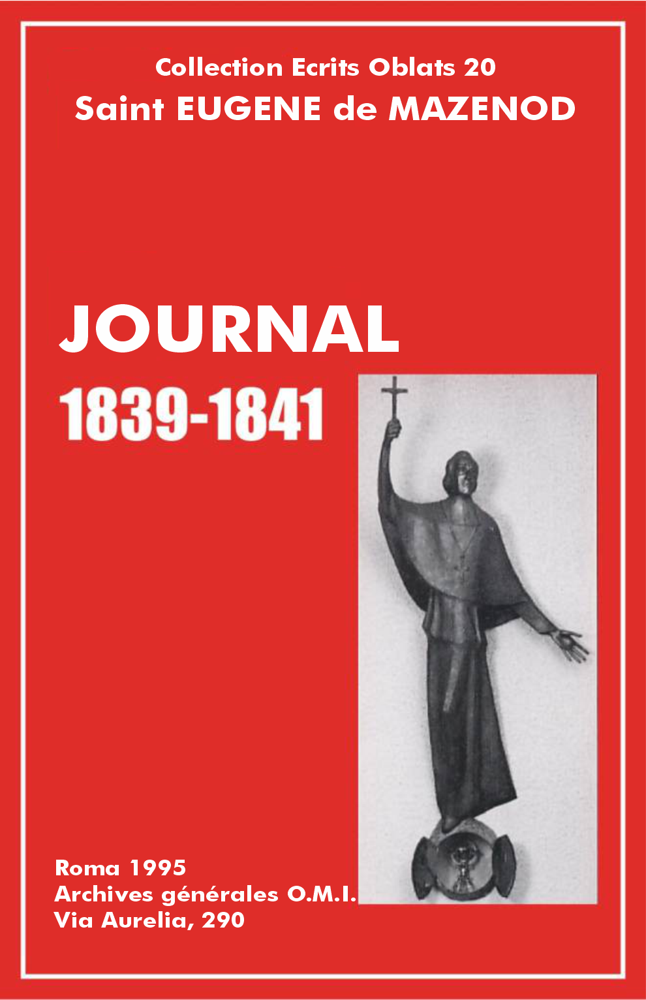

Éscrits Oblats: - 01 - 02 - 03 - 04 - 05 - 06 - 07 - 08 - 09 - 10 - 11 - 12 - 13 - 14 - 15 - 16 - 17 - 18 - 19 - 20 - 21 - 22

Vol.: XX - Journal 1839-1841
Le 1er janvier
[Cahier VII, p. 77] Messe de grand matin dans la chapelle intérieure du Calvaire. Les frères Boissieu et Viala [1] y ont fait leur oblation entre mes mains à la présence de la communauté et des oblats [2] qui sont au grand séminaire. Je suis rentré assez à temps pour commencer ma corvée du jour de l'an [3] qui a duré jusqu'à sept heures du soir.
Mon neveu Louis, novice jésuite, s'est souvenu qu'il y avait quatre mois qu'il ne m'avait donné signe de vie, il m'a écrit une petite lettre pour me dire qu'il est fort content, ce qu'il suppose n'être pas une chose fort aimable à dire à des parents, mais qu'il est bien aise que l'on sache, pour savoir sur quoi compter. Ce cher enfant s'est mépris en me mettant au nombre de ces parents-là. Ce n'est pas d'après les inspirations de la chair et du sang que je pourrais raisonner sur sa vocation. Si j'avais quelque chose à dire ce serait de mon siège élevé d'évêque et considérant les besoins de l’Église et les services qu'elle a le droit d'attendre de ceux qui sont appelés à lui consacrer leur existence. Il est possible que de cette région, fort au-dessus des petits intérêts de la terre et de toutes les affections humaines, j'eusse décidé que tel sujet, dans telle position sociale, pourvu de telles vertus et de tels talents, eût été infiniment plus utile à l’Église ailleurs que chez les pères jésuites. Il est possible que j'eusse prononcé que les révérends pères feraient mieux de ne pas accaparer pour leur société tous ceux que la candeur et l'innocence portent vers eux dans la ferveur du jeune âge si facile à être enflammé par l'exemple et la piété des maîtres respectables qui possèdent toute leur confiance; qu'au lieu de repousser ceux qui, avec un égal attrait pour leur ordre et une piété égale que ceux qu'ils attirent avec tant de bonheur, n'ont pas autant de talents, ou n'appartiennent pas à de si grandes familles, ils seraient plus généreux, ils se montreraient plus [p. 78] désintéressés et plus dévoués au bien de l’Église en conseillant à ces sujets d'élite d'embrasser une carrière aussi sainte que celle qu'ils suivent eux-mêmes, mais qui donnerait en leurs personnes des champions à l’Église, propres à combattre dans les premiers rangs, et à la défendre avec mille fois plus d'avantages qu'ils ne le pourront faire dans les rangs obscurs ou cachés d'une troupe purement auxiliaire, qui emploie la plupart de ses sujets à des ministères sans doute utiles, mais dans lesquels il serait aisé de remplacer ceux qui feront à tout jamais faute ailleurs. Voilà ce qu'un évêque pourrait soutenir tout en respectant beaucoup, tout en aimant l'ordre des jésuites, qu'il aimerait davantage encore s'il pouvait s'assurer que ces pères placent l’Église, et non leur société, en première ligne, dans l'ordre de leur affection.
Vol.: XX - Journal 1839-1841
Le 2 janvier
Lettre du p. Mille [4]. Détails très consolants sur la mission de Ribiers: 200 confirmands, 500 communions. Après le départ de mgr l'évêque, autres 200 hommes à la sainte table. Ils vont commencer la mission à Tallard [5]. Il demande un père provençal pour la retraite de B [6] après la mission de Tallard. Le p. Ancel [7] est toujours content de sa vocation, mais il est retenu au Laus par le triste ouvrage qu'il avait entrepris. Il avait mal calculé son affaire en se chargeant des frais de l'impression. Il lui faudrait 2000 francs que nous ne sommes assurément pas en mesure de lui fournir.
Vol.: XX - Journal 1839-1841
Le 3 janvier
Lettre des deux religieuses qui sont allées à Rome pour se faire délier de leur vœux [8]. Elles me demandent une attestation. Leur intention est de former une petite association dans leur pays ou bien d'entrer dans un autre ordre que celui d'où elles veulent sortir (Les Dames de St-Thomas d'Aix).
Lettre au p. André [9] pour l'encourager dans ses souffrances.
Vol.: XX - Journal 1839-1841
Le 4 janvier
Lettre au p. Gibelli sur sa parfaite conduite à l'égard du p. Albini [10].
Lettre au p. Courtès en lui donnant le p. Telmon pour la mission d'Istres [11]. Je lui rappelle comment il faut se comporter dans ce saint temps pour attirer la bénédiction de Dieu sur un ministère qui attend tout de la miséricorde gratuite de Dieu. Les missionnaires ne doivent pas s'oublier eux-mêmes en travaillant pour les autres. Je lui conseille de ne pas se charger de donner les avis [12]; j'ai appris qu'il les donnait d'une manière oratoire, je lui apprends comment il faut faire pour en retirer les grands [p. 79] avantages que nous en avons toujours obtenus.
Vol.: XX - Journal 1839-1841
[Sans date, peu avant le 14 janvier]
Le dérangement des affaires, des visites et du prodigieux concours de personnes qui ont obstrué mes appartements ne m'ont pas laissé le temps de m'asseoir à mon bureau pour écrire dans mon Journal. J'ai reçu plusieurs lettres et j'en ai écrit quelques-unes à la hâte.
Le p. Aubert (Pierre) m'a demandé des pouvoirs pour se confesser au p. Bise [13], resté seul avec lui à Aix. J'ai répondu affirmativement. Le p. Bise m'a écrit de son côté une lettre comme de coutume pleine de la plus affectueuse tendresse. On ne saurait mieux répondre à l'amour que j'ai pour mes enfants, mais tous peut-être ne l'expriment pas si bien et si volontiers.
M. Mathieu de Bordeaux m'a écrit trois lettres toutes plus amicales. C'est encore un de ces hommes qui sentent et qui sont reconnaissants. C'est le sentiment, c'est le cœur qui parle.
Lettre du p. Guigues au p. Tempier [14]. Il lui apprend les prodigieux succès de la mission qu'ils viennent de donner à... [15]; onze cents hommes ont été admis à la communion. C'était un pays dont on désespérait.
Messe à la chapelle des Filles pauvres [16]. Grande affluence de dames. J'en ai reçu plus de 50. L'association se compose actuellement de 475 dames. Voir le rapport que l'abbé Fissiaux a lu à l'assemblée. Il y a de quoi crier au miracle.
Lettre du p. Courtès. Commencement de la mission d'Istres. Le peuple se rend aux instructions.
Lettre du p. Guigues. Il me demande si dans les missions on doit avoir égard, pour la lecture du Nouveau Testament, aux dignités d'assesseurs, ou bien ne consulter que l'âge en sorte que le plus jeune doive toujours la faire. Je réponds que toutes choses égales, c'est le plus jeune de profession et non le plus jeune d'âge, et que lorsque la mission est donnée par les sujets d'une même communauté les assesseurs doivent garder leur rang de dignité.
Lettre du p. Bernard de la mission des Aygalades [17] qui va à merveille. L'église ne peut contenir l'affluence du monde. Après le discours sur le blasphème, ... [18] hommes sont venus pieusement [p. 80] baiser les pieds du crucifix.
Lettre du p. Mille de la mission de Tallard qui se présente sous de meilleurs auspices qu'on ne l'avait cru d'abord.
Dans la lettre du p. Bernard, je lis ces mots: le père Magnan [19] est toujours d'un caractère impassible, très bon au fait [20] et bon religieux.
Lettre au p. Bernard pour répondre à plusieurs cas de conscience.
Vol.: XX - Journal 1839-1841
Le 14 janvier
Journée assommante [21] comme les précédentes.
Lettre du p. Chauvet [22]. La mission de Roussillon, donnée par le p. Honorat a parfaitement réussi [23]. Celle de Lacoste donnée par le p. Chauvet et le p. Rousset [24], malgré de grandes difficultés, a fini par bien aller. Lacoste est un pays mixte de protestants. Presque toutes les femmes ont communié et tous les hommes qui n'avaient point d'obstacles insurmontables se sont aussi approchés de la sainte table. Les cérémonies ont parfaitement réussi. La plantation de la croix dans l'intérieur de l'église, après que le signe sacré de notre rédemption avait parcouru toutes les rues protestantes, a été superbe.
Lettre de mgr l'évêque de Nancy [25], écrite de Rome. Dans son plan il aurait dû être rendu ici hier et il n'a pas encore obtenu audience du pape. Il l'attribue évidemment sans raison à ce qu'il n'a pas demandé cette audience par mgr le cardinal Lambruschini [26], tandis qu'il avait pris la voie ordinaire de mgr le maître de chambre qui ne fait ordinairement pas attendre au lendemain la réponse qu'il obtient du pape sur-le-champ. Ne serait-ce pas que le pape n'est pas admirablement disposé en sa faveur à cause des embarras que la position où il s'obstine de rester l'a mis deux fois, et aussi sans doute pour avoir été à même d'entendre bien des plaintes des ambassadeurs qui ont dû se mêler de ses affaires. Tout en me disant que mgr l'évêque d'Alger [27] n'a pas soutenu sa réputation de bon prédicateur dans la station qu'il a prêchée à St-Louis [28], il m'annonce que lui, évêque de Nancy, a consenti de prêcher trois sermons à St-Sylvestre in Capite. Il faut avoir la manie de faire parler de soi. Cette indiscrétion achèvera de le mettre à bas à Rome où déjà il avait été si rigoureusement jugé dans son dernier voyage.
Vol.: XX - Journal 1839-1841
Le 16 janvier
Passage du corps de la princesse Marie Christine [29]. Hier soir, le général Sebastiani, accompagné de monsieur Jonjon, aumônier envoyé par le roi, vinrent à 10 heures du soir m'annoncer que le corps [p. 81] de la princesse arriverait aujourd'hui, mais qu'il ne ferait que passer. Il fut concerté que le clergé irait recevoir le corps de la princesse à la Place Castellane où toutes les autorités devaient se trouver, qu'on l'accompagnerait processionnellement jusqu'à la Porte d'Aix en chantant des psaumes et qu'après une absoute le char funéraire continuerait sa marche. Toutes les paroisses ont été convoquées pour se rendre à l'église de St-Joseph d'où elles se rendront pour le convoi quand on les avertira de l'arrivée du corps. Je m'y suis rendu de mon côté. A trois heures et demie, le signal a été donné. Le messager est venu de la part de monsieur le maire en avertir le clergé qui s'est rendu lentement au lieu indiqué, car nous l'avons bien attendu plus d'une demi-heure. J'avais pris les devants dans ma voiture, et nous nous trouvions tous réunis, le général, le préfet, le maire, etc., dans le modeste bureau de l'octroi, quand le général de Rumigny et monsieur l'ambassadeur son frère, sont descendus. Après les politesses d'usage, le général me dit qu'il avait reçu l'ordre du roi de s'arrêter à Marseille. Nous combinâmes sur-le-champ de transporter le corps de la princesse à la cathédrale où il passerait la nuit et je proposai de faire demain un service solennel auquel assisteraient toutes les autorités et le clergé de toute la ville. Le général et monsieur son frère acceptèrent cette offre avec reconnaissance. Le cortège se mit en marche par la rue de Rome, le Cours, la rue d'Aix, le boulevard des Dames et arriva à la cathédrale qu'il était encore jour. Le chant des psaumes alterna tout le temps avec la musique militaire. La foule se pressait sur le passage et la troupe de la garnison faisait la haie. Le clergé des paroisses, le chapitre et moi précédions le corbillard. Les autorités marchaient à la suite. L'ensemble de cette lugubre cérémonie était imposant et on ne peut plus décent. Soit dit en passant, nos autorités, qui ont tant de peine à se tenir la tête découverte même aux processions du saint sacrement, apprirent de monsieur l'ambassadeur et de monsieur son frère, le général aide de camp du roi, que l'on doit tenir son chapeau sous le bras lors même qu'on n'accompagne que la dépouille mortelle d'une simple princesse. Tout le monde à leur exemple garda cette attitude respectueuse, quoiqu'il fît bien froid et un grand vent. Arrivés à la cathédrale, on a descendu la caisse qui renfermait le corps; elle était couverte d'un drap mortuaire de velours violet. Il fallut une douzaine de soldats pour la porter. On la posa momentanément au milieu de l'église où je fis l'absoute, et chacun s'est retiré pour laisser aux ouvriers la place pour tapisser l'église et faire un catafalque. Une compagnie d'un des régiments de la garnison est restée dans l'église. Quatre factionnaires montaient la garde autour du corps, deux prêtres en surplis et étole ont prié toute la nuit.
J'ai cru convenable de prévenir messieurs de Rumigny qui se proposaient de venir me voir ce soir. Je suis allé les chercher à leur hôtel, où je les ai trouvés à table. Le général est venu me recevoir à la portière de ma voiture. [p. 82] J'ai été charmé de la conversation de ces deux messieurs et de l'officier d'ordonnance du roi qui est avec eux. Ils ont tous parlé comme des hommes pleins de foi. Tout ce qu'ils m'ont raconté de la vie et des derniers moments surtout de madame la duchesse de Wurtemberg était extrêmement touchant. L'ambassadeur m'a promis de me faire lire demain la lettre qu'il a écrite à la reine sur ce déchirant événement, ainsi qu'une petite relation faite en italien par monsieur le vicaire général capitulaire de Pise qui a administré les derniers sacrements à la princesse. L'aide de camp du roi m'a bien promis qu'il ne manquerait pas de lui dire combien notre cathédrale est indigne de notre ville.
Vol.: XX - Journal 1839-1841
Le 17 janvier
Ce matin tous les préparatifs convenables ayant été faits, les autorités civiles, administratives et militaires se sont rendues à la cathédrale, messieurs de Rumigny sont venus chez moi. J'en étais déjà parti par un effet de mon exactitude ordinaire dans les cérémonies publiques. Ces messieurs sont venus me chercher à la sacristie, et monsieur l'ambassadeur, fidèle à sa promesse d'hier, m'a lu la lettre qu'il avait écrite à la reine le jour même de la mort de la princesse. Oh! que cette bonne reine aura été consolée par le récit de la belle mort de sa fille. Elle avait recommandé à l'ambassadeur de veiller sur elle et de faire en sorte qu'elle mourût en bonne chrétienne. Il n'a pas eu besoin de faire de grands efforts pour cela; cette pauvre princesse y est venue en quelque sorte d'elle-même, car elle avait recommandé à son frère, monsieur le duc de Nemours, de l'avertir s'il la voyait en danger, et le prince s'est acquitté admirablement de ce devoir. Je regrette que le respect dû au secret d'une correspondance entre monsieur l'ambassadeur et la reine ait mis obstacle à ce que je pusse prendre copie de cette touchante relation. J'assure que c'est édifiant d'un bout à l'autre. Le médecin ayant annoncé que le danger était imminent, le duc de Nemours s'adressa à monsieur de Rumigny pour savoir ce qu'il avait à faire, sa sœur lui ayant fait promettre de l'avertir. M. l'ambassadeur, en homme de foi, lui dit: Monseigneur, consultez-vous vous-même et répondez ce que vous voudriez que l'on fît pour vous en semblable conjoncture. Je vous entends, lui dit le prince, et aussitôt il entra dans la chambre de sa sœur pour remplir sa [p. 83] douloureuse et difficile commission. M. de La Fanteria, vicaire général de Pise, fut introduit et confessa la princesse qui, dès ce moment, entra dans des sentiments héroïques de piété. Elle voulut se lever pour recevoir plus convenablement le saint viatique. Toute l'assistance fut émerveillée des actes touchants que sa religion lui inspira dans ce moment. Son mari était ému comme tous les autres. Elle profita de cette circonstance pour dire à haute voix: Messieurs, voyez ce que peut la religion, je n'ai que 25 ans, je suis heureuse et je meurs contente dans l'assurance de posséder Dieu. Après s'être ainsi occupée de Dieu, elle se retourna vers son mari: "Alexandre, lui dit-elle avec émotion, je t'ai adoré (on sait que cette expression excessive est adoptée en France pour signifier une grande affection), je vais te quitter. Souviens-toi de ce que tu m'as promis, jure-moi encore de te faire catholique ainsi que notre enfant; nous nous retrouverons ainsi dans le ciel". Il paraît que cette pensée la préoccupait beaucoup, car j'ai remarqué dans la relation de monsieur de Rumigny qu'elle revint quatre fois à le rappeler à son mari, et toujours avec le sentiment de la plus tendre affection, et comme d'une chose convenue. Le prince entrait si bien dans les vues de sa pieuse femme, qu'au moment où elle expira, il se retourna vers monsieur de Rumigny et lui dit ces propres paroles: "Monsieur, je suis homme d'honneur, je tiendrai ma parole" [30]. Comme la lettre de monsieur de Rumigny à la reine ne sera peut-être jamais connue par le public, je consigne ici ce fait historique, et j'atteste rendre scrupuleusement les propres expressions que j'ai lues dans la lettre écrite à la reine par monsieur de Rumigny. Je passe sous silence les autres détails très intéressants sur la fin de la princesse. Elle conserva sa présence d'esprit jusqu'au dernier moment, et n'aimait à s'entretenir que du ciel, elle priait le grand vicaire de lui suggérer les sentiments convenables à sa situation. J'ai beaucoup péché, dit-elle, avec une humilité touchante, mais j'ai toujours aimé le bon Dieu, oui j'ai beaucoup aimé le bon Dieu. Ses forces l'abandonnant, elle voulut faire un dernier effort pour marquer sur elle le signe de la croix. Quelques instants après, elle fit un mouvement des lèvres répété plusieurs fois qui fut compris [p. 84] par ceux qui l'entouraient. On lui présenta le crucifix qu'elle baisa avec ferveur puis, tandis que monsieur de La Fanteria continuait à lui parler de Dieu et du bonheur du ciel, elle fixa ses regards vers cette patrie à laquelle elle aspirait et les ferma ensuite pour ne plus les rouvrir. C'est ainsi que rendit le dernier soupir cette princesse digne de la piété de sa mère et dont la mort pourra servir d'exemple aux grands de la terre qui laissent trop souvent si peu d'espoir pour leur salut en quittant ce monde de séduction et de vanité! La princesse Marie est morte en vraie prédestinée.
Après l'office pontifical, j'ai fait l'absoute solennelle et le cortège s'étant de nouveau mis en marche, le clergé, moi en tête, avons reconduit le corps jusqu'à l'Arc de Triomphe de la porte d'Aix en passant par la rue de l'Evêché, la rue Caisserie, la Grand'Rue, le Cours et la rue d'Aix, les troupes de la garnison bordant la haie, les autorités civiles, administratives, judiciaires et militaires marchant à la suite du corbillard, tête nue. Arrivés à la Place d'Aix, le corbillard s'est arrêté, j'ai fait ouvrir la portière et après le chant du répons In paradisum, etc., et l'oraison, j'ai aspergé le corps une dernière fois et nous nous sommes retirés, laissant continuer leur route aux voitures qui ont pris sur-le-champ le chemin d'Aix.
Vol.: XX - Journal 1839-1841
Le 18 janvier
Dans la nuit du 17 au 18, j'ai béni le mariage de monsieur l'avocat Lejard avec mademoiselle Robert. J'ai dit ainsi deux messes en moins de 12 heures et pour des objets bien différents. Une grand-messe de mort et une messe de mariage. Elles m'ont fourni l'une et l'autre les consolations propres à leur genre particulier, car j'ai célébré vraiment avec dévotion la messe pour la princesse dont la sainte mort m'avait tant édifié, et j'ai dit avec consolation la messe pour des époux dont j'avais préparé l'union et dont les sentiments de véritable piété m'étaient une garantie des grâces que j'appelais sur eux par le saint sacrifice et le sacrement. [p. 85]
Vol.: XX - Journal 1839-1841
Le 19 janvier
Lettre du cardinal Pacca toute de la main de ce vénérable vieillard [31]. Cette lettre est pleine d'amitié. Monsieur Alessandri qui me l'a portée m'a dit au reste qu'elle n'était que l'expression d'un sentiment profondément senti et que je ne saurais me faire une idée combien ce saint cardinal m'aime et le bonheur qu'il éprouve à parler de moi. Il revenait tous les jours sur ce sujet avec monsieur Alessandri qu'il a parfaitement accueilli en partie à cause de moi. J'avoue que je suis touché de la bonté du vénérable doyen du sacré collège et qu'elle inspire à mon cœur un redoublement de reconnaissance et d'affection. Je sais au moins à n'en pouvoir douter que ce n'est pas par cérémonie que ce personnage, dont l'estime et l'amitié honorent, me témoigne dans sa correspondance des sentiments que d'autres peuvent feindre, mais que lui éprouve réellement. Du reste je n'ai jamais douté depuis plus de 14 ans que j'ai eu le bonheur de le connaître et de l'apprécier.
Lettre de Joséphine de Coriolis [32]. Elle me rappelle les obligations qu'elle croit m'avoir et me témoigne sa reconnaissance. C'est encore Alessandri qui m'a porté cette lettre de Rome. Ce jeune homme m'a confirmé ce que je savais d'avance que le pauvre évêque de Nancy n'était guère fêté à Rome. Aussi qu'allait-il y faire? Il ne vaut pas la peine de faire un si long voyage pour se ménager des mortifications. Arrivé le 24 décembre, le 12 janvier il n'avait pas encore obtenu une audience du pape. Il semble n'avoir paru à Rome que pour faire le triste pendant de la réception éclatante faite à mgr l'évêque d'Alger. C'est en vérité l'ombre du tableau. Rôle fort humiliant à jouer, mais que je lui aurais annoncé s'il m'avait consulté sur ce voyage intempestif que je lui ai vu faire avec peine.
Lettre à mgr l'évêque de Lausanne par monsieur Espanet qui va prêcher à Genève [33].
Lettre du p. Allard [34]. Très content de son essai en mission.
[p. 86] Départ de mon domestique Pascal Testamire. Cette fois je lui ai laissé donner son congé [35], malgré toute ma pitié pour lui. Son détestable caractère qui révoltait tout le monde m'a par trop exercé depuis trois ans. Cela a été de ma part un héroïque combat de patience; il devait avoir un terme puisqu'à ma souffrance que je pouvais bien offrir au bon Dieu se joignait le mécontentement général auquel je ne devais pas être indifférent. J'ai fait à cet homme un bon certificat et lui ai donné ma bénédiction.
Vol.: XX - Journal 1839-1841
Le 20 janvier
Messe à la maison des Filles pauvres. C'est à la suite d'une retraite que le p. Deplace [36] avait donnée aux dames de l’œuvre qui l'ont suivie avec une grande assiduité. Ça a été vraiment une superbe fête. Il était beau de voir plus de 300 dames réunies dans la chapelle où siégeait le très saint sacrement au milieu de près de 200 cierges, l'évêque venant offrir le sacrifice sur cet autel de feu d'où rayonnaient plus encore d'abondantes grâces que du feu. 150 petites pauvres filles confondues avec celles qui leur servaient de mères et venant se nourrir de la même nourriture céleste. Il y avait là de quoi toucher jusqu'au fond de l'âme. Aussi cette belle messe du saint Nom de Jésus, ces belles paroles de l'introït, etc., adressées à Jésus présent, sensible, visible en quelque sorte, électrisait le cœur. Il m'a fallu pleurer de l'émotion profonde que j'éprouvais. Ce sentiment a paru être partagé par la pieuse assemblée pendant le fervorino [37] que je lui ai adressé avant de distribuer la sainte communion. Il y a eu après la messe une nombreuse réception; ces dames comptent maintenant 450 associées et plus encore, je crois. Tout le monde a assisté à la messe d'action de grâces que j'ai entendue après avoir donné la bénédiction. On est monté ensuite dans la salle pour entendre le rapport de la situation de l’œuvre. Il est on ne peut plus satisfaisant. M. Fissiaux l'a fait imprimer. J'ai dîné à l’œuvre parce que je devais officier pontificalement à vêpres. Le p. Deplace a fait le sermon.
Lettre du p. Guibert [38] des plus consolantes. On sait ce qu'il rapporte des succès du ministère des nouveaux prêtres élevés dans notre séminaire. Leur conduite est si édifiante qu'il fait lire en guise de lecture spirituelle les lettres qu'il reçoit de ces bons jeunes prêtres.
Lettre du p. Telmon de la mission d'Istres. Elle donne de la peine, mais on y fait du bien. Il n'y avait pas un homme qui se confessât à Pâques dans cette paroisse vraiment diabolique. L'incrédulité y a fait des ravages affreux. [p. 87]
Mgr l'évêque d'Alger m'a enfin écrit et c'est une réponse à la lettre que lui a remise l'abbé Landmann. Je ne m'explique pas pourquoi ce bon abbé ne m'a pas écrit après tous les témoignages d'intérêt que je lui ai donnés en toute occasion. Au surplus, la lettre de l'évêque d'Alger est très polie et pleine de sentiments, je crois que le prélat est un peu prodigue de cette monnaie-là, je la prends donc pour ce qu'elle vaut, toujours disposé de mon côté à faire tout ce qui dépendra de moi pour son service et le bien de son intéressant diocèse.
Vol.: XX - Journal 1839-1841
Le 21 janvier
Tous les curés de la ville se sont assemblés chez moi pour le compte annuel de leur casuel [39]. Il résulte de ce rapport que le casuel de toute la ville s'est élevé l'année 1838 à 51 895 francs 90 centimes, réduits par les diverses charges des mandatiers [40], de l'aumône au grand séminaire, etc., à celle de 48 532 frs 30 c. à répartir à raison de 903 frs 4 c. pour chaque curé et 832 frs 5 c. pour chaque vicaire. Il y a eu par conséquent une différence considérable en moins sur le chiffre de l'an passé qui s'élevait brut à 71 645 frs 86 centimes, net 67 843 frs 96 c., ce qui donna 1264 frs 76 c. à chaque curé et 1165 frs 64 c. à chaque vicaire. En 1836, le total brut s'était élevé à 54 168 frs 29 c., net 53 367 frs 12 c., ce qui avait donné pour chaque curé 1012 frs 63 c. et pour chaque vicaire 933 frs 15 c. En 1835, le total brut montait à 66 165 frs 28 c., le net à 64 933 frs 54 c., quotité pour chaque curé 1224 frs 21 c., pour chaque vicaire 1128 frs 81 c. En 1834, total brut 52837 frs 87 c., net ... pour chaque curé 971 frs 09 c., pour chaque vicaire 894 frs 98 c. En 1833, total de l'année 53 212 frs 35 c., déduction faite des frais, restait pour chaque curé 987 frs 10 centimes, pour chaque vicaire 909 frs 75 c. En 1832, total brut 48 956 frs, charges déduites restait pour chaque curé 920 frs, pour chaque vicaire 840 francs. Ce tableau est assez curieux pour que j'en aie voulu faire le relevé. Ainsi la première année de l'établissement de cette parfaite mesure le casuel rendit:
[En 1832].......................................48956 francs
En 1833.........................................53212 francs
En 1834.........................................52387 francs
En 1835.........................................66165 francs
En 1836.........................................54168 francs
En 1837.........................................71645 francs
En 1838.........................................51895 francs.
Vol.: XX - Journal 1839-1841
Le 22 janvier
[p. 88] M. Xavier Richard, adjoint à la mairie et membre de la commission de l'association chrétienne pour la colonisation d'Alger, est venu me soumettre de nouveaux articles au sujet desquels j'ai dû faire plusieurs observations. Comme ces nouveaux statuts réduisent le projet à une opération financière, j'ai fait entendre à m. Richard que je me retirerais, me trouvant tout à fait déplacé à la tête d'une société de ce genre; monsieur Richard a insisté pour que je ne m'arrêtasse pas à cette résolution, protestant des bonnes dispositions de tous les membres de l'association. Je l'ai laissé dans la persuasion que j'exigeais des garanties pour ne pas compromettre ma responsabilité d'évêque. Il a dû en référer à la commission qui attendait ma réponse.
Vol.: XX - Journal 1839-1841
Le 23 janvier
Lettre du p. Honorat, très intéressante sur les deux missions qui se font en même temps dans le diocèse d'Avignon.
Vol.: XX - Journal 1839-1841
Le 24 janvier
Le prince de Mir [41] et monsieur Fournier sont venus pour s'expliquer. Je n'ai pas craint de reprocher au prince la phrase hétérodoxe de son discours. M. Fournier en l'excusant ne lui a pas permis de la défendre. M. Fournier a parlé d'une manière très satisfaisante, j'ai été aussi content de ses principes que de la manière de les exprimer. Il a motivé les changements faits aux articles convenus sur l'impossibilité de les faire approuver par le gouvernement dans le sens primitif. Il a reconnu que mes craintes étaient fondées et très louables, mais qu'il serait le premier à refuser son concours à toute coopération acatholique. Il a montré dans la discussion autant de lumières que de bon sens. Il a fini par me prier d'écrire les conditions que je mettais pour accepter cette présidence d'honneur qui selon lui ferait toute la force de l'association qui sans cela serait une pure spéculation financière qui ne réussirait pas plus que tant d'autres que l'on avait tentées, et dont certainement il se retirerait si je n'en faisais plus partie. J'ai cru ne pas devoir repousser cette proposition.
Lettre à mgr l'évêque d'Alger pour lui recommander les frères du père Reinaud [42]. Je lui dis de ne pas oublier de recommander à ses prêtres de se bien garder d'essayer de convertir un seul arabe parce que monsieur Barthe [43], qui l'a institué évêque d'Alger, défend ce méfait. [p. 89]
Vol.: XX - Journal 1839-1841
Le 25 janvier
Assemblée du conseil de la propagation de la foi. Cette œuvre de zèle prospère dans mon diocèse. Le nombre des associés a considérablement augmenté depuis l'année passée.
Le p. Deplace a prêché à la Trinité un sermon de charité pour l’œuvre de la Providence des Pauvres Filles. J'y ai assisté, le temps n'était pas beau, il y avait peu de monde, mais la quête a été bonne, on a fait 500 francs qui serviront pour bâtir les fondations de la chapelle devenue indispensable.
J'ai réuni chez moi pour la dixième fois messieurs Jauffret, entrepreneurs de la bâtisse de l'église St-Joseph, et monsieur Abbat [44]. Je n'avais jamais pu mépriser les réclamations du curé qui faisait monter fort haut l'erreur de messieurs Jauffret, etc. Trop prévenus contre monsieur Abbat qui, en effet, a la réputation d'être un peu chicaneur, [ils] ne voulaient pas croire que le curé pût avoir raison. Dans l'avant-dernière séance, après avoir entendu et les entrepreneurs et le curé, je me convainquis que les réclamations étaient justes. Aujourd'hui, messieurs Jauffret l'ont reconnu eux-mêmes. Ils offraient un abandon de 2500 francs. J'ai conclu pour 3000 francs et le curé qui en demandait 6000 y a consenti pour terminer une discussion qui nous aurait réduits à plaider.
Vol.: XX - Journal 1839-1841
Le 26 janvier
Ayant appris que monsieur le maire s'était formalisé de ce que le vicaire des Aygalades avait empiété sur la voie publique pour bâtir le piédestal de la croix de mission, j'ai envoyé Jeancard chez lui pour lui faire une politesse dans l'intention de le désarmer; il était dans son droit, et je n'avais plus le temps d'écrire au vicaire pour lui faire réparer son oubli. Ma démarche a arrêté les chicanes qu'on aurait pu soulever. Tout ce qui entoure le maire n'est guère ami de la religion.
Vol.: XX - Journal 1839-1841
Le 27 janvier
Je suis allé aux Aygalades dès le grand matin pour y célébrer les saints mystères et donner la communion à tous les hommes que la mission avait gagnés. Jamais on n'aurait cru à tel prodige dans ce pays le plus dissipé de mon diocèse. On compte, si toutefois il s'en trouve, ceux qui n'ont pas profité de la grande grâce que le bon Dieu a accordée à cette paroisse. Toutes celles des environs en ont voulu profiter aussi et tous les soirs on voyait s'ébranler toutes les populations des quartiers de St-André, de St-Louis, de St-Antoine, de St-Joseph, de Ste-Marthe auxquelles se joignirent plusieurs des Crottes et du Canet, pour venir assister aux instructions, que les missionnaires [p. 90] donnaient aux Aygalades. J'ai trouvé l'église remplie d'hommes. Le vicaire régent [45] m'a complimenté à la porte. Il a relevé dans son discours les bienfaits de la mission, le bien qu'elle avait opéré, le zèle et le talent des missionnaires, etc. Le recueillement a été parfait pendant tout le temps de ma messe et pendant les paroles que j'ai adressées à l'imposante assemblée avant de donner la communion. Près de 500 hommes se sont présentés pour recevoir Jésus-Christ. Dieu sait combien il y en avait qui n'avaient pas eu ce bonheur depuis leur première communion. Jamais je n'avais vu tant de jeunes hommes réunis, j'étais frappé d'en compter dix sur un vieux, je me le suis expliqué plus tard, c'est que ce sont surtout les jeunes hommes de 25 à 40 ans qui ont afflué des paroisses voisines et il n'y avait guère que les vieux du pays. Il y avait de quoi verser des larmes d'attendrissement, et je n'ai pu y retenir les miennes en distribuant le pain de vie à tant d'âmes égarées jusqu'alors, et qui avaient si bien profité de la grâce. J'ai confirmé ensuite 65 hommes qui avaient négligé dans leur enfance de recevoir ce sacrement, et un assez grand nombre de femmes, qu'on a introduites à cet effet. Je me suis étendu sur le bonheur de tous ceux qui avaient profité de la grâce de la mission dans le discours qui a précédé la confirmation, mais je n'ai pas dissimulé celui que j'éprouvais moi-même dans cette mémorable circonstance. L'Esprit Saint planait sur nous. Nous sentions tous ce que j'exprimais. On s'est retiré, pénétré des plus beaux sentiments, pour revenir dans deux heures planter solennellement la croix. Le temps s'est gâté dans l'intervalle, mais la pluie n'a retenu personne. Elle nous a délivrés seulement de tous les galopins de la ville qui seraient venus troubler la fête par leur présence, car qu'y a-t-il de commun entre Jésus-Christ qui régnait dans les âmes de nos convertis et Bélial qui possède tous ces vauriens de la ville!
Malgré la pluie je suis allé bénir la croix sur laquelle est attaché un beau Christ, et elle a été portée en triomphe et sans confusion par des troupes d'hommes qui se relevaient jusqu'à la place devant l'église où nous l'avons élevée. J'ai donné ensuite la bénédiction du très saint sacrement, après quoi j'ai adressé encore la parole à ce bon peuple pour le congédier et lui annoncer que demain on distribuerait à chacun le souvenir de la mission que je venais de bénir. [p. 91]
Vol.: XX - Journal 1839-1841
Le 28 janvier
Depuis que je vais à l'hôpital pour confirmer les pauvres malades, je n'en ai pas rencontré qui eussent des sentiments [tels] que le jeune homme à qui je viens d'administrer ce sacrement. Il attendait mon arrivée avec une sainte impatience, et quand il m'a vu, il n'avait pas d'expressions assez touchantes pour me faire connaître son bonheur. Comme il entrait dans les sentiments que je lui inspirais! Tous les assistants en étaient touchés ainsi que moi qui remerciais Dieu de m'accorder une si douce récompense de l'accomplissement d'un devoir qu'il m'est déjà si doux et si consolant de remplir.
Assemblée des messieurs qui composent l’œuvre de St-François Régis. Quelques hommes seulement s'en occupent activement, mais ils suffiront au travail. Déjà près de cent mariages sont sur le tapis; 70 ont été régularisés, les autres présentent des difficultés plus grandes; quelques-unes sont même insurmontables. Nous avons avisé au moyen de nous procurer quelques ressources pécuniaires. On va s'occuper de cet objet.
Vol.: XX - Journal 1839-1841
Le 29 janvier
Messe au premier monastère de la Visitation. Cette communauté marche toujours bien. Je suis vraiment touché de l'attachement qu'ont pour moi ces saintes filles. C'est un jour de joie que celui où je les visite. C'est qu'elles ont compris combien je m'intéresse à leur communauté qui me donne vraiment de grandes consolations par sa régularité et son union.
Vol.: XX - Journal 1839-1841
Le 30 janvier
Messe de requiem pour Suzanne [46], par anticipation. L'anniversaire de sa précieuse mort n'est que demain; mais j'ai profité du semi-double [47] d'aujourd'hui pour dire la messe de requiem. Demain sera jour double.
Lettre à mgr l'archevêque d'Aix pour lui faire connaître la réponse que monsieur le garde des sceaux avait faite à ma réclamation en faveur des petits séminaires contre la décision du conseil universitaire.
Vol.: XX - Journal 1839-1841
Le 31 janvier
Lettre de mgr l'évêque d'Ajaccio [48]. Passage de monsieur le curé de la cathédrale d'Alger, appelé par mgr Dupuch du diocèse de Tours où il était curé. L'évêque le nomme en même temps chanoine avec 2400 francs de traitement. Je crois pourtant qu'il n'est attiré à Alger que par son zèle. Ce bon prêtre se persuade que j'ai quelque crédit, il me priait de l'employer pour le bien de la colonie. Je lui ai bien affirmé que je ne pouvais lui offrir que mes vœux bien sincères et mes faibles prières. Il n'a pas paru persuadé car, disait-il, il savait bien que c'était à moi que l'on devait la pensée d'avoir établi un évêque à Alger. Je ne prends que ma petite part [p. 92] de cette bonne œuvre à laquelle j'ai la consolation d'avoir un peu contribué par l'heureuse circonstance que la bonté de Dieu me ménagea [49].
J'ai réuni chez moi les missionnaires des Aygalades [50] pour connaître les détails de la sainte œuvre qu'ils venaient de terminer et leur donner mes avis.
Lettre du p. Telmon de la mission d'Istres. Les méchants sont acharnés contre ceux qui viennent se confesser. C'est au point qu'on a arraché [51] l'oreille à un jeune homme qui s'était acquitté de ce devoir. La mission va pourtant bien malgré ces obstacles.
Vol.: XX - Journal 1839-1841
Le 1er février
Lettre de mgr Menjaud, toujours un peu trop inquiet des retards de sa grande affaire [52]. Cela me rappelle que je n'ai pas répondu à sa dernière lettre. C'est le sort de bien d'autres que je vois entassées sur mon bureau et qui resteront vraisemblablement sans réponse.
Vol.: XX - Journal 1839-1841
Le 2 février
Cérémonie de la bénédiction des cierges à la cathédrale. Il faisait bien froid ce matin, mais qu'est-ce que ce froid en comparaison de celui que l'on éprouve ailleurs!
Lettre de mgr l'archevêque d'Aix [53]. Le prélat me fait savoir qu'on a répondu de Rome à la demande qu'il avait faite au nom de tous les évêques de la province, mais qu'on n'y parle que de lui et que l'autorisation n'est que pour son diocèse. Cela prouve qu'à Rome on n'est pas de l'avis de mgr Devie et que les métropolitains n'y sont pas regardés comme des petits papes. A quoi pense ce bon évêque de Belley? Il veut réformer la coutume de plusieurs siècles qui a force de loi dans presque toute la chrétienté. Qu'il s'occupe à réformer les vrais abus. J'ai dit quelque part que je voyais des inconvénients majeurs à ce droit de visite des métropolitains justement tombé en désuétude et qu'aujourd'hui pas un seul évêque le souffrirait si ce n'est peut-être l'évêque de Belley qui aura d'ailleurs le temps de devenir archevêque avant qu'on mette ses principes à l'épreuve [54].
Vol.: XX - Journal 1839-1841
Le 3 février
Office pontifical à St-Victor. L'affluence était grande quoique la messe n'ait pas été en musique, et la piété n'y a rien perdu. J'ai officié à vêpres et au salut. Je ne suis pas resté comme les autres années pour la procession.
Lettre de monsieur Dherbes, recteur de St-Julien. Il ne se porte pas mieux à Nice; il serait tenté de retourner à St-Julien.
Lettre du p. Courtès sur la mission d'Istres. En lire les détails dans la liasse.
Lettre du frère Viala. Il donne des renseignements sur un postulant d'Agde [55]. [p. 93]
Lettre au p. Telmon. Craignant qu'il ne se laisse aller à une trop grande indignation contre les ennemis du bien qui entravent la mission, je lui rappelle l'esprit de douceur qui doit nous animer. Je lui recommande de ne pas s'écarter de nos usages peu connus par le p. Courtès, etc.
Vol.: XX - Journal 1839-1841
Le 4 février
Lettre du marquis de Lubières [56] à l'occasion du paiement qu'il doit me faire; il réclame une créance de son beau-père qui avait fait de mauvaises affaires de concert avec mon père pendant l'émigration. Je rectifierai ses idées dans la réponse que je ne tarderai pas de lui faire.
Vol.: XX - Journal 1839-1841
Le 5 février
Lettre de monsieur Grégoire, recteur de St-André. Je la place dans la liasse des missions, tant ce qu'il me dit du bien que celle des Aygalades a fait à son peuple est édifiant.
Lettre de la reine. Elle est digne de la piété de cette princesse. C'est à l'occasion de la mort de sa fille.
Lettre de Telmon. Toujours sur la mission d'Istres.
Lettre du p. Honorat. Il faudrait la toute transcrire. Toutes les missions du diocèse d'Avignon sont plus admirables les unes que les autres. C'est qu'on les fait exactement selon les traditions de la congrégation. La chose est palpable. Celles du diocèse d'Aix auraient aussi complètement réussi si on s'en était tenu à notre pratique sanctionnée par l’Église et par l'expérience.
Vol.: XX - Journal 1839-1841
Le 6 février
Lettre du p. Magnan. On le demande pour prêcher des retraites. Ce n'est pas la saison de demander des missionnaires. Ils sont tous engagés dès le mois d'octobre, époque de la fixation des travaux.
Lettre de mgr l'évêque de Fréjus [57]. Il m'annonce l'arrivée chez moi d'un évêque syrien qui, ayant abjuré les erreurs des jacobites, a perdu son siège de Damas et n'a plus rien pour vivre. Il me propose de concourir avec d'autres évêques à lui faire un sort convenable; je suis parfaitement de son avis, mais je lui laisse le soin de faire la cueillette. De mon côté je ne manquerai pas à remplir les devoirs de l'hospitalité.
Vol.: XX - Journal 1839-1841
Le 7 février
Lettre à l'association pour la colonisation d'Alger. C'est une exposition de mes principes et les conditions que je mets pour consentir à conserver le titre de président d'honneur. Lire cette lettre dans mon recueil [58].
Le bon Dieu m'a inspiré pendant mon action de grâce de la messe, il y a peu de jours, de rendre à notre Seigneur Jésus-Christ un hommage solennel pendant l'exposition du saint sacrement qui a lieu dans toutes les paroisses les jeudi, dimanche, lundi et mardi gras. Je me suis acquitté de ce devoir dès aujourd'hui, et je remercie mille fois le Seigneur [p. 94] de m'avoir donné cette bonne pensée, car j'ai éprouvé dans cet acte de religion des consolations et un bonheur qu'il n'appartient qu'à Dieu de faire goûter. Voici ce que je me suis prescrit de faire chaque année pendant le cours de mon épiscopat:
dans la semaine de la septuagésime, mon secrétaire donnera avis aux quatorze paroisses de la ville que le jeudi, ou le dimanche, ou le lundi, ou le mardi des 40 heures, j'irai à telle heure adorer le saint sacrement dans telle paroisse. Je combinerai mes visites de façon que dans les quatre jours je puisse visiter les 14 paroisses. Ce sera trois par jour, plus une que je placerai le dimanche. Les curés, ainsi avertis, prépareront un prie-Dieu, et le clergé de la paroisse viendra me recevoir à la porte de l'église, le curé me présentera l'eau bénite, les cloches sonneront à mon arrivée et à mon départ; étant entré dans l'église, tout le clergé et moi nous nous dirigerons vers l'autel. Nous ferons la prostration à deux genoux in plano [59], on me présentera la navette, je mettrai l'encens et j'encenserai le très saint sacrement. Je ferai une seconde fois la prostration in plano et j'irai me placer au prie-Dieu où j'adorerai notre aimable Sauveur de toutes les puissances de mon âme 1-pour lui rendre l'hommage qui lui est dû; 2-en réparation de tous les outrages qu'il reçoit en tout temps mais plus particulièrement dans ces jours de dissolution; 3-pour lui demander toutes les grâces qui me sont nécessaires pour gouverner saintement le peuple qu'il m'a confié; 4-pour lui demander pardon de mes propres péchés et de toutes mes négligences dans son service et dans l'acquittement de tous mes devoirs; 5-pour le supplier de ne pas permettre, qu'étant si heureux de me trouver en sa divine présence maintenant qu'il est caché à mes yeux sous les voiles eucharistiques, je sois séparé de lui pendant toute l'éternité, c'est-à-dire que je lui demande de vivre et de mourir dans sa grâce.
Que ne demande-t-on pas encore quand on est au pied du trône de miséricorde, qu'on adore, qu'on aime, qu'on voit Jésus, notre maître, notre père, le Sauveur de nos âmes, qu'on lui parle et qu'il répond à notre cœur par l'abondance de ses consolations et de ses grâces. Oh! que cette demi-heure est vite passée, qu'elle est délicieusement employée. C'est quelque chose de beau aux yeux de la religion que de voir le premier pasteur se transporter successivement au centre de chaque portion de son troupeau pour y implorer les miséricordes de Dieu et lui donner l'exemple des devoirs qu'il a à remplir à l'égard de Jésus-Christ lorsqu'il se montre à son peuple pour recevoir ses adorations et écouter ses prières. L'évêque devant qui tout un peuple doit s'incliner respectueusement vient se prosterner à plusieurs reprises le front dans la poussière pour s'anéantir [p. 95] devant le Maître souverain de toutes choses, il lui offre l'encens en signe d'adoration, puis se recueillant en sa présence, dans l'attitude la plus humble, il prie spécialement pour ce peuple qui l'entoure et pour tous ceux qu'il représente; le signal donné par le chanoine assistant, on se prosterne de nouveau, et le cœur rempli d'un bonheur qu'on ne pourrait exprimer, on se retire gravement.
Je suis allé aujourd'hui aux Grands Carmes, à St-Lazare et à St-Vincent de Paul. Dans cette dernière église, les fidèles avaient été avertis, il y avait beaucoup de monde.
Au sortir de l'église je suis allé confirmer une protestante dangereusement malade qui avait fait ce même jour son abjuration, avait été baptisée sous condition, confessée, elle avait reçu le saint viatique, l'extrême onction et le mariage; en lui donnant la confirmation, j'ai complété l’œuvre, c'était le sixième sacrement qu'elle recevait dans la matinée, j'ai trouvé cette femme dans les meilleures dispositions. On peut bien dire qu'elle a reçu le paiement entier de la journée quoiqu'elle ne soit arrivée qu'à la onzième heure.
Lettre du p. Guigues du 3 février; lettre du p. Courtès du 6 février.
Vol.: XX - Journal 1839-1841
Le 8 février
Messe au Refuge. J'ai donné l'habit à une postulante, c'est la seconde qui entre dans cette nouvelle communauté dont je suis toujours très content. Après la messe et la cérémonie, les religieuses ont voulu que je bénisse leur maison; j'ai visité ainsi les diverses classes de pénitentes. Ces filles dont un très grand nombre avait communié à ma messe ont prodigieusement gagné depuis que les religieuses de Notre-Dame de la Charité sont venues prendre possession de la maison.
Les dames du bureau m'avaient préparé à déjeuner, mais je leur ai rappelé que dans mon diocèse les fidèles sont invités à jeûner le vendredi de la semaine de la quinquagésime et que l'évêque se garderait bien de manquer au conseil qu'il donne aux autres.
Lettre de monsieur Bussières, curé de Gars [60], diocèse de Digne. Cela m'a tout l'air d'un coup monté par les amis des demoiselles Isnardy, créancières de mon père, je répondrai en conséquence.
Mgr l'évêque de Fréjus m'avait annoncé l'arrivée prochaine d'un évêque syrien jacobite converti. Il est arrivé aujourd'hui avec son interprète, personnage bien nécessaire puisque ce bon prélat ne parle ni entend le français, et qu'il ne comprend pas non plus l'italien. C'est avec le plus grand plaisir que je lui accorde l'hospitalité. [p. 96]
Vol.: XX - Journal 1839-1841
Le 9 février
Lettre à mgr l'évêque de Fréjus au sujet de l'évêque syrien. Mon sentiment serait qu'on lui fournît le moyen de retourner dans sa patrie, mais comme il n'a aucune ressource pour vivre, il faudrait qu'indépendamment de ce que les évêques pourraient faire pour lui nous écrivissions au conseil de la propagation de la foi pour qu'on lui fît une petite pension comme à un missionnaire très utile parmi ceux de sa nation qu'il pourrait travailler à ramener à la foi catholique.
Philippe Marbacher, de Hasle [61], canton de Lucerne, est entré aujourd'hui à mon service aux conditions accoutumées. J'ai tout lieu de croire que je serai content de ce bon jeune homme qui paraît avoir un très bon caractère et des principes religieux qu'il ne demande pas mieux de mettre en pratique.
Vol.: XX - Journal 1839-1841
Le 10 février
Visite aux églises de Notre-Dame du Mont, de St-Joseph, de St-Victor et de St-Charles. A N.-D. du Mont les fidèles, vraisemblablement avertis, ont fait foule dans l'église pendant que j'y ai fait ma demi-heure d'adoration. Il paraît qu'on comprenait l'importance de cette action solennelle à laquelle toute la paroisse devait prendre part.
A St-Joseph, je suis entré dans l'église avec le saint viatique misérablement accompagné comme de coutume, je me suis placé derrière le saint sacrement après m'être prosterné pour le laisser passer. Que je serais heureux si, par tous ces actes extérieurs de mon adoration, je pouvais apprendre à mon peuple comment il doit rendre hommage à Jésus-Christ dans son sacrement d'amour. Je voudrais me faire plus petit encore et m'anéantir en sa divine présence pour relever la gloire qui lui est due et le faire honorer comme il faut. C'est le vœu le plus constant de mon cœur, et je ne laisse jamais échapper aucune occasion pour inculquer ces principes soit par mes paroles soit par mes actions. Mais je voudrais publier dans tout l'univers quelles sont les consolations intérieures que j'éprouve toutes les fois que je m'acquitte de ce devoir. C'est au point que lorsqu'en ma présence, pour se conformer aux règles que j'ai prescrites sous l'épiscopat de mon oncle, on se prosterne à deux genoux en passant devant notre Sauveur, j'éprouve un sentiment indicible de joie et de satisfaction qui m'excite à la tendresse quelquefois jusqu'à verser des larmes. Il me semble que je l'adore par tous ceux qui passent devant lui. Je suis heureux de lui voir rendre ces hommages, j'accompagne par un mouvement intime de mon âme cet acte extérieur qui exalte la grandeur et la puissance de mon Dieu, je dis intérieurement: oui, il en est digne, cet [p. 97] honneur lui est dû; prosterne-toi davantage encore, je l'adore avec toi et par toi, puisse-t-il être connu et adoré par tous les hommes qu'il a rachetés, lui qui est Dieu comme son Père qui n'avait pas besoin de nous, et qui s'est sacrifié pour nous.
De St-Joseph, je suis allé à St-Victor, puis à St-Charles; toutes les expositions étaient mesquines en comparaison surtout de celle de N.-D. du Mont.
Lettre à Courtès, un peu fâché à cause des embarras qu'il me donne avec tous ces changements de mission et des difficultés de déplacer des missionnaires dans la saison avancée où nous sommes.
Vol.: XX - Journal 1839-1841
Le 11 février
Visite des églises de St-Martin, de la Trinité et de St-Théodore. Partout l'exposition est trop simple pour des quarante heures. J'en parlerai aux curés dans les relations particulières qui vont s'établir entre nous pour le compte qu'ils doivent me rendre de leur gestion pastorale.
Lettre au p. Magnan sur le même sujet qu'à Courtès. Je lui refuse d'aller prêcher la dominicale [62] à Pélissanne [63].
Lettre à monsieur le cardinal Pacca pour répondre à celle si amicale qu'il m'a écrite dernièrement, je lui envoie mon mandement pour le carême de cette année. Je sais que cette attention lui fait plaisir. Lettre à son secrétaire pour lui recommander le jeune de Poussel qui va à Rome.
Vol.: XX - Journal 1839-1841
Le 12 février
Lettre à mgr Menjaud pour le rassurer et répondre à tout ce qu'il me dit d'amical.
Lettre du p. Gibelli. Le p. Albini va tout à fait bien, quoique à peine il puisse encore se lever.
Lettre de Chappuis [64] pour me recommander ses cousins. Il me renouvelle l'expression de son attachement filial. Il me demande mon portrait.
Lettre à monsieur Clapier, conseiller municipal. Je lui explique comment il est de mon devoir de rester neutre dans les élections.
Lettre du p. Martin [65] pour m'annoncer qu'il est chargé de la mission de Simiane avec le p. Honorat. Il lui faut, pense-t-il, un troisième missionnaire. [p. 98]
Vol.: XX - Journal 1839-1841
Le 13 février
Bénédiction des cendres à la cathédrale. L'évêque syrien y assistait, il est venu prendre les cendres selon notre usage.
Lettre du cardinal archevêque d'Auch [66].C'est pour me donner des renseignements sur un des prédicateurs qui a commencé sa station de carême ce matin. Je suis tombé des nues à cette nouvelle. Voici la note qu'on fait passer d'Auch au bon cardinal qui me la transmet: Votre éminence se souvient sans doute que, dernièrement, je lui disais que monsieur Gabriel avait des doctrines bien suspectes; mais actuellement je crois devoir ajouter que s'il faut s'en rapporter aux confidences intimes qu'il a faites à certains directeurs du séminaire, il n'a pas la foi, puisque d'après ce qu'il a dit plus d'une fois, confidentiellement, il ne croit pas à l'éternité des peines. Il ne croit pas que la fornication soit un péché mortel; il ne croit pas que désormais il soit nécessaire d'admettre des mystères, vu que tout peut s'expliquer par la raison. Je suis revenu là-dessus, en cas que votre éminence juge à propos d'en dire un mot à mgr de Marseille, pour que sa grandeur puisse se tenir sur ses gardes, à l'égard de quelques têtes qui pourraient se laisser entraîner par le talent du prédicateur du carême.
Y a-t-il là de quoi tomber mort? De suite j'ai fait écrire par mon grand vicaire la lettre suivante: J'ai le regret d'être obligé de vous retirer les pouvoirs de confesser que je vous ai donnés hier. Des renseignements transmis à monseigneur par un évêque de France me mettent dans la nécessité de prendre cette détermination. Je vous conseille de ne pas faire connaître la chose au public, parce que si vous l'ébruitiez, monseigneur serait obligé de la motiver et de vous retirer les pouvoirs de prêcher qu'il ne vous laisse que pour éviter le scandale.
Averti comme je l'étais, je ne pouvais pas faire autrement sans compromettre ma responsabilité. Je veux me flatter que monsieur Gabriel a été mal jugé, je n'ai pas à prononcer moi-même puisque je ne suis pas son évêque. La mesure de précaution que j'ai prise suffit pour ma tranquillité puisque ses accusateurs conviennent qu'il n'y a rien à lui reprocher dans ses prédications.
J'ai assisté à l'exercice qui a lieu le mercredi des cendres à St-Martin. Il y avait beaucoup de monde, le sermon de monsieur de Barjac n'a été qu'une rapsodie fatigante. J'ai donné le salut. [p. 99]
Vol.: XX - Journal 1839-1841
Le 14 février
Lettre au p. Martin. Après avoir beaucoup blâmé cette mission de Simiane et fait sentir les inconvénients de se hasarder sans savoir si on aura les moyens d'exécuter ce que l'on promet inconsidérément, je finis, par compassion pour leur santé, de leur faire espérer que je leur enverrais le p. Magnan.
Lettre au p. Courtès pour lui faire savoir que je me décide à envoyer le p. Magnan à Simiane. Je lui fais part de ma peine de ce que l'on n'a pas insisté auprès de mgr l'archevêque pour qu'il vînt donner la confirmation aux hommes convertis par la mission d'Istres. A défaut de mgr l'archevêque, l'ancien évêque de Digne ou moi aurions pu faire cette bonne œuvre [67].
Lettre au p. Magnan pour lui faire connaître sa destination.
Vol.: XX - Journal 1839-1841
Le 15 février
Lettre au p. Honorat sur la mission de Bonnieux [68]. Elle va si bien qu'il faudra faire deux exercices du renouvellement [69], l'un pour les hommes et l'autre pour les femmes. Lire toutes les lettres d'Honorat qui rend très bien compte de ses missions [70].
M. Gabriel était venu hier. Je sortis pour aller confirmer un malade; je ne pus lui donner qu'un moment d'audience. Il est retourné aujourd'hui pour me faire de nouvelles protestations de son innocence. Il a laissé entre mes mains une déclaration que je voudrais transcrire, quelque pressé que je sois. C'est un acte de justice que je lui dois. La voici: Je déclare devant Dieu et dans le fond de ma conscience que ni dans mes sentiments, ni dans mes expressions, il n'y a jamais rien eu, volontairement du moins, qui fût contraire, ou directement ou indirectement, aux dogmes et à la morale de l’Église apostolique et romaine. Je cite au tribunal de Dieu, comme calomniateur, celui qui oserait avancer le contraire de cette déclaration. Je demande d'être mis en présence de mes accusateurs, car le prêtre ne saurait être le seul dans la société qui pût être accusé sans être entendu.
Il est vrai que dans l'intimité, avec des prêtres, j'ai parlé sur des questions agitées aujourd'hui avec fureur en pays étrangers et même en France, et parmi certains ecclésiastiques. J'ai dit les raisons qu'ils donnaient pour défendre leurs damnables erreurs, mais ce ne peut être que par la plus insigne mauvaise foi que l'on a pu m'attribuer, comme miennes, des opinions malheureuses que j'ai combattues en public et en particulier. Ma vie, sans délit qui ait pu me mériter les censures de mes supérieurs, un ministère toujours honoré dans mon pays et dans l'étranger, semblaient me mettre à couvert d'une semblable accusation. [p. 100] Je repousse de toute l'indignation de ma foi la doctrine que l'on me prête, touchant la doctrine de l’Église sur le sixième commandement, et ici je m'abstiens de qualifier l'accusation. Je suis prêt à proclamer par la voie de la presse, ma foi et ma morale.
Signé: Gabriel, missionnaire apostolique et chanoine honoraire. Marseille, 15 février 1839.
Cette protestation rassure assez ma conscience pour que je puisse laisser continuer la station commencée à monsieur Gabriel. Il ira après plaider sa cause à Auch devant l'autorité qui l'a accusé. Je serai heureux d'apprendre qu'il se sera entièrement disculpé, et qu'il ne faut pas confondre ce prédicateur avec tant d'autres prédicateurs de profession qui finissent par scandaliser tous les pays par où ils passent. Ici, nous en comptons déjà un assez grand nombre pour trembler chaque fois qu'il s'en présente un nouveau: Labruyère, l'infâme Labruyère ouvre la marche de cette indigne phalange, Passenot, Lesbros, Marsillac, un Ferrand, chanoine je crois d'Avignon, Clerc, Dumère [71], ajoutez deux autres encore, et voyez si les intérêts de la vérité sont en bonnes mains et quelles bouches se présentent pour annoncer la parole de Dieu: Peccatori [autem] dixit Deus: quare tu enarras justitias meas et assumis testamentum meum per os tuum? [72]. C'est un métier comme un autre.
Vol.: XX - Journal 1839-1841
Le 16 février
Lettre à Picot [73]. Lettre du bon p. Albini pour me remercier et me donner des nouvelles de l'état de sa santé. Sa lettre est pleine d'humilité et de zèle [74].
Lettre du p. Guibert. Ils ont eu raison de se charger de la grande construction de leur séminaire. Où en seraient-ils s'ils leur était arrivé ce qui arrive à la caserne de la gendarmerie qui vient de s'écrouler avant d'être achevée. C'est ainsi que l'on bâtit en Corse, quand on le fait par entreprise.
Lettre à monsieur l'archiprêtre pour lui signifier que j'entends que l'on se conforme exactement à mon ordonnance promulguée cette année sur la manière d'instruire désormais mon peuple qu'on a trop longtemps laissé croupir dans l'ignorance avec ces ridicules sermons qu'on débitait pour neuf francs, sans autre profit pour personne que celui-là pour l'insignifiant prédicateur [75].
Vol.: XX - Journal 1839-1841
[p.1] [76] Le 17 février
Messe dans la chapelle intérieure du Calvaire, à l'occasion de l'anniversaire de l'approbation de la congrégation. La cérémonie a été comme de coutume extrêmement touchante. Les pères du séminaire s'y étaient rendus; la présence de quelques-uns des missionnaires qui avaient donné diverses missions tout récemment et qui venaient déposer aux pieds de notre Sauveur les lauriers de leurs victoires sur l'enfer qu'ils reconnaissaient ne devoir qu'à la grâce de leur bon Maître; jour empreint [77] de pensées de reconnaissance et d'amour dont chacun a dû être pénétré. Nous avons rappelé aussi les bienfaits de notre vocation et les grâces remarquables spécialement obtenues dans le courant de cette année, au nombre desquelles nous avons compté et la guérison miraculeuse de notre cher père Albini, et la très sainte mort, la mort de prédestiné de notre aussi bien cher frère Morandini. Le frère convers Jean-Marie [78] a fait sa profession pour cinq ans.
Lettre du père Courtès relative à la mission d'Istres. Il n'est point en peine pour les moyens de subsistance de celle de Saint-Mitre [79], il croit son cousin Courtès assez adroit pour pourvoir à tout.
Vol.: XX - Journal 1839-1841
Le 18 février
Deux confirmations en ville, après celles dans ma chapelle. L'un de ces malades était un protestant qui avait fait abjuration hier dans les plus édifiantes dispositions. Je suis arrivé à temps, mais je ne crois pas qu'il passe le jour. La chambre était pleine de pieuses personnes qui se réjouissaient de son retour à l’Église, et qui avaient orné un joli autel et sans doute contribué à le secourir.
Vol.: XX - Journal 1839-1841
Le 19 février
Lettre du comité de la société chrétienne pour la colonisation d'Alger en réponse à la mienne qui fixait les principes et posait les conditions pour que je puisse consentir à accepter le titre de président d'honneur de cette association [80]. A défaut de secrétaire, je vais la copier:
Monseigneur, le comité chargé d'organiser la société chrétienne pour la colonisation et la civilisation de l'Afrique [81] a lu avec une respectueuse attention la lettre que vous avez bien voulu lui adresser pour lui faire connaître les conditions auxquelles vous acceptez la présidence d'honneur du conseil supérieur qui aura la direction de cette société.
En modifiant la rédaction des statuts primitifs, le comité s'est renfermé, il est vrai, dans des termes généraux, et n'a inséré aucun article qui exprimât spécialement le caractère catholique à la société chrétienne; mais il a pensé que ce caractère ressortait suffisamment du patronage sous lequel il avait tenu à placer cette société [p. 2]. Qui pourrait craindre en effet qu'en appelant deux évêques à présider les deux seules assemblées auxquelles sera confiée l'administration de la société, on aurait jamais la pensée de leur proposer aucun acte tendant à favoriser l'établissement et la propagation d'un autre culte que le culte catholique?
Tous les membres du comité, pénétrés de la sagesse et de l'esprit de charité qui vous ont dicté les principes exprimés dans la lettre dont vous les avez honorés, ont délibéré qu'elle resterait déposée aux archives de la société, et ils vous prient de trouver ici, monseigneur, l'assurance que s'ils ont entendu ne point exclure de la compagnie les chrétiens qui ne professent point la foi catholique, s'ils ont cru devoir les faire participer aux bienfaits qui sont le but de la société, ils ont bien entendu néanmoins que la société ne contribuerait directement, dans aucun cas, à la construction d'aucun temple, au traitement d'aucun ministre d'un culte dissident, ni à laisser prendre rang comme religion dans la compagnie et ses établissements à aucune croyance que celle qui repose sur la foi catholique apostolique et romaine.
C'est dans ces sentiments et avec reconnaissance, monseigneur, que le comité reçoit l'honneur que vous voulez bien lui faire d'accepter la présidence d'honneur du conseil supérieur, et vous prie d'agréer, monseigneur, l'expression de ses sentiments respectueux.
Signé: F. Fournier, président, Dervieu, secrétaire.
Marseille, le 8 février 1839.
L'original est dans mon grand portefeuille rouge [82].
Fissiaux [83] étant venu me chercher pour donner la confirmation à une des petites orphelines qui se meurt, j'y ai conduit l'évêque syrien qui a visité la maison avec sa gravité ordinaire, et sans témoigner le moindre étonnement de ce qu'il voyait.
Lettre du chevalier de Collegno [84]. Il approuve fort mon projet de pélerinage à Verceil, mais il voudrait que je ne le fisse pas au mois de mai parce qu'il est obligé d'aller à Gênes à cette époque, pour les affaires de l'université. Il tâchera pourtant de combiner les choses de manière à ce que nous ne nous manquions pas. [p. 3]
Lettre de mgr l'évêque d'Alger. Il m'envoie une adhésion des notables du pays à l'association chrétienne, mais c'est dans le sens de la première rédaction des articles. Je ne sais ce qu'il pensera de la nouvelle. Par un billet à part, il m'écrit: "Bien cher Seigneur et ami, à ma lettre officielle, je joins un mot... Indépendamment de la couleur propre que nous voudrions voir porter à cette société, il y a un point essentiel, c'est l'éloignement du prince de Mir qui ne peut pas rester là et qui en Afrique, par sa seule apparente participation, gâterait et empêcherait tout. Sous le double rapport religieux et social ou temporel ce n'est pas, et ne peut pas être notre homme. Il m'en coûte de me servir de termes aussi clairs, aussi tristement positifs, mais je ne puis pas faire autrement."
Cette confidence me jette dans un grand embarras. Puis-je la garder pour moi? Ce que l'évêque me dit est-il assez certain pour que je puisse le confier à ceux qui traitent avec le prince et qui comptent sur sa coopération pour la réussite de leur entreprise? J'ai besoin d'y réfléchir.
Lettre à monsieur l'abbé Rey [85], supérieur des Frères de St-Joseph pour lui demander au moins deux de ses frères pour nos jeunes détenus.
Vol.: XX - Journal 1839-1841
Le 21 février
Je suis allé entendre la messe de notre évêque syrien. Il part aujourd'hui pour Aix, Avignon et Lyon. Je l'ai recommandé aux deux archevêques et au président de la propagation de la foi pour qu'on vienne à son secours.
Lettre de l'évêque de Digne [86]. Ce saint prélat a cru devoir me faire compliment sur mon mandement. L'esprit de Dieu qui l'anime lui a fait goûter ce que le zèle indispensable de ma charge m'a inspiré.
Lettre à l'évêque d'Ajaccio [87]. Je lui ai envoyé le procès-verbal que monsieur Jacquemet m'avait fait passer pour lui.
Vol.: XX - Journal 1839-1841
Le 22 février
Lettre au père Albini. Pour sa consolation et celle de nos pères de Corse, je lui rends compte de toutes les bénédictions que Dieu a répandues cette année sur tous les travaux des missions [88].
Lettre de monsieur Espanet. Il m'écrit sur le même ton qu'il me parlait depuis quelque temps. Est-ce par flatterie, est-ce pressé par le remords et pour réparer une autre manière de faire antérieure qu'il se reproche? J'opinerais pour la seconde suggestion, et je tiens pour sincères les sentiments qu'il m'exprime [89].
Le curé d'Istres [90] a dîné chez moi. Il est dans l'admiration de tout ce qu'il a vu pendant sa mission. [p. 4]
Vol.: XX - Journal 1839-1841
Le 23 février
Lettre au père Honorat pour lui faire goûter l'emploi que j'ai dû faire du p. Ricard [91] et du p. Magnan, et répondre à ses lettres si intéressantes sur les missions qu'il donne. Lettre à ma mère. Lettre au père Guibert. Je le mets au fait des travaux de la congrégation et je réponds à plusieurs de ses lettres.
Vol.: XX - Journal 1839-1841
Le 24 février
Lettre du roi pour me remercier de ce que j'ai fait pour sa fille la princesse de Wurtemberg [92]. Monsieur Lavison est venu pour terminer l'affaire Trinquier. Il a payé ce qu'il devait encore. Monsieur Tempier l'a encaissé pour le compte de la congrégation [93].
Lettre de monsieur Merindol, juge d'instruction. Il m'écrit pour me faire savoir qu'il a trouvé dans les prisons une pauvre mère de famille qui y est retenue par monsieur Jonjon [94]. Il me demande ma médiation pour adoucir les rigueurs de ce créancier peu humain.
Vol.: XX - Journal 1839-1841
Le 25 février
Lettre de mgr l'archevêque d'Avignon [95]. C'est déjà une réponse à celle qui lui a été portée par l'évêque syrien, ce qui me prouve que ce prélat n'a pas été retenu à Aix.
Lettre de Courtès. Il me demande de garder le père Deveronico [96]. Je lui ai répondu d'avance en lui écrivant l'autre jour.
Visite de monsieur Malvilan, commissaire de police qui a donné sa démission. Il est venu me prier de faire courir une souscription pour lui procurer le moyen de vivre en attendant la liquidation de sa pension de retraite. C'est en effet chose facile.
Lettre de monsieur le préfet [97]. Il me transmet la réponse du garde des Sceaux à son envoi de la délibération du conseil municipal. Au bas de cette lettre, monsieur Barthe a écrit de sa main: La construction d'une cathédrale à Marseille me paraît une nécessité. Le gouvernement ne perdra pas de vue le vœu que vous venez de me transmettre. Signé: Barthe.
Lettre à monsieur le préfet pour le remercier de sa communication.
J'ai déposé maintes fois dans ce Journal mes justes plaintes sur la conduite du père Kotterer [98]. Je lui dois de consigner de même le souvenir des consolations que m'a fait éprouver son retour. Depuis que, par une grâce spéciale de Dieu, il est rentré dans le bercail, il s'acquitte de ses devoirs comme il faut, et il n'a pas donné un seul sujet d'inquiétude. Il n'a pas été très expressif dans la manifestation de son repentir, mais il tâche de faire oublier ses écarts par la régularité de sa vie. Jamais nous n'avions rien eu à lui reprocher du côté des moeurs, mais il s'était fait une conscience bien large pour ses autres devoirs. C'était une exaltation d'imagination, [p. 5] c'était un travers d'esprit qui l'avaient mené bien loin, si bien qu'il s'en est peu fallu qu'il ne se perdît. Mais la pensée de ses engagements sacrés a été le fil qui l'a ramené dans la voie. Dieu qui voulait son bien n'a pas permis que je consentisse à rompre les liens qui l'unissaient à lui et à cette sainte congrégation dont il voulait se séparer. Cette erreur d'un moment sera réparée. Heureux de son retour, je ne lui ai jamais fait le moindre reproche. Je me suis contenté d'en remercier Dieu du fond de mon cœur.
Je veux aussi remarquer combien je suis satisfait de la conduite de deux autres sujets qui avaient donné du chagrin au père Guibert, et sur le compte desquels ce père avait été obligé de m'écrire des choses bien pénibles à mon cœur. Jamais rien contre les moeurs. Pas l'ombre d'inquiétude sur ce point. Mais hors de là, plus qu'il n'en fallait pour autoriser le sentiment du père Guibert qui opinait pour qu'on les expulsât de la congrégation, et ce sentiment était partagé par d'autres. Quelque chose me disait dans le fond de mon âme que le mal n'était pas sans remède, que ces deux pères, étant fort jeunes, leur imagination avait pu se monter, qu'ils se laissaient peut-être guider par des préventions défavorables à leur supérieur local dont ils interprétaient mal la manière de faire à leur égard. Ils ont beaucoup d'esprit l'un et l'autre. L'amour-propre a pu les séduire et le bon Dieu les punir momentanément en les livrant à leur propre esprit. Que fallait-il pour remédier à ce mal? Qu'ils s'humiliassent devant le Seigneur, qu'ils reconnussent leurs torts. Après cela, j'attendais tout de la bonté de Dieu. Pour cela il fallait les rappeler auprès de moi. C'est ce que j'ai fait, et je n'ai pas été trompé dans mon espérance. Ces deux bons sujets sont tout doucement rentrés dans leur état normal, tout à leur devoir; loin de mériter le moindre reproche, ils se conduisent en bons religieux et il faut les contenir pour qu'ils ne fassent pas au-delà de leurs forces. Et moi qui jouis en père de leur régularité, je bénis Dieu de m'avoir inspiré la conduite que je devais tenir à leur égard pour les sauver. Je n'avais pas cessé de les aimer alors même qu'ils me donnaient le plus de souci, qu'on juge ce qu'il en est maintenant qu'ils marchent bien dans la voie de leur sainte vocation.
Je veux dire encore que l'un de ces deux sujets a écrit de lui-même au père Guibert une lettre des plus touchantes pour lui exprimer, dans les sentiments d'une sainte et vraie humilité, le regret qu'il éprouve de l'avoir contristé par sa conduite pendant qu'il vivait sous son obéissance. Cette lettre m'a beaucoup édifié, et ce cher enfant s'est bien élevé à mes yeux en s'humiliant comme il l'a fait. Je dois le nommer puisque dans mes lettres on pourra rencontrer les plaintes du père Guibert. C'est le père Reinaud, l'autre le père Telmon [99]. Je les presse l'un et l'autre en esprit contre mon cœur, en écrivant ces lignes.
Vol.: XX - Journal 1839-1841
[p.6] Le 26 février
Lettre à Pascal [100] en réponse à la sienne. Lettre au roi en réponse à celle qu'il m'a écrite pour me remercier de ce que j'avais fait pour sa fille, feue la princesse de Wurtemberg.
Vol.: XX - Journal 1839-1841
Le 27 février
Messe à la chapelle du Refuge [101] pour la réception d'une trentaine de dames. J'ai voulu prouver à ces dames que je ne protégeais pas exclusivement l’œuvre de la Providence des Filles pauvres.
Arrivée de l'évêque de Nancy [102] à son retour de Rome.
Vol.: XX - Journal 1839-1841
Le 28 février
Le bon monsieur Flayol [103] est venu me demander la permission de dire la sainte messe. Il m'a paru assez bien remis pour lui accorder cette faveur, mais que ce vénérable prêtre est édifiant! Quelle humilité, quelle obéissance, quelle reconnaissance pour l'intérêt que je prends à lui, et surtout de ce que je lui accorde de pouvoir offrir le saint sacrifice. Sa ferveur qu'il exprimait naïvement me touchait jusqu'au fond de l'âme. Comme je lui témoignais le désir qu'il se fît assister par un prêtre pour me rassurer parfaitement sur les absences momentanées que son état de faiblesse mentale me faisait craindre, il me répondait qu'il se sentait tout à fait bien; c'est à cause de la consécration, je lui disais. Ce brave homme a frissonné à l'idée de profaner les saints mystères: plutôt me réduire toute ma vie à la condition de servant et me contenter d'entendre ainsi la messe, m'a-t-il répondu promptement. Quel homme vénérable! Il a servi l’Église toute sa vie, il s'est exposé pendant trois ans à une mort inévitable, s'il eût été saisi quand il se tenait caché à Pourcieux [104] pour procurer les secours de la religion au peuple de ces contrées. Il a été constamment l'exemple de tout le clergé par la régularité de sa vie et l'exercice du saint ministère en excellent ouvrier, et il parle de ses péchés à expier avec une humilité profonde. Il m'a fallu user d'autorité pour l'obliger à discontinuer le jeûne qui lui est très nuisible dans son état actuel. Qu'il est douloureux de voir des hommes de cette trempe disparaître du milieu de nous! On retrouve difficilement tant de vertus. Tels qu'ils sont, même qu'ils ne peuvent plus travailler, c'est une grande perte pour l’Église quand le bon Dieu les appelle à lui. Dans le Chapitre, j'en compte trois de ce genre. C'est d'abord ce bon Flayol qui est tout à fait au bout, puis monsieur Bonnafoux [105] et le bon père Mie [106] qui font encore force de voiles, mais qui sont bien vieux ou bien infirmes.
M. Gabrielli, curé de Tralonca en Corse, vient de me rapporter des choses si édifiantes du p. Albini que je l'ai prié de m'envoyer copie des procès-verbaux qui en furent faits. Il ne s'agit rien moins que d'une suite de miracles qui mettent ce [p. 7] cher père au niveau des saints thaumaturges qui ont annoncé en divers temps la parole de Dieu en apôtres. J'attends ces procès-verbaux pour en consigner les détails par écrit. Les premiers miracles furent faits à l'époque de la mission de Moïta et surtout à la plantation de la croix qui est devenue une croix miraculeuse au pied de laquelle toutes les populations accourent pour obtenir des grâces et des guérisons, et Dieu ne cesse depuis lors d'en opérer. Nous pouvons considérer cette faveur insigne comme la sanction que Dieu a voulu donner au ministère de notre congrégation en Corse. Ce doit être le sujet de notre éternelle reconnaissance.
Lettre du p. Courtès pour me demander du secours pour la retraite qu'il vient de promettre au curé de Rognes [107]. Je lui ai répondu sur-le-champ que s'il m'avait consulté avant de prendre un pareil engagement il ne se serait pas exposé à être dans l'embarras et à me mettre en peine. Le p. Telmon, sur lequel il avait jeté son dévolu, s'est tellement abimé à la mission d'Istres qu'il m'a fallu lui interdire la prédication et même la confession. C'est tout au plus si, après un repos absolu de l'organe lésé, il pourra se risquer à aller à Istres pour y préparer ceux qui doivent être confirmés.
Le chanoine Chervaz [108] est venu prendre congé de moi. Il n'est pas du tout effrayé du changement de constitution dans son pays. Je désire que le clergé du Valais ne soit pas la dupe des auteurs de cette réforme. Moi je vois tous les cantons suisses perdre successivement leurs moeurs antiques au profit de l'irréligion. Le mal fera des progrès dans le Valais à cause du voisinage du canton de Vaud qui y a déjà propagé son esprit.
M. Baragnon est venu nous proposer de lui vendre notre maison de Nîmes. Les conditions qu'il nous propose ne me conviennent pas. Il veut ne nous donner que 30 000 francs payables en cinq ans, l'intérêt à quatre pour cent [109].
Vol.: XX - Journal 1839-1841
Le 1er mars
J'ai terminé l'affaire avec monsieur Baragnon. La maison lui est vendue pour le prix de 30 500 francs. Tout ce que j'ai pu obtenir, c'est de rapprocher les époques de paiements. Plusieurs raisons m'ont déterminé à conclure ce marché. En l'état, la congrégation se trouve dans le cas prévu dans ma convention avec feu mgr l'évêque de Nîmes [110]. Elle a été repoussée du diocèse par une force majeure. Bien loin d'être rappelée par l'évêque, lorsque [p. 8] je proposai de recommencer l’œuvre, on n'en voulut pas. Bien plus, monsieur Laresche, alors grand vicaire, appela un missionnaire étranger avec l'approbation de l'évêque pour fonder un autre établissement que le nôtre. Ce nouveau supérieur ne craignit pas d'écrire à nos pères que, choisi pour leur succéder dans l'exercice des missions dans le diocèse, il les priait de lui céder la maison. En voilà plus qu'il n'en faut pour établir que ce n'est pas la congrégaton qui se retire mais, qu'après avoir été chassée brutalement par l'émeute, elle a été assez impoliment congédiée par l'autorité ecclésiastique qui aurait dû un peu mieux apprécier les grands services qu'elle a rendus au diocèse en se sacrifiant corps et biens. N'est-ce pas dans ce diocèse que le père Marcou a été empoisonné d'où s'en est suivie sa mort [111]. Le père Suzanne n'y a-t-il pas craché le sang et il ne s'en est plus relevé. Le père Mie n'a-t-il pas été frappé d'apoplexie dans l'acte même d'une mission qu'il donnait dans ce diocèse! On a laissé à Dieu le soin de les récompenser. Voilà un an que le nouvel évêque [112] est installé. A-t-il fait la moindre démarche pour sonder nos dispositions? Non, il a continué de garder ce missionnaire qui avait été appelé pour nous remplacer. Ce n'est pas à la congrégation à s'offrir une seconde fois. Elle n'usera donc que de son droit en vendant la maison, et comme il était expressément stipulé qu'elle ne serait tenue à restituer les petites sommes que le diocèse lui avait fournies que dans le cas où elle se retirerait de son plein gré, sans y être forcée par aucune cause étrangère à sa volonté, elle ne rendra rien, d'autant plus que le prix de la maison n'excédera nullement les fonds qu'elle avait employés pour l'acheter et l'approprier. C'est assez d'avoir perdu nos sujets au service du diocèse sans qu'il faille encore y perdre notre argent qui nous est nécessaire pour continuer notre œuvre. Cela est assez expliqué.
Lettre de l'abbé Rey de Lyon. Il me refuse les Frères qu'il avait promis à monsieur Fissiaux pour les jeunes détenus.
Vol.: XX - Journal 1839-1841
Le 2 mars
Lettre à monsieur le cardinal d'Isoard, archevêche d'Auch. Ma lettre est datée du 20 février. Je lui envoie la profession de foi de monsieur Gabriel. Après l'avoir entretenu de cette affaire, je lui fais des reproches assez vifs sur l'habitude qu'il a de passer à Marseille, en allant à Lyon, sans me le faire savoir; je lui demande s'il a oublié notre ancienne amitié, ou bien s'il fait céder des sentiments, qui ne doivent pas plus être effacés de son cœur que du mien, à quelque étiquette de rang ou de dignité. Je sais qu'un évêque (l'archevêque d'Aix) a manifesté à cet [p. 9] égard une opinion qui pourrait n'être pas la sienne, mais moi, vis-à-vis de lui, j'aurais été le chercher pour l'embrasser, ne fût-il pas cardinal, dans quelque recoin de mon diocèse où j'aurais pu le trouver.
Lettre du père Bernard. La mission de St-Mitre se présente sous les meilleurs auspices. Cette lettre est consolante, vu les obstacles auxquels on s'attendait.
Lettre de Courtès. Il veut savoir si l'on compte sur lui pour la retraite d'Istres. Il se contentera du p. Bollard [113] pour celle de Rognes, mais on pense ici que ce prêtre ne lui serait d'aucun secours.
Lettre à Chappuis, telle qu'un si brave enfant la mérite; il m'a demandé mon portrait, je le lui enverrai.
Vol.: XX - Journal 1839-1841
Le 3 mars
Lettre à l'évêque de Nancy. Visite du prince de Mir. Il est venu me présenter les prémices du catholicisme d'Algérie. C'est un musulman baptisé en 1827 [114]. Il faudra pourvoir aux besoins de sa femme et de sa fille.
Je suis allé au sermon à St-Cannat. Le prédicateur s'appelle Suarez. Son sermon ne valait pas la théologie de son parent [115].
Vol.: XX - Journal 1839-1841
Le 4 mars
Messe à St-Martin pour le premier jour de la neuvaine de saint François-Xavier. L'église était pleine de monde, et tout ce qui était dans l'église a communié. J'ai adressé à l'assistance quelques paroles de félicitations. A peine rentré, il m'a fallu aller confirmer une pauvre petite orpheline qui se meurt.
Vol.: XX - Journal 1839-1841
Le 5 mars
Conseil. Inutilité de mes démarches auprès de madame Garcin pour la raccommoder avec sa belle-fille. M. Théophile, son fils, n'était venu avec elle que pour soutenir son courage dans le refus qu'elle devait me faire. M. Dravet a fait une grosse bévue en consentant que ce monsieur accompagnât sa mère.
Fissiaux est venu m'annoncer que le préfet avait visité la maison destinée aux jeunes détenus. Il m'avait présenté le règlement l'autre jour; je le trouvai bien.
Vol.: XX - Journal 1839-1841
Le 6 mars
Envoi de la lettre de mgr l'évêque d'Alger à la commission de la colonisation.
Vol.: XX - Journal 1839-1841
Le 7 mars
Lettre au père Dassy pour lui dire franchement que sa neuvaine est à refaire [116].
J'ai dit au père Telmon d'écrire au père Courtès qu'il me paraît convenable qu'il soit de la retraite d'Istres.
Monté en voiture pour me rendre au sermon à la Trinité, le cocher s'est si bien fait attendre pour se raser qu'il m'a fallu descendre et rentrer chez moi; l'heure à laquelle j'aurais dû arriver étant sonnée avant que je partisse. Ce sont de ces petites contradictions qui forment le caractère. [p. 10]
Vol.: XX - Journal 1839-1841
Le 8 mars
Lettre au p. Gibelli. Lettre au p. Bellon [117].
Un vicaire de St-Ferréol est venu m'annoncer qu'en creusant dans la rue devant la grande porte de l'église des Augustins on avait trouvé des ossements, ce qui n'est pas surprenant puisqu'autrefois l'église dépassait la rue qui a été prise dans l'église même, mais ce qui les a émerveillés, c'est que les ouvriers ont découvert une grande plaque de marbre qu'on supposait recouvrir le tombeau d'un évêque de Toulouse appelé Cyprien. J'ai envoyé monsieur Tempier sur les lieux. Il a recueilli des curieux, qui se trouvaient dans la foule que la curiosité avait attirée, que l'inscription portait: Divo Cypriano, episcopo Tolon., etc., qui suppose que c'était le marbre d'un autel élevé à saint Cyprien, évêque de Toulon, par la famille de Montolieu en 1630 à ce que l'on croit. Nous saurons mieux cela plus tard.
N'ai-je pas trouvé à la Sainte-Baume un marbre portant l'inscription d'un don fait par un de mes ancêtres, en 1600 et tant, pour qu'il brûlât sans cesse des lampes devant le tombeau de sainte Magdeleine en réparation des profanations faites par les Huguenots. On est curieux de se rattacher ainsi à des faits historiques antérieurs. Il fait plaisir de rencontrer des traces du passage rapide sur cette terre de ceux qui nous ont précédés, surtout lorsque c'est pour prouver quelque bonne action de quelqu'un des nôtres. Ce sentiment est raisonnable et peut être avoué.
L'évêque de Nancy est retourné de sa course à Villelaure [118]. Il nous racontait les travaux admirables que son frère, le marquis de Janson, a fait dans cette terre, soit pour l'industrie soit pour l'agriculture. Je lui ai demandé s'il ne savait pas qu'on le grugeait de tous côtés, et que ses ouvriers le prenaient à l'aise quand il avait tourné le talon. Quant à sa spéculation sur les sucres, on prétend à Marseille qu'il y perd cent mille francs par an. C'est acheter bien cher la gloire d'être un grand industriel.
Vol.: XX - Journal 1839-1841
Le 9 mars
Monsieur de Montolieu est venu avec monsieur l'avocat Fouque, auteur des Fastes de Provence, pour me demander l'autorisation de placer dans l'église St-Ferréol le marbre que l'on a découvert en fouillant dans la rue à l'endroit où se prolongeait autrefois l'église. Je lui ai accordé volontiers sa demande. j'ai même écrit à monsieur le maire pour l'en prévenir [119].
L'inscription a été transcrite. Elle est fort honorable pour la famille de Montolieu, et précieuse à cause du souvenir qu'elle [p. 11] rappelle de saint Cyprien, premier évêque de Toulon [120]. La voici: STA VIATOR. MONTE OLIVENSES QUOS AB IMMEMORABILI AETATE, MILITIAE TERRA MARIQUE STRENUITAS, IN DIVO CYPRIANO EPISCOPO TOLONENSI SANCTITAS PLURIMIS ABHINC SAECULIS ILLUSTRARUNT, HIC JACENT. UT NOBILTAS, QUA NULLA MASSILIAE CLARIOR, IN AEVUM VIRTUTIBUS FULGEAT, UT STRENUITAS IN HOSTES GALLIAE ET ECCLESIAE FORTITER SPLENDEAT, UT SANCTITAS PRAECELLENTISSIMI PRAESULIS, NEC NON ATAVI IN POSTEROS PRODEAT. ORA ET ABI. HOC MONUMENTUM ANTIQUITATE COLLAPSUM JAM RESTITUTUM PONEBAT LUDOVICUS DE MONTE OLIVO, EX PREFECTIS REGIARIUM TRIREMIUM UNUS, ANNO SALUTIS MDCLXXXXV.
"Passant arrête. Ici repose la famille de Montolieu, illustre de temps immémorial par sa valeur dans les armées de terre et de mer, célèbre depuis plusieurs siècles par la sainteté dans la personne du divin Cyprien (c'est ainsi que le traducteur rend le mot Divo, ignorant que l'on se sert de ce terme pour exprimer la sainteté; disons donc tout simplement de saint Cyprien), évêque de Toulon. Pour qu'une noblesse, telle que Marseille n'en vit pas de plus illustre, brille à jamais par ses vertus, pour qu'un courage éprouvé contre les ennemis de la France et de l’Église conserve un puissant éclat, pour que la sainteté de l'excellent prélat, un des ancêtres de cette famille, se manifeste à la postérité. Passant prie et poursuis ta route. Ce monument tombé de vieillesse (pourquoi pas de vétusté) a été rétabli par Louis de Montolieu, l'un des commandants des galères du roi, l'an du salut 1695". J'ai copié la traduction du Journal.
Je ne me suis pas encore fait expliquer comment les mots de Monte Olivo et Montolivenses se traduisent pas Montolieu. La famille le sait apparemment puisque monsieur le marquis de Montolieu revendique ses droits et que le traducteur n'a pas été inspiré par monsieur de Montolieu, trop simple et trop modeste pour se faire valoir et qui, d'ailleurs, n'a appris que par le Journal la découverte du tombeau de ses pères. Il me semble à la vérité qu'il m'a dit que le tombeau de sa famille était autrefois dans l'église des Augustins, précisément celle où la pierre tumulaire vient d'être découverte. Mais conçoit-on que, lorsqu'on coupa cette église, on ait eu la barbarie d'enfouir un si beau monument! [p. 12]
Passage par Marseille de Gaston de Missiessy [121], ce même angélique jeune homme, aujourd'hui capitaine de corvette, qui m'écrivit du vaisseau de son oncle le vice-amiral de Missiessy, où il allait faire ses premières armes, qu'il me demandait en grâce de faire pour lui ce que je lui avais montré, un jour, que monsieur Olier avait fait pour un enfant de la cour, qu'on lui avait présenté pour qu'il le bénît, c'est-à-dire que je priasse le bon Dieu de l'enlever de ce monde, plutôt que de permettre qu'il commît un seul péché mortel. Le bon Dieu récompensa ces beaux sentiments en le soutenant d'une main puissante au milieu de tous les dangers de sa nouvelle carrière. Il est encore aujourd'hui un modèle de religion et de piété, mais ce n'est pas un titre à l'avancement. Il devrait, à raison de son mérite militaire et de ses services, être capitaine de vaisseau, il n'est encore que capitaine de corvette et tous ses camarades lui passent sur le corps. Je lui ai donné une lettre de recommandation pour Gallard, coadjuteur de Reims [122], pour qu'il l'aide de son crédit. Je lui dis que c'est un devoir d'aider les bons quand les méchants se soutiennent et se poussent par tous les moyens. Ce bon Gaston, je le vois encore quand je lui tendis la main dans son enfance. Je fus vraiment inspiré de Dieu. J'étais alors au séminaire et je voyais quelquefois sa famille qui habitait Paris. Un jour je demandai des nouvelles de Gaston, on me répondit qu'on l'avait mis en pension pour lui faire faire sa première communion. Je demandai avec anxiété si ce malheur était consommé, car je savais ce qu'était la pension où on l'avait mis; l'enfant que je voulus voir m'expliqua comment on l'avait préparé à cette grande action. C'est à refaire, lui dis-je avec émotion, et j'obtins du père et de la mère qu'on me confierait Gaston pour lui faire suivre les catéchismes de St-Sulpice. L'enfant fut d'abord effrayé de cette proposition, mais à peine eut-il assisté deux fois à nos catéchismes qu'il en fut charmé! Il se distingua dès lors par son assiduité, son application et sa capacité. Ses analyses étaient excellentes, sa conduite parfaite; on le mit bientôt à la tête du catéchisme et sa piété servit d'exemple aux autres. Alors il comprit que j'avais eu raison de tenir à ce qu'il refît sa première communion. La grâce dont cet enfant fut prévenu et à laquelle il fut fidèle lui a valu de passer par la grande épreuve de la tribulation, ou pour mieux dire de la persécution dans sa carrière militaire, sans rougir de sa foi et sans avoir à se reprocher la moindre apostasie. Il jeûne sur son bâtiment comme nous à terre, et il n'a jamais craint [p. 13] de se montrer bon chrétien. Tout ce bien a dépendu de la première violence que je fis à sa timidité et à la complaisance de sa famille, car il me souvient qu'il me fallut insister beaucoup, et je dirais presque arracher de force le consentement qui devait amener un si grand bien. Ça été une consolation pour mon cœur de me l'entendre rappeler par ce bon Gaston que j'ai revu après bien des années avec tant de plaisir.
Vol.: XX - Journal 1839-1841
Le 10 mars
Anniversaire du sacrilège à St-Théodore [123]. Comme de coutume je suis allé dire la messe dans cette église. Voilà dix ans que nous célébrons cette solennelle réparation. Le concours est toujours le même. J'ai donné la communion pendant une heure.
Je suis allé le soir assister aux vêpres et au sermon à la Trinité. Il y avait foule; la moitié de la nef du milieu et le sanctuaire étaient remplis d'hommes. Toutes ces voix mâles faisaient un bel effet dans le chant des psaumes. C'est monsieur Gabriel qui prêchait. Le sermon ne valait rien mais il a la vogue.
La bonne supérieure des Religieuses du Refuge s'est mise dans un grand embarras. La voilà citée pour comparaître devant les assises pour servir de témoin à la charge d'une des pénitentes qu'elle avait dans sa maison. Je viens d'écrire au procureur général pour qu'il l'exempte de cette corvée qui serait au-dessus des forces de cette sainte fille. Il pourra la faire interroger ici. J'espère que monsieur le procureur général se rendra aux bonnes raisons que je lui donne pour obtenir cette faveur.
Vol.: XX - Journal 1839-1841
Le 11 mars
Confirmation dans ma chapelle. Le coadjuteur de Nancy écrit à l'évêque que ses bulles sont arrivées, qu'il va donc se mettre en route pour venir à Avignon, où il était convenu qu'il serait sacré. Cette lettre est arrivée à propos car, pas plus tard qu'hier, l'évêque de Nancy avait décidé de partir demain pour se rendre à Paris afin de hâter l'expédition de ces bulles lorsqu'elles seraient arrivées. Je lui avais dit que s'il ne s'agissait que de son coadjuteur, je n'aurais pas répondu de la célérité de l'expédition, mais qu'étant pour son bonheur à la remorque de Gallard, il arriverait promptement en bon port, parce qu'on n'aurait jamais le front d'expédier celles de ce prélat qu'on est pressé de voir à son nouveau poste, et de laisser en arrière celle de Menjaud. Tant il y a que l'évêque ne part plus, son projet étant de sacrer le coadjuteur le dimanche des rameaux. Ce jour n'est pas heureusement choisi pour moi qui ne me soucie pas de m'éloigner de ma cathédrale pendant la semaine sainte. Nous verrons mieux dans quelques jours [124]. [p. 14]
Vol.: XX - Journal 1839-1841
Le 12 mars
On a découvert une pierre monumentale à Alger qui prouve incontestablement que cette ville a été bâtie sur mon Icosie. Je n'avais point demandé moi-même ce titre lorsque je fus élevé à l'épiscopat. C'est la Propagande qui me le choisit. On aurait dit que c'était pour me faire plaisir qu'on me donnait précisément le titre qui m'attachait à la contrée qui m'intéressait tant depuis que la conquête qu'en firent nos troupes me fit concevoir l'espérance d'y planter la croix du Sauveur. A peine notre étendard y avait été déployé que je fis écrire par mon oncle au prince de Polignac et à monsieur le grand aumônier [125] pour leur offrir le service de nos missionnaires. L'offre, à ce que me dit, quelques mois après, l'abbé Perrault à Fribourg où nous nous rencontrâmes, eut été acceptée, mais la monarchie s'écroula avant qu'on eût pu prendre les mesures pour utiliser notre bonne volonté! Depuis lors ce pays avait toujours préoccupé mon esprit, et je souffrais avec grande peine qu'on ne sût pas lui procurer les secours spirituels dont il avait tant de besoin. Plus tard mon titre d'évêque d'Icosie ne me donna aucune juridiction, mais accrut s'il est possible mon zèle pour secourir ce pauvre pays si scandalisé par ceux qui auraient dû le regénérer. Je proposai au pape de charger nos missionaires de cette mission. Je lui présentai même un projet par écrit qui fut mis sous ses yeux par monseigneur, aujourd'hui cardinal Mai [126] qui me l'avait demandé. Il s'agissait d'y envoyer quatre ou six missionnaires dont le chef serait revêtu du caractère épiscopal, qui seraient chargés de soigner toute la colonie et de faire connaître la vérité aux indigènes. Le projet plut, mais le pape craignit de rencontrer des obstacles dans la qualité des missionnaires qui, appartenant à une congrégation non approuvée par le gouvernement, ne seraient pas agréés par lui. Malgré les répugnances de la Propagande, le souverain pontife préféra les Lazaristes qui ne seraient pas repoussés par le gouvernement, et il en écrivit à mgr l'archevêque de Paris [127] pour traiter cette affaire qui ne devait point avoir de résultat. J'ai dit ailleurs pour combien j'ai contribué à l'érection d'un siège à Alger [128]. Il me semble que la Providence voulait que je fusse pour quelque chose dans le bien qui devait s'opérer dans cette contrée que mon cœur avait ambitionné de ramener à Dieu.
Je transcris donc avec plaisir le document qui confirme le titre particulier que j'avais à m'y intéresser encore davantage depuis que j'étais évêque d'Icosie, titre qui va se confondre désormais avec celui d'Alger. Voici ce qui est rapporté dans le journal à la rubrique d'Alger: "Il manquait encore, pour former la conviction, de rencontrer quelque [p. 15] monument écrit où l'ancien nom d'Alger, au temps de la domination romaine, se trouvait formellement exprimé. Le hasard vient de combler la lacune archéologique que nous signalons. Un cloutier européen, établi dans notre ville, avait imaginé de placer son enclume sur une très grosse pierre enlevée d'une construction mauresque en ruine. Tant que ce bloc demeura enfoui dans la sombre boutique de l'artisan, personne ne put remarquer les caractères qui couvraient une de ses faces; mais l'ouvrier étant mort, le propriétaire de la maison eut la pensée d'utiliser cette pierre dans une bâtisse qu'il faisait élever rue Bab-Azoun, et il eut l'attention de l'y placer de manière à mettre le côté écrit en évidence. C'est dans cette position que monsieur Berbrugger [129], le bibliothécaire de notre ville, l'a découverte, il y a quelques jours, et y a lu l'inscription suivante:
I SITIIO. M.F. RUR
PLOCAMIAN
ORDO
ICOSITANOR
M. SITIUS S.P.F. RUE
CAECILIANUS
PRO FILIO
PIDOTISSIMO
H.R.I.R.
La mention expresse que l'on fait ici du corps municipal des Icositains ou habitants d'Icosium (ordo Icositanorum) sur une pierre provenant des ruines sur lesquelles Alger a été bâti, établit l'identité d'emplacement de la cité antique et de la ville moderne. La synonymie est donc suffisamment constatée."
Vol.: XX - Journal 1839-1841
Le 13 mars
Lettre de Guibert. Il est satisfait de l'application et des succès de ses élèves, mais il réclame d'avance un sujet de plus pour l'année prochaine. Il n'aura pas moins de 130 à 140 élèves.
Lettre du p. Honorat. Il est très satisfait de la mission de Castillon [130]. Dès le second jour il a fallu faire des exercices séparés pour les hommes et pour les femmes, l'église étant trop petite pour contenir les deux sexes.
Lettre de mgr l'archevêque de Petra, vicaire apostolique patriarcal de Constantinople [131].
Le curé de Bonneveine à voulu que j'acceptasse un petit tableau représentant saint Charles aux pieds de la sainte Vierge. M. le procureur général m'a répondu poliment qu'il n'était pas possible de dispenser la sœur Dosithée d'aller témoigner aux assises, [p. 16] mais qu'on garderait tous les ménagements dus à son saint état et à sa position.
Mme Martin vient de me rendre compte du voyage qu'elle avait fait à Aix pour le même sujet et avec aussi peu de succès que ma lettre. Elle accompagnera demain la pauvre supérieure à laquelle je viens d'écrire pour l'autoriser à faire ce voyage de pénitence. M. Laforêt, juge d'instruction, aurait pu lui épargner cette corvée en ne la compromettant pas dans l'instruction qu'il a dû faire. Mais il paraît que ce magistrat se plaît à rendre les procédures piquantes.
Lettre du p. Martin. La mission de Simiane (Basses-Alpes) [132] va très bien. Je puis vous annoncer dès ce jour que cette mission sera une des plus consolantes de cette campagne. Il faut lire toute cette lettre que je n'ai pas le temps de transcrire; elle est vraiment consolante. Mais ce qui fait horreur, c'est le passage suivant de cette même lettre: Nous travaillons sur les brisées de l'horrible Vachon [133]. (On se rappelle que ce malheureux ne fit profession que dans l'intention d'apostasier, ce qu'il ne tarda pas d'exécuter). A l'époque du jubilé il avait prêchaillé ici avec quelque succès, on ne se doute pas de sa sacrilège apostasie. Si vous désirez avoir quelque nouvelle récente de ce monstre, vous saurez, d'après une lettre que vient de recevoir monsieur le curé de Simiane, qu'il a été sorti l'autre jour d'un cabaret dans la paroisse où il avait été curé, porté par quatre hommes qui allèrent lui faire cuver son vin chez lui. Il s'est présenté aussi chez les protestants et ceux-ci n'ont pas voulu de lui. On ne peut pas tomber plus bas.
Je recueille volontiers dans cette même lettre du p. Martin, ce qu'il dit du p. Magnan: Je trouve que le p. Magnan a beaucoup gagné depuis que je l'avais quitté. Il parle avec beaucoup de facilité et intéresse bien son auditoire surtout dans les sujets familiers... Nous nous réjouissons tous les jours de le voir associé à notre œuvre, et vous nous avez traités en père en nous procurant ainsi tout à la fois l'utile et l'agréable.
En rapportant ce que m'écrit le p. Martin sur le malheureux Vachon, j'aurais dû rappeler qu'il fit ses vœux le même jour que le p. Albini, le 1er novembre 1824. C'est bien le cas de dire unus assumetur et alter relinquetur [134], mais aussi ce fut le sacrifice d'Abel et celui de Caïn. [p. 17]
Vol.: XX - Journal 1839-1841
Le 14 mars
Lettre du p. Bernard. La mission de St-Mitre quoique difficile donne de grandes consolations. On a déjà confessé toutes les femmes, et elles valent des hommes. On espère beaucoup des filles, elles se sont fait inscrire pour la congrégation. On a un tiers des hommes, le maire en tête. Les pénitents se sont assemblés chez le prieur [135] et ont décidé de se rendre, c'est ce qu'ils ont fait. Tout ira bien grâce au bon Dieu.
Voici ce que me dit le p. Bernard de son modeste compagnon, le p. ... [136]: "Le p. ... se porte assez bien, il nous donne toutes les semaines quelques bons sermons, avec son sang froid ordinaire. Il nous en a donné un délicieux sur le respect humain. La besogne du confessionnal est très bien partagée, etc.".
Le curé des Carmes est venu me parler d'un visionnaire dans le genre de Martin [137]. Il m'a remis une note où sont consignées les rêveries de cet homme. Elle est trop longue pour que je la transcrive. C'est une voix qui se fait entendre et qui ordonne de se presser de faire part au chef (c'est ainsi que je suis désigné) de tout ce qui se passe entre elle et lui, par l'intermédiaire du curé qui est appelé le troisième escalier; il ne s'agit rien moins que d'aller dire au chef du gouvernement de rendre à César ce qui est à César et à Dieu ce qui est à Dieu. C'est cet homme, nommé Camoin, qui est chargé de cette haute commission. Le bon de l'affaire, c'est que monsieur Croset et monsieur Seyras sont mêlés là-dedans. C'est apparemment eux que la voix chargera d'avoir soin de la femme et des enfants de l'ambassadeur céleste.
Toutes ces révélations me touchent peu. Dans ce moment il y a je ne sais combien de têtes à l'envers qui entendent des voix, et je suis sourd à leurs cris. Jusqu'à présent ces voix ne s'occupaient que des intérêts particuliers des âmes privilégiées qu'elles prenaient la peine de diriger, un peu aussi de leurs confesseurs, etc. Mais ce Camoin est appelé à de plus grandes choses. Certes! Et quand il aura parlé au chef du gouvernement (la voix est légitimiste, comme on voit) alors la voix lui prescrira d'aller plus loin. Sans doute elle fera voyager le bon homme Camoin vers Goritz [138] ou tout autre endroit où se trouvera la famille royale. Quoique toutes ces voix veuillent toujours qu'on me réfère les choses, je me sens peu touché de la distinction. Si on en avait agi ainsi avec l'imposteur Martin, la famille royale n'aurait pas besoin que Camoin s'occupât d'elle. Il n'y aurait pas eu de révolution, du moins elle eût été étouffée en naissant, mais Martin consulté avait répondu qu'il ne fallait pas se défendre et qu'il fallait [p. 18] partir, et l'on avait la bonhomie de croire à Martin!
Vol.: XX - Journal 1839-1841
Le 15 mars
J'ai dit la messe dans la nouvelle chapelle de St-Lazare à la cathédrale à 8 heures. J'ai eu la consolation d'y donner la communion à beaucoup de monde. L'affluence ne s'est pourtant pas soutenue toute la journée comme je l'aurais voulu. Je ne néglige pourtant rien pour inspirer à mon peuple la plus grande dévotion pour notre grand patron saint Lazare; je recommanderai encore mieux à mes prêtres de me seconder. Je suis retourné à la cathédrale pour la grand-messe à laquelle j'ai assisté pontificalement. Tous les chanoines honoraires, à l'exception de l'infirme monsieur Bérard et du supérieur du petit séminaire, s'y trouvaient. Mgr l'évêque de Nancy y assistait aussi. Il y avait bien peu de monde à ce bel office, moins encore aux vêpres qui ont suivi. A cinq heures je suis allé assister à complies et au sermon et j'ai donné moi-même la bénédiction du saint sacrement. Entre le sermon et la bénédiction nous avons fait station à la chapelle du saint.
Vol.: XX - Journal 1839-1841
Le 16 mars
Ordination dans la chapelle du grand séminaire.
Départ de mgr de Nancy pour Avignon où il va s'aboucher avec son coadjuteur qui y arrive de son côté. Ils m'écriront quand le jour du sacre sera fixé.
M. Pelin est venu tout effrayé m'assurer que la femme Arbieu, celle-là même qui sous les dehors religieux avec un costume religieux et une enseigne sur sa porte portant le très saint nom de Marie, avait ouvert une maison plus que suspecte et que ma sollicitude a dû dénoncer à l'autorité civile, lui avait annoncé qu'elle faisait travailler à un mémoire formidable qui m'écraserait ainsi que bien d'autres. C'est dans la boutique d'un perruquier où cette dévergondée se faisait friser au milieu d'une troupe d'hommes, qu'elle tenait les plus affreux propos que la rage d'avoir été déjouée lui inspirait. Rien ne me surprendra de la part de cette infâme créature qui s'est fait un jeu de la religion et qui voulait la faire servir de manteau à ses abominables projets. Il paraît qu'elle en veut aussi à l’œuvre des Pauvres filles du choléra, car elle disait à ce même monsieur Pelin que madame Trucy lui avait confié (quelle audace!) que l'on donnait mille francs à celles de ces dames qui montraient le plus de zèle et qui amenait le plus d'associées. Il comparait cela à une espèce de tombola. J'ai méprisé toutes ces infamies et je n'ai pas manqué de dire à monsieur Pelin qu'il avait été bien bonhomme [p. 19] d'écouter de sang-froid toutes ces horreurs.
Vol.: XX - Journal 1839-1841
Le 17 mars
Messe au Calvaire dans la chapelle intérieure à l'occasion de la fête de la congrégation de la sainte Vierge. Assistance comme de coutume à la grand-messe à la cathédrale.
Assistance solennelle à vêpres à St-Théodore en cappa magna. Conformément à ce que j'avais prescrit, tous les hommes qui étaient placés dans le choeur se sont tenus debout tout le temps des vêpres par respect pour le très saint sacrement qui était exposé. Je leur donnais l'exemple. Comme, les années précédentes, on n'avait pas compris ce langage muet qui était pourtant assez expressif, cette année j'ai pris le parti de l'ordonner expressément. Ce n'est rien de trop que de rendre cet hommage à notre souverain Maître quand il veut bien permettre que nous nous approchions de sa personne divine. L'attitude de l'assemblée avait ainsi quelque chose de bien imposant. Pourrait-on trop faire pour manifester les sentiments de profonde adoration que doit nous inspirer la présence de ce bon et grand Maître. Ah! s'il dépendait de moi de lui faire rendre en tous lieux les hommages qui lui sont dus, je le ferais, dût-il m'en coûter la vie. Je suis si persuadé que la plupart des chrétiens ne raisonnent pas leur foi. J'avoue que c'était une indicible consolation pour mon cœur de penser que c'était moi qui avais procuré à Jésus-Christ la gloire qu'on lui rend depuis dix ans à St-Théodore. Je lui offrais encore aujourd'hui, avec une secrète joie, mais en toute simplicité et sans aucun mélange d'amour-propre, tout ce qu'il a reçu d'honneur, de louanges, d'actions de grâces, tout ce qu'on lui a témoigné d'amour, de réparation, etc., je le lui offrais avec bonheur, comme si c'était de moi, en expiation de mes propres irrévérences, de mon peu de correspondance aux grandes lumières et aux inspirations que Dieu a bien voulu me communiquer depuis un bien grand nombre d'années sur l'admirable sacrement de nos autels, en réparation du peu de fruit que j'ai retiré des impressions extraordinaires que m'a souvent procurées la personne du divin Sauveur et qui auraient dû faire de moi un saint tandis que je suis resté un misérable pécheur qui ne fait pas valoir les richesses du père de famille, beaucoup trop généreux pour un ingrat tel que je suis. Je sens que le bon Dieu est trop bon de me faire comprendre même ces choses et de m'accorder encore les consolations que je goûte avec surabondance dans des jours comme celui-ci et d'autres encore. Je l'en remercie de toute humilité, et je le supplie de me traiter toujours avec la même miséricorde, en y ajoutant la grâce d'en mieux profiter que par le passé.
Vol.: XX - Journal 1839-1841
[p.20] Le 17 mars
Lettre du p. Renault [139], provincial des Jésuites, en réponse à la mienne par laquelle je lui demandais de fixer une résidence des pères de la Compagnie dans ma ville épiscopale. Il adhère à ma proposition. Reste que les messieurs qui ont montré dans un temps un zèle inconsidéré tiennent aujourd'hui leur parole.
Vol.: XX - Journal 1839-1841
Le 18 mars
Lettre de Coulomb [140]. Il me propose d'approuver une messe qu'il a composée ou du moins coordonnée pour la fête des saints martyrs dont les reliques sont renfermées dans la pierre de l'autel de la Ciotat.
Vol.: XX - Journal 1839-1841
Le 19 mars
Messe basse à St-Joseph intra muros, à l'occasion de la fête de ce jour. J'ai été satisfait du nombre de personnes qui s'étaient rendues dans cette église et qui y ont communié de ma main. J'ai assisté aussi à la grand-messe et aux vêpres à la cathédrale. Ici, cela a été dans le désert comme de coutume et surtout quand il fait du vent comme aujourd'hui.
Seconde lettre de monsieur Espanet. Si ce prêtre n'agit pas dans des vues intéressées, il faut dire qu'il s'est opéré un grand changement en lui, car il pousse les attentions plus loin que personne. Réponse aux deux lettres de m. Espanet.
Lettre à monsieur Menut en réponse à la sienne du 22 août par laquelle il m'apprenait qu'il me ferait l'abandon de sa souscription pour St-Lazare. C'était un oubli de ma part. Il est des décisions de circonstance qu'il est bon de recueillir.
Pour tout homme qui connaît les principes constitutifs de l’Église, cette citation serait inutile, mais aujourd'hui combien y en a-t-il? C'est pour ceux qui les ignorent que je transcris ce passage: En 1832, après la première encyclique [141], des catholiques de Suisse adressaient au Saint-Siège la supplique qui suit: Très Saint-Père, quelques fidèles de diocèse de... en Suisse se jettent aux pieds de Votre Sainteté et la supplient très humblement de vouloir bien résoudre les doutes exprimés ci-dessous, lesquels troublent et alarment leurs consciences. vu donc le décret de Léon X et les règles de l'Index, on demande:
1-Les éphémérides ou journaux doivent-ils être soumis à la censure de l'Ordinaire? Le doivent-ils, même quant aux opinions politiques?
2-Sont-ce non seulement les articles doctrinaux, mais aussi les articles où l'on raconte des faits, qui sont soumis à [p. 21] à cette censure?
3-La décision qui aura été donnée quant aux questions précédentes sera-t-elle applicable à toutes sortes d'écrits?
4-Les fidèles peuvent-ils, sans blesser leur conscience, lire des journaux ou des livres qui n'ont pas été soumis à la censure de l'Ordinaire?
Voici quelles furent les réponses de la congrégation de l'Index:
1-Ad primum dubium, affirmative, quoad utramque partem.
2-Ad secundum, ut in primo.
3-Ad tertium, affirmative.
4-Ad quartum, recurrant ad confessarium [142].
Signé: Alex. Aug. Bardani, de l'Ordre des Frères Prêcheurs,
secrétaire de la congrégation de l'Index.
Vol.: XX - Journal 1839-1841
Le 20 mars
Lettre au père Bise pour lui et pour ses deux confrères d'Aix [143].
Lettre à mgr de Retz [144] pour lui recommander monsieur Deshôtels. Je n'ai pu refuser cet acte de complaisance à mme de Bonneval qui est venue m'en prier. Il ne fallait rien moins que ce motif pour me déterminer à écrire à ce bon prélat qui avait assez mal répondu à mes politesses lors de son passage à Marseille. Il avait dîné chez moi. Je l'attendais encore le lendemain. Je différai de me mettre à table, espérant toujours le voir venir. Après trois quarts d'heure d'attente j'eus l'idée d'envoyer demander de ses nouvelles chez le théologal. On le trouva attablé ayant à moitié dîné. Il eût dû venir s'excuser. Point du tout; il partit de Marseille sans me revoir. Je présume qu'il fut si honteux de son oubli ou de sa malhonnêteté qu'il n'osa plus reparaître devant mes yeux. C'est dans cette supposition que j'ai excusé son étrange procédé et que je consens à continuer d'avoir des relations avec lui.
Vol.: XX - Journal 1839-1841
Le 21 mars
Lettre à monsieur Mathieu [145]. Réponse à trois des siennes toutes plus aimables. C'est un modèle de sensibilité et de reconnaissance que ce jeune homme.
Lettre de monsieur Wuilleret, conseiller d’État du gouvernement fribourgeois. Il m'envoie une lettre de change de 800 francs; il me rend compte de mes affaires. Son avis serait que je vendisse séparément tous les morceaux de terre, puis les meubles et enfin le château de Billens. [p. 22]
Lettre de mgr l'évêque du Puy pour lui donner des renseignements sur le départ des paquebots pour Civitavecchia. C'est la première lettre que j'ai reçue de lui depuis notre séminaire [146].
Lettre de mgr l'évêque de Nancy pour m'apprendre que le sacre de mgr de Joppé [147] n'aura pas lieu avant Quasimodo. Il va à Nîmes et à Montpellier.
Lettre du comité central des souscriptions en faveur des victimes du tremblement de terre à la Martinique pour m'inviter à porter mes diocésains à se montrer charitables envers ces malheureux [148].
Lettre de mgr l'évêque de Dijon. Espèce d'encyclique ou lettre de communion pour se recommander aux prières de ses collègues [149].
Lettre de mgr l'archevêque d'Aix. Réponse à la mienne au sujet de l'indigne femme Arbieu.
Visite à monsieur le préfet. Il tient à ce que je donne suite à l'affaire de la cathédrale.
Vol.: XX - Journal 1839-1841
Le 22 mars
Lettre du père Courtès, gementes et flentes [150] comme il lui arrive souvent. Il me demande le p. Telmon pour faire avec lui la retraite de Rognes. Lettre de Bise. Messe au Calvaire à l'association de N.-D. des Sept Douleurs. Il y avait beaucoup de monde. J'ai félicité l'assemblée.
Visite de cette brave femme à qui le bon Dieu m'a inspiré de fournir 700 francs pour la tirer de sa ruine. Je sais qu'il ne me serait pas possible de fournir aux besoins même les plus pressants de tous ces innombrables malheureux qui sont accumulés dans ma ville épiscopale, et que je suis forcé de me restreindre à ne refuser à personne le pain du jour, mais la Providence intime quelquefois ses ordres de manière à ne pouvoir méconnaître la volonté du Maître. Dès lors tout raisonnement doit se taire, il n'est plus question d'alléguer la prudence, la discrétion, la prévoyance, etc., il faut obéir, dût-on vendre sa croix pectorale ou son manteau. J'ai cru reconnaître cette volonté dans le cas présent, et j'ai si peu hésité à seconder les desseins de Dieu sur sa créature qui sans doute avait invoqué notre bon Maître de façon à en être exaucée que ma conscience m'aurait reproché comme un crime la moindre résistance à la lumière intérieure qui me montrait mon devoir et à la grâce qui m'inspirait de l'accomplir. Il ne me reste qu'à prier le Seigneur de vouloir bien m'accorder une autre récompense que le bonheur que j'éprouve en sauvant cette famille de la ruine dont elle était menacée. [p. 23]
Vol.: XX - Journal 1839-1841
Le 23 mars
Visite au curé de St-Menet qui est malade. Je tiens à visiter mes prêtres quand ils sont malades. J'ai trop d'occupation pour faire sans nécessité des visites de politesse, mais je m'impose comme un devoir d'aller voir mes prêtres quand ils sont visités par le Seigneur.
Lettre du p. Dassy pour m'intéresser à la souscription en faveur de l'hospice de l'Osier [151]. Il réclame sa neuvaine [152]. Hélas! je n'ai pas osé lui envoyer encore la lettre par laquelle je lui annonce qu'il n'a pas réussi, et qu'il faut la refondre s'il veut que je l'autorise à l'imprimer.
Vol.: XX - Journal 1839-1841
Le 23 mars
Bénédiction des rameaux à la cathédrale. Assistance pontificale à la messe.
Lettre du père Mille. On ne peut plus intéressante sur la mission qu'il vient de faire à Lalley [153]. Tous les habitants sans exception en ont profité, et la presque totalité de St-Maurice. Toute la brigade de gendarmerie, etc. Un seul homme restera aussi mauvais qu'il était et cet homme est le curé. Les pères Mille et Bermond se rendent à Tallard pour y visiter les missionnés et leur faire faire leurs pâques.
Vol.: XX - Journal 1839-1841
Le 24 mars
Retour du p. Telmon de la retraite qu'il vient de donner à Istres avec le p. Courtès. Il en est revenu très satisfait. Il y a eu de 6 à 700 communions. Rien de plus commun que d'avoir trouvé des hommes et même des jeunes gens qui ne présentaient pas matière à l'absolution. Deux entre autres étaient inconsolables jusqu'à verser des larmes pour avoir juré une fois en rêvant.
Lettre au p. Dassy. Elle roule principalement sur sa neuvaine à N.-D. de l'Osier dont il m'a envoyé le manuscrit. Je lui dis la vérité, avec quelques, ou pour mieux dire, sans ménagements. Le p. Dassy a un trop bon esprit pour ne pas prendre en bonne part les observations que je suis obligé de lui faire sur un travail qui porte les traces de la précipitation.
Le p. Bernard arrive de son côté, de retour de la mission de St-Mitre qui a été bien, quoique quelques hommes aient résisté à la grâce. 200 se sont convertis sincèrement, il doit en rester une centaine qui se sont aidés comme les autres à préparer l'emplacement de la croix. 300 femmes ont gagné la mission. On ne s'attendait pas à cela. Un seul [p. 24] homme faisait ses pâques dans ce pays-là et un très petit nombre de femmes.
Vol.: XX - Journal 1839-1841
Le 25 mars
Lettre à mgr l'évêque du Puy, un peu plus amicale que la sienne. Chacun selon son caractère. Je l'invite à attendre d'être chez moi pour s'informer des jours de départs des bateaux à vapeur.
Vol.: XX - Journal 1839-1841
Le 26 mars
Conseil. Visite de monsieur Milanta qui m'a remis une petite brochure italienne sur la manière de prêcher. Il paraît que le romantisme s'est introduit en Italie. Milanta me disait qu'il a assisté à un sermon à Venise où le public, par un murmure qui paraît être de convention, fait connaître son approbation au prédicateur. Celui-ci s'incline alors en signe de remerciement et recommence la phrase applaudie. Cette profanation est à peine croyable. La brochure vient à l'appui de l'assertion de monsieur Milanta.
Vol.: XX - Journal 1839-1841
Le 27 mars
Mercredi saint. Lettre du curé de St-André pour me rendre compte de sa fête de St-Joseph. Il est enchanté du changement opéré dans sa paroisse par la mission des Aygalades. Cependant, il demande une mission pour St-André, car il a compté encore plus de cent hommes qui ne viennent pas à l'église.
Vol.: XX - Journal 1839-1841
Le 28 mars
Scission parmi les pénitents du Saint-Esprit. J'ai pris un arrêté pour concilier les esprits.
Le cardinal Pacca m'envoie au nom de la congrégation de la sainte Inquisition [154] une réponse motivée en huit pages sur l'affaire du père Bucchi [155]. D'après les faits qui y sont énoncés, il consterait que le p. Bucchi ne m'a point dit la vérité, du moins qu'il a caché une grande partie des faits qui le concernent. Dès lors, il ne mérite plus l'intérêt que je lui témoignais. Il n'est point vrai qu'il n'ait pas été entendu avant d'être jugé. Il a très bien été entendu et il a même avoué sa faute, il a passé un temps dans les prisons ou, pour mieux dire, dans la galère de Corneto [156] qui est le lieu de détention de prêtres coupables. Il est donc juste qu'il se soumette aux conditions qui sont imposées par le tribunal de l'Inquisition. Quant à moi, je cesse de me mêler de cette affaire. Dès que la bonne foi manque, je ne me rends garant de rien. En attendant, le p. Bucchi a été accueilli chez m. de Bournissac [157], le chef des illuminés de tout le Midi. Il est à présumer qu'un prêtre, qu'un religieux condamné pour fait d'hérésie par le saint tribunal de l'Inquisition à Rome ne se rendra pas difficile aux sollicitations d'un parti schismatique qui n'a point de prêtres pour administrer les sacrements aux adeptes. Il est probable qu'ils ont trouvé leur homme. [p. 25]
Vol.: XX - Journal 1839-1841
Le 29 mars
Courtès m'écrit pour la troisième fois. Il se serait épargné cette peine, et à moi celle de le contraster, s'il avait pris avec lui le p. Magnan pour la retraite de Rognes. Le p. Bernard est aux Aygalades, le p. Telmon est engagé ailleurs. Je lui ai répondu que je n'ai que le p. Magnan à lui donner.
Vol.: XX - Journal 1839-1841
Le 30 mars
Lettre du ministre qui m'annonce qu'il a ordonnancé les travaux faits avant son approbation [158]. C'est un souci de moins pour moi.
Lettre de mgr l'évêque d'Alger. il espère beaucoup pour l'avenir, mais il a beaucoup de soucis et de travail.
Lettre de monsieur le maire de Marseille. Il me prévient que, malgré l'avis que je lui ai donné, il se voit obligé de passer outre au mariage du prêtre polonais Pawitowski qui nie d'être revêtu du sacerdoce [159].
Lettre du curé de la Ciotat et de son frère pour me faire part de la mort subite de leur mère.
Vol.: XX - Journal 1839-1841
Le 31 mars [160]
Saint jour de Pâques. Lettre de condoléance et d'affection au pauvre Brunet, curé de la Ciotat.
L'année passée on vint, le jeudi saint, me prévenir que certains mauvais sujets préparaient un pamphlet infâme contre moi, et l'on me montra l'épreuve d'un premier essai en ce genre qui était bien la chose du monde la plus dégoûtante. J'acceptai ce calice d'amertume qui m'était présenté très à propos, car nous allions faire le mandatum pour chanter ensuite l'office du vendredi saint.
Cette année, monsieur Bourgarel, jeune avocat très honnête, s'est présenté chez moi au moment où j'allais partir pour officier à la cathédrale le grand jour de Pâques, pour m'annoncer que l'indigne femme Arbieu, cette malheureuse que j'ai dénoncée au procureur général comme tenant une maison de prostitution sous l'invocation apparente du saint nom de Marie et avec un costume religieux pour mieux tromper les parents qui croyaient placer leurs enfants dans un pensionnat, faisait faire par quelques avocats dévergondés comme elle un mémoire contre moi et contre plusieurs prêtres où seraient accumulées toutes les infamies possibles. J'aurais préféré que cet avis me fût arrivé deux jours plus tôt. C'était un aliment de semaine sainte, une fleur de Golgotha, et non point un sujet de méditation pour la solennité du jour. Mais après tout, tous les jours sont bons pour participer aux ignominies de la croix que nous devons porter chaque jour à la suite du Sauveur. Je remercie ce bon Maître de la conduite de sa Providence à mon égard. Quoique je me sente très peu porté à l'orgueil, peut-être que le démon aurait fini par me tenter de ce vice détestable en me représentant trop vivement le peu de bien que [p. 26] j'ai pu faire et dont, grâce à Dieu, jusqu'à présent je n'ai jamais eu la pensée de m'attribuer la gloire. Eh! bien, le bon Dieu prend les devants, il permet que les hommes ne me sachent gré de rien, au contraire qu'ils dénaturent mes intentions et qu'ils les calomnient quand ils ne peuvent se refuser à l'évidence des actions qui parlent.
Mais si je me croyais invulnérable du côté de l'esprit en ce sens que j'ai toujours regardé comme folie de s'attribuer le moindre mérite du bien que l'on est en position de faire, je n'en dirai pas autant du côté du cœur. Sur ce point, je ne suis pas exempt de reproches. J'ai cru qu'il m'était permis de me complaire dans un sentiment que je me persuadais être légitime, conforme à notre nature primitive et dont il me semblait que Notre-Seigneur Jésus-Christ, modèle de toute perfection, nous donnait l'exemple. J'ai eu quelquefois la témérité de me dire que je comprenais l'amour que Dieu avait pour les hommes, qu'il aime chacun selon son mérite sans détriment d'aucun. Nourrie de ces pensées, mon âme était pour ainsi dire béante, ouverte, se dilatant à mesure qu'elle rencontrait un aliment à ce sentiment dont elle avait comme l'instinct. Dans mon illusion, il me semblait qu'à l'imitation de Dieu, j'aurais pu aimer tous les hommes, sans qu'il en fût un seul qui pût se plaindre de me donner plus d'affection que je ne lui en donnerais. Je sentais en moi quelque chose qui ressemblait à l'immensité, et un fond de justice et d'équité qui me répondait d'une répartition proportionnée au mérite et à la réciprocité de chacun d'eux. Voilà ce qui explique le dévouement de ma vie pour le service et le bonheur du prochain. Je renonçai aux douceurs de la vie privée et m'arrachai violemment aux embrassements de la tendresse maternelle, personnifiée surtout dans la personne de mon aïeule dont j'étais l'idole, et après avoir préludé par quelques œuvres de charité auprès des malades et des prisonniers, j'embrassai l'état ecclésiastique parce que dans cet état seulement je pouvais réaliser ce que mon cœur m'inspirait de faire pour le salut et par conséquent pour le bonheur véritable des hommes.
Jusque là rien ne me détrompait de mon illusion. Je ne rencontrais que des cœurs droits, sensibles même aux avances de ma charité. C'est ainsi qu'au séminaire, directeurs et élèves, maîtres et condisciples, me donnaient des témoignages non équivoques de reconnaissance pour l'affection qui me portait à les prévenir [p. 27] en toute rencontre et à leur prouver que je les aimais. Cela explique l'espèce de surintendance qu'on me laissait exercer sur la santé de tous mes pères et frères quoique je n'aie jamais eu ni le titre ni à proprement parler les fonctions d'infirmier. M. Emery lui-même, qui n'avait jamais voulu écouter personne sur l'article de sa santé, souffrait sans répugnance, je dirai plus, avec complaisance et reconnaissance, que je m'occupasse de lui, et l'on sait si dès les premières atteintes de la dernière maladie qui nous l'enleva je sus profiter de cet ascendant qu'il avait permis à mon cœur de prendre sur lui! Je puis dire que pendant les cinq ans que j'ai passés à St-Sulpice, je voguais à pleines voiles dans cette mer de charité sans y avoir rencontré un seul écueil.
Mes premiers pas dans la carrière que le bon Dieu m'avait fait la grâce, dès mon bas âge, de m'inspirer d'embrasser furent dirigés par ce sentiment prédominant dans mon âme. Je refusai au vénérable pontife qui me consacra prêtre [161] de demeurer avec lui en qualité de son grand vicaire et de son ami, ce sont les expressions dont il se servait lorsqu'il daigna me faire cette proposition. Le saint jour de Noël 1811, jour mémorable pour moi, puisque c'est celui où il me fut donné d'offrir pour la première fois le saint sacrifice de nos autels, je refusai d'acquiescer à une marque si touchante de sa bonté pour n'être pas détourné de la vocation qui m'appelait à me dévouer au service et au bonheur de mon prochain que j'aimais de l'amour de Jésus-Christ pour les hommes.
Ce fut encore ce sentiment qui détermina mon choix lorsque, de retour à Aix, l'évêque de Metz [162], alors administrateur du diocèse, me demanda ce que je voulais faire. Il n'y eut pas un cheveu de ma tête qui songeât à se prévaloir de ma position sociale pour laisser entrevoir des prétentions que tout le monde à cette époque eût trouvées raisonnables. Elegi abjectus esse in domo Dei mei [163], c'était ma devise. Elle est tracée sur un petit dessin que je fis faire étant au séminaire qui exprime parfaitement le secret de mon cœur. Mes armoiries placées sur le manteau de président à mortier de mon père détaché et négligemment jeté sur un banc de pierre, le mortier et la couronne renversés; une croix de bois et une couronne d'épines surmontant ces armes à la place des ornements auxquels je témoignais de renoncer en les foulant pour ainsi dire aux pieds. Voilà la véritable expression du secret de ma vocation.
Je répondis donc à mgr l'évêque de Metz que toute mon ambition était [p. 28] de me consacrer au service des pauvres et de l'enfance. Je fis ainsi mes premières armes dans les prisons, et mon apprentissage consista à m'entourer de jeunes enfants que j'instruisais. J'en formai un grand nombre à la vertu. J'en vis jusqu'à 280 groupés autour de moi, et ceux qui encore aujourd'hui se maintiennent fidèles aux principes que j'eus le bonheur d'inculquer dans leurs âmes et honorent leur foi dans les rangs de la société ou dans le sanctuaire, soutiendront longtemps soit à Aix soit dans les autres lieux où ils se sont dispersés, la réputation que cette congrégation s'était justement acquise tant que je pus lui donner mes soins.
Eh bien ce double ministère contribua à me soutenir dans mes illusions. Je ne rencontrai parmi ces pauvres prisonniers que je secourais spirituellement et temporellement, et parmi ces enfants qui me regardaient comme leur père, que des âmes reconnaissantes, des cœurs pleins d'affection qui répondaient parfaitement à la charité tendre que j'éprouvais pour eux. Ils m'aimaient au point que plusieurs mères me disaient qu'elles ne sauraient en être jalouses tant ce sentiment leur prouvait la bonté de leurs enfants, mais qu'en vérité ils m'aimaient plus qu'elles, leurs propres mères.
Tout contribuait de la sorte à me persuader qu'il était impossible que l'on ne m'aimât pas. Et dans la disposition de cœur où je me trouvais toujours, c'est-à-dire ne voulant de mal à personne, désirant de faire du bien à tous, et me sentant prêt à accorder mon affection à tous ceux qui sauraient l'apprécier, je n'aurais pas compris qu'il pût se trouver un seul homme qui, en me connaissant, voulût me nuire ou seulement me contrister. Douce mais trompeuse illusion d'un cœur trop aimant! Je ne voyais pas le défaut de ce sentiment trop naturel. Je le voyais si peu que je m'en serais glorifié comme je me félicitais, dans le secret de mon âme, de le posséder.
Cependant le temps arriva où il me fallait reconnaître que tous les hommes ne me ressemblaient pas. D'abord je ne rencontrai que des petites jalousies dont j'étais bien dédommagé par l'enthousiasme du dévouement populaire qui se manifesta énergiquement dans plusieurs occasions et, entre autres, lors de la maladie qui me mit à deux doigts de la mort et quand je fus porté en triomphe de la métropole à la Mission par une foule qui voulait me venger d'un outrage qu'elle croyait que j'avais reçu [164]. Ma voix seule put calmer [p. 29] son courroux. Bonne ville d'Aix, plût à Dieu ne fussé-je jamais sorti de tes murs. J'aurais consumé ma vie à la sanctification de tes enfants, de tout ton peuple, et je n'aurais recueilli que des consolations en retour de mon dévouement! Mais que serait devenue la parole que nul n'est prophète dans son pays. Il fallait qu'elle se vérifiât cette parole, si ce n'est dans mon pays natal, du moins dans celui que je fus forcément obligé d'adopter. C'est à Marseille que je devais rencontrer toutes les amertumes qui m'ont fait expier le charme de mes premières années passées si délicieusement dans les douceurs d'un amour réciproque avec tout ce qui m'entourait et de l'empire exercé par mon cœur sur tous les cœurs d'une grande population reconnaissante et dévouée. Que dis-je d'une grande population! Et tous ces pays que j'avais évangélisés dans l'espace de neuf ans que je consacrai aux saintes missions! En fut-il un seul qui ne me donnât en retour du bien que je lui procurais et du dévouement avec lequel il me voyait sacrifier mon existence et l'on peut dire ma vie pour la ramener à Dieu, les preuves de la plus sincère reconnaissance.
Marseille seule vit avec indifférence ce service insigne rendu par la congrégation que j'avais fondée à trois de ses paroisses les plus pauvres et les plus populeuses pendant la grande mission que nous donnâmes de concert avec d'autres missionnaires étrangers qui firent apparemment plus de bruit sinon plus de fruit dans les beaux quartiers de la ville. Nos travaux passèrent inaperçus au centre des habitants de St-Laurent, des Grands-Carmes et de Saint-Victor. Je ne m'épargnai pourtant pas. Sans doute que nos bonnes gens ne furent pas insensibles aux efforts de notre zèle, non ils n'y furent pas insensibles et ils nous l'ont prouvé pendant le cours de notre ministère, mais il faut croire que le reste de la ville renonça à la solidarité de la reconnaissance, car moins de trois ans après, tout fut oublié et je fus accueilli comme un étranger envahisseur quoique j'arrivasse les mains pleines de bénédictions, et l'esprit rempli de projets inspirés par la grâce, tous plus utiles, plus avantageux, plus nécessaires les uns que les autres pour le bien spirituel et le bonheur de cette cité et de tout le diocèse [165].
Qu'il y aurait de choses intéressantes à dire sur ce sujet! Mais je m'écarterais de la pensée qui a donné lieu à cette digression. J'ai voulu dire que j'avais excédé dans l'amour que j'avais nourri dès ma plus tendre jeunesse pour mes semblables, que j'avais surtout excédé dans la prétention de mériter en retour des sentiments analogues de la part de ceux à qui je voulais tant de bien, que mon cœur semblait inviter à se faire encore aimer davantage en répondant à mon amour. [p. 30] Quoi que puisse en dire ma raison abusée, ce droit n'appartient qu'à Dieu. Quels que soient les titres qu'elle voudrait alléguer pour prétendre à la reconnaissance des hommes, elle se trompe; les hommes peuvent avoir tort d'être ingrats, d'être injustes, de ne pas répondre au bien qu'on leur fait ou qu'on voudrait leur procurer, mais moi je ne dois pas me plaindre de ce désordre. Il doit en être du sentiment et de la disposition du cœur comme de l'action et des services. Chacun selon la mesure qu'il a reçue doit, après avoir épuisé ses affections comme ses forces, dire en toute simplicité: servi inutiles sumus, quod debuimus facere fecimus [166]. Je l'avais toujours pensé vis-à-vis de Dieu et par rapport à ce que l'on fait pour son service, mais il m'a fallu un peu plus de réflexion pour étendre ce sentiment jusqu'aux hommes, ou du moins pour y comprendre ce qu'on leur accorde au-delà du devoir strict de la charité chrétienne. En cela même je me trompais. Si je sens plus que d'autres leurs maux, si mon cœur s'attendrit à la seule pensée de leurs malheurs lorsqu'elle se présente vivement à mon esprit, si j'éprouve un véritable malaise, une douleur quelquefois violente au seul récit d'une catastrophe qui portera la désolation dans une famille à moi inconnue, comme serait par exemple la mort d'une mère qui laisse des enfants dans l'abandon, ou d'un fils, ou d'une fille dont la perte précoce déchirera le cœur d'une mère, je ne pourrais pas disconvenir que ce ne soient là des preuves d'une bonté d'âme assez rare, mais c'est un pur don de Dieu, ce sentiment exquis est une conséquence de ma manière d'être, une condition de l'existence que Dieu m'a faite en me constituant ce que je suis et tel que je suis. Pourquoi vouloir que les hommes m'en tiennent compte! C'est là une récompense trop naturelle d'un don tout à fait gratuit du Seigneur, car quelque pénible que soit cette faculté peu commune, si toutefois il se trouve quelque autre personne qui la possède à ce haut degré, je me félicite de la posséder, et je sens un vrai bonheur dans les amertumes mêmes qu'elle me cause. Ainsi renonçons à tout retour, à toute reconnaissance des hommes, y compter serait d'ailleurs me préparer un chagrin que je m'épargnerai en en faisant d'avance le sacrifice.
Je rends grâce à Dieu de m'avoir éclairé sur ce point par de bien cruelles expériences. Ne m'étais-je pas dit maintes fois dans la vanité de mes pensées, qu'après tout, si j'avais tout à coup rencontré tant de personnes qui s'étaient élevées contre moi par l'effet d'une prévention évidemment injuste et coupable, cela tenait peut-être moins à la jalousie et à la haine qu'excitent les conceptions utiles et les réformes salutaires et même nécessaires, qu'à cela seul que l'on ne [p. 31] me connaissait pas. Et vidi quod hoc quoque esset vanitas [167]. N'ai-je pas été méconnu, méprisé, bafoué, calomnié, haï par ceux qui me connaissaient bien ou qui du moins auraient pu me connaître, vivant avec moi, me voyant agir sous leurs yeux, par ceux qui non seulement avaient été les témoins de mon excessive bonté, mais qui en avaient été l'objet; par ceux que j'avais comblés de bienfaits. Vanitas vanitatum et omnia vanitas..., et vidi quod hoc quoque esset vanitas [168].
Comment se fait-il que j'ai écrit toutes ces choses? Eructavit cor meum [169]. Je me suis laissé aller à ouvrir mon cœur, et à exprimer bien faiblement ce que je sens autrement que je ne saurais jamais le dire. Revenons à notre Journal.
Vol.: XX - Journal 1839-1841
Le 31 mars
L'abbé Didon [170] est revenu d'Alger où il avait consenti à accompagner l'évêque qui l'avait trouvé à Rome. Ce qu'il m'a raconté du pays et du prélat ne m'a pas fait plaisir. Le pays est affreux, je le savais; mais le prélat aura beaucoup à faire pour être au niveau de sa mission, voilà ce que je n'aurais pas voulu apprendre. Il a surtout besoin de rencontrer de bons conseillers, c'est ce que monsieur Didon trouve qu'il lui manque. Les personnes qu'il a auprès de lui sont bonnes, ce sont des prêtres vertueux, mais il lui faudrait encore des hommes de bon conseil, et vraisemblablement aussi il faudrait qu'il lui inspirassent assez de confiance pour se conduire d'après leurs avis. L'abbé Didon a été supérieur du petit séminaire St-Nicolas à Paris. J'ai été très satisfait de lui. Il m'a parlé comme un homme de sens, inspiré par un très bon esprit.
Le maire, ou son adjoint, m'a répondu que malgré ma réclamation il se croyait obligé de passer outre au contrat civil du prêtre polonais que je lui avais dénoncé. Je réclamerai de nouveau.
Vol.: XX - Journal 1839-1841
[Le] 1er avril
Je suis allé assister aux vêpres à la Trinité et au sermon qui a été donné pour recommander l’œuvre des Jeunes détenus. La quête a rendu six cents francs.
Vol.: XX - Journal 1839-1841
[Le] 2 avril
Anniversaire du baptême de Tempier, né il y a 51 ans à pareil jour qu'hier. Il a plu tout le jour. J'ai pu respirer quelques heures, mais le Conseil qui doit se tenir le mardi est venu me rejeter dans les affaires.
Vol.: XX - Journal 1839-1841
[Le] 3 avril
Lettre de monsieur le cardinal archevêque d'Auch. Il revient sur l'affaire de monsieur Gabriel sans m'en dire plus. Il viendra pourtant à Marseille et il se propose d'en causer avec moi. Aurait-il quelqu'autre chose à me dire que ce que porte sa lettre? Et ne voudrait-il plus confier au papier ce qu'il craint tant que l'on sache. Nous verrons. En attendant, monsieur Gabriel ne me parle plus d'aller à Auch; la lettre qu'il me montra du grand vicaire était [p. 32] froide et bien insignifiante. Celle dont le cardinal m'envoie copie n'en dit pas beaucoup plus. Sans rien préjuger, je ne me repens pas d'avoir maintenu le retrait des pouvoirs qu'on avait donné à ce prédicateur.
J'ai repris l'affaire du prêtre Pawitowski. Mes grands vicaires en ont parlé à monsieur le procureur du roi. Celui-ci m'a écrit. J'ai écrit de nouveau au maire. Ce ne sera pas ma faute si ce scandale se consomme. J'écrirai aussi à monseigneur l'évêque de Wilna [171] à ce sujet.
Vol.: XX - Journal 1839-1841
[Le] 4 avril
Messe à la Mission de France pour faire faire la première communion et confirmer les petits Savoyards. Je crois m'être bien mis à la portée de ces chers enfants. Dans l'après-midi je suis allé en confirmer un à l'hôpital ainsi que trois autres malades. Ce pauvre petit enfant a été tout joyeux de ma visite, et certes il la méritait bien, car c'est pour aller de grand matin à la messe qu'il se laissa tomber du grenier à foin où il couchait.
Lettre du père Ricard. Il me l'a écrite avant de partir de St-Mitre. Il me dit des choses fort consolantes des dispositions de la majorité de cette population.
Vol.: XX - Journal 1839-1841
[Le] 5 avril
Parmi les affaires de ce jour, j'ai vérifié notre état de situation de St-Lazare. Il résulte que je dois encore sur cette construction l'énorme somme de 145.000 francs. Il me faudra dix ans encore pour amortir cette dette avec les ressources ordinaires de l'église. St-Joseph pèse aussi sur moi de tout son poids [172]. N'importe, cette double opération a réussi au-delà de mes espérances. Qui peut dire le bien qu'a produit déjà l'érection de ces deux paroisses? Il semble aux yeux du public inattentif et ingrat que cela coule de source, qui est-ce qui songe à m'en savoir gré? Cependant je doute qu'on pût citer dans toute la France un second exemple d'une pareille sainte témérité, évidemment inspirée d'en haut. Mais comment le public m'en attribuerait-il le bienfait si ceux mêmes qui m'entourent, accoutumés sans doute à mon dévouement et à mon abandon, n'ont jamais songé à le faire remarquer. A cet égard je remercie Dieu du désintéressement qu'il m'accorde, car tout en sentant l'inconvénient de ce silence habituel de tous ceux qui sont autour de moi, qui sont les confidents de mes pensées, les témoins de mes actions et souvent les instruments de mes œuvres, je me résigne à cette disposition de la Providence, et n'en provoque pas le changement. Il est des évêques dont les [p. 33] alentours exaltent, préconisent les moindres démarches. Il semble qu'ils craindraient qu'on laissât passer inaperçue la plus petite de leurs œuvres. Ils relèvent leurs paroles, font ressortir leurs bonnes intentions, et souvent ils donnent de la valeur par leurs paroles à de bien minces intérêts. Sans aller plus loin que cette année, dans ma propre maison, nous avons entendu l'abbé Georges s'acquitter de ce devoir, puisque sans doute il parlait d'après sa conscience, à l'égard de mgr Flaget [173], l'abbé Ruivet en faveur de mgr de Belley [174], l'abbé Boussinet pour mgr de Janson et monsieur Pelletan à satiété pour mgr Dupuch. C'est peut-être le contraste de cette manière d'agir avec les habitudes de mes alentours qui m'a frappé et fixé mon attention au point de me fournir l'occasion d'y réfléchir. En effet, à l'exception de ma bonne mère dont la tendresse maternelle se complaît quelquefois à citer des traits assez remarquables ou des circonstances intéressantes d'une vie assez dévouée à l’Église et au service du prochain pour qu'il s'en rencontre parfois dont on pourrait tirer parti pour l'édification commune, je ne sache pas que personne se souvienne de rien de ce que j'ai pu faire, dire ou procurer que d'autres fissent pour le bien de l’Église, la gloire de Dieu ou le salut du prochain, de rien sur l'ensemble ou les détails de mon administration, de rien sur la direction donnée à un diocèse abandonné, etc. Ainsi, il n'y a point de contrepoids pour balancer les atrocités, les calomnies, les véritables persécutions que la haine des méchants, que la vengeance des hommes tarés soulèvent contre moi qui brave leur fureur pour m'acquitter des devoirs que m'impose ma charge; et le stupide public, en attendant que justice me soit rendue par la postérité, ne sait à quoi s'en tenir et s'étonne de ne pas entendre plus de voix repousser ces infamies et préconiser ce qui mérite de l'être. Je sais qu'un grand nombre d'hommes sensés, capables de juger par eux-mêmes, rendent hommage à mon caractère et à mon dévouement qui s'étend à tous les devoirs de la vie privée et à tous les services de la vie publique; mais la multitude égarée a besoin qu'on l'aide à réfléchir, qu'on fixe son attention sur une infinité de choses qui la ramènerait à des pensées d'édification et d'une juste admiration. Il ne faudrait rien moins que cela pour neutraliser le scandale des insinuations perfides et des absurdes calomnies suscitées par l'enfer pour vilipender la sainteté du sacerdoce et de l'épiscopat. Il m'en coûte de laisser échapper ces paroles qui pourraient être interprétées comme se ressentant d'orgueil ou de vanité. Dieu m'est témoin que cette [p. 34] pensée est loin de moi. Je parle franchement comme je le ferais d'un autre. Je constate un fait, j'en mesure les conséquences et je me tiens en repos, aussi indifférent que si cela ne me regardait pas, adorant en ceci comme dans tout ce qui arrive, la volonté de Dieu qui le permet sans doute pour un plus grand bien.
Vol.: XX - Journal 1839-1841
[Le] 6 avril
Visite de monsieur Bourgarel fils pour une grande affaire qui le concerne.
Vol.: XX - Journal 1839-1841
[Le] 7 avril
Lettre du père Mille. Tout en reconnaissant le besoin de se reposer à l'ombre du sanctuaire après tant de missions, il me demande la permission d'entreprendre une tournée dans le diocèse pour quêter l'argent qu'il faut pour la cloche [175].
Vol.: XX - Journal 1839-1841
[Le] 8 avril
Troisième lettre de l'infâme Vidal [176]. Il me menace, si je ne lui accorde pas le celebret, de faire imprimer un mémoire contre mes grands vicaires et sans doute contre moi aussi qui sera comme la continuation du pamphlet ordurier qui fut lancé contre moi l'année passée. Il prouve par là, cet infâme, combien il est digne de célébrer les saints mystères. Je n'ai pas oublié la dernière dénonciation qui fut portée contre lui et qui me prouvait que trop qu'il est toujours le même, c'est-à-dire un franc scélérat.
Oserais-je exprimer toute ma pensée. Je ne reconnais pas le style lâche et lourd de Vidal dans les trois lettres que j'ai reçues de lui. Elles ressemblent tant à d'autres lettres écrites par un autre prêtre, que l'on dirait qu'il lui a prêté sa plume. Il faut du moins que Vidal ait bien imité le genre de son compagnon, car ce sont les mêmes phrases, les mêmes tournures, la même fureur, les mêmes paroles qui sortirent, il y a deux ans, du mauvais cœur et du cerveau dérangé d'un homme bien faible en principes et en vertus. Mes grands vicaires en ont porté le même jugement.
Vol.: XX - Journal 1839-1841
[Le] 9 avril
Lettre du père Louis de Dolceaqua, au nom du provincial des Récollets Mineurs Réformés, qui demande qu'on intime au père Antoine de St-Lazare, de son ordre, l'interdit a sacris qu'il a encouru.
Arrivée de monsieur le cardinal d'Isoard. Il ne vient à Marseille que pour conférer avec moi sur la déplorable affaire concernant monsieur l'abbé Gabriel. Il est trop tard ce soir pour aller le voir. J'irai demain.
Vol.: XX - Journal 1839-1841
[Le] 10 avril
Je suis allé ce matin et cet après-dîner chez le cardinal que j'ai trouvé dans un état de santé vraiment piteux. Il ne peut presque pas se remuer, ses membres sont retirés, sa tête est penchée sur sa poitrine, il a beaucoup de peine à parler, les mots sortent lentement de sa bouche, et il faut beaucoup prêter l'oreille pour entendre ce qu'il veut vous dire. Mais il a parfaitement sa présence d'esprit, et je n'ai que trop compris tout ce qu'il est venu exprès à Marseille pour me dire. Il a eu soin d'appuyer toutes ses assertions de pièces probantes qu'il m'a remises pour que j'en prisse copie. Il résulte de toutes ces preuves que monsieur l'abbé Gabriel est un impie, un sacrilège, un imposteur, un fourbe, un hypocrite, un monstre. [p. 35] Il a très réellement professé toutes les affreuses doctrines qu'on lui imputait dans la première lettre que monsieur le cardinal m'envoya d'Hyères. Sa profession de foi n'est qu'un mensonge. La lettre qu'il a écrite à monsieur Darré [177], professeur au grand séminaire d'Auch, une effronterie qu'il ne se serait pas permise s'il ne s'était flatté que ce jeune prêtre ne fût son complice. M. Darré lui a prouvé combien il se trompait. Il lui a écrit pour lui rappeler toutes ses conversations dans lesquelles il sait fort bien lui dire qu'il ne s'agissait pas de rapporter des opinions soutenues par d'autres, comme il a eu l'impudence de me le soutenir, mais bien ses propres doctrines qu'il essayait de propager en se faisant des adeptes dans les lieux par où il passe. M. Gabriel, qui fut si pressé de venir me montrer la réponse très insignifiante de monsieur Fenasse, vicaire général, s'est bien gardé de me faire la confidence de celle-ci. Je comprends maintenant que la grande ardeur qu'il avait d'abord montrée pour aller demander justice à Auch dès le lendemain de la clôture de la station à Marseille se soit amortie au point qu'il n'est plus question de faire ce voyage. C'est que la lettre de monsieur Darré est écrasante. Ce prêtre ne s'en est pas tenu là. Il a envoyé à son cardinal archevêque un mémoire signé dans lequel il relate tout ce qu'il a appris de la bouche de monsieur Gabriel. Ce mémoire, je viens de le faire copier avec les autres pièces concernant cette malheureuse affaire. Il y a de quoi frissonner. Certes, monsieur Gabriel disait peu en avançant que sa foi n'était plus vierge. C'est bien le plus grand adultère qui ait paru depuis que l’Église est déchirée par les hérésies. Ce malheureux attaque tout: dogme, morale et discipline; il s'en prend indistinctement aux choses et aux personnes. Rien n'est plus sacré pour lui. Conciles, papes, évêques, Ecriture Sainte, les dogmes les plus saints tels que la Trinité, l'Incarnation, la Rédemption, le péché originel, la liberté de l'homme, l'eucharistie, l'ordre, la pénitence, tout est broyé par cette dent infernale. Mais que sais-je, il faut lire le mémoire de monsieur Darré, et puis se prosterner la face contre terre aux pieds des saints autels pour gémir devant Dieu d'une telle profanation et détourner par la prière les maux que ce misérable et ses complices, car il doit en avoir, préparent à l’Église, et le châtiment que leur apostasie attirera sur leurs têtes.
J'ai dit au cardinal qu'il était de son devoir d'informer mgr l'évêque de Montpellier et mgr l'archevêque de Bordeaux [178] de toutes ces infamies, puisque ce misérable était diocésain du premier, et qu'il faisait partie [p. 36] d'une société de prêtres établie à Bordeaux. Dieu veuille que ces prêtres ne soient pas entachés des mêmes erreurs, ou pour mieux dire qu'ils ne soient pas animés du même esprit satanique, car ce ne sont pas ici des erreurs simplement dont on puisse être ramené, parce qu'on y serait tombé par défaut de raisonnement, c'est un système diabolique qui va à la destruction de toute vérité.
L'évêque de Nancy m'écrit qu'il part pour Paris et que son coadjuteur le suivra de près. Bon voyage à l'un et à l'autre. Je ne m'explique pourtant pas comment mgr Menjaud m'a tenu rigueur au point de ne pas m'écrire une ligne depuis qu'il a été préconisé! Serait-il de ces hommes qui ne se rapprochent de vous qu'autant qu'ils croient avoir besoin de vous? Je me flatte qu'il n'en est pas ainsi. Son silence est pourtant fort extraordinaire. Ne savait-il pas que je me serais donné la peine de me déranger au point d'aller jusqu'à Avignon pour concourir à son sacre comme j'avais contribué au choix qui a été fait de lui pour coadjuteur de Nancy.
Lettre du père Pélissier [179] pour lui permettre d'aller essayer de convertir son père à Embrun. Je lui rappelle quelques-uns de ses devoirs auxquels il a manqué en ne prenant pas tout le soin qu'il aurait dû de la paroisse pendant que ses confrères étaient en mission [180].
Lettre au père Mille. Je lui reproche de me faire la proposition d'aller courir dans tout le département pour quêter de quoi faire une cloche à N.-D. du Laus. Je tenais qu'après tant de missions qu'il a faites, il se recueillît avec ses frères dans notre sanctuaire [181].
Procuration à monsieur Tavernier pour l'autoriser à retirer les intérêts du legs fait en ma faveur par mme de Bausset.
Visite de monsieur le comte Louis d'Andelarre. Il a parlé au curé de la Magdeleine d'un parti qu'il proposerait pour ma nièce [182]. Il s'agit d'un jeune homme qui n'a rien moins que 900.000 francs de biens, très bien élevé et pieux, mais il habite Verdun. Il propose aussi un autre jeune homme qui n'a que 25.000 francs de rente, officier d'artillerie habitant Nancy. Le premier s'appelle Adolphe Briot de Monremy [183], le second Frédéric de Lallemant de Mont.
Vol.: XX - Journal 1839-1841
Le 12 avril
Confirmation aux Orphelines. Lettre de monsieur le Ministre des Cultes Girod de l'Ain [184] pour la fête de saint Philippe.
Lettre de monsieur le préfet qui constate la qualité de prêtre du polonais Pawinowski. Ce malheureux menace de se faire protestant. Cela prouvera que ces sectaires prennent ce que nous avons de meilleur, ô honte! [p. 37]
Vol.: XX - Journal 1839-1841
Le 13 avril
Lettre du père Guibert. Détail sur sa situation. Lettre du père Magnan. Il me rappelle ses peines par rapport à son supérieur local et renouvelle ses instances pour être changé de résidence [185].
Le père Richard et le recteur d'Avignon sont venus me voir, sans doute pour me parler du sujet de ma lettre au père provincial [186]. Il ont pourtant attendu que j'en parlasse le premier. C'est ce que j'ai fait. Il paraît qu'ils se sont arrêtés à se contenter de faire un essai. Ils renoncent pour le moment de mettre leurs amis à l'épreuve en leur proposant une dépense aussi considérable que serait l'acquisition de la Mission de France [187]. Ils enverraient d'Aix un ou deux de leurs pères qui rendront quelques services et sonderont ainsi le terrain. Je leur ai dit que ce n'était pas assez pour parvenir à la fin que nous nous proposons. S'ils ne veulent pas tout à coup frapper par un établissement magnifique, il faut au moins qu'on puisse dire qu'ils sont là. Pour cela il faut avoir une demeure, un gîte; il faut qu'on puisse entrer quand on frappera à la porte et qu'on trouve quelqu'un, car si l'on devait répondre: ils sont à Aix, ils viendront demain pour repartir après demain, c'est n'avoir rien fait. Il n'en serait pas autrement que quand un de leurs pères vient prêcher le carême ou l'avent. Ces pères ont compris parfaitement la chose. Ils s'arrêteront donc à ce projet qui sera d'avoir une petite maison où deux ou trois de leurs pères résideront avec un frère. Ils établiront leurs confessionnaux dans une petite église, à mon avis à la Mission de France et non point à la Trinité comme me le proposait le père recteur d'Avignon qui m'a paru avoir reçu mission spéciale de traiter. Ils prêcheront de préférence dans cette église, toujours selon ma manière de voir, pour qu'on puisse dire que les pères sont là, et puis nous verrons quel sera le courage de leurs fervents amis si puissants en paroles et en murmures lorsqu'il fallut juger témérairement l'autorité suprême de l'évêque qu'ils eurent la témérité et l'injustice d'appeler à leur tribunal illégitime dans les salons, les rues et les carrefours [188].
Vol.: XX - Journal 1839-1841
Le 14 avril
Pose de la première pierre de l'église des Crottes [189]. J'ai fait cette bénédiction avec grande solennité, et la cérémonie s'est très bien passée. L'église, si j'en juge par les fondations tracées, me [p. 38] semble petite. Malgré le vent, un très grand nombre de personnes prenaient part à la fête.
Vol.: XX - Journal 1839-1841
Le 15 avril
Lettre de mgr Menjaud. Il retourne à Paris. Le conseil d’État a retenu ses bulles [190]. Ce n'est pas sans intention, car celles de l'archevêque d'Anazarbe et de son successeur à Meaux en sont sorties [191]. Ce pauvre coadjuteur se ressent de la haine que l'on a vouée à son titulaire. On ne veut pas de lui parce que c'est mgr de Janson qui le donne. Je ne doute pas qu'on ne lui propose l'évêché de Digne en échange de sa coadjutorerie; on n'explique pas autrement le veuvage prolongé de cette église. Il me paraît que mgr Menjaud est décidé à affronter l'orage, et il fera bien, car il est indigné de voir les premiers pasteurs à la merci des passions injustes de quelques fanatiques qui veulent imposer la loi à tout un diocèse. Je veux croire qu'on se soit trop avancé contre mgr de Janson pour reculer. Je me suis convaincu que le mal est sans remède parce qu'il a gagné toutes les classes de la population sans en excepter les prêtres, quoi qu'en puisse dire le bon évêque qui est évidemment dans l'illusion, mais repousser mgr Menjaud, homme doux et modeste, sans prétention, et nullement hostile, c'est une indignité, que rien ne peut excuser.
Lettre à Jeancard. Voilà dix jours qu'il est parti, il ne m'a point écrit; je lui en fais des reproches. J'ai fait aussi des reproches, mais c'est plus sérieusement et de vive voix à Marc Cailhol [192]. J'ai patienté jusqu'à présent, mais j'ai dû enfin lui faire remarquer qu'il est souverainement indécent qu'on laisse l'évêque diocésain n'avoir pour tout assistant ou servant à sa messe que le portier de la maison. Je ne sache pas qu'il y ait en Europe un autre évêque traité si cavalièrement. Les grands vicaires le savent et ne s'en mettent pas en peine. Monsieur Marc le voit et se tient coi. En attendant, tout le public passe successivement dans ma chapelle et s'étonne avec raison de l'indécence de ce traitement. Ce n'est pas ainsi que j'agissais à l'égard de mon prédécesseur. Je l'avais assisté moi-même, et lorsque les affaires ne me permirent plus de lui rendre ce devoir, [p. 39], je pourvus à ce qu'il fût servi convenablement. M. Cailhol, aujourd'hui grand vicaire [193], fut chargé pendant un certain temps de ce ministère, monsieur Christian lui succéda. Jamais, tant que je fus écouté, l'évêque fut livré à un simple laïque, à un serviteur. Mon oncle, qui craint la gêne, finit par ne plus vouloir personne. Ce n'était pas une raison pour qu'on me mît à cette ration. C'est pourtant ce que l'on a fait sans s'émouvoir. Le prétexte de monsieur Marc Cailhol, que je n'avais fait faire chanoine honoraire que pour cela, fut d'abord que je disais la messe trop matin, et qu'il n'était pas assez sûr de l'heure de son réveil ou de mon lever pour oser s'assujettir à mon heure. Je croyais que ce ne serait que transitoirement que cet état de choses durerait. Du moins j'ai voulu l'éprouver ce carême. Je disais alors la messe à neuf heures. Cailhol m'a vu passer maintes fois pour monter à l'autel. Lui est-il jamais venu en pensée de me proposer de m'assister? Non. Il me laissait tranquillement dire la messe dans la chapelle voisine du cabinet de mon oncle où il se trouvait, sachant fort bien que je n'avais pour tout serveur que le portier. Mais c'est bien pis quand il me faut administrer le sacrement de confirmation, et cela m'arrive au moins tous les lundis. Eh bien, je ne suis pas autrement assisté ce jour-là que les autres. Alors il me faut tenir d'une main la boîte du saint chrême, de l'autre le coton pour essuyer le front du confirmé et le purificatoire dont je me sers aussi pour cela, enfin il me faut prendre je dirai presque avec les dents le billet qui porte le nom que je dois donner. Peut-on rien voir de plus indécent? Puis-je le souffrir davantage? C'est-à-dire que j'ai à me reprocher d'avoir poussé si loin l'épreuve. Quant à Marc, il ne s'est pas fort ému de mes observations, il croit encore ne pouvoir pas s'engager à m'assister. Cette persistance lui a valu quelques vérités un peu sévères qu'il a bien méritées. Je verrai ce que j'aurai à faire ultérieurement, mais je suis guéri à tout jamais de récompenser qui que ce soit avant qu'il l'ait mérité.
Vol.: XX - Journal 1839-1841
Le 16 avril
Lettre de monsieur Vuarin [194], curé de Genève. En me remerciant de lui avoir cédé monsieur Espanet, il me le demande pour tout le mois de mai. Il m'annonce une brochure sur les oppositions brutales faites par les protestants aux prédications dans sa paroisse.
Lettre de monsieur de Barjac, de politesse, pour être parti sans me voir. [p. 40] Lettre du père Honorat. Détails sur la mission de St-Martin de Castillon [195]. Voir sa lettre du 13 de ce mois [196].
Vol.: XX - Journal 1839-1841
Le 17 avril
Lettre à Fonscolombe [197] pour le prévenir qu'il me serait impossible d'autoriser un service solennel pour le comédien Nourrit [198], mort par le suicide dans l'exercice de sa profession abhorrée par l’Église. Je lui propose de venir me voir avec monsieur de Remuzat pour que je leur propose d'employer d'une manière plus convenable le zèle des musiciens. Je voudrais qu'ils réservassent leur belle musique pour un service en faveur de la Martinique.
Vol.: XX - Journal 1839-1841
Le 18 avril
Lettre à mgr le coadjuteur élu de Nancy. Réponse à la sienne. Je l'encourage au combat et je le flatte qu'il surmontera tous les obstacles que lui suscitent les ennemis de son titulaire.
Messieurs de Remuzat et de Fonscolombe sont venus, je leur ai expliqué ma pensée qu'ils ont fort goûtée, mais ils n'osent me promettre la prompte exécution de ce projet.
Visite de monsieur Boisselot. C'est pour m'annoncer que le corps du pauvre Nourrit est arrivé. M. Boisselot m'a présenté les preuves authentiques du service que l'on a fait à Naples pour ce défunt et de son inhumation en terre sainte; j'ai donné en conséquence l'autorisation de déposer le corps dans la chapelle Richelme à N.-D. du Mont où il restera jusqu'au départ pour Paris. Ce jour-là on fera un service simple sans ostentation de musique avec l'orgue seulement. Pour me décider à cette concession, j'ai dû faire surabonder la charité, et ne pas trop presser les arguments disciplinaires. J'ai pour principe de ne pas chercher les difficultés, c'est bien assez des actes fréquents de rigueur qui sont inévitables et impérieusement commandés, pourquoi n'éviterait-on pas la rumeur quand on peut s'attacher, ne fût-ce qu'à un fil, pour ne pas rompre? L'attestation de l'autorité ecclésiastique de Naples a dû me suffire pour ne pas refuser les suffrages de l’Église à un chrétien, quelle qu'ait été sa profession pendant sa vie. Par cette conduite j'ai sauvé le scandale d'un triomphe théâtral et de toutes les manifestations inconvenantes qui n'auraient pas manqué d'avoir lieu. [p. 41]
Vol.: XX - Journal 1839-1841
Le 19 avril
Lettre au père Richard, recteur des Jésuites d'Aix, pour lui faire connaître mes démarches auprès du curé de St-Théodore, et lui tracer la conduite qu'il a à suivre pour s'établir à la Mission de France. J'ai donné à ces pères, ce me semble, assez de preuves de ma bonne volonté pour qu'ils soient persuadés du vrai désir que j'ai de les posséder dans mon diocèse. J'y suis déterminé par la conviction où je suis qu'ils y feront le bien; je passe donc par-dessus toutes les répugnances de certains membres de mon clergé qui les redoutent. Je ne crois pas ce sentiment dégagé de tout esprit d'intérêt personnel. C'est pourquoi je ne m'y arrête nullement. Ce n'est pas que j'ignore que les Jésuites ont un esprit particulier qui ne sympathise pas toujours avec le clergé séculier. Ils estiment un peu trop leur corps pour qu'ils ne laissent pas percer quelquefois le sentiment exclusif qui les domine. C'est un culte chez eux, et ils ont le talent de l'inspirer à ceux qu'ils dirigent ou sur lesquels ils ont de l'influence. Après tout, c'est un excès qui produit un bien. L'estime qu'ils font de leur règle, qu'ils ont en quelque sorte divinisée, les rend plus fidèles à l'observer; ils n'en sont que plus réguliers, et loin d'affliger l’Église comme le font tant de mauvais prêtres et tant de membres d'autres ordres religieux qui exercent journellement ma sollicitude et me déchirent l'âme, les Jésuites donnent constamment l'exemple de toutes les vertus sacerdotales et l'on ne saurait trop compter sur leur zèle et leur fidélité à tous leurs devoirs.
Lettre du père Mille. Il avait attendu ma réponse avant de commencer sa quête. Lettre du p. Guigues. Il me demande s'ils peuvent promettre d'écrire des articles dans un journal qu'on se propose de faire paraître pour ramener les protestants nombreux du diocèse. Le p. Vincens va retoucher son petit ouvrage [199]; on veut savoir si je serais bien aise qu'il s'occupât à faire une retraite pour son usage pour prêcher dans les maisons religieuses, ou bien que je lui indique quelque ouvrage à composer, son genre le porte à la preuve [200]. Le p. Dassy va s'occuper à faire un nouveau Mois de Marie. le p. Gignoux [201] continue ses recherches sur le Rosaire. Le p. Pélissier s'occupe à composer quelques sermons, le père Baudrand [202] aussi. Le p. Guigues se propose de le fixer à l'Osier pour y faire les fonctions curiales. Ils ont besoin de faire une nouvelle édition de leurs cantiques. Faut-il céder la propriété à monsieur Baratier ou quel autre parti prendre? Un autre [p. 42] imprimeur propose d'imprimer La gloire du scapulaire [203] un très grand nombre d'exemplaires. Quelles conditions lui imposer? Un bon monsieur Pison me fait passer un projet d'approbation pour une œuvre qu'il a projetée. Je répondrai à toutes ces questions.
Vol.: XX - Journal 1839-1841
Le 20 avril
Enfin, après une attente de tant de mois, ma chapelle étant finie, j'y ai placé le saint sacrement pour la consolation de ma maison. Que le Seigneur répande sur nous sa bénédiction, qu'il nous protège, puissions-nous ne nous conduire que par ses inspirations et par les conseils de sa divine sagesse que nous irons puiser en sa sainte présence au pied de son tabernacle.
Immédiatement après la messe que j'ai célébrée sous l'invocation de la sainte Vierge, j'ai administré le sacrement de confirmation à la petite Roulet, âgée seulement de sept ans et demi. Je me suis décidé à devancer l'âge accoutumé parce que cette enfant est menacée par son père protestant d'être enlevée à son aïeule maternelle pour la faire élever à Neuchâtel [204] dans la religion protestante, au mépris des engagements sacrés qu'il avait pris en épousant sa femme de faire élever tous les enfants dans la religion catholique. Cet homme déloyal ne disconvient pas d'avoir fait cette promesse, mais il a l'audace de soutenir qu'une telle promesse ne l'engageait pas, tandis que sa femme ne consentit à l'épouser qu'à cette condition. Mme Blanchenay, aïeule de l'enfant, s'est admirablement conduite dans cette circonstance, elle a parlé à son gendre avec autant de force que de dignité, mais la loi est muette pour empêcher cette injustice. J'ai conseillé à mme Blanchenay, à défaut du secours que devrait lui prêter la loi, de menacer son déloyal gendre d'une publicité flétrissante. Je lui disais de se laisser condamner par le tribunal en exposant hautement toutes les raisons d'équité et de religion qui protègent sa cause. Je ne sais si elle s'y résoudra, mais elle a fait, par sa propre inspiration, une démarche qui rentre dans cet ordre d'idées, car elle a signifié à monsieur Roulet [p. 43] que dans l'impossibilité de résister à la force, elle allait protester avec toute sa famille contre l'inique prétention dont il abuse et qui blesse à la fois la religion, la délicatesse et l'honneur. Cette attitude de mme Blanchenay est aussi noble que chrétienne. Peut-être qu'au fait et au prendre [205], monsieur Roulet reculera devant la conséquence d'une démarche si inconsidérée.
Dans le doute, j'ai dû pourvoir aux besoins de cette belle petite âme, et la fortifier par la vertu de l'Esprit Saint. La pensée des dangers qu'allait courir sa foi, l'innocence de cette enfant, son attitude angélique pendant que je lui adressais la parole de façon à être bien compris par son intelligence précoce, le recueillement de ma chapelle, le respect de tous ceux qui entouraient l'enfant, tout rendait cette cérémonie touchante et imposante tout à la fois. J'espère que cette petite n'aura pas reçu en vain l'Esprit Saint, et que le caractère sacré dont son âme a été marquée lui servira au besoin pour repousser le caractère de la bête qu'on voudrait imprimer sur son front en la faisant apostasier. Je ne crois pas qu'elle oublie, toute jeune qu'elle est, la grâce et la cérémonie de ce jour. J'ai pensé qu'il serait à propos d'en donner acte pour qu'il conste de plus en plus du catholicisme de cette enfant. La grand-mère et tous les assistants ont signé comme témoins.
L'abbé Jonjon [206] est venu me voir. Il m'a parlé très convenablement. Il a été bien aise de voir les lettres de monsieur Vidal, elles lui ont fait une impression pénible. Il serait fort tenté de quitter un établissement qu'il comprend ne pouvoir pas être béni de Dieu avec de pareils éléments. Il attend mes conseils à ce sujet qu'il viendra me demander un de ces jours. Ce que j'écris ici rectifie le doute exprimé page [34].
Quelle soirée! Je viens de découvrir un nouveau suppôt du démon, mais je suis vraiment épuisé par une lutte de près de deux heures qu'il m'a fallu soutenir pour arracher le nom du coupable à la pauvre victime de son hypocrisie [p. 44], de sa sacrilège astuce, de sa [207] et de son audace. Conçoit-on un prédicateur de carême, décoré du camail, arrivant ici avec une lettre de recommandation de son évêque sur laquelle je crus pouvoir donner à cet infâme les facultés de confesser, saisir pour ainsi dire à la volée l'occasion de séduire une jeune personne qui s'adressait à lui pendant l'absence momentanée de son directeur, lui insinuer d'abord de la méfiance pour les décisions trop sévères de cet excellent prêtre, puis, à la lettre, filer avec elle le parfait amour, et comme dans le confessionnal on est gêné pour se communiquer les élans d'un sentiment si doux, si pur, inviter la malheureuse qui avalait le poison à longs traits, et le scélérat s'en apercevait bien, l'inviter à passer chez lui. Là, abusant des termes les plus saints, se livrer tout dévotieusement aux actions les plus lubriques, presser contre son cœur cette infortunée aveuglée elle-même par la passion, la mettre sur ses genoux, l'embrasser à la manière des libertins les plus dévergondés, c'est-à-dire avec une obscénité dégoûtante, et donnant à toutes ces infamies le saint nom de charité, s'appuyant sur l'exemple des saints et, je frémis en le répétant, invoquant même l'affection du divin Sauveur du monde pour Madeleine et Lazare. Quel est donc ce monstre nouveau, qui vient ajouter à toutes nos douleurs et grossir l'épouvantable liste des prévaricateurs sacrilèges qui foulent aux pieds le sang adorable de Jésus-Christ qu'ils profanent à l'autel et dans l'indigne administration des sacrements. Cet exécrable prêtre s'appelle [208] et il est chanoine honoraire de Montauban. Ai-je oublié de remarquer que ce misérable ne manquait pas de donner l'absolution à la pauvre demoiselle qu'il abusait en ayant soin de lui dire que son âme était en paix et que toutes ces choses n'avaient pas l'ombre de mal.
Lettre de Gibelli. Qu'il soit béni ce cher enfant, sa lettre repose mon cœur. Quel contraste avec l'infâme dont je viens de m'occuper. Saint jeune homme, continue ton œuvre. Edifie avec ardeur puisque tant de faux frères démolissent le bel ouvrage du Sauveur, sauve les âmes avec zèle puisque tant de prévaricateurs les empoisonnent. Vous tous, mes chers enfants de la congrégation, qui militez sous les étendards de Marie pour la gloire de Jésus, redoublez d'efforts, soyez mille fois bénis de tous les travaux que vous entreprenez [p. 45] dans tant de diocèses pour étendre le royaume de Dieu et détruire l'empire du démon. Les plus grands ennemis de votre sublime ministère ce sont les mauvais prêtres, ils travaillent sourdement, eux, à miner l'édifice que vous êtes appelés à soutenir, tandis que vous vous épuisez à réparer les brèches qu'y fait sans cesse l'enfer, ils s'occupent eux à saper les fondements; ô Dieu, je m'arrête, ce Journal n'est pas un traité sur cette matière, mais puis-je refuser à mon indignation, à ma profonde douleur, de laisser échapper quelques plaintes, puis-je m'empêcher de soulager un moment ma pensée en la rapportant sur une famille dont je suis le père et dont le petit nombre de membres qui la composent se multiplient et accomplissent si bien les devoirs de leur grande et sainte vocation!
Lettre de Jeancard, il répond à la mienne du 15. Lettre de ma mère. Elle s'inquiète toujours un peu des projets de mariage pour ma nièce quand il s'agirait de l'éloigner d'elle. De cinq enfants, me dit-elle, il n'en reste plus que deux. Elle compte ainsi, parmi ceux qui ne sont plus, le frère Louis, ou le frère de Boisgelin, c'est ainsi que l'appelait l'autre jour le p. Fouillot [209] en nous parlant de mon neveu. Il aurait pu penser que toute la famille ne partage pas l'admiration qu'il professe avec raison pour son ordre, et que ce titre de gloire accordé à Louis n'est pas celui qui sonne le mieux aux oreilles des parents qui en rappellent de plus chers à leur mémoire.
Vol.: XX - Journal 1839-1841
Le 21 avril
Patronage de saint Joseph. Messe pontificale à l'église de notre saint patron. J'ai fait l'office aussi à vêpres. En rentrant le soir, j'ai trouvé chez moi, monsieur Claman, courtier, qui attache un prix extraordinaire à me voir faire l'acquisition de la campagne de feu monsieur Bérard [210]. Il a tant insisté sur la convenance et les avantages de cette acquisition que j'ai fini par l'autoriser à traiter avec l'hoirie [211]. Il ne s'agit de rien moins que de cent mille francs. J'ai parcouru tant de campagnes sans en trouver une seule qui me convient, qu'il faut ou renoncer à en acheter jamais, ou se décider enfin pour celle-ci qui convient sous tous les rapports: beau site, beau logement, bel ombrage, distance raisonnable et de ce côté-ci de la ville, apparence d'une grande abondance d'eau, le canal devant traverser la propriété. M. Claman s'est retiré se faisant fort de terminer cette affaire. [p. 46]
Vol.: XX - Journal 1839-1841
Le 22 avril
Visite annuelle au premier monastère de la Visitation. Je l'ai achevée dans la journée. Je n'en saurais trop dire sur l'édification que j'ai retirée de cette visite. C'est une chose vraiment admirable que de voir l'union, la paix qui règne dans cette maison de Dieu, l'obéissance, le respect et l'attachement pour la supérieure, mais surtout l'amour et la fidélité pour la moindre parole de la règle, pour le plus minutieux usage fixé par les réponses des saints fondateurs. Comment expliquer le bonheur dont toutes ces saintes filles jouissent, et qui leur fait préférer leur état à tout ce que le monde pourrait offrir de plus séduisant? Il n'est pas possible de l'attribuer à autre chose qu'à l'onction de la grâce, à la communication de l'Esprit de Dieu. C'est une chose qui me frappe toujours davantage et qui me prouve le mieux l'action constante de la Providence sur ses créatures, c'est un état surnaturel, miraculeux, c'est une lumière, une émanation céleste, un avant-goût de la béatitude à laquelle sont appelées ces âmes d'élite, ces âmes privilégiées qui jouissent de ce bonheur comme d'un état habituel dont elles ne se rendent pas raison, mais qui n'en est pas moins admirable, ravissant et éminemment propre à introduire dans la contemplation des sublimes opérations divines à l'égard des élus, l'homme attentif qui a le sentiment, à quelque faible degré que ce soit quae exsuperat omnem sensum [212]. Dans mon discours de clôture, je n'ai pu faire que des éloges auxquels j'ai donné la tournure d'encouragements.
Je rentrais chez moi rempli de ces douces pensées. Chemin faisant je rencontrais des misérables qui ne marchaient certainement pas devant Dieu. Ce contraste produisait dans mon âme un mouvement d'indignation et de dégoût que je ne saurais exprimer. L'impuissance d'atteindre un si grand nombre d'âmes qui leur ressemblent, la douleur de les voir se perdre sans qu'il me soit possible de rien faire pour les détourner du vice et les aider à se sauver, me faisait éprouver une véritable peine, un chagrin d'être pasteur d'un troupeau dont tant de brebis sont étrangères à leur évêque; on pourrait dire d'elles: non sunt de hoc ovili [213]; c'est qu'elles n'appartiennent plus à Jésus-Christ. Il ne me reste que la prière, je n'ai d'autre moyen de m'acquitter de mon devoir à leur égard. Ce n'est pas une consolation de dire que tous les évêques en commençant par le pape en sont logés là. [p. 47]
M. Claman m'attendait de pied ferme pour me faire signer la convention d'achat de la propriété qu'il m'avait procurée. Je l'ai signée. M. Bruat, gendre de feu monsieur Bérard, entend ses affaires. Heureusement, je suis content en cette matière.
Vol.: XX - Journal 1839-1841
Le 23 avril
Le père provincial des Récollets de Turin m'écrit pour confirmer l'interdit porté contre le père Antoine de San Lazzaro.
Nous avons tous été visiter la nouvelle acquisition. M. Bruat a été prévoyant. Les meubles qu'on nous avait tant vantés ne nous étoufferont pas. Il avait loué la maison de campagne au consul anglais pour 1200 francs. Quoique ce monsieur ne doive en prendre possession qu'après que je suis devenu propriétaire, monsieur Bruat, qui n'a encore rien reçu, dit que c'est tout comme s'il en avait reçu la moitié, et il se la réserve poliment. Du reste, la campagne et sa maison nous plaisent et nous conviennent parfaitement.
Vol.: XX - Journal 1839-1841
Le 24 avril
Mort du bon curé du rite grec [214]. C'était un bienheureux que je regrette beaucoup.
Lettre de monsieur le maire de Marseille. Il m'apprend qu'il ne croit pas pouvoir se refuser plus longtemps à procéder au mariage civil du prêtre apostat Pawitowski. Le consistoire [215] a pris fait et cause pour lui. Grand bien lui fasse. Ces messieurs ne démentent pas leur origine. Il constera de plus en plus qu'ils sont le cloaque où vont se jeter toutes nos immondices.
Vol.: XX - Journal 1839-1841
Le 25 avril
Procession de saint Marc. Je me suis rendu de mon côté à St-Cannat pour assister à la grand-messe de la station [216].
L'évêque du Puy m'écrit pour que je lui arrête quatre places sur le bateau à vapeur de l'Etat qui partira le 11 mai. Il viendra chez moi à cette époque.
L'archevêque de Chalcédoine m'écrit de son côté pour me demander une place au grand séminaire. Il va aussi à Rome vers cette même époque.
M. le comte d'Hercules a dîné chez moi en allant à Rome. J'avais arrêté aussi le fils de monsieur Wuilleret qui va en semestre chez son père.
Les fabriciens de St-Nicolas m'ont écrit pour me faire part de la mort de leur curé; je leur ai répondu sur-le-champ de manière à leur prouver combien j'estimais ce vénérable prêtre. Je les ai convoqués chez moi pour lundi afin de m'entretenir avec eux sur les démarches que j'avais à faire pour lui choisir un successeur. [p. 48]
Vol.: XX - Journal 1839-1841
Le 26 avril
M. Jordany, vicaire général capitulaire de Digne m'a écrit pour me demander d'aller faire l'ordination à Digne où 40 ordinands attendent cette grâce. Ma réponse ne s'est pas fait attendre; qu'il choisisse du dimanche 5 au dimanche 12 mai, les seuls dont je puisse disposer.
Lettre du diacre Gaduel [217]. Il me demande quel jour je ferai l'ordination pour s'y rendre si je trouve bien de le faire prêtre. Réponse prompte, pour lui fixer le samedi des quatre temps. M. Bruat a répondu à la lettre trop aimable que je lui avais écrite que monsieur Turnbull, consul d'Angleterre, ne saurait consentir à se désister d'occuper cet été la campagne que j'ai achetée. Le préfet m'avait fait entendre l'autre jour que la négociation aurait eu plus de chance de succès si monsieur Bruat n'était pas intéressé à ce que l'état des choses subsistât comme il l'avait préparé.
Vol.: XX - Journal 1839-1841
Le 27 avril
Anniversaire de naissance de mon oncle [218]. Il entre aujourd'hui dans ses 91 ans, avec la même fraîcheur d'esprit et la même santé qu'il y a vingt ans. Cela nous laisse concevoir l'espoir de conserver longtemps encore ce cher patriarche de notre famille.
Lettre du père Guibert. L'indisposition du père Albini n'est pas alarmante. Il viendra sur le continent dès qu'il sera en état de supporter les fatigues de la traversée. L'évêque d'Ajaccio a fait une ordination de 52 séminaristes dont 28 pour le diaconat. Il y a de quoi faire venir l'eau à la bouche.
Nouvelle monstruosité! Un prêtre corse, irrité contre son évêque mgr Casanelli, composa un infâme libelle contre ce prélat qu'il fit imprimer de son vivant. Ce prêtre, en mourant, a légué à son héritier l'obligation de faire réimprimer le pamphlet qui a dû être tiré à 2000 exemplaires à ce que m'a dit l'abbé Bonnaud, secrétaire de mgr d'Ajaccio. Le cardinal d'Isoard n'est pas épargné dans cet ouvrage de satan. Conçoit-on une pareille frénésie? Se présenter au tribunal de Dieu avec un titre de cette nature!
Il paraît que ce système d'atroces calomnies plaît à l'enfer. Je compte à ma connaissance près d'une douzaine d'évêques qui ont dû le subir. Ce sera un motif de plus pour s'y résigner avec patience.
M. l'abbé Tresvaux, vicaire général de Paris, vient tout à propos pour confirmer ce que j'avance. Il m'apprend que tout récemment encore [p. 49], et indépendamment de toutes les infamies que l'on avait affichées, imprimées et colportées sur le compte de mgr l'archevêque de Paris [219], un mauvais prêtre, à ce que je crois, a fait imprimer un nouveau pamphlet dans lequel il attaque ce respectable prélat d'une manière affreuse et dégoûtante ainsi que les membres les plus distingués de son clergé. Soit dit ad solatium fratrum suorum quando dicuntur seductores [220], etc.
Lettre à Courtès. Je lui annonce que je placerai le père Magnan dans une autre maison. J'insiste pour qu'il se défasse de l'hôpital. Je m'étonne qu'il n'ait pas profité du congé que l'on a donné à monsieur Emprin [221] pour prétexter de l'impossibilité de le remplacer. Je lui rappelle pour la vingtième ou centième fois que ce service est antipathique à tous les membres de la congrégation. Je le charge de s'informer auprès de Tavernier et du père Richard s'ils ont reçu les lettres que je leur ai écrites.
Lettre à ma mère, assez détaillée, sur les affaires de famille.
Vol.: XX - Journal 1839-1841
Le 28 avril
M. Tresvaux a dîné chez moi. J'ai revu avec plaisir ce bon ecclésiastique. Il serait à désirer qu'on fît dans toutes les paroisses ce qu'il a fait pour la Bretagne. Son ouvrage fixera l'histoire des Églises particulières de cette province, des évêques, des chapitres, des maisons religieuses, des hommes bénémérites de l’Église pour leurs services ou leurs vertus, des saints qui ont illustré cette contrée, etc [222].
Vol.: XX - Journal 1839-1841
Le 29 avril
Lettre de mgr Jordany, vicaire général de Digne. Il préférerait que j'allasse faire l'ordination en juin. Je lui réponds que cela est impossible puisque je ne reviendrai du voyage que j'ai fixé qu'à la fin de juillet. Je lui prouve qu'il a, d'ici au 12, tout le temps qu'il faut pour préparer ses séminaristes.
Lettre à l'évêque du Puy pour le presser de venir quelques jours avant le 11 et lui demander combien de places il veut que je lui arrête dans les chambres du bateau à vapeur.
Conférence avec monsieur Fournier, fabricant de cierges de l'étoile et avec monsieur Agenon pour leur faire part de la lettre de la congrégation des Rites et leur demander leur avis sur la réponse que j'ai le projet de faire. Ils ont approuvé mon projet de lettre, et ils m'enverront une petite caisse pour que je l'envoie à la congrégation des Rites qui jugera ainsi sur pièces.
Lettre du p. Dassy. Il ne renonce pas à faire son Mois de Marie. Il me demande le manuscrit de sa neuvaine. Il a recueilli 124 actions en comptant mes dix [223]. Il trouve que le supérieur local de l'Osier ne tient ses assesseurs qu'ad honores, il ne les consulte [p. 50] sur rien et il ne leur fait part de rien. C'est la méthode qu'ont adoptée les supérieurs locaux. Ils concentrent en eux autorité, administration, finances. Dans leur sphère ils sont maîtres absolus et beaucoup plus indépendants que le supérieur général qui ne dépenserait pas cent sous sans consulter.
Vol.: XX - Journal 1839-1841
Le 30 avril [224]
L'avocat Tesseyre est venu me parler d'un legs fait par un de ses cousins à mademoiselle Pascal, qui n'est qu'un prête-nom. C'est pour employer ma médiation et éviter un procès dans lequel monsieur Coulin ne serait pas ménagé.
M. Loewenbruck est arrivé tout à propos pour prêcher ce soir à l'ouverture des exercices du mois de Marie que je vais faire solennellement. Il m'a appris que mgr l'archevêque de Chambéry a rompu avec monsieur Rosmini et qu'il est libre de disposer de Tamié [225], mais ce prélat se relèvera-t-il de sa grande maladie? Il avait reçu tous les sacrements. Ce sera une affaire bien difficile de quelque manière que les choses tournent.
Vol.: XX - Journal 1839-1841
Le 1er mai
J'ai dit la messe selon mon usage pour la duchesse de Cannizzaro morte à pareil jour, et qui m'a servi de mère tout le temps que je suis resté en Sicile [226]. Grand-messe à grand orchestre à la cathédrale. J'y ai assisté pontificalement.
Le père Renault, provincial des Jésuites, est venu exprès pour traiter avec moi de la grande affaire de l'établissement de son ordre dans mon diocèse. Il a dîné chez moi avec le p. Deplace [227]. Après le dîner, j'ai répété au p. provincial ce que j'avais déjà dit au p. Fouillot et au p. Richard; mes intentions sont manifestes, je désire procurer à mon diocèse de bons ouvriers évangéliques, me donner des coopérateurs fidèles. De leur côté les pères Jésuites sont disposés à entrer parfaitement dans mes vues et à répondre à la confiance que je leur témoigne. Il ne s'agit plus maintenant que d'exciter le zèle de ceux qui se disent leurs amis pour qu'ils se cotisent et que par les souscriptions qu'ils se procureront ils trouvent de quoi payer le loyer de l'église qu'ils doivent desservir et de la maison qu'ils doivent habiter. A cet effet, j'ai convoqué pour demain 2 heures un certain nombre de notables du pays auxquels j'exposerai l'état des choses, ma bonne volonté et les besoins de l’œuvre. [p. 51]
Le général de division m'avait invité au dîner de cérémonie [228]. J'avais refusé parce que je ne demande pas mieux que d'avoir un prétexte pour m'exempter d'une pareille corvée. Je n'aurais pas craint de lui dire tout simplement, s'il m'en avait témoigné la moindre peine, que je ne pouvais consentir à sanctionner une étiquette qui n'est pas conforme aux principes, l'évêque dans son diocèse ne pouvant pas se placer à la trois ou quatrième place. Dans ce cas il vaut mieux s'abstenir et c'est ce que je fais. Néanmoins les convenances me faisaient un devoir de paraître à une des réunions de ce jour et j'ai dû choisir la maison du général qui m'avait invité. Je suis donc allé le voir en manteau long, accompagné de mes deux vicaires généraux, après l'heure du repas.
Lettre de monsieur Boué, missionnaire apostolique [229]. Il m'adresse un volume de son ouvrage Manuel sacré, etc. Je l'en remercierai quand je l'aurai reçu.
Vol.: XX - Journal 1839-1841
Le 2 mai
Lettre de Tavernier. Il a retiré l'annuité due par monsieur de Lubières. Ce jeune homme n'a pu s'empêcher de témoigner son humeur. Il lui en coûte de donner une obole sur le bel héritage de sa tante. C'est dommage que madame Bausset ne l'ait pas consulté avant de faire des dispositions.
Lettre de monsieur Agenon. Je lui avais demandé quelques renseignements sur la fabrication des cierges produits du suif purifié. Après une dissertation pour prouver que la cire n'est pas le produit immédiat de l'abeille et que l'on est fondé à croire que cet insecte, c'est ainsi qu'il appelle l'abeille, la cueille sur les plantes semées dans la nature et la dépose dans la ruche. Il fonde cette opinion sur ce que l'on trouve la cire "dans la feuille verte de la plupart des plantes et particulièrement du chou; qu'elle entre dans la composition du pollen des fleurs; qu'elle recouvre l'enveloppe des prunes et d'un grand nombre d'autres fruits; que beaucoup de feuilles d'arbres en sont couvertes d'une couche, et ce qui est le plus frappant, c'est que le myrica cerifera, arbrisseau qui croît en abondance dans la Louisiane et autres parties de l'Amérique septentrionale peut en fournir jusqu'à trois kilogrammes. Que si de ces faits, continue la note, on passe à la comparaison des poids atomiques de la cire et de l'acide stéarique, l'on est forcé de convenir que s'ils ne procèdent pas de la même nature, ils sont tellement rapprochés dans leur composition [p. 52] qu'il serait difficile d'assigner une supériorité à l'un d'eux bien que l'acide stéarique contienne le plus de gaz oxygène et soit par conséquent plus propre à la lumière. Voici ces poids:
cire acide stéarique
Carbone 81784 80145
Hydrogène 12672 12476
Oxygène 5544 7377
Les deux corps sont fusibles à 60 ou 62 centigrades. Mais si ces deux corps, pris dans leur état de pureté, sont à peu près identiques, quelle différence n'existe-t-il pas entre eux, dans l'état où on les livre au commerce? et, pour ne pas prononcer dans cet examen, je me borne à joindre à mes échantillons un cierge des produits des fabricants qui réclament une exclusion."
Pour ce qui regarde la question des ouvriers, employés, etc., j'ai été curieux de conserver ces notions.
Lettre du père Bise, très raisonnable et très bien écrite.
Réunion dans mon cabinet d'un certain nombre de notables avec le p. provincial des Jésuites et le p. Deplace. J'ai exposé à ces messieurs ce que j'avais fait pour attirer les pères Jésuites dans mon diocèse, l'avantage que j'attends de leur coopération et le bonheur que j'éprouvais de pouvoir annoncer à ceux qui les appelaient de leurs vœux que le p. provincial consentait à former une résidence à Marseille qui pourrait dans peu de temps devenir leur plus bel établissement en France par le nombre des sujets qu'il était dans la disposition de nous donner. Mais il leur faut un gîte. De mon côté je les autorise à faire le service public de l'église de la Mission de France, je me suis entendu avec monsieur le curé de St-Théodore et les fabriciens de sa paroisse qui sont en possession de cet édifice. J'invite les messieurs que j'ai convoqués à s'adjoindre d'autres zélés collaborateurs et [à] se mettre en devoir de procurer un logement à ceux de ces pères qui seraient [p. 53] désignés pour commencer l'établissement. Je leur ai recommandé de s'entendre avec madame Aubert et de bien prendre garde de ne pas laisser échapper le local de la Mission de France, parce que difficilement on pourrait en trouver un qui fût aussi bien à la convenance de la chose. Le p. provincial a témoigné sa reconnaissance et sa bonne volonté. Les messieurs ont paru très satisfaits de leur côté. Ils vont se mettre en devoir de faire ce qu'il y aura de mieux. Je leur ai conseillé de s'assembler demain chez l'un d'entre eux.
Dans l'intervalle de cette conférence, on est venu nous avertir que monsieur Flayol avait de nouveau été frappé d'apoplexie, qu'il était sans connaissance et près de mourir. J'ai détaché monsieur Tempier pour lui administrer l'extrême-onction et dès que la séance a été levée je me suis rendu moi-même auprès du moribond à qui j'ai encore eu le temps d'appliquer l'indulgence plénière in articulo mortis. Il s'est endormi dans le Seigneur à l'instant même que j'ai terminé la prière. Je l'ai aussitôt invoqué comme un bienheureux qui venait de prendre possession de la gloire. Il avait dit ce matin la sainte messe avez sa ferveur ordinaire. Il avait assisté à l'office canonial avec son exactitude accoutumée. Rentré chez lui, en attendant le dîner, il est tombé foudroyé pour la quatrième fois. Celle-ci a été la dernière. Nous voilà privés de la vue d'un homme de Dieu, d'un saint prêtre, vrai modèle de toutes les vertus sacerdotales. Je le regrette de tout mon cœur, je vénérais et j'aimais tout à la fois ce bon et fidèle ami dont le cœur reconnaissant ne pouvait tarir quand il avait à parler de moi pour qui il avait un attachement à toute épreuve. Qu'ils sont rares les hommes reconnaissants, qu'ils sont rares les véritables amis; ceux mêmes que vous avez comblés de bontés sentent-ils le prix de votre amitié? Le bon Flayol pouvait dire que j'ai fait beaucoup d'ingrats, mais qu'il n'était pas de ce nombre. Son neveu me le rappelait mais je le savais bien. J'espère qu'il me conservera dans le ciel les sentiments dont il s'honorait sur la terre; pour moi je le place dans les litanies des saints que j'invoque et auxquels je recommande mes misères. [p. 54]
Vol.: XX - Journal 1839-1841
Le 3 mai
Messe à St-Martin où se sont réunis les associés de la Propagation de la foi. L'assemblée était très nombreuse. On peut dire que tout ce qui était dans l'église a communié. Après la messe le conseil s'est assemblé sous ma présidence pour nommer le président, le vice-président, le secrétaire et le trésorier.
Le frère directeur des Ecoles Chrétiennes est venu me présenter un protocole de lettre à adresser au Saint-Père pour demander l'introduction de la cause de monsieur de La Salle [230].
Vol.: XX - Journal 1839-1841
Le 4 mai
J'ai assisté à la grand-messe de mort chantée à la cathédrale pour le vénérable monsieur Flayol corpore presente.
J'ai fait l'absoute. J'ai vu avec peine qu'on eut été obligé de fermer la caisse [231]. Il semble que nous avons obtempéré aux exigences du maire, tandis que je réclame hautement contre son arrêté, mais il a bien fallu prendre ce parti, le corps du vénérable défunt s'étant décomposé d'une manière horrible et commençant à exhaler de l'odeur.
Lettre du père Guibert. Il me demande de pouvoir venir, si ses occupations le lui permettent, sur le continent pour s'y reposer et éviter l'époque où les fièvres lui sautent dessus en Corse. Il est dans l'admiration de l'habileté du père Mouchel [232] et du calme qu'il sait conserver au milieu de tous les tracas de la bâtisse du grand séminaire.
Lettre à mgr l'archevêque de Verceil [233] pour lui annoncer mon voyage à Biandrate [234]. Je lui rappelle notre ancienne connaissance dès 1825, lorsque, allant à Rome, je m'arrêtai à Alexandrie dont il était évêque [235]. Il me fit bénir dans sa chapelle un mariage secret pour lequel il voulut servir de témoin. Ce qu'il y eut de drôle dans cette cérémonie improvisée, c'est que l'évêque m'affubla de son rochet, de sa mozette violette et de son étole pastorale, ce qui me fit beaucoup rire, d'autant plus que le prélat me servait de clerc et répondait aux prières que sa délégation me mettait dans le cas de faire. Aussi je lui dis, en plaisantant, qu'il eût soin de bien fermer les portes parce que si quelqu'un nous surprenait, il pourrait bien me prendre pour un fou masqué en évêque. Mgr d'Angennes conserva le souvenir de mon passage, puisqu'il eut la bonté de m'envoyer quelques [p. 55] années après un exemplaire de son synode.
Lettre au chevalier de Collegno pour le même sujet qu'à l'archevêque de Verceil. Je lui envoie quelques détails sur la vie de saint Sérénus [236] que je lui avais annoncé vouloir visiter.
M. Jonjon [237] a reparu chez moi pour me faire part de ses projets. Dans la conversation assez longue que j'ai eue avec lui, il ne m'a pas dissimulé ses torts anciens. Avouerai-je que sa position me touchait, j'aurais voulu trouver un moyen pour l'aider à sortir de l'embarras financier où il se trouve, mais quel poste lui offrir qui lui fournisse de quoi payer sa part de 30 000 francs de dettes que lui et monsieur Vidal ont contractées dans ce malheureux établissement de Menpenti. M. Jonjon est convenu avec simplicité qu'il s'était donné bien des peines inutiles et qu'il avait eu bien des chagrins à dévorer. Il a avoué aussi ses torts qu'il n'a pas attendu aujourd'hui de reconnaître. Quant à moi, je les lui pardonne de bien bon cœur.
Vol.: XX - Journal 1839-1841
Le 5 mai
Lettre de mgr de Retz. Il ne m'écrit que pour me demander s'il est vrai que le cardinal d'Isoard soit aussi mal que les journaux l'ont dit.
Lettre du frère de notre père Vincens. Il me demande en grâce de permettre à son frère d'aller le voir, il appuie cette demande sur des raisons très plausibles.
Vol.: XX - Journal 1839-1841
Le 6 mai
Lettre de mgr l'évêque du Puy. Il sera rendu chez moi mardi matin.
J'ai mandé monsieur Féraudy, curé d'Allauch [238], pour lui faire connaître l'intention que j'aurais de le nommer chanoine. Il m'a exprimé sa reconnaissance à sa manière en protestant de son obéissance, etc. Je ne lui ai pas dissimulé qu'une condition imprescriptible pour tout canonicat que je serais dans le cas de donner était que le chanoine se logeât dans les environs de la cathédrale. M. Féraudy en a été d'autant moins surpris que c'était l'usage autrefois, m'a-t-il dit; les vieillards sont toujours comme au temps d'Horace Laudatores temporis acti [239], je veux croire qu'ils ne sont plus difficiles quoad ubi [240] tant il y a que de cette façon je rendrai hommage à l'âge et aux vertus de monsieur Féraudy et je délivrerai la paroisse d'Allauch d'un mauvais curé tout bon prêtre qu'il était. [p. 56]
Les messieurs composant le comité formé pour l'établissement des Jésuites sont venus me rendre compte de leur entrevue avec monsieur le curé de St-Théodore et les fabriciens de sa paroisse. Ces messieurs de St-Théodore se sont bientôt dépouillés des bonnes intentions qu'ils m'avaient manifestées. Ils ont eu le courage de vouloir imposer un tribut de mille francs par an au profit de leur fabrique pour acquiescer à la prise de possession de la chapelle de la Mission de France par les Jésuites, et si l'on veut y entrer avant saint Michel, il faudra leur payer 500 francs de plus. Le comité ne se possédait pas d'indignation. Il est accouru vers moi pour me dénoncer le fait et me conjurer de repousser [241] de si ridicules prétentions. J'en ai été tout aussi choqué que ces messieurs, et je les ai autorisés à traiter directement avec mme Aubert pour le loyer de la chapelle dont les Jésuites prendront possession sans autres formalités dès que le bail de la fabrique sera à terme. Nous verrons ce que nous aurons à faire d'ici à saint Michel.
Vol.: XX - Journal 1839-1841
Le 7 mai
Station [242] à St-Martin. Je me félicite toujours plus de la résolution que j'ai prise de ne jamais manquer à ce grand acte de religion. Plût à Dieu que tous les fidèles pussent comprendre le prix des saintes prescriptions de l’Église. Ne serait-ce pas que les prêtres négligent d'insister sur ce point dans leurs instructions, et n'excitent pas leurs pénitents à préférer ces pratiques solides, inspirées par le Saint-Esprit, à toutes ces petites dévotions après lesquelles on court avec tant d'empressement! Qu'il est beau de voir le premier pasteur, réuni à tout son clergé, présider l'assemblée des fidèles à la suite de supplications solennelles, dans le temple désigné pour la station qui est comme le rendez-vous général indiqué à toute la famille chrétienne pour invoquer le Seigneur afin d'attirer ses bénédictions et obtenir ses miséricordes. Que n'explique-t-on toutes ces choses? Est-ce donc qu'on ne les sentirait pas, faute de réflexion? Si j'en juge par ce qui se passait autrefois, on pourrait le craindre. Qu'il n'en soit plus ainsi, maintenant que j'ai rappelé aux principes ceux que le bon Dieu m'a donnés.
Le curé de St-Ferréol est venu me faire part d'un désagrément qui lui arrive. Je l'ai consolé, approuvant beaucoup qu'il soit [p. 57] venu déposer son chagrin dans mon sein paternel. C'est encore une de ces atroces calomnies à l'ordre du jour. Quatre faux témoins ont signé une lettre qui renferme la soi-disant déposition d'une misérable fille qui accuse le bon curé de toutes sortes d'infamies. Le balayeur de rue, chez qui loge cette fille, a eu l'audace d'insulter le curé en pleine église au moment où il faisait le catéchisme; cet homme l'a menacé, sa lettre à la main, de le citer devant les tribunaux. Il a été vomir ces infamies dans la maison de deux saintes filles qu'il accusait de complicité, et poussant sa pointe il a déposé sa plainte entre les mains d'un avocat pour intimider vraisemblablement le curé et lui soutirer quelque argent. Ce qui démontait monsieur Falen [243] c'est que cette fille, interrogée par ses vicaires, dit en pleurant qu'elle avait peur de l'homme chez qui elle était, et que si elle était interrogée devant les juges, elle n'oserait pas le démentir. Or cette misérable avait été comblée de biens par le curé qui l'avait soustraite une première fois au danger de sa cohabitation avec cet infâme balayeur, il l'avait secourue, il l'avait placée dans une maison honnête, il l'avait habillée, ainsi que plusieurs enfants du calomniateur.
Vol.: XX - Journal 1839-1841
Le 8 mai
Station à St-Victor. En revenant de l'église, j'ai trouvé mgr l'évêque du Puy que j'ai revu avec un véritable plaisir. Nous avons fait notre séminaire ensemble à St-Sulpice, nous avons fait aussi ensemble le catéchisme de persévérance dans la chapelle dite des Allemands. L'évêque de Nancy était le troisième. On se retrouve volontiers après une longue marche par des chemins divers qui nous ont ramenés à un point commun. Dès 1817, monsieur de Bonald fut appelé auprès d'un évêque qui devait le présenter pour l'épiscopat. Il avait préludé avant cette époque dans une carrière semi-politique en accompagnant l'ambassadeur de France à Rome, mgr de Pressigny [244]. Bientôt après il fut fait évêque et il était certainement digne de remplir convenablement les hautes fonctions de l'épiscopat. Moi, son aîné d'âge, ayant entrepris de servir l’Église dans un ministère [p. 58] d'humilité et dédaigné par le monde, et plus encore par plusieurs de ceux qui ne devraient pas être du monde, je refusai de lui succéder auprès de l'évêque distributeur des grâces [245]. Je continuai de parcourir ma carrière jusqu'au moment qu'une sorte de nécessité m'en détourna pour ce qui fut jugé le plus grand bien de l’Église. J'avais beau tourner le dos à l'épiscopat, il se présenta à moi quand j'y pensais le moins, mais je savais bien que je ne ceignais pas une couronne tressée de fleurs, mais bien des épines cruelles; quelques-une se sont émoussées, mais le fardeau s'est aggravé de tout le poids de la responsabilité d'un diocèse auquel je ne devais pas penser quand je fus fait évêque in partibus. Que Dieu soit béni! Mais je reviens facilement à cette pensée qui me préoccupe avec raison quand je me considère au milieu d'une immense population dont le plus grand nombre se précipite vers sa perte sans qu'il me soit possible de l'arrêter, ni par mes paroles ni par mes vœux. Je tends les bras à ces égarés, je dilate mon cœur pour les ramener car je les aime vraiment en Jésus-Christ, je prie sans cesse pour eux. Je devrais après cela demeurer en paix. Je ne le puis car je sens que je suis pire.
Mgr Bonamie [246], archevêque de Chalcédoine, est arrivé. Il va à Rome ainsi que mgr de Bonald. J'ai la consolation d'avoir ces deux prélats chez moi, ils ne partiront que samedi. Ce titre d'archevêque de Chalcédoine me rappelle celui qui le portait immédiatement avant lui, cet excellent mgr Frezza [247], depuis cardinal, un de mes consécrateurs et mon ami. Il avait un an de moins que moi et il est déjà mort. Il a été enlevé à l’Église qu'il avait si bien servie, et qui pouvait attendre encore de lui de si éminents services. Les desseins de Dieu sont incompréhensibles mais toujours adorables.
Vol.: XX - Journal 1839-1841
Le 9 mai
Office pontifical fait à la cathédrale par mgr l'évêque du Puy. Mgr l'archevêque de Chalcédoine et moi avons assisté à l'office dans nos stalles au choeur.
Lettre au père Guigues. Réponse catégorique à 9 questions [248].
1-Si la coopération au journal catholique ne vous détourne pas de vos occupations obligées, vous pouvez y concourir pour votre part [p. 59] mais avec discrétion pour ne pas vous engager de manière à en être gênés. Je ne vois pas qu'il fût si difficile de me soumettre votre travail et, si j'en juge par ce que vous avez fait jusqu'à présent, mon avis pourrait vous être utile. Je consens néanmoins que vous livriez votre premier article sans me l'avoir montré, pourvu que qui que ce soit d'entre vous qui le fassiez, vous le lisiez à vos confrères pour qu'ils fassent librement leurs observations. Vous aurez la bonté de me faire parvenir un exemplaire de la feuille qui aura été livrée au public.
2-Plutôt que de suggérer au p. Vincens le travail auquel il doit se livrer, je préfère qu'il me fasse connaître le sujet vers lequel il serait porté et le plan qu'il se proposerait de suivre, c'est alors que je lui procurerais le mérite de l'obéissance, soit en choisissant entre plusieurs projets, soit en lui prescrivant de se mettre à l’œuvre [249].
3-J'ai écrit, je ne sais à qui, que j'étais surpris que le p. Dassy voulût s'occuper à refaire un Mois de Marie. Il y en a déjà plusieurs de divers auteurs; à quoi bon s'exposer à ne pas faire mieux ou peut-être moins bien. Je n'approuve pas ce projet.
4-Je suis bien loin de vouloir consentir que vous chargiez le p. Baudrand exclusivement du soin de la paroisse. S'il fallait qu'un missionnaire fût fixé à ce ministère, le p. Baudrand ne devrait pas être choisi. Voulez-vous que pour encourager les vocations on dise dans le diocèse qu'on vient chez nous pour être curé? C'est le supérieur de la maison qui l'est réellement; il se fait aider par tous les membres de sa communauté selon qu'il juge à propos de les employer, le mieux serait de faire faire ce service par quartier. Toujours est-il que je ne veux pas qu'il soit dit que le p. Baudrand fait les fonctions curiales à l'Osier.
5-Entendez-vous avec le père Tempier, qui fait les fonctions de [p. 60] procureur général, pour l'affaire des cantiques.
6-Je n'ai pas eu le temps de lire le règlement de monsieur Pison. Je ne me refuserai pas à seconder son œuvre quand j'aurai pu la juger.
7-J'accorde au p. Baudrand la permission qu'il me demande de brigitter 2000 chapelets [250].
8-Vous avez agi très sagement en n'imitant pas la profusion de messieurs vos voisins. Il faut faire ce qui est convenable et rien au-delà.
9-Votre opinion au sujet des frères ne peut être admise dans une congrégation. Il faut sans doute les éprouver, les bien choisir, mais on ne doit pas s'en passer. C'est au contraire un abus que de faire faire le service par des séculiers, plus encore par des femmes; ce ne peut être toléré que transitoirement et la dispense à cet égard n'a déjà que trop duré. Je vous souhaite toutes les bénédictions de Dieu.
Mgr l'archevêque de Chalcédoine a officié aux vêpres et au salut.
M. Henry de Bonald [251] m'a fait l'honneur de dîner chez moi avec son frère. Tout le monde connaît le mérite de ce digne fils du grand philosophe Bonald. Il joint à beaucoup de talents des principes de religion éprouvés. Nous nous sommes bien trouvés d'accord et avec l'évêque son frère aussi et avec mgr l'archevêque de Chalcédoine sur l'opinion qu'il faut avoir de ces gens de parti qui mettent la religion en seconde ligne et qui nourrissent dans leur cœur une opposition acerbe si ce n'est de la haine pour le clergé tout en se donnant pour les sectateurs de la légitimité. L’Église est peut-être aussi une légitimité sur la terre, et quand on méconnaît celle-là j'ai bien peu de confiance dans le dévouement dont on se targue pour l'autre.
Vol.: XX - Journal 1839-1841
Le 10 mai
Départ pour Digne tout bonnement dans la diligence, je me suis fait accompagner par le p. Aubert [252]. Je n'ai pas [p. 61] refusé de faire ce voyage, j'ai laissé chez moi mes deux prélats qui ne doivent partir que demain. Ils ont bien voulu agréer mes excuses en faveur du motif qui m'oblige à m'éloigner avant qu'ils aient quitté Marseille.
Vol.: XX - Journal 1839-1841
Le 11 mai
Toute la journée en voiture. Nous ne nous sommes arrêtés qu'à Vinon [253] où le p. Aubert, qui était à jeun, a dit la messe que j'ai entendue; j'ai été privé du bonheur de la dire parce que je m'étais persuadé qu'on ne s'arrêterait qu'à Oraison [254] où nous devions arriver longtemps après midi. Cette route par Oraison, les Mées et Malijai, est extrêment agréable. C'est un jardin que l'on parcourt sur les bords de la Durance. On n'éprouve que plus de regret de voir faire tant de ravages à cette rivière qu'on pourrait facilement encaisser si l'on savait s'entendre.
Messieurs les vicaires généraux de Digne étaient venus nous attendre sur la route avec une calèche, à [une] demi-lieue de la ville. Cette précaution n'eût été nécessaire qu'autant que je serais arrivé de jour, mais il était nuit close et il pleuvait. En arrivant au séminaire où mon logement était préparé, ils m'ont fait donner la bénédiction du saint sacrement. Notre première entrevue avec mes ordinands a lieu ainsi aux pieds de Notre-Seigneur.
Vol.: XX - Journal 1839-1841
Le 12 mai
Dimanche. L'ordination a eu lieu à la cathédrale où nous nous sommes rendus processionnellement. J'ai vu le moment qu'il m'eût été difficile d'officier. Mon domestique s'était trompé en portant les bas et les sandales de mon oncle à la place des miens. Aussi il ne pouvait parvenir à me chausser et moi de m'étonner que mes pieds eussent si fort enflé dans le court trajet de ce voyage. Enfin la méprise a été reconnue et j'ai pris mon parti en me contentant de mettre les sandales en pantoufle. J'étais l'évêque déchaussé! La cérémonie n'en a pas été moins belle, 37 ordinands dont 9 prêtres y ont participé, et les fidèles qui remplissaient l'église jouissaient de tout comprendre, à ce qu'ils ont dit. Il ne fallait rien moins que la grande majesté de cette magnifique cérémonie pour fixer l'attention de tous les enfants qui devaient être confirmés après l'ordination et qui étaient si ravis de tout ce qu'ils voyaient qu'ils ont dit à monsieur le curé qu'ils ne pensaient pas qu'ils n'avaient pas déjeuné. Ils auraient été mécontents si, quand leur tour est venu, je ne leur avais pas adressé la parole; j'ai tâché de n'être pas long, mais j'ai complété l’œuvre selon leur désir. Entre [p. 62] l'ordination et la confirmation, je ne m'en suis pas tiré à moins de six heures, je ne trouve jamais le temps long quand je remplis les fonctions de mon ministère, mais je craignais que les autres ne pensassent autrement. M. le vicaire général Bondil m'a dit qu'il était si heureux, que cette matinée lui avait passé comme un instant; m. Gariel, curé de la cathédrale, était aussi aux anges, il n'avait jamais éprouvé tant de dévotion à une ordination. Tous ceux qui ont rendu compte de l'impression qu'ils avaient éprouvée en ont dit autant. C'est qu'en effet c'est une belle chose que les grandes cérémonies de la religion quand elles sont faites comme il faut; et certes on n'a pas de mérite à les bien faire, mais une grande consolation à les goûter et un grand bonheur de voir les autres les goûter. On disait en riant que le bon mgr Miollis aurait mis deux jours consécutifs pour en venir à bout.
Toute l'assistance m'accompagna au séminaire et je les congédiai de la porte par la bénédiction pontificale comme le faisait l'ancien évêque. On m'a fait officier pontificalement à vêpres, le p. Aubert a fait le sermon.
Vol.: XX - Journal 1839-1841
Le 13 mai
C'était le jour de la conférence [255]. J'ai dit la messe à ces messieurs réunis dans la chapelle du séminaire. Vers midi j'ai administré le sacrement de confirmation aux enfants d'une paroisse rurale qui se sont rendus par quatre heures de marche; je leur ai parlé provençal.
Nous avons visité l'ancienne cathédrale. Assez belle église d'un bon genre de construction, qui a été dégradée. Je suis allé confirmer un enfant malade à la grande satisfaction de son père, bon maître d'école qui sentait le prix de la grâce que son pauvre enfant recevait. En passant, j'ai visité l'évêché, affreuse prison que je n'habiterais pas pour tout l'or du monde. L'évêque ne saurait mieux faire que de se loger au séminaire où il pourrait facilement s'approprier des appartements.
J'ai rendu la visite à monsieur de Roux de Beaucouse. J'ai vu monsieur le grand vicaire de Gaudemar, et j'ai rendu à monsieur le doyen du chapitre Estays la visite que la députation du chapitre m'avait faite la veille. Ce doyen est un vieillard de 95 ans. Je me plaisais à l'entendre car j'ai toujours beaucoup aimé les vieillards. Celui-ci nous racontait plusieurs anecdotes de sa longue vie qui m'intéressait véritablement.
Vol.: XX - Journal 1839-1841
Le 14 mai
Messe de communauté. Je suis allé visiter la maison que l'on construit pour les orphelins. C'est monsieur du Patis qui en est l'architecte. [p. 63] Mme du Patis est la fille de l'auteur des lettres sur l'Italie. C'est une femme pleine de piété, mais tellement infirme qu'elle ne peut entendre aucun bruit, pour léger qu'il soit, sans tomber en syncope. Elle était venue à Digne pour y prendre les bains, il a fallu qu'elle y restât. Elle s'y est bâtie une maison de campagne où vraisemblablement elle passera le reste de ses jours. M. le curé n'en dit pas de mal. Elle lui a déjà fourni dix mille francs pour sa maison d'orphelins. Il ne fallait rien moins que de pareils secours pour parvenir à accomplir un projet si vaste pour un pays sans ressources. La Providence lui a procuré encore la rencontre d'une dame polonaise et de sa fille qui versèrent tout leur avoir dans cette œuvre. Le curé a déjà assez adroitement donné la charge et le titre de supérieure à la demoiselle qui se fixera avec sa mère dans la maison.
J'ai visité l'école des frères, mais je n'ai pas eu le temps d'aller au couvent des Ursulines parce que messieurs Jordany et Bondil voulaient me conduire à la maison de campagne du séminaire, où je suis allé en effet avec eux.
En rentrant j'ai donné la bénédiction du saint sacrement dans la chapelle du séminaire, et monsieur le supérieur ayant tenu à ce que j'adressasse la parole à la communauté, je me suis rendu à son invitation, et j'ai recommandé à tous ces lévites d'aimer Dieu, d'aimer l’Église et d'aimer les âmes rachetées par le sang de Jésus-Christ. Mon instruction a été le développement de ces trois pensées.
Vol.: XX - Journal 1839-1841
Le 15 mai
J'ai dit la messe à 3 heures du matin et je suis parti ensuite. M. Jordany m'a accompagné jusqu'aux Mées, son ancienne paroisse, où il m'a fait visiter l'établissement des frères qu'il y a fondés. Nous sommes arrivés à Marseille qu'il était près de minuit.
Vol.: XX - Journal 1839-1841
Le 16 mai
Expédition de quelques affaires arriérées. Lettre du chevalier de Collegno qui me presse de mettre mon projet de voyage à exécution; il m'offre sa maison pour tout le temps que je passerai à Turin, pour moi, mon grand vicaire et mon domestique. Il le fait de si bonne grâce que j'en profiterai. C'est un si bon ami!
Vol.: XX - Journal 1839-1841
Le 17 mai
Conférence avec le p. Druilhet et le p. Deschamps sur l'établissement de leur compagnie dans mon diocèse. Ils paraissent disposés à travailler en bons religieux, et moi je suis tout disposé de mon côté à les favoriser et à les protéger comme ils le méritent. Le p. Druilhet surtout ne cachait pas son contentement. Rien de plus juste. L'établissement de Marseille est de la plus haute importance pour eux comme point de départ et d'arrivée pour l'Italie, et leurs services sont d'un grand prix à mes yeux pour le bien de mon diocèse. L'établissement des Jésuites à Marseille est un des plus beaux jours de mon épiscopat devant Dieu. [p. 64]
Lettre du p. Baudrand. Il me demande la permission d'aller voir sa mère et, par la même occasion, il se croit obligé de me dire que les novices sont négligés à Marseille et exposés à une grande tentation d'ennui et de découragement. Je me tue de le dire à notre bon père A[ubert], il ne veut pas en convenir. Que répondre à l'opinion générale? Ce que le p. Baudrand m'écrit, tous les autres pères et novices le disent. C'est un bien grand malheur. Si je pouvais remplacer le p. A[ubert] au Calvaire, je l'enverrais à N.-D. de Lumières avec ses novices, il ne s'occuperait alors que d'eux.
Vol.: XX - Journal 1839-1841
Le 18 mai
Réponse au p. Baudrand. Lettre de mgr l'archevêque de Verceil, très aimable et très engageante.
Le numéro de l'Ami de la Religion 3121, qui rend compte de la construction de la nouvelle église à Boulogne, m'a fait faire la réflexion que l'on est plus reconnaissant dans ce pays-là qu'à Marseille.
Vol.: XX - Journal 1839-1841
Le 19 mai
Lettre de monsieur Gaultier pour me recommander trois Chaldéens qui sont venus en France pour obtenir de l'argent.
Office pontifical à l'occasion de la fête de la Pentecôte.
Le p. Druilhet que j'avais invité à dîner n'est venu qu'au moment de son départ pour Lyon, ma lettre lui avait été remise trop tard. Je voulais lui recommander de pourvoir à ce que l'on ne m'envoyât pas des doublures [256] à Marseille. C'est la vue du p. Barret [257] qui m'a donné l'idée de parler ainsi au p. Druilhet. Ce bon père, qui a sans doute beaucoup de vertu, n'a point d'apparence, il est borgne et sa figure est celle d'un bonhomme. Il me semble que dans les commencements il y aurait quelque inconvénient à ne présenter que des a poco [258].
M. Loewenbruck a dîné chez moi. C'est pour prendre congé. Il part demain toujours dans de très bonnes dispositions pour l'affaire qu'il a entamée [259], et que la mort de l'archevêque de Chambéry [260] l'oblige d'aller suivre de près.
Vol.: XX - Journal 1839-1841
Le 20 mai
Lettre à monsieur Féraudy pour lui annoncer sa nomination au canonicat vacant par la mort de monsieur Flayol.
Lettre de Jauvat pour m'annoncer la mort de monsieur Brunet, vicaire à Aubagne [261]. J'en ai le cœur navré, car c'était un jeune et bien saint prêtre.
Mais quelle profonde douleur ne dois-je pas éprouver en apprenant que le p. Albini se trouve de nouveau dans un état alarmant. Je ne sais plus que penser. Après le miracle [p. 65] de première guérison, un nouveau danger imminent. Que faut-il faire? Essayer de faire une nouvelle violence au Seigneur? L'âme est oppressée, le cœur déchiré. Dominus exaudiat.
Vol.: XX - Journal 1839-1841
Le 21 mai
Avant ma messe j'ai donné, dans ma chapelle, l'habit religieux à trois frères que nous destinons au service des prisonniers. C'est le noyau de l'association que nous voudrions former. Je les ai mis sous la direction de monsieur Fissiaux, en leur donnant le nom de Frères de Saint-Pierre aux liens [262].
Mon oncle nous a donné aujourd'hui une grande inquiétude; il était tombé dans un état d'affaiblissement extraordinaire, ses idées ne se liaient plus, il n'avait pas la force de boire ni de parler, il ne pouvait pas sortir d'un assoupissement continuel. Nous avons été vraiment alarmés, et la peine que nous éprouvions nous a empêchés de dîner. Les médecins que j'avais appelés ne paraissaient pas fort tranquilles. Que faire à un vieillard de 91 ans? attendre. Grâce à Dieu l'attente n'a pas été longue. Une sueur bénigne est venue dégager le malade. Nous ne voyons plus de danger, et après une journée d'anxiété nous allons nous reposer sans crainte.
Vol.: XX - Journal 1839-1841
Le 22 mai
Mon oncle a passé une très bonne nuit. Le voilà rentré dans son état normal. C'est vraiment étonnant. J'en remercie le bon Dieu. J'avais besoin de ce soulagement, car la journée d'hier a été bien pénible pour moi.
Lettre du père Bermond [263]. Il a traduit la Vie du vénérable Paul de la Croix [264], il voudrait que je l'autorisasse à la faire imprimer, après l'avoir fait passer par les mains de quelqu'un de nos pères. Je doute que cette vie fût goûtée. J'examinerai la chose à mon passage au Laus.
Lettre du père Rouvière [265]. Il est au comble du bonheur de tout ce que le bon Dieu a opéré par son ministère dans les saintes missions.
Vol.: XX - Journal 1839-1841
Le 23 mai
Lettre au Laus et à Courtès.
Vol.: XX - Journal 1839-1841
Le 24 mai
Jour de retraite au grand séminaire pour me préparer à l'ordination de demain. J'ai été très satisfait de la tenue des séminaristes. Ils sont à leur aise avec moi, j'ai passé la récréation avec eux. Après la prière du soir, j'ai adressé la parole à la communauté.
Vol.: XX - Journal 1839-1841
Le 25 mai
Samedi des quatre temps. Ordination générale à la cathédrale. J'ai fait trois prêtres, quatre diacres, deux sous-diacres, etc. De ces trois prêtres deux sont de la congrégation, le p. Lucien Lagier et le p. Perron [266]. Le troisième est pour Saint-Sulpice, c'est monsieur Gaduel. Je reste donc au dépourvu pour mon diocèse. Il me faudra attendre [p. 66] l'ordination de Noël pour pourvoir à mes besoins.
Vol.: XX - Journal 1839-1841
Le 26 mai
Le père Mouchel écrit au père Tempier une lettre d'affaires. Dans l'enveloppe de cette lettre un mot écrit en passant nous révèle notre malheur. Le père Albini ne vit plus pour nous sur la terre, je n'en puis pas douter. Cependant je n'en suis pas informé assez explicitement pour faire part de cette grande douleur à la congrégation.
Vol.: XX - Journal 1839-1841
Le 27 mai
Je devrais plutôt invoquer notre vénérable père Albini que prier pour lui. C'est bien aussi ce que je n'ai pas manqué de faire; néanmoins je me suis acquitté ce matin d'une dette sacrée en offrant le saint sacrifice pour lui, ce que je réitérerai encore demain et après-demain.
Lettre au père Courtès pour lui assurer son prédicateur pour les fêtes de sainte Magdeleine et de saint Louis. Ce sera le père Telmon.
Lettre au chevalier de Collegno. J'accepte son offre d'aller loger chez lui à Turin, et je fixe le jour de mon départ au 9 de juin.
Vol.: XX - Journal 1839-1841
Le 28 mai
Confirmation d'un petit malade en ville. Visite aux religieuses Clairistes. Mgr l'archevêque d'Aix est venu me voir. Je lui ai offert de loger chez moi. Il avait promis à monsieur d'Andelarre. Il viendra dîner avec moi demain, accompagné de monsieur Jacquemet, son vicaire général.
Vol.: XX - Journal 1839-1841
Le 29 mai
Grand-messe de Requiem à St-Cannat pour les victimes du tremblement de terre à la Martinique. L'exécution a été magnifique. Plus de 400 musiciens formaient cet admirable orchestre. Paganini [267] était présent et il a été très satisfait; malade comme il est, il ne pouvait l'exprimer que par des signes mais ils étaient expressifs. Du reste il a été très édifiant pendant la messe, ma nièce qui se trouvait à côté de lui m'a rapporté que depuis la préface jusqu'à la communion il a gardé l'attitude d'un homme profondément religieux. Je dois ajouter que j'ai été surpris du silence qui a régné dans cette immense assemblée pendant la messe. Je l'ai surtout remarqué entre le Pater et le Pax Domini. On aurait entendu voler une mouche. Ce respect pour les saints mystères qui n'est pas le propre des musiciens est dû sans doute aux recommandations faites par messieurs les commissaires et au bon esprit des assistants, car il ne serait pas juste de leur enlever leur mérite.
Mgr l'archevêque d'Aix a dîné chez moi avec monsieur Jacquemet son grand vicaire.
Lettre du père Guibert. Il me donne la nouvelle officielle de la mort de notre père Albini. J'ai transcrit cette lettre dans la circulaire que j'adresse à toutes les maisons de la congrégation. Je ne la copie [p. 67] donc point ici. La mort de notre bien-aimé frère a été celle d'un saint. C'est un bienheureux à ajouter à la communauté de la congrégation qui est dans le ciel. Grand Dieu qu'elle est déjà nombreuse et quels sujets nous sont enlevés! Chose étonnante, je me sens plus résigné que je ne l'aurais cru. Sans doute je dois cette grâce à l'intercession de notre saint frère. Qu'il ait également pitié du pays qui lui était échu en partage, et qui attendait sa conversion de son ministère.
Est-ce pour me tenter dans ma douleur qu'aujourd'hui même on me remet le portrait de notre jeune frère Morandini? [268] La vue de cet enfant de bénédiction sur lequel s'appuyaient nos espérances pour l'avenir de la Corse, et qui seul dans ma pensée devait succéder au père Albini dans l'apostolat de ses compatriotes, me fera-t-elle chanceler dans ma résolution de me soumettre humblement à la très sainte volonté de Dieu? Non, qu'elle s'accomplisse à tout jamais cette adorable volonté, et que nos projets soient confondus s'ils n'entrent pas dans les desseins de Dieu, quelque beaux, quelque bons qu'ils nous paraissent.
Vol.: XX - Journal 1839-1841
Le 30 mai
le père Magnan est venu auprès de moi, je lui dirai plus tard sa destination.
Lettre de monsieur Loewenbruck. Les vicaires capitulaires de Chambéry ne changeront probablement en rien ce qui existe. L'archevêque mort a laissé les 4/5 de son avoir à l’œuvre des missions avec toute sa bibliothèque qui est précieuse et considérable. On suppose d'après des données certaines que mgr l'évêque de Pignerol [269] sera nommé archevêque. M. Loewenbruck pense qu'il serait utile que je fisse une visite à ce prélat en passant en Piémont; quant à lui Loewenbruck il ne négligera rien de ce qui pourra préparer les voies à l'exécution de notre beau plan et nous conduire au but si désirable. Cette visite me paraît difficile à faire, si c'est pour parler de l'affaire en question, à moins que je n'eusse l'air de passer à Pignerol par hasard.
Lettre de mgr Menjaud. Il va enfin entrer en retraite pour se préparer à son sacre.
Vol.: XX - Journal 1839-1841
Le 31 mai
Lettre au père Mille pour lui annoncer le père Magnan et lui demander le père Martin. Je lui intime comme à Aix de me faire passer dans trois mois les notes sur nos morts.
Lettre au p. Pélissier pour l'autoriser à retourner à l'Osier [270]. Je lui fais quelques observations sur sa manière de faire à l'Osier. J'établis les principes [p. 68] que lui et quelques autres ont méconnus. C'est une erreur de croire qu'en entrant dans la congrégation on ne s'est obligé qu'à telle ou telle chose. On s'est obligé à faire tout ce que l'obéissance prescrit. Il n'y a que ce qui est péché qui soit contraire à notre institut. Tout ce qui est bien, lors même que c'est une chose étrangère aux fins principales de la congrégation, tombe sous le domaine de l'obéissance. Le supérieur a le droit d'en intimer l'exécution quand il juge qu'il est opportun de le faire. Ces principes sont incontestables et on s'y conforme dans tous les ordres religieux et dans toutes les autres congrégations. Ainsi voyons-nous à Rome des paroisses gouvernées par des moines franciscains, dominicains, bernardins même. Les Barnabites ne sont-ils pas curés de St-Dalmas à Turin et toutes les paroisses des bords de la Mer noire n'avaient-elles pas des Jésuites pour curés. Cependant tous ces instituts et tant d'autres n'ont pas plus que notre congrégation le ministère pastoral pour fin principale. Partout les supérieurs jugent dans leur sagesse quand et comment il convient de s'occuper exceptionnellement de tel ou tel ministère plus ou moins éloigné des fins principales de leurs instituts; le devoir des sujets est de s'acquitter avec zèle et persévérance de ce qui leur est prescrit.
Je suis allé faire la clôture du mois de Marie à la Trinité, et comme à cause de l'octave [271] on a chanté les vêpres devant le saint sacrement exposé, j'ai jugé qu'il eût été peu convenable de ne pas assister à cet office, ce qui a prolongé ma séance d'une heure, aussi en commençant à 6 heures nous n'avons fini qu'à neuf. Du reste l'église était pleine, ainsi il n'y a pas à regretter d'y être resté longtemps.
Vol.: XX - Journal 1839-1841
Le 1er juin
Visite à monsieur le préfet. C'est pour lui demander mon passeport.
Vol.: XX - Journal 1839-1841
Le 2 juin
La journée a été pleine. Dès 6 heures et demie du matin je me suis rendu à la congrégation de la Jeunesse chrétienne [272] pour dire la messe dans la chapelle de la congrégation et y confirmer les 32 enfants qui étaient disposés pour cela. Je suis retourné à l'évêché tout à temps pour assister pontificalement à la grand-messe de la cathédrale. J'ai porté le saint sacrement à la procession générale à l'issue des vêpres. Il ne fallait rien moins que cela pour me guérir du lumbago qui me gênait depuis trois jours. [p. 69]
Vol.: XX - Journal 1839-1841
Le 3 juin
Lettre au p. Guibert. Je l'invite à venir passer quelque temps sur le continent.
Vol.: XX - Journal 1839-1841
Le 4 juin
Confirmation à la cathédrale.
Vol.: XX - Journal 1839-1841
Le 5 juin
Lettre de ... [273] la note que je copie s'exprime ainsi. Tout à fait déplacée. Je n'ai pas la chose présente pour dire à quoi cette réflexion s'applique, ce sera un moment d'oubli, comme il arrive aux personnes auxquelles on donne toute liberté. Il n'aurait vraisemblablement par mérité un pareil reproche en écrivant à mgr l'évêque de Grenoble qu'il a tant de soin de ménager.
Lettre du p. Mille. Confirmation édifiante de monsieur Paranque.
Vol.: XX - Journal 1839-1841
Le 6 juin
Lettre du p. Courtès. Lettre au p. Magnan. Lettre du ministre pour m'accorder le congé [274].
Retour du vétérinaire que j'avais envoyé pour reconnaître si la jument que j'ai vendue avait la gourme. Il a reconnu le contraire.
Lettre du p. Guigues. Lettre du p. Courtès. Lettre du p. Magnan.
Office pontifical. Procession générale [275]
Vol.: XX - Journal 1839-1841
[Novembre [276], p. 1]
On me reproche d'avoir discontinué d'écrire mon Journal. J'avoue que je ne l'ai pas repris depuis mon retour d'Italie par paresse et aussi faute de temps. Il faudrait que je fusse plus libre que je ne le suis pour donner quelque développement aux événements qui se rattachent au diocèse ou à la congrégation. Puisqu'on pense que même une simple nomenclature des faits présente un intérêt suffisant aux yeux de ceux qui me poussent de continuer, pour qu'ils y attachent du prix, je vais essayer de m'astreindre à cette gêne, car ça en est une pour moi.
Vol.: XX - Journal 1839-1841
Le 9 novembre
M. le duc d'Orléans [277] est arrivé. Il a débarqué au Lazaret [278] à 9 ou 10 heures du soir. La nuit même, monsieur le président semainier de l'intendance du Lazaret m'a écrit la lettre suivante: Monseigneur, j'ai l'honneur de vous prévenir que son altesse royale monseigneur le duc d'Orléans vient d'arriver au Lazaret. Il a demandé à entendre la messe demain [279] à 10 heures. Nous nous empressons de vous en faire part pensant qu'il pourrait vous être agréable de venir officier à notre chapelle. Vous feriez plaisir, je pense, à son altesse royale et l'intendance sanitaire vous en sera bien reconnaissante. Un des membres de l'intendance aura l'honneur d'aller vous prendre à l'évêché dans le cas où vos occupations épiscopales vous permettraient de vous rendre à nos vœux. J'ai l'honneur, etc. Signé: Sciama fils, président semainier.
Vol.: XX - Journal 1839-1841
Le 10 novembre
Cette lettre me fut remise à mon lever. Je répondis que je me ferais un devoir d'assister à l'office divin dans la chapelle du Lazaret où je me rendrais avec un de mes vicaires généraux qui y célébrerait la messe. Je conciliai ainsi les égards qui étaient dus à son altesse royale et les convenances de mon rang. j'envoyai monsieur le chanoine secrétaire général [280] pour disposer la chapelle comme il fallait. On avait déjà préparé deux prie-Dieu; il en fit enlever un, et plaça celui que je devais occuper du côté de l’Évangile pour ne pas tourner le dos au prince qui devait se placer dans la tribune qui est en face de l'autel; on disposa des chaises dans l'enceinte de la chapelle pour monsieur le général, monsieur le préfet, monsieur le maire et messieurs les intendants qui devaient assister à la messe. M. le vice-président vint me prendre à dix heures [p. 2] avec une voiture. Je le fis monter dans la mienne avec mes deux vicaires généraux [281]. La sienne suivit, portant les ornements et ma chapelle dont j'étais bien aise que mon grand vicaire se servît au Lazaret. Ma voiture pénétra jusqu'à la porte de la maison du capitaine. M. le président et messieurs les intendants se présentèrent à la portière pour m'aider à descendre. Après m'être reposé un instant dans les appartements de l'intendance, nous nous rendîmes à la chapelle. J'entrai d'abord à la sacristie et vins prendre ma place quand on m'avertit que le prince s'était rendu à la tribune. M. le général, monsieur le préfet, monsieur le maire et messieurs les intendants arrivèrent de leur côté. Quand nous fûmes tous en place, monsieur le vicaire général Cailhol, assisté de monsieur l'aumônier, vint à l'autel. J'avais à ma gauche monsieur le vicaire général Tempier qui avait dit la messe avant que le canon annonçât l'arrivée du prince. M. Cailhol salua l'autel, puis il me salua et il salua le prince. Je dois dire que ces trois saluts furent faits avec grâce et dignité. Il commença ensuite la messe conformément au rite prescrit lorsqu'on célèbre coram episcopo. Le plus grand silence a régné pendant tout le temps du sacrifice parmi tous ces messieurs peu accoutumés à voir célébrer les offices divins d'une manière si imposante.
Après la messe, nous nous sommes tous rendus vers les appartements du prince. Son aide de camp a pris ses ordres. J'ai été appelé le premier. Le prince heureusement pour moi savait bien sa consigne, car l'aide de camp allait me faire entrer dans ses appartements et si j'avais mis les pieds sur le tapis, j'étais pris et il m'eût fallu subir la même quarantaine que le prince. Son altesse royale s'est empressée de venir au-devant de moi pour me recevoir dans la galerie; après dix minutes d'entretien, j'ai pris congé du prince pour laisser la place à ceux qui devaient passer après moi. Le général, son aide de camp, m'a accompagné jusqu'au bas de l'escalier. Le général de division et le préfet ont été introduits et je suis allé attendre dans le salon de l'intendance la fin des audiences. Messieurs les intendants sont arrivés peu après, enchantés de la réponse que le prince avait faite au discours de leur président; ils se sont mis à recueillir ses paroles pour les faire connaître [p. 3] au public en même temps que la harangue qui les avait provoquées. En rentrant [282]
Vol.: XX - Journal 1839-1841
Le 11 novembre
Il m'est bien difficile de trouver un moment pour marquer les événements de la journée. J'ai confirmé ce matin dans ma chapelle un vieillard de 84 ans; j'ai fait faire la première communion à un jeune homme de 23 ans, je l'ai confirmé avec un autre jeune homme de 18 ans et une femme de 23, plus les enfants d'un pensionnat.
La sœur Magdeleine Geray [283] me persécute pour que je donne quelque preuve manifeste de l'intérêt que je prends à l’œuvre qui lui tient tant au cœur. Je me suis rendu à ses vœux empressés. Voici ce que j'ai écrit dans son livret: L'évêque de Marseille, voulant donner une nouvelle preuve de l'intérêt qu'il prend à l’œuvre entreprise par la sœur Magdelaine Geray, sous les auspices de plusieurs évêques, pour l'établissement de maisons de retraites et d'asiles pour les vieillards infirmes du sanctuaire, promet de payer tous les ans la somme de 400 francs et de permettre pendant quatre ans qu'il soit fait une quête dans son diocèse pour les maisons de l’œuvre, à condition que moyennant la susdite pension de 400 francs, il aura la faculté de faire recevoir un prêtre de son diocèse dans les maisons dont il s'agit. Marseille le 11 novembre 1839. Signé: C. J. Eugène, évêque de Marseille.
La bonne sœur a reconnu en même temps sur une feuille de papier timbré (cette pièce est dans mon portefeuille rouge) avoir reçu de moi la somme de 8 000 francs pour représenter la pension ci-dessus mentionnée, somme dont je lui fais l'abandon lors même que par quelque événement que ce soit les maisons dont il est question cesseraient d'exister.
Vol.: XX - Journal 1839-1841
Le 12 novembre
J'ai reçu une invitation de la chambre de commerce pour le dîner qu'elle offre à monseigneur le duc d'Orléans le vendredi 15 de ce mois. Ma réponse sera claire. Je la lui enverrai demain.
J'ai écrit de mon côté à monsieur le général Baudrand [284] pour demander les ordres du prince, d'abord pour connaître l'heure à laquelle [p. 4] il voudrait me recevoir avec mon clergé; ensuite son intention pour la messe de dimanche. Le général Sebastiani [285] me l'avait bien dit, mais j'ai pensé qu'il était plus convenable de ne point avoir d'intermédiaire et de recevoir directement les ordres du prince.
M. le comte de La Villegontier est descendu chez moi pour y passer deux jours. Il occupera l'appartement qu'a habité pendant dix jours mgr Pacheco e Sousa, évêque de la Guarda en Portugal [286]. Ce bon prélat, exilé depuis six ans de son diocèse, vivait en Espagne depuis lors. Il avait fini par s'attacher au sort de don Carlos [287] et il exerçait les fonctions épiscopales dans les pays reconquis par ce souverain, en suivant les armées et en s'exposant à toutes les vicissitudes du sort de ces guerriers. Le roi ayant été obligé de passer en France pour se soustraire à la trahison de Maretto, le bon évêque s'est aussi réfugié parmi nous. Il est accompagné d'un curé de Tolosa [288] qui s'appelle D. Francisco de Aranguxen, et d'un officier portugais et d'un domestique. Ces trois personnages et leur domestique se sont rencontrés chez moi en même temps que monsieur Cremery, vicaire général d'Amiens, qui était venu me demander l'hospitalité en se rendant à Nice où les médecins l'ont envoyé mourir, un prêtre son compagnon de voyage et un domestique. Cela faisait sept personnes. Ça a été une diversion à la solitude ordinaire de ma table, et une exception à sa frugalité accoutumée.
Vol.: XX - Journal 1839-1841
Le 14 novembre
Ma réponse à la chambre de commerce est un refus poli, motivé sur l'impossibilité de me trouver à un banquet où la majorité des convives transgresserait en ma présence une loi sacrée de l’Église. Tant pis pour qui s'en formalisera. Les principes sont tels. Un simple particulier, qui n'a qu'à répondre de ses actions, peut à la rigueur assister à ces sortes de repas quoique je préférasse qu'il refusât, il lui sera facile de ne pas toucher aux mets défendus et tout est dit pour lui, mais le premier pasteur ne pourrait pas se contenter de garder l'abstinence, son devoir strict serait de protester contre une infraction flagrante faite par ceux qu'il doit instruire, édifier [p. 5] et corriger au besoin. Ma lettre fait comprendre tout cela. Elle est ce qu'elle doit être. Eh bien, cela fera événement! L'évêque a refusé de dîner avec le prince royal. Quelle audace! Audace n'est pas le mot. Telle est la sainte indépendance de notre grand ministère. Telle est la liberté, la fermeté, l'impassibilité des successeurs de ceux qui ont dit dès le commencement de l’Église: jugez vous-mêmes s'il faut obéir aux hommes plutôt qu'à Dieu.
Le général Baudrand, aide de camp de son altesse royale, m'a répondu que le prince me recevrait avec plaisir, ainsi que mon clergé, le vendredi 15 à midi, et qu'il entendrait la messe à la cathédrale le dimanche à 9 heures.
Vol.: XX - Journal 1839-1841
Le 15 novembre
Ayant appris par l'affiche, placardée à la porte de l'évêché, que je dirais la messe dimanche à la cathédrale, j'ai trouvé cette annonce fort singulière pour ne rien dire de plus. Je suis fâché néanmoins de ne pouvoir obtempérer aux injonctions si polies de monsieur le maire. Si j'avais dû dire cette messe, je m'en serais abstenu par cela seul qu'on aurait eu la sottise de l'annoncer sans m'en prévenir. Je n'ai jamais eu d'ailleurs cette intention, ainsi monsieur le maire en sera pour s'être trompé et avoir induit les autres en erreur.
Cette même affiche annonçait que la circulation des voitures serait interceptée dès dix heures précisément dans les rues où je suis obligé de passer pour sortir de chez moi. J'ai écrit à monsieur le commandant de la division pour lui rappeler, que par cette ordonnance de police, je me trouve bloqué chez moi et dans l'impossibilité de me rendre chez son altesse royale à l'heure qu'il m'avait indiquée, je lui demande en conséquence un sauf-conduit, etc. J'ai profité de la circonstance pour me plaindre de l'inconvenance de l'affiche. M. le lieutenant général m'a répondu sur-le-champ pour me dire qu'il allait donner des ordres pour qu'on me laissât passer, et il s'excuse au sujet de l'affiche en me disant qu'elle n'est pas émanée de lui. Je le savais bien, aussi je ne rends responsable de cette sottise que le maire ou plutôt son cabinet si hostile à l’Église.
Je me suis rendu un peu avant midi à l'hôtel des Empereurs, accompagné de mes deux grands vicaires et de mon secrétaire général. On a fait [p. 6] place à ma voiture, ce qui me prouve que monsieur le lieutenant général avait donné ses ordres. Je suis monté dans le salon où nous avons trouvé quelques lieutenants généraux, messieurs les sous-préfets d'Aix et d'Arles, etc. Peu après le salon s'est rempli de monsieur le président Pataille [289], de monsieur Borelly, procureur général, d'une foule de gens et de militaires, monsieur le préfet de Vaucluse, etc. Messieurs les chanoines et messieurs les curés sont arrivés de leur côté. Je les avais convoqués pour cette heure-là. Bientôt les acclamations de la foule et des troupes qui stationnaient sur la Canebière et le long du Cours nous ont annoncé le prince qui avait parcouru la ligne depuis la porte du Lazaret à Arenc jusqu'à la Canebière, monté à cheval et suivi du général Baudrand, du général Sebastiani, du préfet et d'un nombreux état-major. Le prince est descendu de cheval à la porte de l'hôtel. J'avais entendu murmurer dans le salon que, dès que le prince serait arrivé, on ferait appeler messieurs les officiers généraux. Je me résignais assez mal volontiers à cette étiquette bonapartienne qui avait été fidèlement conservée sous la Restauration, je ne pouvais en douter puisque monsieur de La Villegontier, qui avait été préfet de Rennes, me disait encore hier que lorsque monsieur le duc d'Angoulême passa à Rennes, le clergé fut appelé en troisième ligne, messieurs les militaires et messieurs les magistrats ayant été appelés les premiers. Il paraît que mgr le duc d'Orléans a adopté des manières plus conformes aux convenances sociales et aux habitudes des nations catholiques. L'évêque de Marseille a été appelé le premier. Je suis entré dans le salon où se trouvait le prince qui s'est avancé jusqu'au milieu de l'appartement où il a attendu de pied ferme que tout le clergé fût entré; alors m'approchant de lui, j'ai dit: Monseigneur, l'évêque de Marseille a l'honneur de présenter à votre altesse royale le Chapitre de la cathédrale et les curés de sa ville épiscopale. Ainsi que les autres membres de son clergé, ils partagent avec lui les sentiments d'un profond respect pour votre altesse royale. Dévoués à l'ordre, ils contribuent à le faire régner au milieu d'une population religieuse par une influence toute de paix et de charité. L'esprit qui les anime est un sûr garant [p. 7] que les bienfaits du gouvernement envers la cité qu'ils évangélisent et surtout que le zèle du roi, votre auguste père, pour le bien de la religion trouvent en eux des cœurs reconnaissants. Ils se feront toujours un devoir d'acquitter, de concert avec leur évêque, leur pieuse reconnaissance en formant les vœux les plus ardents pour attirer sur le roi, sur la reine, sur votre personne, sur celle de votre auguste épouse et sur toute la famille royale, les bénédictions divines qui procurent les consolations de la terre et amènent le bonheur du ciel.
Le prince a répondu en des termes fort honnêtes à ce petit discours qui a paru lui être agréable puisqu'il a eu l'obligeance de l'appeler excellent. C'est trop dire, mais je conçois qu'un prince, dans les circonstances présentes, est sur la sellette lorsqu'une autorité indépendante, comme celle de l’Église, le harangue. Il se sent tellement soulagé quand on ne lui a rien dit qui l'embarrasse, qu'il ne peut s'empêcher de l'en remercier.
Le prince me demanda le discours que je venais de lire, et en me saluant lorsque je me retirais, il me dit d'une manière gracieuse: à dimanche à 9 heures. Il savait vraisemblablement déjà que j'avais refusé l'honneur de dîner avec lui ce soir.
Les réceptions ont dû continuer jusqu'à trois heures. C'était l'heure indiquée pour aller poser la première pierre du grand réservoir qui doit recevoir les eaux que le canal nous amènera de la Durance [290].
Vol.: XX - Journal 1839-1841
Le 16 novembre
Pour apprendre à nos inciviles autorités qu'on ne vient pas à une cérémonie religieuse sans que j'en sois prévenu, j'ai jugé à propos de leur écrire pour les inviter à venir assister demain à la messe qu'entendra à la cathédrale mgr le duc d'Orléans.
En me rendant à la cathédrale, où je voulais examiner les préparatifs que l'on y fait pour la cérémonie de demain, on m'a remis deux billets d'invitation du prince qui m'invite à dîner chez lui ce soir avec mon premier grand vicaire. Je me serais bien passé de cette politesse. Faut-il refuser? Sur quels motifs? Dirai-je que c'est aujourd'hui samedi et que je ne puis assister [p. 8] à un repas gras? Je pouvais le dire hier. Il s'agissait d'un banquet public dont tout le monde savait le menu. Il y aurait eu scandale de m'y voir figurer. Mais aujourd'hui, c'est le prince qui m'invite chez lui. Lui répondrai-je: Monsieur, je ne me rends pas à votre invitation parce qu'on fera gras chez vous. Le prince pourrait me répondre que je suis bien téméraire de préjuger ainsi de ses sentiments, que je lui fais un outrage en retour de son attention respectueuse, etc., que s'il doit y avoir du gras chez lui ce serait pour les militaires qui sont dispensés de l'abstinence, qu'il y aura du maigre pour tous ceux qui voudront faire leur devoir et qu'il sera le premier à leur donner l'exemple de l'obéissance aux lois de l’Église. Qu'aurais-je eu à répliquer si je m'étais attiré ce reproche? Aussi quelle que soit ma crainte sur l'infraction aux lois de l’Église dont je pouvais être le témoin, tout le monde a été d'avis, et c'était aussi mon opinion et celle de mon oncle, que je ne pouvais pas absolument me refuser à me rendre à l'invitation du prince. J'irai donc, mais voici ma résolution; si, comme il n'est que trop probable, la table est couverte de mets gras, je ne déploirai pas ma serviette pour protester d'une manière énergique, au vu de tous les convives, contre la violation du précepte sacré de l'abstinence.
C'est ce que j'ai fait, et le bon effet que j'attendais de ma résolution a été obtenu. Tout le monde s'est aperçu de l'affectation de ma démarche, et l'on a parfaitement compris ce qu'elle signifiait. Le prince lui-même, en face de qui j'étais et avec lequel j'ai causé tout le temps du dîner, a tellement saisi ma pensée qu'il ne m'a pas demandé pourquoi je ne mangeais pas; et il a bien fait, car ma réponse ne se serait pas fait attendre. Le général Sebastiani, à qui après le dîner j'ai dit clairement que les évêques n'avaient pas le privilège des militaires, m'a dit que le prince à côté de qui il était à table lui avait fait remarquer tout bas que je ne déployais pas ma serviette parce que c'était un jour maigre. Le président de la chambre de commerce et celui du tribunal de commerce étaient à portée de me voir; et c'est ce que je voulais puisque c'est à eux [p. 9] que j'avais écrit avant-hier pour refuser d'aller à leur banquet. J'ai voulu néanmoins m'expliquer encore avec eux et, après le repas, je leur ai dit: vous avez vu, messieurs, qu'il y a plusieurs manières de protester. Sur cela ils m'ont témoigné leur regret d'avoir été pour ainsi dire forcés de donner leur banquet le vendredi. Ils avaient prié monsieur le préfet d'obtenir que le prince restât un jour de plus pour ne l'inviter que le dimanche. L'itinéraire de son altesse royale était irrévocablement fixé, ils n'ont pas pu l'obtenir.
A part l'étiquette des règlements de Bonaparte encore existants qui a été observée à table, le prince a mis tous les égards possibles pour honorer mon ministère et la dignité dont je suis revêtu. Il m'a adressé la parole avant de parler à tous les dignitaires qui se trouvaient dans son salon quand il est entré. Après le dîner, ne me voyant pas à sa suite en montant dans ses appartements, il m'a fait appeler pour que j'assistasse auprès de lui, et ceux qui ont le pas sur l'évêque simple maréchal de camp, m'ont laissé passer. A table il a causé beaucoup avec moi, etc. Je fais remarquer ces particularités pour dire que je n'étais pas déplacé dans cette réunion, où je ne me trouvais pourtant que forcément. Néanmoins j'offrais bien au bon Dieu l'ennui et la contrariété que j'y éprouvais n'ayant eu en vue certainement en y venant que le bien qui pouvait en résulter.
Vol.: XX - Journal 1839-1841
Le 17 novembre
C'était le jour fixé pour la venue du prince à la cathédrale. L'église était ornée très convenablement; on avait préparé un prie-Dieu dans le sanctuaire pour le prince et un autre pour moi. Le prince était au milieu, j'étais du côté de l'épitre. Le trône pontifical était orné. Les premières autorités devaient se placer dans le choeur, les autres dans la nef du milieu selon la coutume. A 9 heures et demie le prince arriva. Je fus à sa rencontre à la tête du Chapitre. Les chanoines étaient en camail, j'étais revêtu de la cappa magna et de l'étole. On avait préparé le dais auprès de la porte. Quatre séminaristes l'avaient porté. Le séminaire était à la suite du Chapitre. Je montai jusqu'au haut de l'escalier où le prince s'arrêta. C'est là que je lui adressai la parole en ces termes:
Monseigneur, en venant adorer dans son temple le Dieu par qui règnent les rois, votre altesse royale témoigne solennellement [p. 10] à une population restée fidèle à la vraie croyance que le fils aîné du roi est aussi le fils de l’Église.
Ce titre de fils de l’Église que le plus saint de vos ancêtres trouvait assez beau pour rehausser l'éclat de sa couronne ajoute encore parmi nous au respect dont le premier pasteur, le clergé et les fidèles du diocèse de Marseille vous offrent l'hommage.
Il réclame aussi notre confiance dans le zèle que vous inspireraient encore d'ailleurs pour le bien de la religion les dispositions favorables hautement manifestées par le roi, votre auguste père, et les touchants exemples de votre pieuse mère dont les vertus admirées de près, même avant votre naissance, par celui qui a l'honneur de vous adresser la parole [291], sont pour la France une véritable protection.
Nous avons donc l'espoir d'exciter particulièrement l'intérêt de votre altesse royale en la recevant dans cette cathédrale. Le seul aspect de cet édifice, si peu digne de la grandeur de la religion et de la magnificence de son culte, vous dira assez qu'il faut qu'une autre s'élève plus conforme à sa destination dans cette grande et belle cité, que les sentiments religieux de ses habitants ont fait surnommer la capitale catholique de la France.
Déjà la bienveillance du roi nous a permis d'espérer cette nouvelle cathédrale, objet du désir universel de la population marseillaise. Si votre puissante médiation, que nous osons invoquer au nom de nos diocésains, nous assurait définitivement ce bienfait accordé à notre foi, ce serait avec un vrai bonheur pour tous, que dans une ville dotée alors de ce qui répond le mieux à ses besoins moraux les plus nobles et les plus purs, la religion conserverait pour une longue suite de siècles un monument qui ferait bénir votre heureux passage et glorifierait la munificence royale dans la reconnaissance des peuples. [p. 11]
En priant votre altesse royale de daigner porter aux pieds du trône un vœu cher à Marseille, nous allons nous unir à ceux que vous inspireront aux pieds des autels votre piété filiale, votre tendresse de père et d'époux, et votre amour pour la France.
Le prince répondit en peu de mots qu'il serait heureux de transmettre au roi notre demande et d'obtenir que les édifices consacrés au culte fussent dignes de la piété des Marseillais. Je ne puis pas dire précisément ce que le prince a dit parce que je fus distrait par les ordres que j'eus à donner [292].
J'ai oubié de dire que la première chose que je fis en accostant le prince fut de lui présenter l'eau bénite et d'asperger l'assistance. J'aurais mieux fait d'asperger le prince comme les autres. C'est ainsi que mes prédécesseurs avaient fait lorsque Louis XIV vint à la cathédrale (le 28 février 1660); on fit de même quand les petits-fils de Louis XIV y vinrent (7 mars 1701).
Le prince est entré ensuite dans l'église, je me suis placé à sa droite conformément au cérémonial usité par mes prédécesseurs. Arrivés au sanctuaire, j'ai indiqué de la main au prince la place qu'il devait occuper, et je suis allé me placer à la mienne. M. Cailhol, mon vicaire général, était à ma droite, monsieur le chanoine de Lander à ma gauche en qualité de maître de cérémonies du Chapitre. Mon premier vicaire général devait dire la messe, les deux plus anciens chanoines me paraissaient peu propres à faire les cérémonies qui devaient avoir lieu pendant la messe. C'est pour ne pas les choquer en appelant auprès de moi celui qui vient après eux que je me suis fait assister par le maître des cérémonies du Chapitre. Le prince est resté debout jusqu'à ce que je lui ai fait signe qu'il pouvait s'asseoir. Nous nous sommes tous assis après lui pendant que l'orchestre jouait la marche du sacre.
La messe a commencé ensuite. J'étais à genoux sur mon prie-Dieu. Le prince restait debout devant le sien. A l’Évangile, mes deux assistants se sont détachés et après m'avoir salué ils sont allés faire la génuflexion devant l'autel, ont salué le prince, sont montés à l'autel pour y prendre deux missels qui y étaient préparés, et simultanément ils sont venus faire baiser le saint Evangile au prince et à moi. Le chanoine qui a présenté le livre au prince lui a dit: Haec sunt verba sancta et le prince, se mettant à genoux, a baisé respectueusement le saint Evangile. Le grand vicaire m'a présenté le livre sans rien dire, et j'ai dit selon la rubrique: Per evangelica dicta deleantur nostra delicta. Après les saluts on a reporté les missels à l'autel et mes assistants sont venus reprendre leur place auprès de moi. [p. 12] L'orchestre a joué pendant tout le temps de la messe. A l'élévation les tambours ont battu aux champs [293].
Après la première oraison qui précède la communion du prêtre, mes assistants se sont détachés de nouveau, et avec le même cérémonial que pour l’Évangile, ils ont été prendre l'instrument de paix [294] pour le faire baiser au prince et une patène également placée sur l'autel pour me la faire baiser en nous disant à l'un et à l'autre: Pax tecum. Le prince, qui s'était d'abord mis à genoux au Sanctus et à la consécration, s'était relevé ensuite vraisemblablement parce qu'il ne pouvait pas tenir dans cette position, à cause de l'étroitesse des culottes militaires, se remit à genoux pour recevoir la paix. Il baisa respectueusement l'instrument de paix. Après la messe on chanta en musique le Domine salvum fac; je dis l'oraison de ma place. Je m'approchai ensuite du prince pour lui faire mieux remarquer l'horreur de notre cathédrale. "J'avais dit à votre altesse royale que nous avions paré le cadavre, je vais vous le montrer à nu afin que vous conserviez le souvenir de notre misère". Je fis alors enlever le devant d'autel et le prince put voir des pierres amoncelées et des matières grossières. Il fit une grimace de dégoût et il me promit d'être l'avocat de cette cause. Il s'entretint quelques minutes avec moi sur la nécessité de construire un édifice convenable, ajoutant que ce serait même un moyen de faire cesser bien des oppositions et des conflits d'opinions. J'insistai sur ce point en lui assurant que le peuple de Marseille, qui voit avec indifférence les embellissements projetés qu'il considère comme l'avantage du riche, regarderait le bienfait d'une cathédrale comme une grâce personnelle pour chacun d'eux.
J'accompagnai de nouveau le prince jusqu'au haut de l'escalier suivi de mon Chapitre, je lui offris mes derniers hommages et reçus avec ses remerciements la nouvelle assurance qu'il serait l'avocat de ma cause. Je souhaitai bon voyage à monsieur le général Baudrand et rentrai au choeur pour assister à la grand-messe qui fut immédiatement chantée par le Chapitre.
Vol.: XX - Journal 1839-1841
[p.13] Le 18 novembre
J'ai enfin pris mon courage à deux mains pour faire le voyage de Gémenos où le cardinal de Latil [295] attendait ma visite depuis si longtemps. J'avais eu le bonheur de posséder chez moi ce prélat à son passage à Marseille. Il y demeura une huitaine de jours. Je m'estimai heureux de lui donner ce témoignage d'intérêt et cette preuve d'amitié. Il y fut très sensible ainsi qu'à la cordialité de mon accueil. Retiré à Gémenos chez son neveu monsieur de Gaudin, j'ai compris qu'il serait sensible à ma visite, les diverses lettres qu'il m'a écrites me l'ont fait du moins supposer. Je suis donc allé aujourd'hui passer la journée aec lui. La conversation du cardinal m'intéresse beaucoup parce que j'aime le récit de ce qui s'est passé quand il est fait par un témoin et un acteur véridique. Il est impossible d'avoir les faits plus présents que ne les a le cardinal, il se rappelle de tout, aucun nom ne lui échappe, les moindres circonstances lui sont présentes, on est, en un mot, sur le lieu de la scène quand il raconte, et il raconte toujours. Ma visite lui a fait grand plaisir, je suis reparti le soir et arrivé en bon port chez moi à 10 heures 1/2 du soir.
Vol.: XX - Journal 1839-1841
Le 19 novembre
J'ai reçu une lettre de monseigneur l'internonce qui en renfermait une pour le cardinal de Latil, je la lui ai fait passer tout de suite. Mgr Garibaldi lui donne peut-être quelque nouvelle sur la démission que le cardinal m'a dit hier avoir envoyée au pape sans qu'il en ait plus entendu parler. Il a préféré se démettre purement et simplement de son siège de Reims plutôt que de s'exposer encore une fois à nommer un coadjuteur au risque d'être blâmé comme la première fois [296] par messieurs du parti légitimiste. Je me suis permis hier de combattre cette crainte en m'étonnant qu'il pût s'arrêter à une considération pareille. La seule prétention de ces exagérés de vouloir s'immiscer dans des résolutions qui sont uniquement du domaine de la conscience devait déterminer le cardinal à agir avec une entière indépendance de leurs préjugés et de leur injustice. [p. 14]
Lettre du p. Guigues qui m'annonce ce que je sais déjà, c'est-à-dire les apprêts de l'odieuse apostasie de l'insensé Gignoux. Il lui a écrit pour lui défendre de monter à l'autel et il a eu grandement raison. Je lui avais écrit moi-même pour l'inviter à venir à Marseille, afin d'essayer de le faire rentrer dans son devoir. La lettre par laquelle Gignoux me fait part de son projet criminel est un tissu d'extravagance et de folie. Ce n'est pas la première fois que je m'étais aperçu qu'il y avait quelque chose de dérangé dans son cerveau; mais pour le coup, c'est le nec plus ultra de la démence. Il n'y a que cela qui puisse l'excuser de péché et de quel péché! Nous verrons ce qu'il aura fait.
Lettre du p. Lucien Lagier, toute bonne, pleine d'excellents sentiments. Elle est écrite de Notre-Dame du Laus.
Lettre du p. Courtès. Il a voulu aller aux Saintes Maries pour y donner la mission avec le p. Bernard. Le lendemain de leur arrivée la mer en furie a dépassé les digues, le pays en émoi a invoqué le ciel, on a fait la procession à laquelle on a porté le saint bras [297]. Le fait est que le courroux des flots s'est calmé et que la mer est rentrée dans ses limites. On ne peut rien dire encore de la mission dans ce pays où la plupart des habitants viennent à l'église trois fois l'an.
Lettre de mgr l'évêque de Gap. Je ne l'ai pas ouverte, tant je redoute d'y rencontrer quelque nouveau sujet de trouble et d'inquiétude. Quelle monstruosité! Un évêque suscite une si atroce persécution contre une congrégation qui fait tant de bien depuis vingt ans dans le diocèse qu'il est venu gouverner. Je n'ai pas le courage d'entamer le récit de ce tas d'infamies. On en retrouvera les détails dans notre correspondance [298].
Vol.: XX - Journal 1839-1841
Le 20 novembre
Payé une lettre de change tirée sur moi de Brugelette où j'ai placé mon neveu Eugène de Boisgelin [299].
Lettre au père pénitencier français de Rome pour lui recommander la sœur Magdeleine Geray qui veut faire approuver son œuvre par le pape et obtenir des indulgences. Cette bonne fille aurait pu se dispenser de faire un si long voyage pour cela, mais Gresset a expliqué cela. [p. 15]
Vol.: XX - Journal 1839-1841
Le 21 novembre
J'ai consacré aujourd'hui le nouvel autel de l'église du Calvaire; je l'ai dédié à la sainte Vierge et à saint Joseph. La boîte qui renferme les saintes reliques était doublée en damas rouge; il faut adopter cette manière d'orner ce reliquaire dans toutes les consécrations que je ferai.
J'ai donné une lettre de recommandation pour monsieur Ward, pénitencier à Rome, à la sœur Magdeleine Geray qui s'est mis dans la tête de faire ce voyage pour faire approuver son œuvre au pape et obtenir de Sa Sainteté des indulgences. Cette bonne fille ne sait pas un mot d'italien, elle ne connaît personne dans ce pays-là. Elle a pourtant une lettre de monsieur de Causans pour les Dames du Sacré Coeur où elle ne met pas en doute d'aller se loger. La Providence qui lui inspire cette confiance la fera sans doute réussir.
J'ai répondu à mgr Garibaldi pour lui accuser réception de sa lettre.
Vol.: XX - Journal 1839-1841
Le 22 novembre
Lettre du cardinal de Latil. Ma lettre l'a consolé des ennuis qu'on paraît lui donner. Celle de mgr Garibaldi, si j'en juge par ce qu'il me dit, n'était guère de son goût; il pense que sa réponse ne lui aura pas plu davantage. J'ignore de quoi il est question, il n'a pas jugé à propos de me le communiquer par écrit.
Visite au préfet pour lui parler en faveur de l’œuvre de St-François Régis qui vient d'être déboutée à la commune de sa demande pour une mince subvention [300]. Il ne s'agissait pourtant que de 600 francs. Un maire et des conseillers municipaux, qui devraient attacher quelque prix aux bonnes moeurs, n'auraient pas dû se refuser à encourager des hommes dévoués qui ont déjà légitimé cent concubinages et qui sont en voie d'en légitimer cinquante autres. J'ai été fort content de monsieur le préfet qui est entré parfaitement dans mes vues. Il m'a parlé aussi avec un grand intérêt du projet de cathédrale et il m'a beaucoup pressé de battre les fers tant qu'ils sont chauds [301].
Lettre du p. Guigues. Il me demande du secours à grands cris. Il me confirme l'apostasie de l'indigne Gignoux.
Lettre de Guibert. Nouvelles instances pour la maison de Vico. A quelle épreuve me mettent tous ces bons pères! Cela n'est pas raisonnable. J'ai écrit à l'abbesse des Clairistes pour que sa communauté vienne à notre secours en priant Dieu pour la congrégation si fort éprouvée [302]. C'est la meilleure réponse que je puisse faire aux réclamations indiscrètes de nos pères.
Vol.: XX - Journal 1839-1841
[p.16] Le 23 novembre
Lettre au marquis Barthélemy [303]: je lui devais cette réponse depuis le mois de juin. Lettre à l'abbé Chirac [304]. Il méritait que je lui écrivisse d'une manière aussi aimable que je l'ai fait.
Lettre au p. Guigues. A défaut de missionnaire, je ferai mon possible pour lui envoyer un prêtre de mon diocèse pour l'aider dans une mission.
Vol.: XX - Journal 1839-1841
Le 24 novembre
Messe au Calvaire pour leur fête de la Présentation. Réunion très édifiante par le nombre et la dévotion des fidèles.
Lettre de l'insensé Gignoux. J'ai réuni chez moi quelques pères de la société pour leur faire part des écarts de cet homme et leur soumettre la lettre d'interdit que je lui adresse. Ce malheureux a brûlé ses vaisseaux [305]. Il a dû se rendre auprès de l'évêque de Gap pour vendre la congrégation comme Judas vendit son maître [306]. La circonstance est toute pareille. Les Pharisiens, les prêtres, et je voudrais bien ne pas être forcé d'ajouter le grand prêtre de Gap, sont assemblés et ne cessent de comploter pour écraser cette pauvre communauté du Laus dont ils convoitent les prétendues richesses, ils tiennent conseil en quelque sorte permanent pour trouver quelques moyens pour parvenir à leurs fins (Lisez sur cela les lettres du p. Mille et celles de l'évêque de Gap) [307]. Un traître se présente pour leur livrer sa mère par toutes les calomnies que son cerveau creux et son détestable cœur lui ont fait inventer. C'est un incident remarquable qui aggrave la situation. En faut-il davantage pour reconnaître l'auteur de toute cette horrible trame qu'il est impossible de qualifier. Fourberie, méchanceté, hypocrisie, abus de pouvoir, haine, jalousie, cupidité, injustice, cruauté, ingratitude, tout se trouve réuni dans cette persécution inattendue. Dieu ne prendra-t-il pas en main la cause de l'innocence et de la vérité!
Je l'ai lue cette nouvelle lettre de l'évêque de Gap. Toutes les raisons alléguées dans la mienne en réponse à sa première lettre paraissent n'avoir fait aucune impression sur ce prélat prévenu, injuste et sans délicatesse, il me demande tout [p. 17] bonnement mes titres à la possession de la maison du Laus; j'ai à considérer ce qu'il me reste à faire. Je ne suis pas décidé à me rendre à cette injonction insolente. Je possède parce que je possède, je lui en ai dit plus qu'il ne fallait pour faire reculer toute âme qui aurait les premières notions de la délicatesse, les premiers principes de justice. S'il veut en savoir davantage, qu'il m'attaque.
Lettre de monsieur Vidal, recteur de Cassis; il me fait part du mariage de son frère. Il provoque en même temps de ma part quelques explications que je ne serai pas fâché de lui donner.
Vol.: XX - Journal 1839-1841
Le 25 novembre
Lettre du p. Mille. Nouveaux détails concernant monsieur Martel [308]. Opinion de monsieur le curé de Gap sur cet homme.
Lettre à Eugène mon neveu. Lettre de part [309]. Elle m'est adressée de Donnemarie, Haute-Marne, par la famille Opoix de Mazenod et par monsieur le baron de Bininger, chevalier de l'ordre de St-Louis, de la Légion d'honneur et du Phénix de Hohenlohe, pour me faire savoir le mariage de melle Céline Marie Sidonie Opoix de Mazenod avec monsieur le baron de Bininger, chevalier de la Légion d'honneur, officier de Dragons. Il faudrait me rappeler ces noms, quand nous aurons quelques billets de part à envoyer. Je n'ai pas pris cette précaution pour d'autres branches, où les trouver maintenant?
Vol.: XX - Journal 1839-1841
Le 26 novembre
Lettre de mgr Garibaldi en contenant une pour mgr l'évêque d'Alger au sujet d'un moine grec appelé Zogheb [310] dont il faut se méfier.
M. Mourgues, préfet des Hautes-Alpes, est venu me voir. Il partage toutes mes pensées au sujet de l'affaire suscitée par l'évêque à la communauté du Laus. Il connaît bien monsieur Martel qu'il qualifie comme il le mérite. Le préfet soutient que monsieur Peix, en laissant la propriété du Laus au desservant [311], c'est la personne même du desservant qui possède et doit posséder la propriété. [p. 18]
Vol.: XX - Journal 1839-1841
Le 27 novembre
Lettre de monsieur d'Huy [312], ce jeune homme que j'avais accueilli avec tant de bontés et qui ne m'avait pas épargné pour cela dans l'Indicateur [313], journal misérable dont il devint un des rédacteurs en sortant de la Mission. Il a le courage de me demander 50 fr. pour faire honneur à ses engagements.
Lettre du p. Bernard. Il paraît que leur mission des Saintes Maries n'a pas été donnée dans un temps favorable. Les habitants sont à une grande distance et ne peuvent se rendre aux exercices sans de graves inconvénients à cause de la grande quantité d'eau qui inonde toute la contrée.
Le p. Aubert se chargera d'écrire au p. Honorat qu'il peut compter sur le p. Viala [314] à qui je vais écrire de se rendre à Lumières.
Vol.: XX - Journal 1839-1841
Le 28 novembre
Lettre à son altesse royale monseigneur le duc d'Orléans en lui envoyant le mémoire au roi au sujet de la nouvelle cathédrale à construire à Marseille.
Lettre du p. Mille. Il m'apprend le passage de Gignoux à Gap et son séjour au Laus. Il voudrait l'excuser à cause de sa folie, cependant il ne lui a pas permis de dire la messe et bien il a fait. Il demande si dans la circonstance présente lui, Mille, doit aller en mission ou garder le sanctuaire.
Lettre de monsieur Abbat [315] pour se disculper d'avoir manqué de franchise en parlant du changement de son vicaire qu'il avait sollicité de moi.
Lettre à m. Vidal, recteur de Cassis, en réponse à la sienne, mais très polie et propre à le mettre à l'aise avec moi.
Vol.: XX - Journal 1839-1841
Le 29 novembre
A 4 heures et demie du matin un exprès venu de Gémenos m'apportait une lettre du curé qui me pressait de me rendre auprès de monsieur le cardinal de Latil très gravement malade, qui l'avait chargé de me faire cette prière. Sans prendre un moment de temps, pendant qu'on pansait les chevaux [316], je suis monté à la chapelle pour dire la sainte messe dans une grande consternation d'esprit. Je suis monté en voiture tout de suite après. Arrivé à Gémenos, j'ai trouvé le cardinal dans un état bien alarmant. Ma présence lui a fait un plaisir extrême [p. 19] et moi j'ai été profondément affecté, car il était bien mal. Le médecin d'Aubagne et celui de Marseille qu'il avait appelés pensaient qu'il n'irait pas au soir. Après avoir conféré quelque temps avec lui, je lui administrai le sacrement de l'extrême-onction; il voulut ensuite recevoir la bénédiction apostolique et l'application de l'indulgence plénière in articulo mortis. Il répondit à toutes ces prières avec beaucoup de présence d'esprit. Sur le dire du médecin, je m'attendais à chaque instant à voir arriver des symptômes plus alarmants lorsqu'au contraire, quelques heures après, le pouls reprit de la force et le froid glacial qui s'était emparé des extrémités cessa. Plût à Dieu que le médecin plus habile eût reconnu dans cette marche de la maladie la fin ou le commencement d'un accès, mais il s'était imaginé avoir détourné le matin une congestion cérébrale par l'application des sangsues et une forte saignée, il voyait une suppression d'urines qui fixait son attention sur les reins, il partait de là pour pronostiquer un sphacèle [317] de cet organe et une mort certaine. L'ignorant! La mort n'eût pas eu lieu s'il eut su voir la véritable maladie et qu'il y eût appliqué l'unique remède auquel il ne pensait seulement pas. Dans sa malheureuse préoccupation, il se contentait de gémir, le médecin consultant qu'il avait fait venir de Marseille avait fait l'énorme faute de ne consulter que lui et ne juger que d'après les préoccupations de ce médecin de village qui parle assez bien et ne lui exposa aucun des symptômes qu'il n'avait pas reconnus lui-même et qui auraient fait reconnaître au docteur marseillais la présence d'une fièvre pernicieuse et pas autre chose. Celui-ci s'était donc retiré, laissant le jeune médecin dans la persuasion qu'il avait bien opéré, et le jeune médecin s'en tenait là et n'y voyait pas plus clair. Le malade, qui avait toute sa présence d'esprit, sentait son mal et tout en s'entretenant avec moi des grandes pensées de l'éternité, il faisait l'observation qu'autrefois les médecins cherchaient à procurer quelque soulagement aux malades mais qu'apparemment ce n'était plus la mode. Le médecin en effet avait été se reposer sur un matelas dans le salon. Ces réflexions du malade, jointes à d'autres considérations qui se présentaient à moi, me firent [p. 20] prendre la résolution de ne pas tellement désespérer de la possibilité d'une guérison que je ne prisse sur moi d'envoyer chercher d'autres médecins. Le neveu du cardinal s'était couché. Je pris mon parti et malgré la pluie par torrent, qui tombait à cette heure là, je fis partir le cocher du cardinal avec une calèche à laquelle il devait faire atteler des chevaux de poste à Roquevaire pour courir à Aix et ramener sur-le-champ monsieur d'Astros que je pressais par une lettre à ne pas différer d'une minute pour se rendre auprès du malade. je fis écrire par le médecin à deux docteurs de Marseille qui devaient arriver de leur côté et je recommandai la chose à Dieu. La poste fit si bien que d'Astros nous arriva dès 9 heures du matin, je disais la messe dans ce moment. Nous entrâmes ensemble dans la chambre du malade, il l'examina avec une profonde attention et ne s'en rapportant pas entièrement à ce que le médecin d'Aubagne lui disait, il interrogea surtout le valet de chambre qui n'avait pas quitté d'une minute le lit de son maître depuis l'invasion de la maladie. Il en recueillit que le premier malaise du cardinal avait commencé par le froid, etc., et il en conclut sans hésiter que ce n'était rien moins qu'une fièvre pernicieuse, tous les symptômes que le médecin se tuait à lui faire observer ne furent considérés par d'Astros que comme les conséquences de la présence de cette maladie; il se retira avec moi dans le salon pour me dire que la chose ne faisait pas un doute pour lui et que tout ce qu'il redoutait c'était de n'être pas à temps d'administrer la quinine, remède unique, remède spécifique pour ce genre de maladie. Il attendait avec une impatience extrême les deux médecins qui devaient venir de Marseille; il se présentait sans cesse à la fenêtre avec l'anxiété de l'attente. Le voyant dans cet état, je lui dis d'agir selon sa conscience. Il me prit au mot et il me répondit que les conséquences étaient trop graves pour qu'il ne passât pas par-dessus les convenances, qu'il y allait de la vie du malade parce qu'un retard de quelques heures serait infailliblement fatal, qu'il n'avait que trop raison de craindre qu'il ne fût déjà trop tard, qu'en conséquence il allait [p. 21] administrer la quinine, et qu'il était assuré que messieurs les médecins de Marseille approuveraient sa conduite. C'est ce qui est arrivé. Quand messieurs Ducros et Martin furent rendus à Gémenos, qu'ils eurent discuté pendant plus d'une heure sur le rapport de monsieur Bernard d'Aubagne, qu'ils eurent tous ensemble visité, examiné, interrogé le malade, qu'ils se furent de nouveau réunis pour délibérer encore, ils me firent prier d'entrer, accompagné de monsieur de Gaudin, et là monsieur Ducros développa longuement au nom de tous la théorie de la médecine sur le cas présent et déclara que la présence de la fièvre pernicieuse subentrante était incontestable et reconnue par tous, qu'il ne s'agissait plus que de savoir si le remède efficace pour vaincre cette fièvre serait administré à temps, qu'on allait en donner à forte dose par le haut et par le bas, mais qu'on avait trop à craindre d'arriver trop tard pour obtenir le résultat désiré. Ça n'a été que trop vrai. Il aurait fallu avoir devant soi au moins six heures avant l'invasion de l'accès, et sa présence se manifesta avant que les médecins eussent pris leur repas, immédiatement après qu'ils se furent retirés d'auprès du malade. Ces messieurs partirent avec peu d'espoir de retrouver le cardinal dans la visite qu'ils convinrent de lui faire le lendemain à midi. En effet l'état du malade s'aggrava de plus en plus. Je ne le quittai pas d'une minute jusqu'au moment de sa mort. Toute la nuit fut employée à l'exhorter et à exciter dans son âme des sentiments dans lesquels il n'avait certainement pas de peine à entrer. Il connaissait parfaitement son état et il serait difficile de mettre plus de force d'âme, plus de détachement de la vie. Ce n'était pas seulement de la résignation et de la soumission à la volonté de Dieu. C'était un vrai désir de la mort puisqu'il put me dire qu'il m'assurait avec sincérité que le plus beau moment de sa vie était celui de la mort. Pour abréger mon travail, je vais faire transcrire un article envoyé à la Gazette [318] par un témoin oculaire. J'écrivis au pape pour lui faire connaître l'état du malade. J'écrivis aussi à mgr Garibaldi. Le cardinal me pria d'écrire à mgr l'évêque de Nice [319] pour qu'il m'adressât les lettres qu'il pourrait recevoir de Rome, il les attendait avec impatience. Ce devait être la réponse à sa lettre de démission. Ce même soir il reçut deux lettres, il s'en fit lire une qui venait de Bonneveine, l'autre il ne la lut pas, mais dans la nuit il dit à son neveu de la fermer dans son bureau, d'en prendre connaissance après sa mort et de la brûler. Cette lettre était de mgr le duc d'Angoulême [320], en reconnut-il l'écriture et voulait-il s'abstenir de la lire dans ce moment extrême? Je l'ignore. [p. 22]
Note extraite de la Gazette. J'en garantis l'exactitude [321]:
Etant sur le point de partir pour Nice, le cardinal de Latil se sentit atteint d'une indisposition qui le détermina à différer son voyage. Le lendemain, 28 novembre, cette indisposition s'aggrava, il appela un médecin qui jugea l'état du malade assez inquiétant pour qu'un de ses collègues lui fût adjoint. En même temps, le cardinal fit écrire à mgr l'évêque de Marseille pour le prier de se rendre auprès de lui, afin de recevoir les communications diverses qu'il avait à lui faire, et lui donner les soins pieux de son amitié. Mgr l'évêque se mit aussitôt en route pour Gémenos, et trouva son éminence en danger de mort; déjà les médecins annonçaient une fin prochaine. Le prélat administra au cardinal les derniers sacrements, que le malade reçut avec une touchante piété et avec un calme et une sérénité que tous les assistants admiraient; il répondait à toutes les prières et quand l'extrême-onction eut été donnée, il demanda ensuite l'indulgence plénière accordée à l'article de la mort. On le vit en ce moment manifester un grand détachement de la vie, en faire le sacrifice avec joie et s'occuper avec une sollicitude digne de la bonté de son âme de toutes les personnes qui avaient des rapports avec lui; il parla de ses funérailles, réclamant de mgr l'évêque de Marseille, à qui il recommandait ce soin, de les ordonner simples et modestes. Sa confiance en Dieu était inaltérable, toutes ses paroles attestaient la paix intérieure dont il jouissait; il put même avoir avec notre évêque une longue conférence sur les affaires qu'il avait à lui confier.
Cependant sa position semblait s'améliorer et laisser encore quelque espoir; on en profita pour faire venir en toute hâte les docteurs d'Astros d'Aix, Martin et Ducros de Marseille. A l'arrivée de ces messieurs, la maladie ayant pris un caractère déterminé, ils jugèrent que c'était une fièvre pernicieuse subentrante. Ils ordonnèrent les remèdes convenables et rédigèrent un bulletin qui permettait de tout espérer si l'accès prochain ne triomphait pas des forces du malade. Malheureusement, la nature donna raison à leurs craintes plutôt qu'à l'espérance: dans la nuit du 30 novembre au 1er décembre, la fièvre devint si violente qu'il fut évident que le cardinal n'y résisterait pas.
Il connaissait son état; il profita de ce que sa tête était encore libre pour donner à tous ceux qui entouraient son lit de mort [p. 23] le spectacle le plus édifiant qui puisse se voir auprès d'un évêque mourant. Il fit approcher successivement tous les membres de sa famille, les bénit et leur fit des recommandations. Depuis deux jours et deux nuits, mgr l'évêque de Marseille n'avait pas quitté le chevet du lit de son illustre ami, qui s'adressait sans cesse à lui et manifestait une sorte de besoin de l'avoir à ses côtés.
Le cardinal ayant passé [le bras] sur le cou du prélat pour l'embrasser, le remercia de ce qu'il faisait pour lui; puis, ayant demandé l'anneau pastoral qu'il portait habituellement, il lui fit mettre au doigt et le pria de le garder en souvenir de lui. Il parla à son neveu, monsieur de Gaudin, chez qui il se trouvait, dans les termes les plus touchants de l'affection et de la confiance; lui recommanda ses domestiques qui l'avaient servi et s'occupa de tout ce qui touchait au sort des siens. Mais ce qui pénétra tout le monde d'une indicible édification, ce fut la manière dont il répondait aux sentiments de piété qui lui étaient suggérés par mgr l'évêque de Marseille. Il ne s'en tenait pas à ce qu'on lui indiquait, il allait plus loin; lorsqu'on lui dit de renouveler le sacrifice qu'il avait déjà fait de sa vie, il s'écria qu'il le faisait bien volontiers, mais que cela de sa part ne pouvait pas être très méritoire et que ce n'était pas un sacrifice pour lui. Je le dis en toute sincérité, ajouta-t-il, le plus beau moment de ma vie est celui de ma mort. Tant il tenait peu à la terre et à toutes ses vanités.
Il [fit] plusieurs prières touchantes, puis, comme pour remplir un dernier devoir, il pria avec effusion pour son diocèse; il parla en ce moment de lui-même avec une profonde humilité; il pria aussi pour l’Église universelle, baisant ensuite le crucifix auquel venait d'être attachée l'indulgence plénière, il tomba en agonie, et, vers neuf heures du matin, il s'endormit doucement dans le Seigneur, le dimanche 1er décembre. Aussitôt après son décès, mgr l'évêque dit la messe dans la chambre même du défunt, qui fut ensuite revêtu de son costume de cardinal.
Les choses se passèrent ainsi. Après la messe je me mis en devoir de retourner à Marseille. M. de Gaudin fut bien aise que je prisse auparavant connaissance du testament et des notes qui l'accompagnaient. Dans ces notes il recommandait à son héritier de s'entendre avec moi pour faire [p. 24] transporter son corps à Reims, il me priait d'accepter un tableau représentant Pie VII, ce qui me prouve toujours plus combien j'étais présent à sa pensée et l'amitié qu'il avait pour moi. Du reste il m'a prouvé aussi la confiance que mon véritable attachement lui inspirait dès qu'il s'est vu en danger de perdre la vie. En cela il ne se trompait pas car je lui étais tendrement attaché, et je m'estime heureux de le lui avoir prouvé jusqu'à la fin. Il savait que j'avais renfermé ce sentiment dans mon cœur tant qu'il fut à l'apogée du crédit et de la puissance, et que jamais je ne m'étais prévalu de son amitié pour lui demander la moindre chose. Une fois dans le malheur, j'ai dû manifester hautement mes sentiments, et ce fut sans crainte de me compromettre ou, si l'on veut, en bravant les conséquences qui pouvaient s'ensuivre de mes démarches que je l'invitai à venir loger chez moi, où il aurait pu se fixer si bon lui avait semblé.
Vol.: XX - Journal 1839-1841
Le 1er décembre
En partant de Gémenos, ma voiture versa à la sortie du portail et nous devons à Dieu des actions de grâces d'en avoir été quittes pour quelques contusions. Le retard qu'occasionna la fracture de la voiture me fit manquer l'office du Calvaire auquel je devais assister le soir.
Vol.: XX - Journal 1839-1841
Le 3 décembre
Messe à St-Martin à l'occasion de la fête de saint François-Xavier. Dîner chez les Jésuites. De nouveau à St-Martin pour le sermon et le salut.
J'avais écrit à monsieur le préfet pour lui demander l'autorisation de faire transporter le corps du cardinal de Gémenos et pour le déposer dans une chapelle de la cathédrale en attendant que le gouvernement m'ait répondu sur la demande que je lui fais de le faire transporter à Reims pour y être déposé dans le tombeau des archevêques.
J'avais écrit hier à monsieur Gros, vicaire général du prélat, pour lui annoncer officiellement la mort du prélat et l'inviter à faire de son côté au nom du Chapitre des démarches pour obtenir la permission que j'avais sollicitée suprès du ministre. [p. 25] M. le préfet m'a accordé très poliment ce que je lui demandais.
Vol.: XX - Journal 1839-1841
Le 4 décembre
Le corps du cardinal, d'après ce que j'avais réglé, arriva à la porte de la cathédrale hier soir vers les neuf heures. M. Cailhol, mon grand vicaire, le reçut et le fit placer sur le catafalque que j'avais ordonné que l'on dressât au milieu de l'église qui avait toute été tendue de noir.
Ce matin, j'ai fait l'office pontifical, assisté de tout mon Chapitre. Messieurs les curés et vicaires de la ville avaient été invités par moi de s'y rendre chacun en particulier, mais non en corps de paroisse. L'office a été très solennel. Après les cinq absoutes prescrites par le pontifical, on a transporté le corps, qui était renfermé dans une caisse de plomb contenue dans une autre caisse en bois, dans la chapelle mortuaire de la famille de Bausset [322], où l'on célébrera chaque jour une messe jusqu'à l'enlèvement. On avait placé sur le drap mortuaire qui recouvrait la caisse la mitre épiscopale, l'étole, la barette et la mozette de cardinal et le chapeau rouge orné de ses glands, aux pieds. Ces insignes restent sur la caisse dans la chapelle où nous l'avons déposée. J'ai fait ainsi tout ce que j'ai pu pour honorer la personne de l'évêque et du cardinal et j'ai satisfait en même temps aux devoirs que l'amitié m'imposait.
J'ai écrit hier au souverain pontife en ces termes [323]:
Saint Père,
Il y a deux jours, j'ai écrit à Votre Sainteté pour la mettre au courant de la grave maladie de son éminence monsieur le cardinal de Latil. Nous avions peu d'espoir de le voir sortir de ce danger rendu imminent par l'erreur du premier médecin appelé de la ville voisine et qui n'a pas su reconnaître les symptômes d'une fièvre pernicieuse, sous les apparences et les menaces d'une congestion cérébrale.
J'ai administré tout de suite les sacrements de l’Église, j'ai envoyé chercher trois autres médecins, parmi les plus renommés d'Aix et de Marseille, qui ont reconnu le mal et ont donné le seul remède avec peu ou pas d'espoir d'être arrivés à temps pour neutraliser l'effet mortel du troisième accès. Hélas le pronostic fut vrai. Le danger s'aggrava toujours davantage et hier, dimanche, 1er décembre, le cardinal a rendu l'âme à Dieu, vers neuf heures du matin.
Votre Sainteté apprendra avec très grand plaisir que le Seigneur, ayant accordé à l'illustre malade une constante sérénité d'esprit, celui-ci en a profité pour édifier tout le monde à cause de la grande piété et des beaux sentiments qu'il a démontrés soit quand je lui ai administré les sacrements, soit quand, et c'était très souvent, je lui suggérais quelques pensées dévotes, dictées par les circonstances. J'assure Votre Sainteté qu'il serait difficile de mourir d'une mort plus sainte. L'édification que j'ai reçue a porté une grande consolation à mon cœur dans la perte d'un ami et d'un prélat de tant de mérites; c'est pourquoi je ne me suis pas rendu compte, pour ainsi dire, de la fatigue de deux jours et deux nuits entières passées au chevet du malade qui était réconforté en me sentant près de lui pour remplir en sa faveur les devoirs de mon saint ministère.
Pour vénérer comme il convient l'éminente dignité de l'archevêque et du cardinal, plus encore que pour satisfaire aux devoirs de l'amitié, j'ai décidé que le corps du défunt serait porté dans ma cathédrale où, après des obsèques convenables, nous déposerons les vénérés restes dans une chapelle fermée pour y demeurer jusqu'à ce que le gouvernement réponde à ma demande de faire transporter le corps dans l'église métropole de Reims à qui le cardinal a laissé un petit souvenir en faisant un don de 6000 francs.
Voici ce que j'ai cru devoir expliquer à Votre Sainteté en lui annonçant [p. 27] la nouvelle de la mort de son éminence le cardinal de Latil, archevêque de Reims.
Prosterné aux pieds de Votre Sainteté, je demande pour moi et pour mon diocèse la bénédiction apostolique.
Avec mon plus profond respect, de Votre Sainteté, le très humble et dévoué fils.
Vol.: XX - Journal 1839-1841
Le 5 décembre
Lettre au ministre, confidentielle, pour le prévenir autant qu'il était en moi contre les intrigues de la cabale [324].
Lettre de Jeancard à Mille pour l'en prévenir et lui dire ce qu'il a à faire de son côté auprès du préfet.
Vol.: XX - Journal 1839-1841
Le 6 décembre
Les dames ou demoiselles de Nazareth sont venues. Je me suis expliqué avec elles pour leur défendre cette immense souscription qu'elles avaient entreprise qui n'allait à rien moins qu'à saper toutes les ressources des œuvres antérieurement établies [325].
Au moment où monsieur le vicaire général allait partir pour installer le curé grec que j'avais fait venir de Rome [326], monsieur Sanachini et un autre se sont présentés pour me prier de suspendre cette installation attendu qu'ils avaient, disaient-ils, reçu une lettre du patriarche qui leur annonçait le départ d'un prêtre envoyé par lui. Je me suis souvenu à propos le cas qu'il faut faire des assertions danaïques, et très persuadé que cette lettre qu'on ne me montrait pas était forgée dans l'imagination féconde de ces messieurs, je leur ai répondu qu'ils se tinssent en paix, que je n'étais pas homme à agir avec tant d'inconsidération, que le curé que j'avais nommé serait bel et bien ce que je l'avais fait et que si un autre prêtre arrivait je lui souhaiterais bon voyage. L'installation a eu lieu et le prêtre ne viendra pas.
M. de Gaudin est venu me voir. Je lui ai remis deux lettres qui m'avaient été adressées pour son oncle le cardinal. Une était du garde des Sceaux et l'autre de mgr Garibaldi. Cette dernière contenait d'autres papiers. Quoique tout soit fini avec la mort du pauvre cardinal, monsieur de Gaudin a voulu prendre ces lettres pour compléter les documents sur les affaires du cardinal. Il y a apparence que les pièces ont rapport à la démission donnée par le prélat. [p. 28]
Vol.: XX - Journal 1839-1841
Le 7 décembre
Confirmation matin et soir. Premières vêpres au grand séminaire.
Vol.: XX - Journal 1839-1841
Le 8 décembre
Messe dans la chapelle des messieurs de la Providence. Réunion nombreuse et édifiante. Confirmation d'un petit de l'Etoile [327] qui me donna l'occasion de parler d'une manière utile à tous les assistants.
A 3 heures, baptême dans ma chapelle du fils de Jacques Marbacher, frère de mon valet de chambre Philippe et de la femme de charge de ma maison, Elisabeth. Philippe et Elisabeth Marbacher ont été le parrain et la marraine. C'est en considération de toute cette famille de braves gens que j'ai fait ce baptême et pour leur donner une preuve de mon intérêt. Le parrain et la marraine avaient communié ce matin.
Ce soir je suis allé donner le salut [328] à la congrégation des demoiselles de N.-D. du Mont. Le curé a voulu que je leur adressasse quelques paroles. Elles avaient préparé des cantates, etc. La réunion était très nombreuse.
Vol.: XX - Journal 1839-1841
Le 9 décembre
Messe à la chapelle des demoiselles des Orphelins. Malgré une pluie de déluge, les demoiselles s'étaient fidèlement rendues à leur chapelle, j'ai donc bien fait de ne pas céder à ceux qui me détournaient, par excès d'attention, de m'y rendre de mon côté. Cailhol qui m'a accompagné a préféré que je leur fisse une instruction au moment de la communion; la retraite qui avait précédé les avait disposées à goûter les paroles d'inspiration que je leur ai adressées. Le saint sacrement était là, c'est Jésus-Christ qui parlait par ma bouche et les âmes bien préparées de ces demoiselles, et des petites filles de l’œuvre qui étaient aussi de l'assemblée, en ont vivement senti les impressions puisqu'on l'a manifesté par de douces larmes.
Lettre de mgr Garibaldi en réponse à la mienne qui lui apprenait la grave maladie du cardinal de Latil. Mgr l'internonce me dit dans sa lettre que le pli qu'il avait fait passer au cardinal contenait un bref du pape et son adhésion à la démission du siège de Reims que le bon cardinal avait adressée à Sa Sainteté et dont il attendait la réponse depuis si longtemps, avec tant d'anxiété. [p. 29]
Vol.: XX - Journal 1839-1841
Le 10 décembre
Lettre de l'indigne Callandre [329] pour me demander de nouveau, au nom de l'évêque de Gap, mes conventions avec monsieur Peix [330]. Si ce drôle avait l'ombre de la délicatesse et un reste de sentiments, il se serait abstenu de coopérer en rien dans cette œuvre d'iniquité que l'on couvre d'un manteau hypocrite, mais il est tout aussi déloyal que son patron, le méprisable Martel.
J'ai communiqué au père abbé Zogheb la lettre que mgr l'internonce m'écrivait à son sujet. Je ne serais pas éloigné de croire qu'il est victime de la persécution du patriarche Mazloum [331]. Il m'a parlé très sensément de son affaire. Je ne puis ignorer avec quelle légèreté on agit dans les bureaux de la Propagande, ainsi je ne condamne par le père Zogheb sur leur dire.
Vol.: XX - Journal 1839-1841
Le 11 décembre
Lettre à mgr le coadjuteur de Nancy. Elle était commencée le 23 du mois passé.
Lettre du père de Géramb [332] au sujet de la souscription en faveur des œuvres de mgr l'évêque d'Alger. Il donne pour le compte des maisons de la Trappe, dont il est le procureur à Rome, la somme de 500 francs.
L'avocat Lajard, ayant pris connaissance de ma convention avec monsieur Peix, la trouve inattaquable. Elle devrait être à l'abri plus encore de la délicatesse que de la loi, mais ce sentiment est inconnu à nos adversaires.
Vol.: XX - Journal 1839-1841
Le 12 décembre
Lettre à ma mère. Lettre à Tassy pour lui dire que c'est un malheur pour moi si son ouvrier a gâté la pierre de mon anneau, mais que je ne souffrirai pas qu'il me la remplace. Lettre de Coulin [333] au sujet de la souscription pour la maison dite de Nazareth.
Retour du p. Bernard venant de la mission des Saintes Maries. la saison était peu favorable pour donner une mission dans une localité où les habitants sont à une si grande distance de l'église, les pluies excessives ont ajouté aux difficultés en inondant la Crau [334]. Le résultat a été aussi [p. 30] satisfaisant que possible. Tout ce qui habitait dans le pays s'est rendu aux invitations de la grâce en commençant par le juge de paix et le maire, les douaniers, etc.
Le p. Martin m'avait écrit de sa mission de Dauphin [335] des choses ravissantes.
Je suis allé visiter un prêtre du diocèse de Versailles qui au moment de s'embarquer pour les îles [336] est tombé très gravement malade. Ma visite a beaucoup consolé ce bon prêtre.
Lettre des parents de Philippe [337]. Touchante par l'expression de leurs sentiments.
Vol.: XX - Journal 1839-1841
Le 13 décembre
Lettre à monsieur Gros, vicaire général de Reims pour lui insinuer de faire les frais de la translation du corps du cardinal. Lettre du même. Réponse à la mienne par laquelle je lui faisais part de la mort du cardinal de Latil. Il me remercie au nom du clergé de Reims de ce que j'ai fait pour son archevêque.
Visite de monsieur l'abbé de Genoude [338] à son passage pour Rome. Il m'a fait part du projet qu'il avait de rétablir les Oratoriens pour leur confier les collèges; ils en ont plusieurs établissements en vue outre Juilly et Sorèze [339].
Lettre du p. Dassy, à l'occasion de l'apostasie de Gignoux.
Lettre du p. Telmon rendant compte des commencement de la mission d'Alleins [340]. Il voudrait un coutumier uniforme pour toutes nos missions. Il a raison. Ce coutumier avait été fait; il fut emporté [341], et l'on n'y a plus suppléé. La mission va à merveille.
Vol.: XX - Journal 1839-1841
Le 14 décembre
Lettre de monsieur le garde des Sceaux qui me fait savoir que le gouvernement consent à la translation du corps du cardinal à Reims.
Lettre à monsieur de Gaudin pour lui faire part de cette nouvelle tout en lui conseillant d'attendre la réponse de monsieur Gros. [p. 31]
Vol.: XX - Journal 1839-1841
Le 15 décembre
Messe à la congrégation des hommes du Calvaire. Ils célébraient aujourd'hui leur fête patronale.
Lettre du curé de Lamanon [342], pressante pour une mission.
Lettre du p. Mille. Nouvelle infamie des messieurs de Gap [343]. M. Martel lui écrit en style d'huissier, Callandre et m. Chabran s'en font les porteurs; ces forcenés menacent, les expressions répondent aux sentiments.
Je suis allé chez monsieur le préfet pour lui parler de l'affaire de la cathédrale. Je lui ai montré en même temps la réponse que m'a faite monsieur le garde des Sceaux au sujet de la translation des restes de monsieur le cardinal de Latil.
Je suis allé aussi chez messieurs de Surian et Reynard, nos députés, pour les intéresser au projet de cathédrale. Je n'ai rencontré ni l'un ni l'autre de ces messieurs.
Lettre au p. Telmon. Réponse à toutes ses questions.
Vol.: XX - Journal 1839-1841
16 décembre
Vente de ma calèche pour le prix de 500 francs.
Lettre au p. Dassy en lui envoyant la réponse du père général des Grands Carmes.
Lettre à monsieur Jordany, vicaire général capitulaire de Digne, pour lui offrir d'ordonner les séminaristes de son diocèse s'il juge à propos de me les envoyer. Ma lettre est très honnête. Ces messieurs le méritent à tous égards.
Vol.: XX - Journal 1839-1841
17 décembre
Monseigneur le coadjuteur de New York [344] a dîné chez moi aujourd'hui; il m'a rapporté les choses les plus intéressantes sur l'Amérique.
J'ai remis en dépôt dans la caisse du secrétariat les 500 francs que le père de Géramb m'a fait passer pour les œuvres de mgr l'évêque d'Alger.
Vol.: XX - Journal 1839-1841
Le 18 décembre
Lettre de monsieur Drach [345]. Son fils étudie en théologie et veut toujours aller annoncer l’Évangile aux infidèles.
Mgr Hughes, coadjuteur de New York, a dîné encore chez moi après avoir été témoin de l'obsession de tant de gens qui m'accablent [346]. [p. 32]
Vol.: XX - Journal 1839-1841
Le 19 décembre
Messe à l’œuvre de la Bienfaisance pour y confirmer les enfants qu'on y élève. Instruction en provençal, fort du goût de tous ces messieurs qui sont convenus qu'on ne doit pas parler autrement à des enfants dans cette position.
Lettre de Jeancard à Mille en mon nom pour lui donner des règles de conduite.
Vol.: XX - Journal 1839-1841
Le 20 décembre
Retraite au grand séminaire pour me préparer à l'ordination de demain.
Départ des restes du pauvre cardinal de Latil pour Reims. L'abbé Lepage l'accompagne. Le Chapitre a fait une absoute en livrant le corps qui avait été déposé à la cathédrale.
Vol.: XX - Journal 1839-1841
Le 21 décembre
Ordination de cinq prêtres. Ce jour est mémorable pour moi. C'est à pareil jour, il y a 28 ans, que j'ai été fait prêtre.
Lettre de mgr l'évêque de Gap. Nouvelle duplicité! Il prend la précaution de me prévenir que le ministre a été informé de notre affaire par le préfet des Hautes-Alpes, comme si nous ne savons pas que lui-même et toute sa clique l'en ont entretenu. Il voudrait décliner l'odieux qu'il sent bien peser sur lui. Nous ne prendrons pas le change là-dessus.
Lettre du p. Bise. Il m'expose sa position. Il voudrait ne pas être exposé à donner de son abondance et qu'on lui laisse le temps de préparer les sujets qu'il doit traiter. Ses observations sont justes, pourquoi n'y fait-on pas droit sur les lieux? Je tâcherai d'y pourvoir autrement.
Si jamais monsieur Kotterer était tenté de se plaindre, qu'on lui réponde par la lettre que j'écrivis en sa faveur à mgr l'évêque de Blois [347] lorsqu'il me força la main pour sortir de la congrégation:
Monseigneur, je prends la liberté de recommander à vos bontés m. l'abbé Kotterer. Ce prêtre m'est particulièrement connu, je l'ai même eu longtemps sous ma direction. Je puis affirmer que ses moeurs ont toujours été pures et qu'il n'est pas dépourvu de talent. Les attestations dont il est porteur prouvent qu'il a exercé le ministère de la parole avec succès. Je ne doute donc pas que vous ne puissiez l'utiliser dans votre diocèse où la connaissance qu'a de lui m. le supérieur du grand séminaire lui donne l'espoir d'être accueilli avec bienveillance. J'ai tout lieu d'espérer que m. Kotterer ne vous fera pas repentir de [p. 33] l'adoption que vous voudrez bien lui accorder et qu'il se rendra utile chez vous plus qu'il n'aurait pu l'être chez moi où il faut nécessairement comprendre et même parler le provençal pour pouvoir être placé. Connaisant votre bonté et les bonnes dispositions de monsieur Le Duc [348], je n'ai pas hésité à applaudir au projet de m. Kotterer de préférer le diocèse de Blois à tout autre, et j'ose vous prier de prendre ce jeune prêtre sous votre protection. Les occasions de vous écrire sont rares, aussi je saisis celle-ci avec empressement pour vous rappeler les sentiments de profonde vénération que je vous ai voués et dont je suis heureux de pouvoir vous réitérer l'expression en me recommandant à vos prières.
Cette lettre assez polie n'a point obtenu de réponse, et je ne m'en suis pas formalisé, moins susceptible apparemment que tel autre évêque qui s'est plaint de ce que je n'avais pas répondu à une lettre qui venait après une des miennes et que j'avais cru n'être qu'un avis pour me tenir sur mes gardes afin de n'être pas trompé par un aventurier qui l'avait attrappé. Du reste, l'évêque de Blois n'a pas employé m. Kotterer, faute de poste à lui offrir à ce qu'il lui a dit.
Vol.: XX - Journal 1839-1841
Le 22 décembre
Lettre d'Adrien Chappuis [349], la plus étonnante du monde. Après m'avoir entretenu de ses sentiments qui sont tels que je puis les désirer d'un homme pour qui j'ai tant fait, il me fait une ouverture des plus étranges et à laquelle il ne me sera pas difficile de répondre. Il me demande mon consentement pour repousser l'intrigue de ceux qui, à ce qu'il prétend, travaillent chaudement pour m'écarter du siège de Reims et de celui de Paris que l'on regarde comme devant prochainement vaquer. Chappuis suppose savoir que cette cabale a déjà réussi à m'éloigner d'Auch et de Lyon. Je ne me serais assurément pas douté ni qu'on eût pu songer à moi pour me transférer à Auch ou à Lyon, ni qu'il se fût rencontré des gens bien intentionnés qui se fussent donné la peine de faire les honneurs de ma personne pour m'enlever ce prétendu avantage; s'ils avaient pu connaître ma façon de penser et mes principes, ils auraient eu moins d'inquiétude. Je professe hautement qu'on n'accorde pas une grâce ou, comme l'on dit dans le monde, un avancement à un évêque [p. 34] en le nommant archevêque. C'est un véritable abus des temps modernes. Peut-être en est-on venu là en considérant que les archevêques ont cinq mille francs de plus que les évêques, ou bien parce que Bonaparte les avait fait lieutenants généraux tandis que les évêques n'étaient que maréchaux de camp. Tant il y a qu'il faut d'autres motifs à mon jugement pour autoriser une translation, et je n'ai pas assez d'amour-propre pour me persuader que je suis en état de faire plus de bien dans un plus vaste diocèse que dans mon petit diocèse de Marseille.
Ainsi tout en sachant très bon gré au bon et excellent Chappuis de ses intentions toutes bienveillantes et de son amour pour la justice qui le porterait à repousser les calomnies que l'on débite pour m'écarter des sièges que la jalousie ou telle autre passion redouterait de me voir remplir, je le remercierai de sa bonne volonté et lui défendrai de rien faire, soit directement soit indirectement, pour confondre les hommes mal intentionnés et pour remettre sur la voie des propositions que je serais très déterminé de repousser.
Vol.: XX - Journal 1839-1841
Le 23 décembre
Je suis allé prendre le préfet dans ma voiture pour lui faire visiter le second monastère de la Visitation que nous voudrions vendre pour un hospice de mendicité. Mon but a été rempli; monsieur le préfet a été enchanté de ce local et il le trouve parfaitement propre à l'objet en question.
Le conseil de la congrégation s'est assemblé chez moi pour juger de l'admission à la profession du père Perron [350] et du frère Roux [351]. Ces deux sujets ont été admis à l'unanimité. Leur oblation aura lieu un de ces jours; ils auront les numéros 82 et 83. Hélas! Satan a criblé cette famille si redoutable à l'enfer, et il n'en a pas moins passé que dix-sept qui ne se sont trouvés de poids ni de mesure. Ils sont tombés avec la paille [352]. Dieu veuille que ce ne soit pas pour être brûlés. Outre ces dix-sept, huit autres pour bonnes ou faibles raisons ont été dispensés, ce qui fait un total de vingt-cinq à déduire de 82. Restent 58 dont dix ont déjà reçu la récompense due à leur persévérance. Effectif réel sur la terre, quarante-huit dont quarante-et-un prêtres, trois oblats dans les ordres inférieurs et quatre frères convers. Tel est le personnel de la congrégation en fin décembre 1839.
Vol.: XX - Journal 1839-1841
[p.35] Le 24 décembre
Lettre du secrétaire des commandements [353] de monsieur le duc d'Orléans. Elle est trop consolante pour notre grande affaire pour que je ne la transcrive pas:
Monseigneur,
D'après les ordres de mgr le duc d'Orléans, j'ai l'honneur de vous informer que son altesse royale en même temps qu'elle communiquait au roi avec l'expression de son intérêt tout particulier le mémoire que vous lui aviez remis pour sa majesté, appelait aussi avec instance l'attention du ministre sur la question développée dans ce mémoire. Elle est dans l'intention de suivre cette affaire et de ne pas la perdre de vue, soit que les nouveaux événements de l'Algérie la rappellent ou non dans ce pays.
Veuillez agréer, etc.
Lettre de monsieur Gros, vicaire général capitulaire de Reims. Il entre dans mes vues en réponse à ma lettre et il a mille francs à la disposition de monsieur de Gaudin pour aider aux frais du transport du corps de mgr le cardinal de Latil.
Lettre du père Deveronico. Il me fait connaître l'impossibilité où son bégaiement le met de pouvoir faire la prière du soir. Je suis fâché que le p. Courtès n'ait pas compris ce qu'est cette infirmité. Il aurait épargné à ce pauvre enfant bien des chagrins.
Vol.: XX - Journal 1839-1841
Le 25 décembre
Messe pontificale la sainte nuit de ce jour. Ma seconde messe pendant que le choeur chantait laudes. Office pontifical à 10 heures et demie, musique, vêpres pontificales, sermons, salut solennel.
Lettre à Chappuis. Je le remercie de la bonne volonté qu'il me montre, mais je lui intime de ne faire absolument aucune démarche ni directe ni indirecte pour appeler l'attention du gouvernement sur moi. Je lui explique comment à mon insu je me suis trouvé chargé du diocèse de Marseille, et je lui apprends le refus que j'avais fait de tout siège, au roi même, avant que mon prédécesseur m'eût mis dans une sorte de nécessité d'accepter un fardeau que j'avais toujours décliné. C'est assez d'une fois et encore il s'agissait d'un petit diocèse que j'avais créé et que je gouvernais par le fait depuis quinze ans. Le jour où j'aurai une raison canonique à faire valoir, je solliciterai d'en être déchargé [p. 36]
Vol.: XX - Journal 1839-1841
Le 26 décembre
Bref de notre saint père le pape conçu en ces termes:
Grégoire XVI, pape.
Vénérable frère, salut et bénédiction apostolique.
C'est avec douleur mais cependant avec reconnaissance que nous avons reçu, vénérable frère, tes deux lettres au sujet d'abord de la maladie de notre cher fils J.B. de Latil, titulaire de St-Syste et prêtre de l’Église romaine, et ensuite, après trois jours, de sa mort que tu t'es empressé de nous annoncer. Notre douleur ne fut pas moindre que la tienne, mais ce fut une consolation d'apprendre par ta seconde lettre que, pendant les derniers jours de sa vie, le très pieux cardinal, bien conscient et muni des sacrements grâce à ton ministère, désirait la mort dans des dispositions religieuses et de soumission au point où cela était un exemple et un encouragement à la vertu pour ceux qui étaient présents. Au reste, nous n'avons pas omis, dans notre charité paternelle, de recommander à Dieu l'âme du défunt par des sacrifices et des prières afin que le très clément Seigneur lui remette tout ce qu'il reste à pardonner à l'humaine faiblesse.
A toi, vénérable frère, nous disons de nouveau merci, tant pour les lettres mentionnées que surtout pour les services que tu as rendus abondamment au mourant. Nous prions humblement le Père céleste des miséricordes qu'il te récompense par des bienfaits abondants de bonté, qui se répandent aussi sur le troupeau dont tu as la garde. Enfin, comme gage de notre particulière bienveillance, nous accordons, vénérable frère, la bénédiction à toi et aux ouailles déjà mentionnées.
Donné à Rome, près Sainte-Marie-Majeure, le 18 décembre 1839, neuvième année de notre pontificat
(de sa propre main) Grégoire XVI, pape [354].
Lettre du p. Honorat. Détails sur la mission de Malemort; commencement de celle de Bédoin [355].
Lettre du p. Courtès. Il me fait connaître des choses fort étranges. Le p. Deveronico aurait emprunté 200 francs pour ses parents et 150 francs pour un prisonnier. [p. 37] C'est à ne pas croire une pareille aberration. Je lui en écrirai.
Lettre de mon neveu Louis, de Vals-près-le-Puy.
Visite inattendue du p. Deschamps, recteur des Jésuites. Il est venu m'apprendre que le père général le renvoie à Avignon pour y continuer les œuvres qu'il y présidait et que le père Pitron est nommé recteur à sa place. J'en demande pardon au père général. Il n'a pas su ce qu'il faisait. Il ne tardera pas à s'en apercevoir. Il fallait un homme aussi adroit que le p. Deschamps pour consolider l'établissement naissant de la compagnie à Marseille. Déjà il avait acquis de la considération. Je doute que le p. Pitron, malgré son mérite personnel, en impose autant que le p. Deschamps. Il est désagréable, quand on a tant fait que de se mettre en avant, qu'on vous enlève les moyens pour réussir, surtout quand la chose est difficile.
Vol.: XX - Journal 1839-1841
Le 27 décembre
Ma mère m'a remis son billet sur St-Lazare dont elle fait don gratuit à ma disposition [356].
J'ai voulu donner un témoignage de ma satisfaction pour les bons services et le dévouement de l'abbé Fissiaux en le nommant chanoine honoraire de ma cathédrale. On ne peut être meilleur que n'est ce jeune prêtre. Il joint aux plus heureuses conceptions pour les bonnes œuvres de tout genre, une activité peu commune pour les mener toutes de front, mais ce que je ne saurais trop louer c'est cet oubli de lui-même qui le détourne de se faire valoir, et cette déférence qui le porte à ne rien entreprendre sans me consulter et à ne rien faire que de concert avec moi.
Le général de la division et le préfet sont venus successivement me voir; je leur ai dit que si nous obtenions notre cathédrale, ils pourraient prendre le grand séminaire pour en faire l'hôpital militaire que le gouvernement vient d'accorder. En achetant les maisons de la rue Rouge et se faisant désemparer [357] par la ville l'ancien cimetière, on pourrait faire un très bel édifice pour les cinq cent malades qu'on veut pouvoir soigner dans l'hôpital militaire. De cette façon, tout se coordonnerait pour l'avantage commun. J'en parlerai encore au général pour qu'il intéresse son ministre de la guerre à notre projet de cathédrale dont il retirerait cet avantage. [p. 38]
Vol.: XX - Journal 1839-1841
Le 28 décembre
Lettre à Deveronico pour le reprendre sur les emprunts qu'il s'est permis de faire à l'insu du supérieur.
Lettre à mgr l'évêque de Digne (ancien) [358] pour répondre à celle que ce saint prélat à écrite à mon oncle et dans laquelle il veut bien faire mention de moi.
Lettre au curé de La Ciotat. Je ne puis pas lui donner Carbonel, la paroisse d'Aubagne est dans un trop piteux état.
Lettre à mgr l'évêque de Grenoble [359]. Je l'invite à venir loger chez moi de la manière la plus aimable. C'est pour me faire pardonner d'avoir trop tardé de répondre à sa dernière lettre.
Vol.: XX - Journal 1839-1841
Le 29 décembre
Lettre à monsieur de Gaudin pour lui faire connaître que monsieur Gros, vicaire général de Reims, met la somme de mille francs à sa disposition pour concourir aux frais des obsèques de monsieur le cardinal de Latil.
J'ai vu de nouveau monsieur de Surian, notre député, pour lui recommander l'affaire de la cathédrale.
Vol.: XX - Journal 1839-1841
Le 30 décembre
Tirage au sort des quinze billets de l'emprunt pour St-Lazare.
Vol.: XX - Journal 1839-1841
Le 31 décembre
Grande réception du clergé de la ville et de bien d'autres personnes. Le préfet a voulu me prévenir. Il est venu me voir avant que j'allasse chez lui. J'y suis allé néanmoins quand il est sorti de chez moi, ainsi que chez le général de division, le maréchal de camp et le maire. Cela me dispense de courir chez eux le jour de l'an. Quelle corvée!
Vol.: XX - Journal 1839-1841
Le 1er janvier [1840]
J'ai commencé ma journée avant le jour. J'ai reçu à ma messe la profession du p. Perron et du frère Roux qui s'étaient rendus dans ma chapelle accompagnés des pères du Calvaire et des novices.
A commencé ensuite la grande réception générale. Elle a duré tout le jour. J'ai dû élever plusieurs fois mon cœur à Dieu pour lui offrir ce fatigant devoir de ma place. Quelque ennuyeux qu'il soit, il peut être considéré d'un bon côté. C'est un hommage rendu au chef de la religion dans le diocèse. Un grand nombre de personnes se mettent en rapport avec lui. On échange quelques paroles de bienveillance. On propage quelque opinion salutaire telle que le besoin d'une cathédrale, etc. [p. 39]
Vol.: XX - Journal 1839-1841
Le 2 janvier
Lettre de Chirac. M. le marquis Barthélemy s'emploiera pour moi quand il faudra faire des démarches pour la cathédrale.
Lettre du chevalier de Collegno. Il me demande des renseignements sur le p. Rossi [360]. Ce drôle a eu le courage de se présenter chez mgr l'archevêque de Turin avec son double titre d'apostat de la congrégation et de fugitif de mon diocèse auquel il est censé être incorporé par l'excorporation de mgr l'évêque de Coni son Ordinaire.
Lettre du p. Courtès. Mgr l'archevêque est très satisfait des missions de nos pères, et comment en serait-il autrement?
Lettre du p. Deveronico. Il se disculpe de l'imputation d'avoir emprunté pour un prisonnier. C'est une aumône qu'il a faite au nom d'une personne qui lui avait laissé la liberté de donner pour elle quand il le faudrait. Il explique moins bien le second emprunt. Il dit que c'est un bon à la main, qu'il l'a fait pour le compte de ses parents vraisemblablement. C'est précisément ce qu'il ne devait pas faire. Du reste sa lettre renferme de bons sentiments.
Lettre de l'abbé Barbarin [361], écrite du séminaire St-Sulpice.
Vol.: XX - Journal 1839-1841
Le 3 janvier
Ma médiation auprès de mme et mlle Meinier a été infructueuse. Ces dames, trop irritées des procédés de m. de Lescases, ne veulent plus entendre parler de lui. Il faut donc que ce monsieur renonce à l'espoir d'épouser la personne qu'il avait séduite. Elle est résolue de garder l'enfant qu'elle a légalement reconnu, et elle préférerait la mort à ce qu'elle appelle l'affreux malheur de devenir l'épouse d'un homme tel que m. de Lescases. Je suis chargé de donner cette réponse à m. de Lescases.
Nouvelle de la mort de mgr l'archevêque de Paris [362]. Je suis vraiment affligé de la perte de ce prélat. Nous avons prié pour lui à la prière du soir de la famille, je dirai demain la messe pour lui.
Lettre de monsieur Caire, notre chanoine honoraire [363].
Vol.: XX - Journal 1839-1841
Le 4 janvier
Messe pour le pauvre archevêque de Paris. Journée de visites comme hier. Toutes nos actions peuvent être agréables à Dieu quand on les lui offre. C'est bien pour m'acquitter d'un devoir que je fais cette corvée. Du reste, il résulte un bien de ce rapprochement du pasteur avec ses ouailles.
Voici la lettre que j'ai écrite à Chappuis en réponse à sa seconde lettre. J'aurais bien voulu n'être pas obligé de la copier, mais Tempier m'a reproché de n'avoir pas gardé la première, prenons patience et écrivons: [p. 40]
J'espère, mon bon fils, que ma lettre sera parvenue à temps pour te détourner de faire ce que ton bon cœur t'inspirait dans la pensée de m'être utile ou agréable. Tu auras reconnu mes principes dans l'explication que je t'ai donnée de ma conduite dans tout le cours de mon ministère. Je considère les choses sous un autre point de vue que toi. Tu vois les choses humainement et ton amitié voudrait me procurer ce que les hommes recherchent ordinairement ici-bas. Quant à moi je ne considère que l'éternité et je pèse tout au poids du sanctuaire. Je t'ai dit comment je me suis trouvé être, sans le vouloir, évêque de Marseille. Certainement si l'on m'avait consulté jamais je n'aurais consenti à me charger d'un pareil fardeau, tu sais pourtant que par ma position j'aurais pu croire avoir plus de facilité pour m'acquitter comme il faut des devoirs de ma charge dans un diocèse que j'avais réellement formé, et où, au milieu des contradictions inévitables, quand il s'agit de réformer des abus et de constituer un bien durable, j'avais tant d'éléments de succès qui par le fait ne m'ont pas manqué au besoin. J'ai fait, sous l'épiscopat de mon oncle et pendant le court espace du mien, des choses dont personne ne serait venu à bout dans aucun diocèse de France, et je ne crois pas qu'il y en ait un seul qui donne moins de peine à gouverner, grâce aux moyens tout paternels que j'ai employés et à l'esprit que je me suis efforcé d'inspirer et d'entretenir dans le clergé. Aussi le célèbre monsieur Frère me disait-il cet automne, ravi de ce qu'il avait vu dans la retraite pastorale qu'il nous donnait, que jamais il n'avait rencontré nulle part tant de cordialité, une manière d'être si paternelle d'une part, si filiale de l'autre, tant d'aisance, tant d'abandon, une si belle union. Malgré cela je trouve encore mon fardeau bien lourd. Que serait-ce s'il me fallait recommencer ailleurs et surtout à Paris où un prélat qui voudra faire son devoir trouvera des obstacles insurmontables, des contradictions violentes, des embarras de toute espèce. Aussi je tiens pour fou celui qui pourrait désirer ce siège, et pour bien malheureux celui qui serait contraint de l'accepter. Je dis plus: je n'exempterais pas de péché l'homme assez aveugle pour faire directement ou indirectement la moindre démarche pour parvenir à un poste si dangereux pour son salut à raison de l'excessive [p. 41] difficulté d'y accomplir tous les devoirs d'un vrai pasteur des âmes. Tu sais que toute notre mission est là. Les honneurs, la considération, etc., ne sont que des accessoires qu'il faut savoir mépriser. Tu vois, mon bon fils, que je t'ouvre toute mon âme. Cela te rappellera le temps où, témoin de toutes mes actions, tu pouvais lire dans mon âme comme dans ton propre cœur.
3 janvier [364]. L'immense dérangement occasionné par les visites du jour de l'an qui se prolonge ici au-delà du 1er janvier à cause de notre grande population m'a fait interrompre ma lettre à plusieurs reprises. Je veux l'achever aujourd'hui, si cela m'est possible. Je t'ai suffisamment expliqué le fond de l'affaire dont tu te préoccupais par amitié pour moi. J'ajouterai que la forme présentait en outre de graves inconvénients. A quel propos les journaux se seraient-ils occupés de moi? Ne semblerait-il pas qu'ils n'écrivent que sous ma dictée ou par mon inspiration? Il y aurait de quoi révolter les pierres. Celui qui aurait le malheur de se prêter à un pareil manège pour se faire valoir mériterait toute l'animadversion qu'il ne manquerait pas de s'attirer; mais combien serait à plaindre celui qui au contraire repousse de toute son âme toute pensée d'élévation comme je le fais sincèrement. D'ailleurs me crussiez-vous encore plus digne ou capable de remplir un poste si difficile, qu'auriez-vous gagné par cette voie? Vous auriez soulevé des murmures, réveillé la jalousie, donné le signal à toutes les passions. Le gouvernement ne va pas chercher ses inspirations dans les feuilles périodiques. Il faut croire qu'il connaît le mérite de ceux qu'il appelle à de si hautes fonctions. L'intrigue peut bien quelquefois lui faire prendre le change, mais ne serait-il pas fondé à regarder comme une intrigue une désignation qui lui parviendrait par les journaux? Je ne conseillerais donc jamais de prendre cette voie lorsqu'on voudra pousser qui que ce soit à un poste de confiance. Pour moi, je le répète, il ne faut suivre ni celle-là ni toute autre parce que je ne m'estime propre à rien, parce que c'est à peine si je suffis à mon travail tel que la Providence me l'a fait, parce qu'enfin, bien loin de prétendre à rien ou à aspirer à de nouveaux embarras, je demande tous les jours à Dieu de me fournir l'occasion de rentrer dans la vie privée pour ne plus m'occuper que de mon éternité, persuadé d'ailleurs que je serai [p. 42] plus utile à mon prochain par la prière que par tout ce que mon zèle m'inspire pour son bien.
J'espère, mon bon fils, que tu apprécieras mes sentiments et que tu en reconnaîtras la justesse. C'est la conscience qui parle, mais elle ne me défend pas de te réitérer l'expression de ma plus vive reconnaissance pour ce que t'inspire pour moi ta tendre amitié. C'est un vrai bonheur pour mon cœur de te trouver bon, sensible, reconnaissant, et je serai au comble de la félicité quand à ces qualités naturelles je pourrai reconnaître que tu joins les vertus surnaturelles qui ornaient ton âme, que je chéris tant, dans ta première jeunesse. C'est ce que je ne cesse de demander au bon Dieu, c'est ce que je soupire d'apprendre de toi-même lorsque la lumière céleste aura dissipé tous les brouillards qui en ont momentanément intercepté les rayons. Je vis dans cet espoir et je te presse contre mon cœur qui t'aime toujours avec la même vivacité et la même étendue. Adieu.
Lettre à monsieur Berryer [365] pour le prier de se joindre à nos autres députés en faveur de notre grande affaire de la cathédrale.
Vol.: XX - Journal 1839-1841
Le 5 janvier
Lettre au p. Maillard provincial des Jésuites. Il s'excuse à raison de la nécessité de m'avoir enlevé le p. Deschamps. Je regarde cette mesure comme très fâcheuse pour le succès de leur établissement à Marseille.
Lettre de m. Gariel, curé de Digne. Il m'écrit pour me faire souscrire à une loterie en faveur de son œuvre des orphelins.
Lettre du p. Gibelli. Il emploie bien son temps dans la solitude de Vico. C'est une petite mission.
Lettre du p. Guibert. Il continue de faire les visites en Corse avec mgr d'Ajaccio.
J'ai tenu à ce que les matines et laudes de l'Epiphanie fussent dites à la cathédrale. J'y ai assisté autant par dévotion pour cette grande fête que pour donner l'exemple. J'ai préféré dispenser du sermon pour ne pas prolonger excessivement la séance. Je n'oublierai rien pour amener les fidèles à célébrer convenablement la fête si chère à la gentilité à laquelle on finissait par ne plus faire attention. Ce sont là de ces pensées que je conçois trop vivement pour céder à qui que ce soit.
Vol.: XX - Journal 1839-1841
[p.43] Le 6 janvier
Lundi. Belle journée bien pleine pour moi. D'abord messe dans ma chapelle à laquelle toute ma famille et mes domestiques ont communié. Première communion et confirmation de dix grandes personnes. Cette cérémonie terminée, je suis allé à l'hospice de St-Joseph pour y confirmer un épileptique et un marin et une grande fille qui ont fait leur première communion aujourd'hui. En sortant de cette triste maison où tous les idiots sont réunis, je me suis hâté de me rendre à la cathédrale pour y assister à la grand-messe qu'on y a dite solennellement. Après la grand-messe, j'ai fait publiquement mon adoration pendant une demi-heure, très consolé de voir assez de monde à cet office trop négligé jusqu'à présent. Après dîner, je suis retourné à la cathédrale pour y assister aux vêpres et au sermon. On a fait la procession du saint sacrement et on a donné la bénédiction. Il y avait beaucoup de monde à l'église, ce qui m'a fait un plaisir extrême parce que je vois se réaliser l'espérance que j'avais conçue en ordonnant qu'on célébrât cette fête comme on le fait.
Lettre de mgr l'évêque de Limoges [366], confidentielle, pour des informations à lui donner sur un sujet de mon diocèse qui veut épouser une de ses diocésaines.
Lettre de mgr Sibour, évêque élu de Digne, pour m'inviter à assister à son sacre. Sa lettre est tournée de façon que nous n'avons pas pu comprendre si c'était pour être présent à la cérémonie ou pour être évêque assistant.
Lettre du curé d'Alleins [367] pour me remercier du bien immense que la mission a faite dans sa paroisse.
Vol.: XX - Journal 1839-1841
Le 7 janvier
Autre lettre de C. Que le bon Dieu le bénisse. Ils ont poussé leur pointe, et je crains bien qu'ils ne me procurent des ennuis s'ils ne parviennent pas à me mettre dans l'embarras, très résolu que je suis à persister dans un refus absolu à toute proposition [368].
Messe aux pauvres filles [369]. Assemblée assez nombreuse. On a nommé le bureau. Les affaires de cette œuvre prospèrent de plus en plus.
Vol.: XX - Journal 1839-1841
Le 8 janvier
Lettre du chevalier de Collegno. Je lui envoie copie d'une de mes lettres à Rossi qui mettra mgr l'archevêque de Turin à même de juger ce sujet et ce qu'il pourrait en faire.
Lettre à mgr l'évêque élu de Digne pour accepter son offre. Je me rendrai à Aix quand il me le fera dire. [p. 43]
Lettre du curé de Bonneveine. La fête de l'Epiphanie, célébrée le 6 selon ma recommandation, a été des plus édifiantes. Il a eu matin et soir autant de monde que le dimanche, aussi le bon curé est-il dans la jubilation et il me dit dans son transport qu'ils ont chanté de grand cœur le protector noster [370], etc.
Vol.: XX - Journal 1839-1841
Le 9 janvier
Lettre du curé de St-Henry. La fête célébrée le 6 a été des plus magnifiques, l'église n'a pas désempli de tout le jour. Le concours et la dévotion n'étaient pas moindres que le jour de Noël.
Le curé des Cayols est venu me voir. La fête a été dans sa paroisse aussi belle que possible. Il a eu constamment six adorateurs et un nombre beaucoup plus considérable de femmes; l'église pleine aux offices, la procession très nombreuse.
A St-Julien, la fête a été aussi belle qu'aux Cayols.
Le curé d'Auriol vient de m'en dire autant de sa paroisse. Autant de monde à l'église que le dimanche.
Assemblée générale à l'évêché de tous les bureaux des œuvres, c'est-à-dire, du Refuge, du Choléra, et des Orphelins. Après m'être félicité du bien que ces dames font dans ma ville épiscopale, je leur ai exposé l'objet pour lequel je les avais réunies chez moi. C'est pour les prémunir contre une surprise bien funeste. Les dames protestantes, jalouses du bien que les dames catholiques opèrent, ont voulu les singer, elles ont formé un établissement de pauvres filles orphelines, et profitant de ce moyen pour attirer à elles des enfants catholiques aux parents desquels elles promettent monts et merveilles, elles jettent des enfants dans l'apostasie. Dès lors il n'est plus permis aux catholiques d'aider de leurs aumônes un pareil établissement. Et comme les dames protestantes ont l'audace de se présenter à la porte des catholiques sous prétexte que les catholiques vont bien quêter chez elles, j'ai signifié aux dames composant les bureaux de nos œuvres qu'elles eussent à prendre une délibération pour qu'il fût désormais défendu de quêter pour leurs œuvres chez les protestants. Il sera alors plus facile de refuser aux protestants de concourir à l'entretien de leur établissement. Toutes ces dames ont [p. 45] compris l'importance de la communication que je leur ai faite et des résolutions uniformes seront prises dans chaque bureau pour servir de règle à tous les membres des associations respectives.
Vol.: XX - Journal 1839-1841
Le 10 janvier
Lettre du p. Mille. Quelques nouveaux détails sur les intrigues de la cabale. Ils voulaient demander, au nom du clergé, monsieur Depéry pour évêque [371]. Trois candidats présentés par mgr de La Croix ont été rejetés par le ministre. Il est possible que ma lettre ait contribué à ce rejet.
Lettre de m. Pavy pour me recommander une maîtresse de pension et m'inviter à écrire pour elle à monsieur le recteur.
M. Mottet et m. Blanc sont venus me demander d'activer un peu l’œuvre de St-François Régis qui n'est pas servie avec assez de zèle par ceux qui la composent.
Confirmation d'un malade en ville.
Vol.: XX - Journal 1839-1841
Le 11 janvier
Lettre de monsieur le cardinal Pacca par m. Loewenbruck.
Lettre au curé d'Alleins en réponse à la sienne et pour le féliciter des bénédictions répandues sur sa paroisse par la grâce de la mission.
Visite au Refuge pour faire voir cet établissement à monsieur le préfet.
Vol.: XX - Journal 1839-1841
Le 12 janvier
Messe à la congrégation de la Jeunesse [372] à l'occasion de leur grande fête. Revenu à la hâte pour assister à la grand-messe à la cathédrale.
Lettre à mgr l'évêque de Limoges pour lui donner les informations qu'il me demande sur m. Ludovic de Panisse.
Visite de mgr l'ablégat Pacca, accompagné du célèbre abbé De Luca. Il se rend à Paris pour porter la barette au cardinal de La Tour d'Auvergne [373]. Il part demain. J'ai donc le regret de n'avoir pu lui faire aucune politesse, quel que fut mon désir d'obliger son oncle le cardinal Pacca dans la personne de son petit-neveu. Cet excellent cardinal m'a écrit par lui une lettre charmante et il l'a chargé de me remettre, avec son dernier ouvrage De' grandi meriti verso la Chiesa cattolica del clero, etc., di Colonia, deux belles médailles, l'une en bronze représentant l'intérieur de la basilique de St-Paul, et l'autre en argent représentant son portrait. Mme Mellingen m'a écrit par la même occasion. [p. 46]
Vol.: XX - Journal 1839-1841
Le 13 janvier
Lettre du patriarche Mazloum. Il s'est enfin décidé à m'écrire pour m'annoncer qu'il a inutilement fait des recherches pour me procurer un prêtre de son rite, qu'il finira par en trouver un, etc. Je n'en ai plus besoin, mon choix est fait, le curé est nommé et installé.
Copie de ma réponse à monsieur le chanoine Caire:
C'est bien à regret, mon cher chanoine, que je suis en retard avec vous, je n'en suis pas moins sensible à votre attention, si je suis encore à temps de vous remercier de votre lettre et des souhaits que vous voulez bien faire pour moi à l'occasion de la nouvelle année, j'entends pour ce qui concerne la santé et les grâces du bon Dieu. Agréez aussi, mon cher chanoine, tous mes vœux.
J'ai eu le plaisir de voir, l'autre jour, votre frère, le laïque. C'est lui qui m'apprit la triste nouvelle que vous l'aviez chargé de me donner. Il y a bien longtemps que j'avais perdu tout espoir que nous conservassions ce vénérable prélat. Nous nous connaissions depuis bien des années, et je le regrette beaucoup. Je prie Dieu qu'il accorde à l’Église de Paris un digne successeur de ce bon archevêque. Toute l’Église de France y est intéressée, car le premier pasteur de la capitale est la sentinelle la plus avancée du camp ennemi. Là se trouve le siège de l'impiété et le foyer de toutes les mauvaises doctrines. On y enseigne l'erreur à haute voix, etc., quel évêque pourra suffire pour réprimer ou du moins neutraliser tant de désordres? Mon Dieu! il y aurait de quoi épouvanter un saint Ambroise [p. 47] ou un saint Jean Chrysostome.
Et les journaux s'amusent à désigner monsieur un tel, ou un tel autre. Pour mon compte je ne puis m'expliquer d'où est tombé sur moi cette grêle de votes aussi singuliers qu'inattendus [374]. S'ils avaient eu à mes yeux quelque signification sérieuse, je n'aurais pas eu assez de jambes pour fuir. Oh! mon cher Caire, si vous avez quelque amitié pour moi, rétractez dans votre cœur le vœu que vous m'avez laissé entrevoir et souhaitez-moi la mort plutôt que le siège de Paris.
Adieu, mon cher chanoine, je me recommande toujours à vos bonnes prières ainsi qu'à celles de vos saintes religieuses [375], et je vous embrasse de tout mon cœur.
J'ai pu dire que je ne m'explique pas d'où me vient cette grêle de votes puisqu'il est inimaginable que tous les journaux, quelle que soit leur couleur, aient mis en avant mon nom comme s'ils avaient quelque intérêt à ce que je fusse archevêque de Paris. J'ai exprimé ma pensée à cet égard dans la lettre que j'ai fait copier. Il faudrait que je fusse dépourvu de sens pour penser autrement.
Vol.: XX - Journal 1839-1841
Le 14 janvier
Lettre au p. Mille. Entre autres conseils, qu'il se méfie de M.B. [376] qui, ayant été capable de tremper dans l'abominable complot et dans le scandale du tripot de Gap et d'Embrun, pourrait bien y joindre la trahison et la perfidie.
Vol.: XX - Journal 1839-1841
Le 15 janvier
Lettre au p. Courtès. Je lui propose d'appeler le p. Deveronico à la mission de Lafare [377]
Lettre au curé de La Ciotat. Je lui recommande un jeune homme que je lui adresse pour qu'il le dirige.
Dispute des Grecs. Ils doivent moins qu'ils ne disaient sur leur église [378].
Lettre au patriarche pour le remercier et le prier de ne plus s'occuper de chercher un curé. Je me suis pourvu. [p. 48]
Vol.: XX - Journal 1839-1841
Le 16 janvier
Bénédiction de l'orgue de St-Victor. Grande affluence dans cette église. La cérémonie a été terminée par le salut.
Vol.: XX - Journal 1839-1841
Le 17 janvier
Lettre au p. Bernard. Félicitations pour le succès de la mission de Lamanon. Recommandation particulière pour qu'il soigne le marquis de P. à qui le bon Dieu fait la grâce d'en profiter.
Vol.: XX - Journal 1839-1841
Le 18 janvier
Lettre à monsieur le cardinal Castracane [379] pour lui demander qu'on autorise le p. Zogheb à se disculper.
Lettre à mgr l'évêque de Nancy actuellement à New York en Amérique [380].
Lettre du ministre des Cultes très favorable au projet de cathédrale.
Lettre à mgr Garibaldi en lui recommandant le p. Zogheb qui va à Paris; je lui explique la justice de sa réclamation.
Vol.: XX - Journal 1839-1841
Le 19 janvier
Appelé chez m. Canaple pour le confesser. Ce monsieur n'a voulu s'adresser qu'à moi. C'est avec bien du plaisir que je me suis rendu auprès de lui. En sortant de sa maison, j'ai passé à St-Charles pour prévenir Bicheron de se tenir prêt demain pour lui porter le saint viatique lorsque je lui ferai savoir que je suis auprès du malade.
Lettre au p. Courtès.
Vol.: XX - Journal 1839-1841
Le 20 janvier
Confirmation dans ma chapelle d'une protestante convertie. Je suis retourné chez m. Canaple pour le disposer prochainement à recevoir les sacrements. On les lui a apportés, moi présent. Après lui avoir fait son action de grâce, je lui ai administré la confirmation qu'il a reçue avec piété et reconnaissance. Je suis rentré pour dîner. A peine sorti de table, le p. Mie est venu me proposer d'aller confirmer un enfant malade à qui il a fait faire la première communion au lit. Je me suis rendu à cette invitation comme il était de mon devoir de le faire. Voilà comment un évêque emploie sa journée dans une ville comme Marseille.
Lettre du p. Pierre Aubert par laquelle il me demande en grâce de le retirer de la maison d'Aix. Les motifs qu'il me donne m'ont déterminé de le rappeler sur-le-champ. Je le lui ai écrit par le p. Telmon qui lui portera ma lettre dès demain matin et qui le remplacera quel que soit le vide qu'il me fera ici. [p. 49]
Vol.: XX - Journal 1839-1841
Le 21 janvier
Assemblée de messieurs les curés pour le rapport sur le casuel [381].
Mgr de Wykerslooth [382] de Schalkwyk, évêque de Curium, a dîné chez moi avec un de ses cousins et son secrétaire. Il m'a appris sur la Hollande, dont il est le seul évêque catholique, des choses fort consolantes, entre autres qu'il y a dans ce royaume près d'un million de catholiques, ce qui fait à peu près la moitié des sujets du roi Guillaume. Ce prince commence à comprendre qu'il a fait une énorme sottise de jouer la Belgique comme il l'a fait [383]. Il n'en donne pas moins toutes les places aux gens de sa secte, qui sont les plus puissants mais non les plus riches.
Vol.: XX - Journal 1839-1841
Le 22 janvier
Lettre au p. provincial des Jésuites [384]. Je ne lui cache pas le tort qu'il a eu de nous enlever le p. Deschamps, ma lettre est polie mais elle lui dit ce qu'il faut.
Visite à Nazareth, aux Dames du Saint Sacrement et autres.
Assemblée des curés pour terminer les opérations commencées l'autre jour. La séance a duré depuis 2 heures jusqu'à 7 h. 1/2. Je n'ai nullement influencé leurs délibérations. Il s'agissait d'un intérêt qui ne regardait qu'eux et le reste du clergé. Tout ce que je devais faire, c'était de provoquer la révision du taux du casuel pour connaître leur avis sur ce qu'il serait le plus avantageux de faire. On a adopté les conclusions du rapport de la commission qui avait été nommée l'an passé. Il est de fait qu'il n'y a pas de ville un peu considérable où le casuel du clergé ne soit beaucoup plus élevé. Il s'en faut qu'il soit ici en proportion avec la richesse des habitants, et ce n'est que pour la classe riche que j'ai désiré qu'on fît peser une augmentation qui me mettra à l'aise pour placer dans la suite quelques vicaires de plus dans les paroisses les plus populeuses qui en ont un vrai besoin. La modicité du casuel me gênait beaucoup pour ces placements. N'est-il pas juste que les riches nous fournissent le moyen de pourvoir aux besoins spirituels de tous? Cette année, les vicaires n'ont pas eu 900 francs de casuel ni les curés 1000 francs. Il n'y avait plus moyen d'augmenter le nombre des copartageants. Par l'opération que nous venons de faire, nous augmentons le casuel de la ville d'une quinzaine de mille francs sans faire beaucoup de bruit. Dès lors je serai à l'aise pour placer quelques vicaires de plus. [p. 50]
Lettre du p. Martin. Des plus intéressantes par les détails qu'il me donne sur les missions qu'il vient de faire. Je voudrais pouvoir la copier toute entière. Qu'on conserve cette lettre à la date du 21 janvier 1840 [385] pour l'insérer dans l'histoire de la congrégation si toutefois le Seigneur suscite quelqu'un dans son sein qui veuille comprendre combien un récit fidèle de tout ce qu'ont opéré les missionnaires, etc., doit être avantageux dans la suite pour l'édification et l'honneur de la société.
Lettre du p. Bernard. Très consolante par les nouveaux détails qu'il donne sur la mission de Lamanon.
Messe en la chapelle du choléra [386], clôture de la retraite qui a été donnée aux dames de l’œuvre. Grand nombre de communions.
Même jour, confirmation des Italiens dans l'église du Calvaire, instruction en italien à la nombreuse assemblée.
Retour, en sortant de cette cérémonie, au Choléra pour y chanter vêpres, entendre le sermon et donner le salut.
Lettre de monsieur le duc d'Orléans. Je n'ai pas le temps de la copier. C'est une attention de ce prince. Il m'envoie la copie de la lettre que le ministre des Cultes lui a écrite en réponse à sa recommandation pour la construction de ma cathédrale. Ces deux pièces sont très intéressantes et prouvent la bonne disposition du gouvernement en faveur de mon projet favori. Je vois avec bonheur que cette importante affaire s'achemine bien.
Vol.: XX - Journal 1839-1841
Le 27 janvier
Lettre au roi pour le détourner de nommer pour l'évêché de Gap un homme qui suit les errements de mgr de La Croix.
Lettre à monsieur le garde des Sceaux sur le même sujet.
Vol.: XX - Journal 1839-1841
Le 28 janvier
Conseil de la Propagation de la foi. Les résultats de cette année sont très satisfaisants. En voir le détail dans le compte rendu.
La supérieure de Nazareth [387] me demande de donner un autre directeur à sa maison.
Vol.: XX - Journal 1839-1841
Le 29 janvier
Messe au premier monastère de la Visitation.
Lettre de monsieur C[oulin] pour me demander de le retirer de Nazareth; il m'a expliqué mieux sa pensée dans une visite. J'en ai conclu [p. 51] que j'examinerai attentivement comment ces dames entendent leurs vœux annuels d'obéissance, de pauvreté, etc. J'ai besoin de m'éclairer sur ce point, car si dans l'année en vertu du vœu d'obéissance les supérieures peuvent disposer des biens des membres de cette société de façon à les compromettre pour le cas où l'année écoulée on ne voulût plus renouveler les engagements, cela me semblerait absurde et inadmissible.
Vol.: XX - Journal 1839-1841
Le 30 janvier
Lettre à monsieur le duc d'Orléans pour le remercier d'avoir eu la bonté de m'envoyer la copie de la lettre que le ministre des Cultes lui a écrite, incluse dans celle qu'il a bien voulu m'écrire à cette occasion.
Vol.: XX - Journal 1839-1841
Le 31 janvier
Messe pour notre cher père Suzanne. Les années n'affaiblissent pas le souvenir ni les regrets de sa perte.
Vol.: XX - Journal 1839-1841
[p.51] Le 1er février
Visite de mademoiselle Daniel. Son dévouement à m. Coulin lui a fait craindre que mademoiselle Dormoi, supérieure de Nazareth, ne m'ait prévenu contre lui. Elle m'a avoué qu'elle avait fourni beaucoup d'argent pour l’œuvre du Catéchisme et qu'elle était disposée de faire davantage encore. Je le savais, mais j'ai mieux compris combien cette demoiselle était infatuée de m. C[oulin] et prévenue en faveur de tout ce qu'il entreprend. Elle est sans doute du nombre de celles qui ont fourni l'argent qu'il a fallu à m. C[oulin] pour faire les voyages d'agrément qu'il s'est permis sous le prétexte de santé.
Vol.: XX - Journal 1839-1841
Le 1er février
Une troisième demoiselle de Nazareth s'est présentée ce matin pour se plaindre encore de m. Coulin et me demander la permission de se confesser à quelqu'un d'autre. Elle m'a confirmé l'incroyable prétention de ce prêtre qui exige de ses pénitentes de Nazareth: 1-qu'elles le considèrent comme infaillible dans le tribunal de la pénitence; 2-qu'elles l'autoriseraient à user de leur confession quand il le jugerait convenable. Sa déposition sur tout le reste est conforme à ce que melle Dormoi et melle de Bonneval m'avaient dit. Quel abus tyrannique de pouvoir!
Lettre indigne de m. Coulin qui a l'audace de me faire les reproches les plus absurdes. Cette lettre prouve l'ingratitude et la méchanceté de cet homme que j'ai toujours comblé de bontés [388]. On voit à chaque ligne l'intention qu'il a de me blesser. C'est un cerveau malade auquel j'ai compati jusqu'à présent; mais après tant de lubies il est temps que je le traite avec l'indifférence qu'il me suppose injustement. [p. 52]
Il est inutile de rappeler sa conduite envers tous ceux qui ont eu quelques rapports avec lui. Son ingratitude envers monsieur Chaix [389] nous aurait donné la mesure de ce que nous devions attendre de lui si déjà nous n'avions pas su à quoi nous en tenir sur une si mauvaise tête, que je ne voulais pas encore croire mauvais cœur.
Vol.: XX - Journal 1839-1841
Le 2 février
Bénédiction des cierges à la cathédrale. Installation du chanoine honoraire que j'ai nommé ces jours derniers. C'est le bon monsieur Isnardon [390], vétéran du sacerdoce, homme de bien.
Vol.: XX - Journal 1839-1841
Le 3 février
Réponse à l'impertinente lettre de Coulin. Quelque pressé que je sois, il ne sera pas mal que j'en garde copie:
J'ai différé, monsieur, jusqu'à ce soir pour répondre à l'indigne lettre que vous m'avez adressée hier. J'espérais que le remords vous amènerait à la rétracter. Cette lettre me donne la mesure des sentiments que vous nourrissez dans votre cœur et me prouve que j'ai eu tort de ne pas être en effet à votre égard ce que vous supposez très injustement que j'ai été jusqu'à présent. Toujours favorablement disposé pour vous, je rejetais sur votre tête exaltée les torts que j'aurais eu souvent à vous reprocher et je n'en conservais pas moins une affection véritable qui me faisait passer par-dessus bien des inconvenances en faveur de vos bonnes intentions que je me plaisais de vous faire remarquer. Maintenant je ne m'abuse plus sur votre cœur. Vous traitez votre évêque comme vous avez traité m. Chaix, je tâcherai de m'en moins affecter. Mais pour ne pas vous exposer à ce que je finisse par vous envoyer passer quinze jours au séminaire pour y apprendre les devoirs auxquels vous manquez trop facilement lorsque vous vous avisez de m'écrire sous l'impression de votre mauvaise humeur, je vous prie de vous dispenser désormais de m'adresser vos lettres. Vous pourrez correspondre directement avec messieurs mes grands vicaires quand vous aurez quelque affaire à traiter, ce qui n'empêchera pas que je vous donne en temps et lieu les conseils dont j'ai reconnu tout récemment que vous avez grandement besoin. Je vous salue."
Vol.: XX - Journal 1839-1841
Le 4 février
Lettre à mgr l'évêque du Mans [391], en lui envoyant celle que le père Vaures [392] m'avait fait passer par la sœur Geray.
Lettre de m. Bautain [393], toute de compliment. Il me fait passer 200 francs pour les besoins du diocèse d'Alger. [p. 53]
Vol.: XX - Journal 1839-1841
Le 5 février
M. Coulin [394] revient à lui. Il écrit à mon grand vicaire la lettre suivante: ...1-J'éprouve le plus vif regret d'avoir écrit ma lettre du 1er février, je conviens que j'ai mal agi et je désire et promets sincèrement de ne plus commettre une semblable faute. 2-Je désavoue toute pensée et tout sentiment exprimé dans cette circonstance ou dans d'autres, contraires à la soumission, au dévouement et à l'affection que j'ai toujours prêchée et que je veux continuer à pratiquer et à enseigner; 3-Je supplie monseigneur d'oublier les déplaisirs que je lui ai causés en quoi que ce soit et je m'engage à travailler et à faire tout ce qui dépendra de moi pour les lui faire oublier par ma conduite irréprochable; 4-Je souhaite ardemment me rapprocher du cœur de mon évêque, promettant de l'instruire de tout, de le consulter en tout et de ne chercher le bien que sous son inspiration; 5-Je demande à monseigneur la grâce de brûler ma lettre du 1er février et de dater ma conduite de ce jour, en oubliant tout ce qui a précédé. Enfin j'espère fermement obtenir ce que je demande, appuyé sur le souvenir de la conduite généreuse que monseigneur a tenue à l'égard de plusieurs prêtres qui avaient eu le malheur d'oublier leurs devoirs à l'égard de leur premier pasteur. Dans cette confiance, monsieur le grand vicaire, ne dois-je pas me présenter à monseigneur? ...
D'après cette lettre, j'ai accueilli avec bonté m. Coulin et j'ai oublié tous ses torts.
Lettre de mgr l'archevêque d'Aix pour m'inviter de son côté à aller assister au sacre de mgr l'évêque de Digne. Il m'annonce l'intention de profiter de cette réunion pour traiter avec ses collègues les affaires de nos Églises. J'aviserai.
Je n'ai pas le temps de rapporter l'occupation que m'a donnée aujourd'hui le second monastère de la Visitation. Il m'a fallu passer plus de trois heures au parloir de ce couvent pour m'informer du brouhaha qu'ont fait ces bonnes religieuses à l'occasion de certaines prescriptions très sages de leur supérieur, mon vicaire général. C'était les soeurs conseillères qui m'avaient pressé d'interposer mon autorité. Le résultat de ma visite a été la déposition de la supérieure et le choix de la sœur Dalmas, supérieure du premier monastère, pour venir exercer la supériorité dans le second en qualité de sœur commise, aux termes de la règle qui prévoit ce cas. [p. 54]
Vol.: XX - Journal 1839-1841
Le 6 février
Messe et confirmation à St-Barnabé chez les Soeurs Grises. J'ai encore trouvé l'inscription: "O dure éternité" que j'avais prié de corriger dans ma dernière visite, mais non, on s'obstine à ne conduire ces pauvres filles que par la crainte servile; ce serait leur trop dilater le cœur que de leur laisser entrevoir la bienheureuse éternité. Les principes de m. Receveur [395] se perpétuent dans cette association. Ses successeurs ne le cachent pas, c'est par la terreur qu'ils prétendent conduire les âmes.
En revenant de St-Barnabé, je suis allé au premier monastère de la Visitation pour disposer ces bonnes religieuses à me céder momentanément leur supérieure que je vais envoyer demain au second monastère en qualité de sœur commise pour y exercer la supériorité en attendant que nous y appelions une supérieure.
Vol.: XX - Journal 1839-1841
Le 7 février
Mgr l'évêque de Babylone [396] et mgr l'évêque de Tripoli [397] ont dîné chez moi avec monsieur St-Yves. Cet évêque de Tripoli n'a que quinze diocésains catholiques et pas un sou pour vivre dans ce diocèse nouvellement institué par le patriarche Mazloum. Il vient en France pour ramasser de l'argent, et c'est à l'insu de la congrégation de la Propagande [398] qui lui avait signifié de retourner en Asie. Ce prélat est encore jeune et il a été mal conseillé, car c'est une faible recommandation que de se présenter sous de pareils auspices, aussi me suis-je contenté de viser les signatures de ceux qui lui ont donné un certificat pour attester qu'il est évêque et sans ressources. Ce certificat lui a été délivré par notre curé grec et par l'abbé Joseph Zogheb et quelques autres Orientaux qui le connaissent. Mgr l'évêque de Babylone le connaît aussi, mais je n'ai pas vu qu'il ait signé le certificat, en quoi il a très bien fait pour ne pas se compromettre lui-même à la Propagande avec laquelle il a déjà eu quelque chose à démêler.
Mgr Trioche, évêque de Babylone, se propose de passer deux mois à Marseille. Il y rencontre bien d'anciens camarades. J'ai ouï dire que c'est au détriment de sa dignité actuelle par un effet de la mauvaise éducation de ces anciennes connaissances qui, le rencontrant dans les rues n'ayant pour signe distinctif que sa croix pectorale, le tutoient et ne lui rendent pas les hommages [p. 55] et le respect qui sont dus à son caractère. Qu'as-tu là? lui dit un vicaire en lui prenant sa croix. Il faudrait beaucoup de réserve dans le prélat pour réprimer ces impertinences. J'aurais voulu qu'il répondît sans se fâcher mais avec dignité: cette croix est le signe de la distance qu'il y a de vous à moi dans la sainte hiérarchie de l’Église.
Vol.: XX - Journal 1839-1841
Le 8 février
Lettre du p. Courtès, satisfaisante sur la mission de Lafare.
Aujourd'hui un huissier s'est présenté à ma porte pour me signifier une protestation de la sœur Marie Caroline Tesseyre [399] contre la violence qu'elle a eu à subir, etc. Je n'ai voulu ni voir l'huissier ni recevoir la signification. Je m'informerai demain d'où part cet acte d'extravagance. J'ai de la peine à croire que la sœur déposée en soit venue à cette extrémité; c'est plutôt, je présume, son frère l'avoué qui aura imaginé ce nouveau mode de procéder.
Vol.: XX - Journal 1839-1841
Le 9 février
Messe pontificale à St-Victor. Grande musique. Bonne tenue de la foule immense qui remplissait l'église. J'ai officié pontificalement aussi à vêpres et donné le salut. Je n'ai point assisté à la procession qui se fait dans l'église souterraine.
En me retirant, je suis allé administrer le sacrement de confirmation dans la maison des jeunes détenus à un enfant qui se meurt. Il y a déjà dans cette maison 45 enfants de l'âge de 10 ans à celui de 18. C'est un spectacle pénible que celui de cette dégradation précoce, nous espérons beaucoup des soins assidus que je fais donner à ces pauvres enfants par m. Fissiaux et m. Margaillan [400], son coadjuteur. Déjà quelques-uns de ces enfants éprouvent les bons effets de l'instruction religieuse qu'ils reçoivent.
Vol.: XX - Journal 1839-1841
Le 10 février
Lettre à la sœur Dalmas pour lui faire connaître l'exploit de la sœur Marie Caroline.
Lettre du p. Guibert. Il est dans l'admiration de ses séminaristes et si content de ses confrères qu'il ne craint pas de me dire qu'il voudrait que cet état de choses pût être fixé pour toujours parce que, dit-il, ce serait la félicité autant qu'on peut la trouver en ce monde.
Vol.: XX - Journal 1839-1841
Le 11 février
Lettre de ma mère et de ma sœur. Confirmation d'un soldat vétéran au fort St-Jean.
Vol.: XX - Journal 1839-1841
[Début avril]
[p. 56] [Début avril] [401]: Je reprends ce Journal avec une extrême répugnance. Après tout, à quoi aboutira l'ennui que cela me donne? A faire connaître quelques faits, la plupart insignifiants, que j'ai rarement le temps de développer et sur lesquels je ne puis faire aucune réflexion. Je me trouve d'ailleurs dans une disposition d'esprit et de cœur à ne tenir à rien et à attacher infiniment peu d'importance à tout ce qui arrive ici-bas. Comment en serait-il autrement, je suis environné de toute part des ombres de la mort, tout me dit que la vie n'est qu'un songe, la tombe touche au berceau. A quoi bon se donner tant de mouvement pour placer un grain de sable sur le lieu de votre passage? Bientôt vous serez englouti dans le gouffre qui dévore les générations qui s'entassent avec rapidité les unes sur les autres. Je tiens pour folie de s'occuper sérieusement d'autre chose que du salut de son âme. Et comme dans l'élévation où je me trouve ce travail se complique d'une infinité de devoirs qui ont rapport aux âmes qui me sont confiées, d'innombrables affaires qu'il faut traiter avec une quantité de personnes, de tous les soucis d'une administration fastidieuse, il m'est permis de soupirer après un repos qui me débarrasse de tant de soins. Et c'est alors que mon esprit est préoccupé de toutes ces pensées qu'on vient me parler encore d'archevêché de Paris! Grand Dieu, quelle est la puissance qui pourrait me réduire à cette extrémité que toutes les facultés de mon âme repoussent avec tant d'énergie? Je n'aspire qu'au repos et ce besoin se fait tellement sentir en moi qu'il me faut le sentiment du devoir pour me décider à m'acquitter des obligations extérieures que m'impose ma charge. Aussi, loin d'avoir la prétention de réussir mieux qu'un autre dans cette tâche difficile, je ne me sens pas même le zèle qu'il faudrait avoir pour l'entreprendre si j'étais forcé de m'en occuper. [p. 57] Ainsi, encore une fois, à mille lieues la pensée d'accepter jamais aucune proposition à cet égard. Je ne vois point d'avenir devant moi. Ma pensée plonge habituellement dans le tombeau où je viens de déposer les précieux restes de mon vénérable oncle. Encore un petit nombre d'années et je descendrai dans ce même caveau pour y être déposé à ses côtés et nos cendres y attendront ensemble le grand jour de la bienheureuse résurrection, comme il est écrit sur la pierre qui nous couvrira l'un et l'autre: Hic jacent, etc., expectantes beatam spem et adventum gloriae Magni Dei. [402]
Cette pensée de la brièveté de la vie, jointe au dégoût toujours croissant en moi de l'espèce humaine, me jetterait si je n'y prenais garde dans un excès que je dois éviter. Je serais porté à ne rien entreprendre, soit par la pensée de n'avoir pas le temps d'achever, soit par celle qu'il ne vaut pas la peine de s'occuper des hommes toujours ingrats et injustes. Mais il faut leur faire du bien parce qu'ils sont rachetés.
Tout n'est que vanité sur la terre, mon cher ami, me disait en mourant le cardinal archevêque de Reims que j'assistais dans ses derniers moments. Quand je lui fermai les yeux, j'étais loin de penser que si tôt après, j'aurais à pleurer la mort prématurée de mon cher oncle. On a tout écrit et imprimé sur cette fin bienheureuse, je n'ai pas le courage de rien ajouter, mais la perte de ce saint vieillard a profondément affecté mon cœur. On ne remplace pas de tels amis!
Lettre du roi en ces termes:
Paris, ce 29 mars 1840
Mgr l'évêque,
Les lettres que vous m'avez écrites ne pouvaient manquer d'appeler toute mon attention. J'ai déploré avec vous la perte douloureuse du vénérable prélat, votre oncle, dont j'avais su apprécier depuis longtemps les éminentes vertus. Je n'apprécie pas moins la louable sollicitude qui plus récemment vous a porté à m'exposer votre pensée sur un sujet bien digne de considération. J'aime à vous en remercier, et à vous renouveler l'assurance de tous mes sentiments pour vous. Votre affectionné,
Louis-Philippe.
Lettre à mgr Garibaldi de recommandation pour l'archevêque de Tripoli. Autre lettre circulaire à tous les évêques de France.
Lettre de mgr l'archevêque de Toulouse [403] pour provoquer une réclamation en faveur de la liberté d'enseignement pour les petits séminaires.
Mars, avril, mai, juin et juillet se sont écoulés sans que j'aie eu la pensée d'écrire un seul mot sur les événements journaliers, sans faire la moindre observation sur ce qui se passe autour de moi. Il en est tels des nôtres que cela contrarie, mais c'est plus fort que moi; j'éprouve un ennui insurmontable de me faire ainsi mon journaliste. J'avais essayé de reprendre par complaisance la tâche qu'on m'avait imposée. Je n'y ai pas été fidèle. En sera-t-il autrement à cette nouvelle reprise? Je n'ose l'assurer.
Vol.: XX - Journal 1839-1841
Le 31 juillet
Je vois sur mon bureau: Lettre au p. Delvaux pour lui faire des reproches amicaux sur l'espèce de refus qu'il m'avait fait de garder mon neveu à Brugelette. Lettre à monsieur de Mazenod au château de St-Marcellin par Sury-le-Comtal, Loire, en réponse à celle qu'il m'avait écrite très polie. Lettre à Monsieur son frère L. de Mazenod [404], au château de Vergnon en face Condrieu, Isère, pour répondre aux regrets qu'il me témoignait de n'avoir pas pu me voir à son passage à Marseille, et à plusieurs questions sur notre généalogie.
Lettre à mme Leblanc pour lui dire poliment que je ne puis rien faire pour son fils Fortuné.
Lettre au p. Bellon. Lettre au p. Gibelli. Lettre au p. Semeria. Lettre à mademoiselle Cornélie de Mellingen. En est-ce assez dans un jour? Dans cette dernière lettre je disais à cette anglaise, ancienne pénitente du cardinal Odescalchi [405]: ... J'ai appris avec plaisir que vous avez reçu des nouvelles de monseigneur Odescalchi. Je l'appelle ainsi parce que selon ma manière de penser, on peut bien se décardinaliser pour se faire moine mais quand on a reçu le caractère sacré de l'épiscopat, on demeure évêque aux yeux de Dieu, de l’Église et des hommes [p. 59] pour toute l'éternité. Ainsi, je ne consentirai jamais à ne considérer un évêque que comme un simple prêtre, à abaisser son caractère qui est de droit divin au-dessus de celui du prêtre, en affectant de les confondre; jamais ma complaisance pour l'humilité d'un saint ne me fera adopter un usage que je blâmerais en plein concile, si j'y étais appelé, d'appeler du simple nom de père, qui est propre au prêtre, le pontife qui dans la hiérarchie de l’Église de Jésus-Christ est toujours et en tout lieu supérieur au prêtre et distingué de lui. Ce que je vous dis là, je l'ai dit aux Jésuites que j'aime tellement que je les ai établis à Marseille malgré bien des difficultés de la part des puissants qui ne les aiment pas. Je l'ai dit à des cardinaux- évêques qui pensent comme moi, je l'aurais dit au pape si j'avais été en position d'être consulté par lui. Remarquez que je ne blâme pas qu'un évêque se retire dans un cloître, ce que je veux c'est qu'il y soit toujours considéré pour ce qu'il est, quelque modestement que ce soit. Un ordre religieux n'en sera que plus respectable à mes yeux en rendant cet hommage à l'épiscopat. Ce n'est pas en ravalant à ses proportions ce qu'il y a de plus élevé dans l’Église par l'institution de Jésus-Christ qu'il se fera estimer davantage. Je vous contrarie peut-être en vous parlant avec cette franchise, mais tel doit être un évêque dans l’Église de Dieu; jamais les considérations humaines ne doivent le détourner de professer ce qu'il regarde comme vrai.
Dans la lettre au p. Semeria, je lui ai donné le p. Gibelli pour 1er assesseur, admoniteur et père spirituel. Je lui dis que la position du p. Guibert dans le diocèse exige qu'il soit considéré dans la maison de Vico habituellement comme visiteur, à défaut de provinciaux parmi nous.
Vol.: XX - Journal 1839-1841
Le 1er août
Encore une année à ajouter aux 58 déjà écoulées. J'entre du moins aujourd'hui dans mes 59 ans, dont 25 ans passés dans le monde, 25 ans dans l'état ecclésiastique depuis la tonsure jusqu'au sacerdoce, et bientôt 8 ans dans l'épiscopat. Prêtre à 28 ans révolus depuis 5 mois, évêque à 49 révolus depuis trois mois. Tous ces calculs prouvent d'abord que je ne suis plus jeune tant s'en faut, et m'expliquent suffisamment le dégoût que je ressens pour toutes les choses d'ici-bas. Ils me rappellent aussi les bienfaits de Dieu; plût au ciel qu'ils ne me reprochassent pas mon peu de correspondance à la grâce de ma triple vocation. [p. 60]
Vol.: XX - Journal 1839-1841
Le 2 août
Anniversaire de mon baptême. Messe dans l'intérieur du monastère des Capucines. Ces saintes filles me sont si dévouées que je me sens heureux de leur fournir l'occasion de s'unir d'une manière plus intime à mes prières. C'est un puissant secours pour moi. Je suis sûr de n'avoir pas été oublié aujourd'hui dans mes autres couvents, mais le jour de la portioncule [406] il était juste de donner la préférence aux filles de saint François.
Dîner en communauté au Calvaire. Assistance aux vêpres dans leur église. Panégyrique de saint Liguori prêché par le p. Mille. Ce père n'a pas voulu nous donner le panégyrique qu'il avait composé depuis plusieurs années. Il a fait, selon sa coutume, un tour de force. Il en a composé un tout nouveau dans l'après-dîner d'avant-hier, il l'a appris hier, et il l'a prêché aujourd'hui sans broncher.
Il m'est arrivé une plaisante histoire. Après la lecture du mandement, que j'ai fait à l'occasion de la translation de saint Sérénus [407], j'ai pris la parole pour insister auprès des fidèles afin qu'ils entrassent mieux dans mes vues. Entre autres choses, je me suis étendu sur le mérite des prédicateurs que j'avais choisis, et en parlant du p. Ferrand, jésuite qui doit prêcher le samedi à la Trinité, j'ai fait valoir tous les titres qu'il a à la confiance de l'auditoire que je voulais lui former par mes éloges, je le nommais illustre orateur, etc., etc. Je louais enfin le p. Guyon qui doit prêcher le lundi à la cathédrale. Je me taisais seulement sur celui qui était marqué pour prêcher le dimanche à la Trinité parce qu'il était présent, c'était celui-là même qui venait de faire la lecture du mandement, le p. Telmon, notre missionnaire dont je cachais le nom. C'est très bien. Qui se serait douté que le p. Ferrand s'était tapi derrière un pilier de l'église et qu'il fut forcé d'entendre son propre éloge de ma bouche. Quand on me le dit, après la bénédiction, je ne pus m'empêcher d'en rire et tout le monde s'en égaya. [p. 61]
Vol.: XX - Journal 1839-1841
Le 3 août
Confirmation dans ma chapelle. Bénédiction de la chapelle du pensionnat de melle Duranti.
Arrivée de mgr l'évêque de Digne, qui n'est venu à Marseille que pour me voir. Il paraît que c'est un usage que les évêques adoptent, une lettre de communion ne suffit pas; ils se font un devoir de faire une visite à leurs coprovinciaux lorsqu'ils viennent prendre possession de leur siège. Je n'ai pas été si poli.
Assemblée de messieurs les curés de la ville chez moi. J'ai voulu exciter leur zèle à l'occasion de la translation de la relique insigne de saint Sérénus que j'ai apportée de Biandrate. Quoiqu'ils eussent reçu le mandement que j'ai donné à ce sujet, j'ai cru devoir insister pour qu'ils donnassent à leurs paroissiens les avis convenables.
J'ai profité de la réunion pour leur annoncer que je leur écrirais une lettre circulaire pour les inviter à faire une quête pour les prêtres espagnols qui affluent dans mon diocèse [408], il en est venu parfois jusqu'à 80. Je ne puis pas pourvoir seul à tous leurs besoins.
Vol.: XX - Journal 1839-1841
Le 4 août
J'ai fait les honneurs de la ville à mgr l'évêque de Digne. Il est venu prendre son gîte à la Campagne [409] où il se trouve fort bien. Je l'ai accompagné à nos pauvres petites filles de la Providence et dans plusieurs églises.
Vol.: XX - Journal 1839-1841
Le 5 août
Mgr de Digne est parti ce soir. En allant rejoindre la diligence, à son passage à St-Louis, le prélat s'est laissé tomber et s'est fait assez de mal.
Vol.: XX - Journal 1839-1841
Le 6 août
Lettre de mgr l'évêque du Mans, apportée par monsieur Gavot que je lui avais recommandé. Le prélat m'apprend que monsieur Bourmault, mon condisciple, l'un de ses grands vicaires, venait d'être frappé de paralysie.
Lettre de mon neveu Louis. Il m'annonce son arrivée chez moi pour les premiers jours de septembre. [p. 62]
Vol.: XX - Journal 1839-1841
Le 7 août
M. Grassis de Digne a écrit à Jeancard pour lui annoncer qu'il va tirer sur moi pour la somme de 500 francs. Il demande que j'ajoute autres 500 frs aux 1000 frs qu'il aura reçus de moi pour les demoiselles Isnardy. Je n'adhère pas à cette proposition.
Lettre à Césarie pour lui faire connaître la résolution de Louis [410].
Vol.: XX - Journal 1839-1841
Le 8 août
Lettre de mgr l'évêque de Digne pour me remercier de mon bon accueil. Réponse tout aussi amicale de ma part. Premières vêpres pontificales à la Trinité avec l'assistance du Chapitre et de tout le clergé de la ville. Sermon du p. Ferrand. J'ai été agréablement surpris en trouvant les trois nefs de l'église remplies à l'occasion de l'exposition de l'insigne relique de saint Sérénus. Cette première réunion a été vraiment touchante. Dieu sera glorifié dans son saint.
Vol.: XX - Journal 1839-1841
Le 9 août
Messe pontificale avec assistance du Chapitre à la Trinité pour la fête de saint Sérénus que nous avons célébrée aujourd'hui. Grand concours depuis le matin à toutes les messes. Beaucoup de monde à la messe pontificale. Vêpres pontificales, panégyrique du saint par le p. Telmon dont on a été content.
Procession solennelle et générale pour la translation de la sainte relique. La procession était très nombreuse et très édifiante. La foule pour la voir passer, immense. Le temps superbe. Toutes les confréries de pénitents et les confréries d'hommes y assistaient, entre autres la congrégation de la Jeunesse. La tenue de ces diverses congrégations a édifié toute la ville.
Arrivé à la cathédrale, j'ai fait la remise de la relique au Chapitre. On a chanté en musique L'Iste confessor [411] et l'antienne Sacerdos. J'ai dit l'oraison de saint Sérénus du trône après avoir encensé sa relique. Puis on a chanté l'Ave verum et le Tantum ergo et j'ai terminé la cérémonie par la bénédiction du très saint sacrement. [p. 63]
Vol.: XX - Journal 1839-1841
Le 10 août
Messe basse à la cathédrale: un grand nombre de communions. Grand-messe. Vêpres très solennelles auxquelles tout le clergé de la ville a assisté. Affluence de fidèles dans l'église. Sermon du p. Guyon. Comme le p. Ferrand, il n'a fait venir saint Sérénus que subsidiairement. La fête n'en était pas moins magnifique en l'honneur du saint. Je l'ai terminée en donnant la bénédiction du saint sacrement.
Vol.: XX - Journal 1839-1841
Le 11 août
Affaires en ville. Directeur de la nouvelle maison des Insensés fort poli, disposé à demander un aumônier pour son établissement.
Lettre au chanoine Guien. Avant de le blâmer de s'être absenté de toute notre fête, je veux savoir de lui s'il se trouvait à dix lieues de Marseille.
Vol.: XX - Journal 1839-1841
Le 12 août
Lettre du p. Delvaux. Il gardera Eugène au collège par amitié pour moi. Mes raisons ne le persuadent pas. Il se fâche des insinuations de ma lettre qu'il prend au sérieux.
Vol.: XX - Journal 1839-1841
Le 13 août
Je lui réponds pour le remercier de sa colère qui me prouve la délicatesse de ses sentiments pour moi, je désavoue l'interprétation sévère qu'il a faite de mes paroles, je lui prouve que mes raisons sont bonnes. Quel plus grand plaisir pourrions-nous avoir que de réunir toute la famille chez moi à l'occasion de la venue de Louis?
Lettre au p. Aubert [412]. Lettre au p. Martin. Je consens que l'on essaie de prendre quelques étudiants puisque le noviciat ne s'alimente pas, mais je ne leur dissimule pas mon peu de confiance dans un moyen si long et si chanceux [413] pour se recruter. Il ne m'est pas permis à mon âge de me flatter d'en voir les effets [414].
Mgr l'évêque de La Rochelle [415] est entré chez moi pendant que je dînais, il ne doit passer que quelques heures à Marseille. Je lui ai fait toutes les politesses possibles. Il a consenti à manger une pêche, son dîner l'attendait aux Soeurs grises où il s'était fait annoncer. [p. 64]
Vol.: XX - Journal 1839-1841
Le 14 août
La sœur Geray se mettra à ma disposition pour établir l’œuvre que je désire depuis longtemps de pouvoir former. Je m'en étais occupé du vivant de notre p. Suzanne que j'en voulais charger. J'en avais parlé plus à tard à m. Coulin, puis aux Dames de Nazareth. Voyons maintenant si nous réussirons. Il s'agit de fonder une maison pour recevoir les domestiques qui sortent de condition en attendant qu'on puisse les bien placer, et pour accueillir les jeunes personnes qui arrivent de leurs pays pour se placer et qui rencontrent des dangers affreux avant qu'elles aient trouvé ce qu'il leur faut.
Le p. Semeria m'a écrit avant de recevoir ma lettre. Sa lettre est digne de sa belle âme. Il me rapporte que les Corses, reconnaissants de tout le bien que fait dans leur pays notre congrégation soit au séminaire soit dans les missions, disent tout haut "senza il vescovo di Marsiglia cosa avrebbe potuto fare il vescovo Casanelli?" [416] C'est le plus bel éloge qu'on puisse faire de nos pères.
Vol.: XX - Journal 1839-1841
Le 15 août
Messe pontificale. Bénédiction papale. Procession générale à laquelle je n'ai pas assisté.
Vol.: XX - Journal 1839-1841
Le 16 août
Lettre du cardinal Pacca, pleine d'amitié selon sa coutume. Elle m'a été apportée par m. l'abbé Barola, son secrétaire, qu'il me recommande pour le voyage que cet ecclésiastique a entrepris. Le cardinal me le donne pour un excellent littérateur, il professe la philosophie à la Propagande. Je l'ai invité à dîner pour demain. C'est une politesse que je devais au cher cardinal qui fait honneur à toutes mes recommandations. L'abbé Barola me disait qu'on ne pouvait se faire une idée de l'amitié que le cardinal a pour moi. Elle répond à mon sincère attachement pour lui.
Vol.: XX - Journal 1839-1841
Le 17 août
Confirmation dans ma chapelle. La chapelle était pleine. On dirait que je n'ai jamais confirmé. C'est à recommencer tous les lundis. [p. 65]
Distribution des prix au petit séminaire. J'y ai conduit l'abbé Barola pour lui donner une idée de nos usages, et pour qu'il puisse en rendre compte en Italie quand il retournera à Rome. Il a été enchanté de tout ce qu'il a vu. L'exercice littéraire l'a beaucoup intéressé. Il a été touché des paroles paternelles que j'ai adressées aux élèves. Bref, dans son transport il m'a demandé d'exprimer tout haut à l'assemblée les sentiments qu'il éprouvait. Je n'ai pas pu lui refuser cette grâce, mais pour préparer les esprits à cette nouveauté, je l'ai annoncé au public en le faisant connaître. La musique ayant cessé, le silence s'est rétabli et mon abbé, à ma grande surprise et confusion, s'adresse à moi et m'apostrophe en ces termes, avec l'emphase et le ton inspiré que l'on connaît aux littérateurs italiens en pareille rencontre:
Tanta tuis inest doctrina et gratia verbis
Ut capiant animos dulcia melle magis
Felices animae quarum tibi credita cura est
Virtutis carpent, te duce, praesul, iter [417].
Se retournant ensuite vers les élèves il leur adressa un quatrain en italien dont je n'ai pas retenu les paroles. C'étaient des félicitations et des encouragements.
Visite à mme Rigny qui a failli périr ainsi que sa fille, sa voiture ayant été renversée; la femme de chambre en est morte.
Vol.: XX - Journal 1839-1841
Le 18 août
Lettre de mgr l'archevêque d'Aix. Cette lettre s'est croisée avec la mienne. Elle me dit précisément ce que je lui donnais pour mon sentiment sur les demandes à faire au conseil général.
M. Pastorel [418] m'a envoyé le portrait lithographié de ce vénérable père Etienne à qui j'avais donné la bénédiction abbatiale à Aiguebelle. Il est mort plein d'années et de mérites à l'âge de 96 ans. Il s'est rappelé de moi jusqu'à ses derniers moments. Je l'invoque avec confiance. [p. 66]
Vol.: XX - Journal 1839-1841
Le 19 août
Séjour à la campagne. Visite de monsieur le duc de Sabran et de sa femme. Consultation de mme la comtesse de Monteil. Ma décision réfléchie est conforme à la réponse verbale que je lui ai faite.
Vol.: XX - Journal 1839-1841
Le 20 août
Pourrai-je oublier un anniversaire tout à la fois si douloureux et si consolant. J'ai offert le saint sacrifice plutôt pour élever en gloire dans le ciel que pour soulager notre saint père Marcou, mort martyr de sa charité pour le salut des âmes et dont le passage à une meilleure vie fut si remarquable.
Lettre à la sœur Geray. C'est pour l'autoriser à se chercher des compagnes pour l’œuvre des Domestiques que je consens à lui confier.
Lettre à monsieur le cardinal Fransoni [419], réponse aux informations qu'il me demande sur Vitagliano [420] à cause de la demande du titre de missionnaire apostolique [421]. Bonnes informations, mais je ne vois pas à quoi ce titre lui servira.
Lettre au p. Gilles Pastorel, trappiste, pour le remercier de l'envoi qu'il m'a fait d'abord d'une portion des vêtements du vénérable père abbé Etienne, puis de la lithographie de son portrait. Ce saint abbé est mort à l'âge de 96 ans en odeur de sainteté. Le p. Pastorel me rappelle que c'est moi qui l'avais béni à Aiguebelle.
Lettre à monsieur le cardinal Pacca. Réponse à la toute bonne lettre qu'il m'a écrite en me recommandant l'abbé Barola, son secrétaire.
Lettre du p. Aubert. Il a vu Lumières en passant. La communauté y est bien. Il est arrivé au Laus.
Lettre du p. Ricard. Il désire que j'aille à Lumières. L'affaire de la maison de monsieur Demarre [422] l'exige. Il me raconte deux miracles opérés par l'intercession de la sainte Vierge sur deux aveugles qui ont instantanément recouvré la vue. L'une était aveugle par suite de la petite vérole. L'autre avait les cataractes, elles tombèrent à l'instant de l'invocation comme deux écailles.
La sœur Geray nous a fait une scène ridicule. Elle exigeait [p. 67] un diplôme de fondatrice qu'il n'est pas raisonnable de lui donner avant que les fondements de l’œuvre soient posés. D'ailleurs il faudrait lui fournir et la maison et le mobilier, dès lors ce titre de fondatrice serait trop pompeux et d'une exigence peu juste.
Vol.: XX - Journal 1839-1841
Le 25 août
Visite pastorale à Allauch. Ce pays s'est montré excellent.
Lettre de mgr Chatrousse, évêque élu de Valence, pour m'inviter à assister à son sacre le 21 septembre.
Vol.: XX - Journal 1839-1841
Le 26 août
Réponse à mgr l'évêque élu de Valence pour le féliciter et le remercier. Je lui fais l'aveu que je l'avais désigné au ministre des Cultes pour l'élever à l'épiscopat. J'irais volontiers à son sacre, mais ne devant pas être nécessaire, il est possible que je ne puisse pas m'excuser des engagements pris, etc.
Lettre de monsieur Joannis, curé de Mormoiron [423]. Il m'offre une relation de la persécution essuyée en 1792 par les Carmélites de Marseille.
Vol.: XX - Journal 1839-1841
Le 27 août
Lettre du p. Bise, bien affligeante pour le fond et pour la forme. Sous le prétexte d'une perfection imaginaire, il murmure, il se plaint du ministère qui lui est confié, il menace de s'adresser au pape pour être envoyé dans les missions étrangères, etc. Quelle illusion! Un pauvre enfant qui ne peut pas se tirer de la plus simple instruction, prétendre voler de ses ailes dans les missions lointaines; et puis quelle dose de vertus pour affronter tous les dangers de ces pays brûlants! Bon Dieu, quelle misère! L'humilité, l'obéissance, la sainte indifférence, a-t-on jamais songé à les acquérir? Si on en possédait une ombre, on n'écrirait pas comme le p. Bise vient de m'écrire, bien loin de là; on ne se permettrait pas de le penser.
Lettre à la sœur Geray. Je l'ai combinée selon ses vues, mais convenablement. Elle tenait à cette pièce pour s'adresser à des religieuses qui joindront à cette œuvre le service des malades à domicile. [p. 68]
Lettre au malheureux Gignoux [424] en le dispensant de ses vœux. Il y a longtemps que nous aurions dû expulser cet homme. Mais nous serons toujours incorrigibles en fait de miséricorde. Je n'ai pas le courage de copier ma lettre.
Lettre au p. Bise. Mélange de reproches et d'amitié en lui rappelant ses devoirs.
Lettre au p. Courtès qui se plaint du p. Chauvet dans plusieurs de ses lettres et qui me demande le p. Françon [425].
Lettre à mon neveu Louis pour lui demander de fixer précisément le jour qu'il arrivera chez moi.
Vol.: XX - Journal 1839-1841
Le 29 août
Lettre de mme la marquise de Cordoue pour une bonne œuvre.
Lettre de monsieur Wuilleret et renfermant des effets pour à compte et en paiement de Billens, c'est monsieur Badou qui paie, ayant fait l'acquisition.
Lettre de ma mère. Elle est très contente de Jean Marbacher que j'ai placé à son service pour remplacer au besoin son frère dont l'âge ne me permet pas d'être sûr.
Lettre de mgr l'archevêque de Monreale [426]. Ce prélat a la bonté de répondre à toutes les questions que je lui avais faites au nom de monsieur le marquis de Villeneuve au sujet de l'autel de saint Louis et des reliques de ce saint qui se trouvent dans l'église métropolitaine de Monreale.
Lettre à monsieur le comte de Panisse pour lui demander l'adresse de monsieur de Villeneuve qui l'avait chargé de me prier de faire la commission auprès de mgr l'archevêque de Palerme [427].
Visite pastorale à St-Menet où se sont réunis les enfants des Accattes, des Camoins, de la Treille et de Eoures [428]; le même jour à Roquevaire, toute la population remplit l'église. A Auriol les enfants de la Bourine et de Peypin et de La Destrousse. En me rendant d'Auriol à St-Savournin je me suis arrêté à La Destrousse pour examiner l'église, tous les habitants m'y attendaient. Le curé de Gréasque m'a procuré l'agréable surprise de venir à ma rencontre avec une grande partie de ses paroissiens. [p. 69] Il m'a ainsi obligé d'entrer dans l'église et de parler à son peuple. Je suis arrivé un peu tard à St-Savournin où toute la population m'attendait. Le lendemain a été un jour de fête pour la paroisse. Personne n'est allé au travail, j'ai profité de ces bonnes dispositions pour rappeler à chacun ses devoirs en bon et doux pasteur de leurs âmes. La foule m'a accompagné jusqu'à mi-chemin à mon départ. Ayant été averti que les habitants de Belcodène m'attendaient à leur chapelle, je m'y suis transporté. Je ne crois pas que jamais évêque ait visité ce lieu. J'arrivai le soir à Gémenos. Le lendemain j'y ai confirmé les enfants. J'en suis reparti pour Aubagne en passant par l'habitation de monsieur de Gaudin où je me suis arrêté pour bénir la chapelle qui avait été construite pour l'usage du pauvre cardinal de Latil, son oncle, qui n'en devait pas jouir. L'appartement où j'ai vu mourir et où j'ai assisté à la mort de ce bon cardinal va devenir dans quelques jours la chambre nuptiale, sans qu'il y ait rien de changé que les personnes qui l'habiteront. J'ai fait cette réflexion en passant. A Aubagne les misères accoutumées entre le curé et les vicaires. D'Aubagne je suis allé à La Ciotat. Le peuple s'est pressé en foule autour de mon carrosse, si bien qu'il m'a fallu mettre pied à terre. J'ai conduit tout ce peuple à l'église où j'ai fait donner la bénédiction du saint sacrement pour le récompenser de son empressement. Les enfants de Ceyreste sont venus se faire confirmer. J'ai confirmé aussi au couvent qui prospère. Je suis allé ensuite à Cassis, où je n'ai pu arriver que fort tard, néanmoins le peuple a montré un grand empressement et je leur ai fait donner comme à La Ciotat la bénédiction du saint sacrement. De Cassis je suis revenu à Marseille en passant par la Gineste.
Vol.: XX - Journal 1839-1841
Le 13 septembre
De retour à Marseille, j'y ai reçu la visite de monsieur de Liancourt, le grand moteur du sauvetage [429] qui tenait beaucoup à me voir.
Vol.: XX - Journal 1839-1841
Le 14 septembre
J'ai confirmé dans ma chapelle je ne sais combien de personnes. Les Dames du Refuge sont venues me consulter sur leur nouvelle acquisition, etc. J'ai vu le curé de St-Lazare qui m'a bien contrarié par la prétention qu'il aurait d'établir sa famille dans le presbytère que nous aurions [p. 70] ainsi construit à grands frais pour la plus grande commodité de cette famille, au détriment des vicaires qui seraient relégués au second étage de la maison sans avoir la faculté d'y faire même leur ménage. J'ai mal reçu cette proposition quelque pressante que fussent les raisons que le curé m'a alléguées. J'ai pris du temps pour lui donner une réponse définitive, et vraiment la chose me semble si peu convenable que je ne me sens nullement porté à lui accorder ce qu'il demande.
Lettre de monsieur Martin, secrétaire particulier de monsieur Thiers [430] pour me recommander chaudement monsieur Vidal, curé de Cassis qui soupire pour être placé en ville.
Lettre du p. Bise, toujours singulier dans sa manière d'exprimer ses désirs.
Lettre du p. Honorat. Détails sur le concours [431] de la Nativité à Lumières.
Lettre de l'abbé Leblanc. Il me demande d'écrire en sa faveur à mgr l'archevêque de Paris [432] qui, dit-il, m'aime et m'honore. Je n'avais pas besoin de cet encouragement pour tâcher de rendre service à Leblanc qui d'ailleurs a soin de me rappeler les titres qu'il a à mon amitié. Hélas, ce bon prêtre est bien la preuve vivante de l'obstacle que l'on rencontre dans les parents pour faire tout le bien auquel on était appelé. Après avoir manqué sa vocation qui l'appelait dans la congrégation, ils sont cause qu'il n'est jamais content de son sort parce qu'il ne gagne pas assez. Le vicariat de St-Eustache est trop peu de chose pour assouvir les prétentions d'une mère, d'un frère et d'une sœur, cependant je crois qu'il rend de 3 à 4000 francs. Il leur faut le vicariat de St-Sulpice ou de St-Roch [433], et Leblanc le demande, et peut-être voudrait-on que l'on comprît qu'une cure ne lui irait pas mal; et c'est l'homme le plus simple, le plus insouciant qui en vient là; mais que ne peut l'amour de famille: Si mei non fuerint dominati tunc immaculatus ero [434].
Lettre de mgr l'évêque de Valence pour me remercier de ce que je me suis décidé d'aller assister à son sacre. Ce voyage [p. 71] me fatigue d'avance, mais j'ai dû l'entreprendre dans l'intérêt de la congrégation [435].
Vol.: XX - Journal 1839-1841
Le 16 septembre
Lettre à m. Martin. Réponse à la sienne en faveur de Vidal.
Lettre à mgr l'évêque de Digne pour lui demander m. Maurel, curé des Dourbes, qui demande d'entrer dans la congrégation [436].
J'ai commencé d'établir dans ma maison la lecture spirituelle à laquelle doivent assister tous mes domestiques. C'est principalement pour eux que je viens d'établir cette pratique. Jamais je n'avais pu réussir à leur faire une instruction le dimanche comme je me l'étais proposé. Les offices auxquels j'assiste habituellement m'en empêchaient. Par cette lecture je supplée à ce que je n'ai pas pu faire d'une autre manière. Mon neveu et ma nièce ont été les premiers lecteurs [437], c'est d'un bon exemple pour ceux qui pourront être chargés de la faire après eux.
Lettre à m. le marquis de Villeneuve-Trans en lui envoyant la réponse de mgr l'archevêque de Monreale à ma lettre qui contenait plusieurs questions dont m. de Villeneuve était bien aise d'avoir la solution.
Vol.: XX - Journal 1839-1841
[1(?) Octobre]
[Octobre] [438]: Depuis mon retour de Vienne où je suis allé assister au sacre de mgr l'évêque de Valence: visite pastorale à St-Loup, à St-Charles et à Mazargues. Même attention des enfants et de tout l'auditoire, même intelligence dans les réponses. Je n'en demande pas davantage pour prouver qu'il n'y a pas d'autre méthode à suivre que celle que j'ai adoptée, c'est-à-dire de parler au peuple sa langue naturelle [439]. C'est que je ne dis pas assez en parlant de leur attention, c'est une sorte de ravissement pour me servir de l'expression d'un prêtre qui était ravi lui-même de voir ce qui se passait sous ses yeux. Dieu veuille donc me donner toujours des successeurs pris dans le pays et qui soient bien pénétrés de la nécessité de suivre ma méthode.
La reine Christine [440] est arrivée à Marseille. Il eût été à souhaiter que le public méprisât assez cette femme pour ne pas s'empresser de la voir. Mais la curiosité l'a emporté sur les convenances et l'équité. Une foule empressée se rencontre toujours sur ses pas. Il est vrai qu'on ne lui donne aucun signe de sympathie. On n'a pas poussé un seul cri, un seul vivat. On regarde et on laisse passer.
Vol.: XX - Journal 1839-1841
Le 25 octobre
La reine est allée entendre la messe à St-Charles. Le curé n'a pas eu le temps de me consulter. Il a pris sur lui de lui accorder des honneurs que j'aurais peut-être hésité à consentir qu'on lui accordât. Il a été avec son clergé la recevoir à la porte de l'église, lui a présenté l'eau bénite (ce que positivement il ne devait pas faire, il devait tout au plus l'asperger lui-même), il l'a accompagnée jusqu'au sanctuaire où il lui avait préparé un prie-Dieu avec tapis et coussins. Mais, ce qui est tout à fait blâmable, il lui a fait baiser la patène avant la communion du prêtre qui a célébré devant elle. [p. 73] J'étais informé de toutes ces choses et sur le point de faire parvenir mes observations à m. le curé, lorsque m. le préfet est venu me faire une visite. C'est à deux fins que m. le préfet s'est présenté chez moi: 1-pour me demander au nom de la reine Christine l'autorisation de faire célébrer la messe dans un salon de son hôtel, sa majesté voulant l'entendre tous les jours; 2-de me pressentir et de m'engager au besoin d'aller faire une visite à la reine.
Je me suis prêté volontiers à la première de ces demandes et je donnerai demain des ordres en conséquence. Quant au second point, j'ai répondu franchement à m. le préfet qu'il répugnait à ma délicatesse et je dirais presque à ma conscience de me présenter chez la reine d'abord parce que cette femme me faisait horreur moins encore pour sa conduite privée, qui n'était que trop publique [441], qu'à cause de ses actes politiques, que je la regardais comme la cause de tous les désastres de l'Espagne, que je la rendais responsable de toutes les injustices, de tous les désordres qu'avaient entraînés son ambition et la violence qu'elle avait faite à Ferdinand pour qu'il établît la loi salique [442] dans ses états; qu'elle avait signé des décrets de proscription, qu'elle avait autorisé le dépouillement du clergé et l'atroce persécution sous laquelle il gémit, etc. Enfin, qu'elle était le principal fauteur du schisme [443] qui désole l'Espagne; que je voyais donc dans l'impossibilité d'aller rendre mes devoirs à un personnage de cette trempe, que je ne pensais pas qu'un évêque pût se le permettre sans compromettre son honneur et même sa conscience. M. le préfet ne revenait pas de ma franchise, cependant il a insisté en me disant que je ferais beaucoup de plaisir à Christine et même au roi qui leur avait recommandé de [p. 174] tâcher de faire oublier à cette princesse le malheur de sa position. J'ai persisté avec fermeté dans mon refus, qui a, je l'ai compris, fort désappointé m. le préfet comme il désappointera sans doute ceux qui l'avaient poussé à faire cette démarche auprès de moi. Ce n'est pas un mal qu'il se rencontre des occasions qui mettent ces messieurs à même de comprendre ce qu'est un évêque.
J'extrais d'une lettre de m. Boyer [444], directeur au séminaire St-Sulpice, cette phrase: Je charge mon neveu d'être mon interprète auprès de vous, de vous exprimer les sentiments d'amitié et de respect dont je suis pénétré à votre égard. Ils vous sont dus comme à notre ami, à notre ancien élève devenu notre père par la volonté de Dieu et de son Eglise.
Je voudrais n'être plus dans le cas d'enregistrer de nouvelles apostasies. Celles de Gignoux et de Pélissier ont des caractères qui leur sont propres. C'est à faire horreur. En voici une autre inattendue, inexplicable. C'est Ancel [445], homme de 50 ans à ce que je crois, qui après un noviciat d'un an fit il y a deux ans son oblation et fut placé au grand séminaire de Corse à sa grande satisfaction. Voilà qu'il m'écrit du Montgenèvre [446] où sans mot dire il a accepté d'être aumônier royal. En m'apprenant cette équipée le plus naturellement du monde il me demande, sans autre forme de procès, la dispense de ses vœux. Sur quoi s'appuie sa demande? Sur ce qu'il ne lui est pas possible de supporter que des hommes plus jeunes que lui aient le pas sur lui, comme si ce point de règle ne lui avait pas été connu. Que répondre à une pareille démence? J'ai eu pitié de cette pauvre tête, et je lui ai écrit une lettre toute paternelle pour l'exhorter à rentrer dans son devoir (Voyez cette lettre dans ma correspondance).
[p. 75] Ma lettre a fait quelque impression sur lui à en juger par la réponse qu'il y a faite, mais il n'en persiste pas moins dans sa demande, se résignant même à l'expulsion que je lui faisais envisager comme le seul moyen de rompre ses liens. C'est à faire pitié. Je lui écris de nouveau pour lui proposer de l'autoriser à vivre hors des maisons de la congrégation à certaines conditions que je lui exprime (Voyez ma lettre à la correspondance) [447].
Les lettres que je reçois d'Aix [448] sont vraiment désolantes. Elles ne me confirment que trop tout le mal qu'a toujours fait dans cette maison la triste direction du supérieur local [449]. Tous les sujets qui ont passé par là jettent les hauts cris et ce n'est pas sans raison. Le dernier arrivé, le p. P [450] entre dans des détails pitoyables qui prouvent son bon esprit et sa sagesse; voyez ses lettres du ... septembre et du 10 novembre 1840. Dans la première de ces lettres, il me dénonçait le mal sans en avoir encore découvert la source, dans la seconde, il a mis le doigt dessus.
Vol.: XX - Journal 1839-1841
Le 16 novembre
A quoi pense mgr l'archevêque de Paris? L'ordonnance qu'il vient de faire sur le costume ecclésiastique [451] est une atteinte portée à notre discipline si révérée. Elle a dû sans doute lui être inspirée par ces prêtres à idées nouvelles qui l'entourent et dont il se laisse prôner. Mgr l'évêque de la Rochelle a eu raison de protester indirectement contre une innovation si pernicieuse. L'Ami de la Religion a répondu avec impertinence à l'ordonnance de mgr l'évêque de la Rochelle. On voit bien que monsieur Picot n'en est plus le rédacteur. Il est vrai que m. de Genoude ni m. Combalot [452] ni d'autres encore ne se piquent de porter la soutane, mais cette coterie pouvait se faire autoriser par une autre voie. Les conséquences de cette nouvelle discipline que l'on voudrait introduire sous l'autorité de mgr l'archevêque de Paris m'ont paru assez graves pour m'en ouvrir avec quelques évêques. J'ai écrit à mgr l'archevêque de Besançon et à mgr l'archevêque de Toulouse [453] [p. 76] pour leur faire connaître ma façon de penser et pour sonder leur sentiment. Ma première pensée avait été d'écrire directement à mgr l'évêque de la Rochelle pour le consoler de l'outrage qu'il venait de recevoir et l'encourager par mon adhésion. Il n'est pas dit que je ne revienne à cette pensée. Je verrai en attendant ce que les deux archevêques vont me répondre.
Vol.: XX - Journal 1839-1841
Le 19 novembre
Il n'était pas possible que le clergé de Marseille restât insensible aux désastres de tant de contrées désolées [454]. J'ai cru devoir exciter sa charité. J'ai donc convoqué messieurs les curés chez moi pour leur communiquer mes idées à ce sujet. Ces messieurs sont parfaitement entrés dans mes vues. Ils sont convenus de donner chacun 50 francs, ils ont pensé que messieurs les vicaires pourraient donner chacun 15 francs. Les curés du diocèse 50 et les recteurs 25 par tête, leurs vicaires 10 francs. On a calculé que le Chapitre pourrait bien offrir 500 francs et les aumôniers 10 francs chacun. Malgré mes charges, j'ai cru ne pas devoir donner moins de 500, quoique nous ayons lu dans les journaux que mgr l'archevêque de Lyon, au centre de la désolation, n'en a donné que 1000. Il aura sans doute fait davantage.
Vol.: XX - Journal 1839-1841
Le 20 novembre
L'abbé de la Trappe d'Aiguebelle m'ayant écrit pour me prier de faire dire 200 messes à son intention, nous nous les sommes distribuées pour venir au secours de ces bons pères. Je lui ai écrit pour lui offrir d'en placer cent encore à sa décharge.
Lettre au p. Semeria.
J'ai convoqué le Chapitre. Il a adhéré à la proposition de souscrire pour 500 francs.
Mon intention est de mettre notre souscription à la disposition de nosseigneurs les archevêques d'Aix, de Lyon et d'Avignon et de mgr l'évêque de Valence. [p. 77]
Je ne pourrais rendre l'impression que j'ai éprouvée en conférant le sacrement de confirmation à un jeune homme de 25 ans à qui l'on doit couper la cuisse demain. Il n'est rentré dans le sein de l’Église que depuis quinze jours, et il est parvenu, je dirais volontiers à l'apogée de la perfection. Il n'est pas possible de s'en faire une idée. Le miracle de la grâce est visible et en quelque sorte palpable. Aussi son père n'est plus protestant que de nom. La vue de cette merveille l'a converti, et il a promis à son fils qu'il se manifesterait plus tard.
Vol.: XX - Journal 1839-1841
Le 22 novembre
Consécration de l'église des Carmélites, sous l'invocation de saint Joseph, de sainte Thérèse et de saint Jean de la Croix. La cérémonie a été fort belle; le temps qui était à la pluie s'est relevé. Mais comme j'ai célébré le saint sacrifice après la consécration de l'église nous ne sommes sortis de l'église qu'à 1 heure 1/2, ayant commencé la cérémonie à 8 heures.
Mort subite du pauvre m. Blanc [455], curé de la paroisse Sainte-Trinité. Il s'est senti mal à minuit, à 8 heures il était mort. Je regrette sincèrement ce digne prêtre. C'était un bon Israélite in quo dolus non est [456].
Plantation de la croix à la suite de la mission donnée par nos pères à St-Marcel. La bonne tenue des hommes auxquels j'ai distribué la sainte communion m'a prouvé combien ils ont profité des saints exercices. Le temps a été superbe et l'affluence très considérable. Les paroisses circonvoisines, à l'exception de St-Loup, avaient constamment fourni bon nombre d'auditeurs aux instructions; ils ont profité de la grâce de la mission pour se reconcilier avec Dieu, et ils ont augmenté le nombre des communiants ce matin. Il est impossible de voir régner plus d'ordre et de tranquillité à la cérémonie de la plantation de la croix. Le silence était si parfait dans [p. 78] la prairie où j'ai béni solennellement la croix que l'on entendait de partout toutes les paroles de la bénédiction. Les adieux de la population aux missionnaires ont été des plus touchants.
Vol.: XX - Journal 1839-1841
Le 8 décembre
Messe dans la chapelle du Refuge. Assemblée nombreuse de ces dames. Après leur avoir dit quelques mots sur la fête, j'ai rendu hommage à la mémoire de m. Blanc leur directeur, et je leur ai donné m. Tempier pour le remplacer.
Assistance aux vêpres du séminaire à l'occasion de la fête.
Vol.: XX - Journal 1839-1841
Le 9 décembre
Grande députation des fabriciens de St-Charles pour me demander de leur conserver m. Bicheron pour curé. Ils ne reviennent pas de la peur qu'on leur a faite de se voir retomber sous la domination de m. Delestrade [457]. Je les ai rassurés là-dessus.
Le dégoût pour continuer ce Journal me domine toujours. Je ne puis me résoudre à le continuer qu'en me faisant une violence extrême. Il faudrait que j'eusse le temps d'ajouter quelques réflexions aux événements de la journée et ce temps, je ne puis pas me le procurer. Je verrais un avantage à analyser mes lettres ainsi que celles qui me parviennent, mais il me faudrait pour cela un secrétaire, et c'est précisément ce qui me manque.
Vol.: XX - Journal 1839-1841
Le 12 décembre
Messeigneurs les archevêques d'Aix et d'Avignon m'ont écrit pour me remercier de ce que nous avons fait pour les inondations de leurs diocèses, l'évêque de Valence n'avait pas attendu ma lettre, sur la simple annonce des journaux il avait pris les devants. Je persiste à penser que nous avons mieux fait à Marseille que nulle part. Partout ailleurs les évêques ont [p. 79] ordonné des quêtes. Nous, nous nous sommes imposés nous-mêmes. Si cet exemple de mon clergé avait été suivi partout, on aurait fourni près d'un million aux malheureux sur lesquels la main de Dieu s'est appesantie.
Lettre au p. Bermond pour lui recommander de se ménager, le dispenser du jeûne, etc. Il m'avait écrit une lettre des plus plaisantes, les premières pages m'avaient fait pouffer de rire, mais quand vers la fin j'ai lu que son irritation de poitrine l'avait repris je suis redevenu sérieux et inquiet.
Lettre du p. Guibert. Il repousse avec force les inculpations que m. Ancel [458] voudrait faire peser sur sa communauté. Il me dévoile que cette pauvre tête enfantait quelquefois des propositions hérétiques qu'on avait toutes les peines du monde à lui faire reconnaître. Il le trouve bien placé dans les frimas du Montgenèvre.
Lettre du p. Mille. Il n'en est pas de la mission de Malijai comme celle du Brusquet [459]. Ses confrères sont découragés. On ne vient pas entendre leurs instructions, sans doute pour échapper à l'influence de la grâce. Le bon Dieu permet cette épreuve pour tenir les ministres de la miséricorde dans l'humilité. Cela a son bon côté et puis la justice de Dieu s'exerce sur un peuple rebelle. S'ils persistent dans leur endurcissement l'apparition des missionnaires, des envoyés de Dieu parmi eux, sera pour ce peuple obstiné la promulgation de leur sentence de mort prononcée par Dieu contre lui.
Réponse au p. Mille dans ce sens. [p. 80]
L'archevêque de Lyon m'a répondu une petite lettre que je ne puis montrer à mon clergé parce qu'il ne m'y parle pas de lui.
L'évêque de Belley réclame mon secours. Il voudrait qu'on neutralisât les efforts des frères Allignol [460] à Rome.
Circulaire pour annoncer l'établissement que je méditais depuis longtemps de former en faveur des domestiques du sexe féminin. J'y joins l'annonce d'un établissement de religieuses garde-malades [461] dont on a un si grand besoin à Marseille. J'ai tout lieu de croire que les deux fondations seront accueillies avec plaisir.
Vol.: XX - Journal 1839-1841
Le 17 décembre
Baptême, abjuration, première communion et confirmation de mme Pastre dans ma chapelle. Les sentiments de piété touchante de cette néophyte m'ont plus que dédommagé de la fatigue d'une cérémonie qui a duré plus de deux heures, si toutefois on peut appeler fatigue le grand ministère que j'ai exercé avec tant de consolation.
Lettre de monsieur le cardinal Pacca.
Vol.: XX - Journal 1839-1841
Voyage en Italie. [Sans date, écrit après le 25 juillet 1840] [462]
Comment remplir cette lacune? Il s'agit du voyage entrepris pour me rendre au tombeau glorieux de notre saint évêque Sérénus pour obtenir quelque relique de son corps précieux conservé dans le sanctuaire de Biandrate dans le diocèse de Verceil. Ce fut, je crois, une pensée inspirée de Dieu, puisqu'elle a si bien réussi pour l'honneur du saint et l'édification des fidèles soit du Piémont, soit de Marseille. Affligé de voir la mémoire d'un si grand saint entièrement oubliée dans le diocèse qu'il avait gouverné avec gloire dès le 6e siècle, je me reprochais de ne rien faire pour réparer une indifférence trop prolongée. Mon prédécesseur, mgr de Belsunce, en avait été frappé comme moi, lorsqu'en ... il se procura une phalange du doigt du saint et établit sa fête dans le diocèse, mais la Révolution en dispersant les reliques avait semblé dissipé jusqu'au souvenir de ce qui avait été fait pour rétablir la mémoire du bienheureux. Personne ne s'occupait plus de saint Sérénus, à part quelques prêtres qui en récitaient de nouveau la légende depuis le rétablissement du siège de Marseille, personne ne savait plus s'il avait existé un saint de ce nom. Cependant il est une des gloires de notre Eglise et je me serais cru bien coupable de ne pas faire tout ce qui dépendait de moi pour le replacer sur le trône qu'il doit occuper parmi nous tant que notre Eglise subsistera. J'écrivis donc à l'archevêque de Verceil, mgr d'Angennes, que j'avais connu particulièrement [p. 70] lorsqu'il était évêque d'Alexandrie. Je voulais savoir de lui si réellement le corps de notre saint reposait dans son diocèse et si notre tradition était conforme à celle de Verceil. Je pressentais aussi les dispositions où serait le prélat par rapport au désir que je lui manifestais d'obtenir de sa généreuse charité une parcelle des reliques qui étaient honorées à Biandrate. La réponse de mgr d'Angennes fut on ne peut plus aimable, il me confirma tout ce que nous savions de l'histoire de notre saint, et il m'invitait à mettre au plus tôt à exécution le projet de voyage que je lui annonçais. Je me décidai donc à l'entreprendre. Je partis par le bateau à vapeur qui me conduisit jusqu'à Gênes, le p. Tempier m'accompagna dans ce pèlerinage. Le chevalier de Collegno m'attendait à Turin, nous descendîmes à sa campagne où nous reçûmes pendant quelques jours la plus aimable hospitalité. Je confirmai plusieurs de ses enfants, je fis ma cour au roi [463] qui m'invita à dîner et me plaça à côté de lui. Une circonstance particulière de ce dîner, c'est que le roi, me parlant tout le temps du repas, je ne pus presque pas manger, de telle sorte qu'en rentrant à la campagne de mon ami le chevalier de Collegno, quelques heures après, je fus obligé de souper comme si je n'avais pas assisté à un dîner royal; nous rîmes beaucoup de cette facétie. Il est vrai que je mis à profit cette disposition bienveillante de ce bon prince pour l'entretenir de plusieurs choses utiles. Je lui parlai aussi de mon neveu Dedons [464] pour lequel il se montra bien disposé.
Je ne prolongeai pas mon séjour à la Vigna au-delà d'une semaine, et je me rendis à Verceil auprès de l'archevêque qui me reçut avec des transports de joie. Comme je lui témoignai le désir de dire la sainte messe, il voulut à toute force me revêtir de sa plus belle soutane de soie, il me fit accompagner dans sa cathédrale par les ecclésiastiques de sa maison et bientôt plusieurs membres du chapitre se trouvèrent là pour m'assister à la messe que je voulus dire à l'autel de saint Eusèbe. Les séminaristes portèrent les insignes épiscopaux que l'archevêque leur avait fait remettre. A la bénédiction de ma messe, le premier chanoine assistant publia l'indulgence pour tous ceux qui avaient assisté au saint sacrifice. C'était sans doute par l'ordre de l'archevêque, car à lui seul appartenait ce pouvoir. Tous ces honneurs furent rendus à mon caractère avec un empressement et une bonne grâce remarquables. Je visitai la chapelle de saint Guillaume où le corps de ce saint repose dans une superbe châsse; je remontai ensuite à l'archevêché où le prélat continua à me combler des politesses les plus affectueuses. Je retrouvai à Verceil le comte de Mella, mon ancien condisciple au [p. 71] collège des Nobles à Turin, qui se joignit aux chanoines de la maison de l'archevêque pour me faire visiter tout ce qu'il y avait de remarquable dans la ville de Verceil et entre autres choses le superbe hôpital dont nous admirâmes la propreté et la richesse, qui est soigné par des soeurs hospitalières et dirigé par des personnages notables de la ville. Le séminaire est nombreux, et je ne sais par quel privilège onéreux les séminaristes portent la soutane rouge, l'archevêque n'étant pas cardinal. Nous assistâmes dans la grande salle de l'archevêché à une dispute théologique, ou à des examens si l'on veut, faits avec solennité, car nous entendîmes un discours latin très bien fait par monsieur le grand vicaire et des argumentations toujours précédées par des considérants également en langue latine, qui faisaient ressortir l'habileté de l'argumentateur ordinairement plus que celle du répondant. Le discours latin du grand vicaire, du moins une copie de ce discours, me fut remise, elle se trouve dans mes papiers.
Mgr l'archevêque eût bien voulu m'accompagner à Biandrate, mais on devait célébrer dans tous les Etats du roi de Sardaigne un triduo en l'honneur de plusieurs saints de la famille royale tels que le bienheureux Amédée [465], etc., et les évêques étaient invités à officier ces jours-là dans leurs cathédrales. Le prélat se confondit en excuses et me remit sa voiture en me confiant à monsieur son secrétaire intime. Deux chanoines de sa cathédrale m'avaient précédé à Biandrate pour me faire les honneurs de la fête au nom de leur archevêque, et me remettre authentiquement la relique que je venais chercher. L'avis de mon passage était vraisemblablement donné dans toutes les paroisses qui se trouvaient sur ma route, car les populations entières stationnaient sur les places, pour me voir et me saluer. A une grande distance de Biandrate je rencontrai une cavalcade assez nombreuse qui venait pour me faire escorte; je voulus ralentir ma marche, mais tous ces cavaliers s'y opposèrent. Ce fut donc en train de prince que j'arrivai sur le territoire de Biandrate, où j'étais attendu par le clergé, les magistrats, la garde nationale et le peuple. Je descendis de voiture sous un arc de triomphe où se trouvait élevé un autel élégant sur lequel étaient préparés les ornements pontificaux dont je devais me revêtir. L'autel était entouré du clergé de la paroisse et des environs, à la tête duquel se trouvait le curé du lieu et les deux chanoines en grand costume choral que mgr l'archevêque avait envoyés devant moi. Assisté de tous ces messieurs, je m'habillai et en chape et la mitre en tête je m'assis sur le fauteuil qui m'avait été préparé. C'est alors que monsieur le curé me fit une belle harangue [p. 72] en latin. Après lui, monsieur le magistrat m'en fit une en italien. M. le syndic en fit une autre, enfin le prieur des pénitents voulut me haranguer à son tour. Je me fis un devoir de répondre en leur langue à tous ces messieurs qui se montraient si aimables à mon égard. La procession se mit en marche, musique en tête, et moi placé sous le dais qu'il a fallu à toute force subir, je m'acheminai ainsi vers l'église en bénissant la foule qui se pressait sur mon passage. Parvenu non sans peine à l'église où il ne fut pas facile de pénétrer, j'adorai d'abord le très saint sacrement en m'agenouillant sur la première marche du maître autel, de là nous rebroussâmes chemin vers la porte de l'église pour monter dans la chapelle supérieure où repose dans une belle châsse placée sur l'autel le corps entier de saint Sérénus, revêtu des habits pontificaux, la mitre sur la tête, et les doigts laissés à découvert par des trous pratiqués aux gants, remplis d'anneaux précieux. A la vue de ces précieux restes, et prosterné devant ce grand pontife mon prédécesseur que je venais visiter de si loin, je fus saisi d'une émotion involontaire, mais trop vive et trop visible pour n'être pas perçue de tout le monde. J'ai exprimé toutes ces choses dans le mandement que je fis à l'occasion de la translation des reliques de saint Sérénus. Je m'abstiens donc d'y revenir. Le soir quand l'église fut fermée, je conseillai à messieurs les chanoines et au curé d'ouvrir la châsse pour vérifier les reliques. Comme cette châsse devait être ouverte le lendemain devant le magistrat et les principaux habitants du lieu, il était prudent de nous assurer avant ce qui en était. On s'arrêta à cet avis, et ce fut avec une vraie consolation que nous reconnûmes que sous les habits pontificaux se trouvait le squelette entier, tous les ossements étant liés avec des fils de fer. Il n'y avait plus d'inconvénient à montrer le saint corps dans l'état où nous l'avions vu.
On pourra lire dans le procès-verbal qui fut dressé par messieurs les commissaires archiépiscopaux comment eut lieu cette reconnaissance, le lendemain après que j'eus célébré les saints mystères sur l'autel du saint. Le concours du peuple était immense, et leur dévotion admirable. Quelle honte, me disais-je, pour les Marseillais quand je ne pouvais suffire à l'empressement de tous ces fidèles qui me présentaient leurs chapelets, leurs bagues et jusqu'à leurs mouchoirs pour les faire toucher aux reliques du saint. Mgr l'archevêque avait donné ordre qu'on me remit une partie considérable de ce corps vénéré. Les [p. 73] commissaires me remirent en effet le bras en entier. C'est moi qui voulus qu'on le détachât de la main pour laisser cette partie apparente sur les lieux où notre saint est si glorieusement vénéré. Je me serais reproché comme une indiscrétion de consentir à la déformité qui aurait résulté de la disparition d'une main qui est précisément une des parties apparentes de ce saint corps. On plaça respectueusement la relique dans une boîte qui fut scellée à l'instant avec le sceau archiépiscopal. Une procession fut indiquée pour le soir.
Vol.: XX - Journal 1839-1841
Le 12 mai 1841 [466]
D'un autre côté j'avais déjà autorisé qu'on élevât aussi d'un étage le couvent de Notre-Dame de Lumières. Il le fallait encore pour y recevoir les étudiants que nous avons résolu d'admettre pour fournir des sujets à notre noviciat qui se dépeuplait totalement. L'essai que nous avons fait cette année est des plus encourageants. Tous les jeunes gens qui composent cette maison d'études sont animés du meilleur esprit. Ils brûlent du désir d'être jugés dignes d'être admis au noviciat, lorsqu'ils auront fait leurs classes.
Pour fournir leur instruction, nous avons réuni dans cette maison nos oblats [467], tant ceux qui ont fait leur théologie que ceux qui en suivent encore le cours. Tout en étudiant pour leur compte, ils feront travailler les autres, et leurs bons exemples les raffermiront dans leur vocation [468]. Tous ceux de nos pères qui ont visité cette maison en ont été enchantés. Prions Dieu qu'il répande de plus en plus sur elle sa céleste bénédiction.
Vol.: XX - Journal 1839-1841
Le 13 juin [469]
[Lettre du p. Mille, supérieur de N.-D. du Laus]. J'attends pour lui répondre qu'il m'ait rendu compte de la visite de monseigneur [470]. Il est à désirer qu'il rencontre au Laus un concours suffisant qui puisse lui donner une idée de la dévotion des peuples pour ce sanctuaire; mais je suis fâché que ma lettre n'arrive pas à temps pour recommander au père Mille de ne point se permettre de profusion [471] dans les repas qu'il offrira au prélat.
Vol.: XX - Journal 1839-1841
Juillet [472]
Je sens bien moi-même combien il est fâcheux que personne ne songe de consigner dans un registre du moins les faits principaux qui intéressent la congrégation; mais il faudrait que tout autre que moi se chargeât de ce soin. Je suis trop occupé, trop habituellement dérangé pour me permettre l'exactitude journalière qu'il faudrait mettre à ce travail. Je l'ai déjà interrompu tant de fois. En sera-t-il autrement dans la suite? Je ne m'en flatte pas. On réclame néanmoins sans cesse ce Journal, et on le réclame de moi; faisons donc encore preuve de bonne volonté.
Vol.: XX - Journal 1839-1841
Les 15 et 16 juillet [473]
[p. 47] Mgr l'évêque de Montréal en Canada, passant il y a quelques mois à Marseille [474] pour se rendre à Rome, en m'entretenant de son diocèse m'en exposa les besoins. Il insista auprès de moi pour que je lui accorde au moins quatre missionnaires de notre congrégation, qu'il chargerait d'évangéliser son peuple et qui au besoin pourraient étendre leur zèle jusqu'aux sauvages qui vivent dans ces contrées. La proposition était sans doute très séduisante mais moi qui sais par expérience (abandonnons cette pensée)... Eh bien! je n'osai pas répondre d'une manière positive à l'évêque, mais je lui promis que je m'occuperais de sa demande et qu'à son retour je lui rendrais raison des démarches que j'allais faire pour entrer dans ses vues.
Mon désir était de consulter tous les membres de la congrégation et de ne répondre à l'évêque de Montréal qu'après avoir eu leur assentiment. Il s'agissait d'une mission lointaine. Il fallait du dévouement pour l'entreprendre. Je ne pouvais la confier qu'à des hommes de bonne volonté et de dévouement. Je devais m'assurer de leur adhésion. C'est ce que je viens de faire. J'ai d'abord appelé auprès de moi quelques-uns de mes supérieurs locaux qui ont tout de suite abondé dans ce sens. Quelques autres membres de la congrégation qui en ont été informés, tels que le père Reinaud, le père Aubert [475] et le père Pont [476], se sont offerts d'être du nombre des partants. Tous m'ont assuré qu'il n'y aurait qu'une voix pour accueillir une si belle proposition. Fort de cette opinion et avant même d'avoir reçu la réponse de toutes les maisons que je consulte par la voix des supérieurs locaux, je me hâte d'écrire à mgr l'évêque de Montréal dans la crainte qu'incertain de mon assentiment il s'adresse à quelque autre congrégation qui ne laisserait certainement pas échapper l'occasion de former, sous de pareils auspices, un établissement si intéressant. J'écris donc aujourd'hui même à mgr l'évêque pour lui annoncer que j'accepte la proposition qu'il m'a faite à son passage à Marseille et que je l'attends à son retour pour convenir des arrangements qu'il y aura à prendre définitivement.
[p. 48] Il me demandait au moins quatre missionnaires dont il paierait le voyage et auxquels il donnerait une cure dans son diocèse pour fournir aux besoins de la communauté et qui pourrait s'augmenter dans la suite, non seulement de sujets que je pourrais encore lui fournir mais de ceux qu'il espère qui se réuniraient à lui dans le pays. Nos missionnaires se chargeraient de donner des missions dans les diverses paroisses de son diocèse et ils pourraient aussi évangéliser les sauvages quand quelqu'un d'entre eux aurait appris la langue de ces peuples. Voilà une belle mission qui s'ouvre devant nous. J'ai vu avec consolation que tous ceux des nôtres à qui j'en ai parlé ont accueilli la pensée avec transport. J'attends l'expression des mêmes sentiments de tous les autres.
Ce projet me met sur la voie d'en rappeler un du même genre que nous poursuivons comme par manière d'essai puisque la Providence semble l'avoir indiqué par la réunion de certaines circonstances qui méritaient toute notre attention.
On sait que nous avons dans la congrégation un excellent père Irlandais de nation [477] qui était arrivé à nous comme tombant du ciel. Ce sujet a parfaitement réussi. Il a constamment été un modèle de vertu et de régularité parmi nous. Parmi ses bonnes qualités, nous admirons surtout sa modestie et sa douceur. Qui aurait dit que ce bon et cher enfant nourrissait dans son âme le feu de la plus ardente charité et un zèle à toute épreuve pour la conversion de ses compatriotes les anglais hérétiques [478] répandus en Angleterre ou partout ailleurs? A peine devenu diacre, il s'occupa de préparer les voies à quelque établissement qui puisse fournir à la congrégation le moyen de concourir à la grande œuvre. Il me proposa d'écrire en Irlande pour en appeler des sujets propres à notre ministère. Il en reçut des réponses qui entretiennent son espoir de réussir dans cette entreprise. Sur ces entrefaites [p. 49] un jeune homme, portant sur sa figure la candeur de son âme, se présenta au Calvaire, je ne sais pour quoi y faire. Sa place était arrêtée pour partir le lendemain pour Rome [479].
Le p. Aubert entre par hasard dans la sacristie au moment où le jeune homme demandait en latin ce qu'il cherchait. Le p. Aubert comprend à son accent qu'il est anglais. Il lui adresse la parole en cette langue; le jeune homme ravi de trouver quelqu'un qui le comprenne s'explique avec le père. De propos en propos il lui découvre qu'il est parti d'Irlande pour se faire missionnaire. L'occasion était belle pour accomplir son vœu puisqu'il était dans une maison de missionnaires et qu'il venait, sans s'en douter, de s'adresser au supérieur. Il n'en fallut pas davantage pour fixer le jeune homme, il demande à être admis, on décommande sa place, il entre dans la communauté et le f. Daly, qu'on mande pour s'expliquer mieux avec lui, voit en ceci un nouveau trait de la volonté de Dieu pour poursuivre son œuvre. Il se trouve que ce jeune homme est un ange, il a déjà parcouru la motié de son noviciat à l'édification de tous ceux qui le voient de près, et il nous donne les plus grandes espérances. Ce jeune homme s'appelle Naughten, et il est du pays du célèbre O'Connell.
Ce n'est pas tout, voilà que par la plus singulière rencontre, le f. Daly, qui n'a ordinairement de rapport avec personne, fait la connaissance d'un anglais protestant qui est sur le point de faire un voyage en Angleterre avec sa famille. En peu de jours cet anglais se décide à prendre le f. Daly dans sa voiture et à lui payer le voyage jusqu'à Liverpool. Je suis encore étourdi de ce coup de la Providence. Je n'y voulais pas croire et je n'y ai cru vraiment tout à fait que le jour du départ. Cependant, me laissant conduire par la confiance de ce cher Daly qui avait conclu cette affaire dans une seule conversation, je me hâtai de l'ordonner prêtre (2 mai 1841) pour qu'il partît le lendemain à la garde de Dieu qui avait manifesté sa puissance et sa bonté d'une manière si éclatante [p. 50] en faveur du saint abandon et de la confiance de son jeune et bon serviteur. Remarquez que pour que ce voyage si extraordinaire s'effectuât selon le désir du p. Daly, il a fallu que la belle-mère de l'anglais eût tout à coup la fantaisie de ne pas être de la partie. Le Seigneur le lui inspira ainsi vraisemblablement pour qu'il y eût place dans la voiture pour le bon père Daly.
Or, ce voyage est entrepris pour examiner sur les lieux comment on pourrait y former un établissement de missionnaires de notre congrégation qui puissent travailler à la conversion des hérétiques anglais, et se répandre même, s'il le fallait et que le nombre des agrégés suffît, dans les colonies ou nouvelles conquêtes en Amérique ou toute autre partie du monde.
Vol.: XX - Journal 1839-1841
Le 17 juillet
Lettre au père Vincens; je l'encourage dans sa nouvelle charge de maître des novices qui l'effrayait un peu [480]. Je lui fais savoir que j'ai décidé qu'on servirait les étrangers dans un réfectoire à part et qu'ainsi rien ne s'opposait à ce que nos novices et même nos pères se conformassent à nos usages pour les mortifications et les pénitences. Je tiens à l'uniformité dans le costume [481].
Lettre au p. Dassy [482]. Je le remercie de profiter de toutes les occasions pour m'écrire. Je lui donne quelques conseils. Je l'invite à enrichir la nouvelle édition de son Pèlerinage [à] Notre-Dame de l'Osier [483] de la vue de l'hospice, tel qu'il doit être un jour et du couvent, tel qu'il va devenir par la nouvelle construction que j'ai autorisée [484].
Vol.: XX - Journal 1839-1841
Le 20 juillet [485]
Ceci est une énigme [486] pour moi. Personne jusqu'à présent ne m'avait laissé soupçonner qu'on eût manqué d'égards ni de reconnaissance pour le p. Guibert qui a tant fait pour l'évêque et pour le diocèse d'Ajaccio. Je comprends mieux la voix de la Providence et, au besoin, la lettre que je viens de recevoir de mgr l'évêque d'Ajaccio me l'expliquerait, mais cette lettre même de mgr l'évêque d'Ajaccio prouve hautement quelle estime il fait de lui et à quel point il reconnaît les grands services qu'il a rendus au diocèse et à lui.
Le gouvernement voudrait nommer le p. Guibert évêque, je n'en suis pas surpris. Je l'avais désigné moi-même pour cette grande dignité lorsque je pensais que sa nomination au siège de Gap serait non seulement utile à l’Église, mais avantageuse à la congrégation, et je ne me trompais pas. N'ayant pas réussi pour le faire placer sur ce siège, je me suis désisté de faire toute autre démarche ultérieure parce que je ne trouvais pas dans ma conscience une raison si pressante pour l'avantage de la congrégation que je devais avoir principalement en vue, lorsqu'il s'agissait d'un de ses membres les plus capables et les plus dignes. Je m'étais dit de laisser agir la Providence, et que je considérerais plus tard ce qu'il y aurait à faire lorsque les événements se dessineraient et exigeraient une décision.
Il paraîtrait que le moment ne serait pas éloigné de prendre un parti. La lettre de mgr l'évêque d'Ajaccio me le dit assez; je la transcrirai tout à l'heure parce qu'il faut que les témoignages qu'elle renferme restent pour la consolation de la congrégation.
Couvent de Vico, le 12 juillet 1841
Monseigneur,
Je viens vous ouvrir mon cœur sur une affaire qui touche aux plus précieux intérêts de mon diocèse et à laquelle vous ne devez pas vous-même rester indifférent. Les inquiétudes qu'elle me cause pour l'avenir de mon Eglise, vous les partagerez, je n'en doute pas; j'ose même espérer que vous les calmerez, autant qu'il dépendra de vous. Je suis menacé de perdre monsieur Guibert qui est mon bras droit et le principal instrument de toutes mes œuvres. Je ne vous dissimulerai pas, monseigneur, que je suis moi-même le premier auteur du coup que j'appréhende. Convaincu comme je l'étais, et comme je le suis encore, des qualités éminentes qui distinguent monsieur Guibert, et appréciant les services signalés qu'il a rendus à mon diocèse, j'ai regardé comme un devoir de justice et de reconnaisance de le désigner au gouvernement comme un sujet capable, sous tous les rapports, de remplir les fonctions de l'épiscopat. Ce fut en 1837 que je parlai de lui pour la première fois au ministre des Cultes; plus tard, en 1839, je confirmai par une lettre officielle les renseignements que j'avais donnés de vive voix. Je reçois maintenant une lettre confidentielle dans laquelle on m'interroge catégoriquement sur son compte, afin d'avoir un nouveau témoignage de mon opinion à son égard. Je n'ai pas besoin de vous rapporter ici, monseigneur, tout le bien que j'ai dû dire de monsieur Guibert dans la réponse que je viens d'adresser au ministre des Cultes; je ne dois pas pourtant vous laisser ignorer qu'en applaudissant au choix qu'on ferait de lui pour l'épiscopat, j'ai demandé comme une grâce qu'on me le laissât encore deux ans.
Mais ce n'est pas assez de l'avoir demandée, cette grâce, à monsieur le ministre, c'est de vous surtout, monseigneur, que je dois l'attendre et que je la sollicite. Pour achever la bonne œuvre que vous avez commencée en me cédant ce digne coopérateur, je conjure votre grandeur de ne pas permettre qu'il me soit enlevé dans ce moment. Le délai que je réclame ne servira qu'à augmenter le mérite de monsieur Guibert; il sortira de la Corse avec des antécédents plus glorieux, s'il met la dernière main aux saintes entreprises qui font l'objet de notre commune sollicitude. Personne ne saurait le remplacer dans les circonstances présentes.
Vous prendrez en bonne part, monseigneur, les difficultés que je vous laisse entrevoir dans la supposition que monsieur Guibert doive bientôt nous quitter; elles témoignent mieux que je ne saurais l'exprimer par mes éloges de toute l'estime que je fais de cet excellent prêtre et du prix que j'attache à l'important service que vous m'avez rendu en me le prêtant. Je vous prie d'en agréer ici ma gratitude et de recevoir en même temps l'hommage du respectueux et parfait dévouement avec lequel je suis, monseigneur, votre très humble et très affectionné serviteur.
A.T. Raphaël [Casanelli d'Istria], évêque d'Ajaccio.
Vol.: XX - Journal 1839-1841
Le 24 juillet [487]
Réponses de nos diverses maisons sur la question que je leur avais soumise. Il faudrait les enregistrer toutes tant elles sont édifiantes. Non seulement les supérieurs du Laus, de Lumières, de l'Osier m'ont écrit à ce sujet (déjà celui d'Aix l'avait fait) mais plusieurs membres de leurs communautés ont voulu me faire connaître directement leurs sentiments. Ce sera une belle page pour notre histoire. On verra l'esprit qui anime cette congrégation ignorée et quel est le dévouement de ceux qui la composent. Je défie les ordres les plus réguliers et jouissant de l'estime la mieux méritée dans l’Église de fournir un plus bel exemple. Qu'on lise outre les lettres du p. Mille, du p. Guigues, du p. Honorat, du p. Courtès, celles des pères Vincens, Baudrand, Lagier, Aubert [488], Dassy, Bermond, Magnan, Hermitte et Bise et l'on jugera si l'esprit de Dieu anime ces âmes, si elles comprennent les devoirs de leur saint état, si le zèle pour le salut du prochain, le dévouement à l’Église et l'amour pour la congrégation est l'apanage commun de notre chère famille.
Vol.: XX - Journal 1839-1841
Le 28 juillet [489]
Journées de Juillet, le 28. Service pour les morts, à la cathédrale. M. Cunin-Gridaine, ministre du commerce, se trouvant à Marseille, s'est rendu à la cérémonie; j'y étais aussi. C'est tout ce que je prends de cet anniversaire, c'est une chose sue et convenue. On ne m'invite même plus au repas qui a lieu ce même jour chez le premier fonctionnaire. Monsieur le ministre s'apercevra sans doute de mon absence, et on lui en donnera l'explication, car je n'ai point dissimulé que je ne pouvais donner aucune marque d'adhésion à des faits dont on subit les conséquences, mais qu'il est impossible de ne pas déplorer. L’Église peut, elle doit même prier pour les âmes de ses enfants, morts réconciliés avec Dieu et dans sa communion; mais là se bornent nos fonctions, aussi je n'ai jamais voulu faire autre chose.
Vol.: XX - Journal 1839-1841
Le 29 juillet [490]
Monsieur le préfet n'a pas manqué de me faire savoir le passage du duc d'Aumale [491] et, cette fois, je me suis rendu à l'invitation. C'eût été par trop fort d'esquiver de voir ce prince après avoir négligé de rendre mes hommages à son frère, le duc de Nemours [492]. Du reste, je n'ai nulle répugnance de voir ces princes; mais je deviens tous les jours plus ennemi de l'étiquette et de la gêne, mon devoir et rien au-delà. Je ne demande rien, du moins pour moi, aux puissances de la terre, et je me figure qu'elles se passent tout aussi facilement de moi que je me passe d'elles. C'est pourquoi j'aime beaucoup rester dans mon petit coin, et je laisse toute la place libre à ceux qui pensent autrement, bien résolu de ne les coudoyer jamais pour passer.
Ne voilà-t-il pas monsieur Tempier qui arrive avec une belle lettre à la main. C'est monsieur le duc d'Aumale qui m'invite à dîner pour demain samedi. Le prince a fait plus, il s'est donné la peine de venir à pied jusqu'à l'évêché pour me rendre apparemment la visite que je lui avais faite hier. Les princes, jusqu'ici, n'avaient pas poussé la politesse si loin, et il me souvient d'avoir remarqué, il y a deux ans, que monsieur le duc d'Orléans se serait singulièrement popularisé s'il était venu voir mon oncle, alors nonagénaire. Quoi qu'il en soit, monsieur le duc d'Aumale ne m'a pas trouvé, puisque j'habite la campagne, et m. Tempier l'a reçu dans la cour de l'évêché.
Après tant de courtoisie, comment se montrer sauvage? C'est pourtant ce qui arrivera, car je suis résolu à ne pas me rendre à son invitation pour demain. Je ne puis pas absolument assister à un repas gras le samedi. Indépendamment de l'ennui que m'occasionnnent ces sortes de réunions, je ne puis me résoudre à être le témoin d'une prévarication publique, solennelle, contre la loi sainte de l'abstinence. C'est bon pour une fois d'avoir protesté comme je le fis au repas de monsieur le duc d'Orléans; on pouvait croire alors à une surprise qui avait exigé cette conduite de ma part; mais précisément, parce que cela est arrivé une fois, je dois être suffisamment averti, et ne pas m'exposer à donner une si sévère leçon. Autant la première fit bon effet, autant celle-ci paraîtrait affectée. Mon vicaire général répondra donc à monsieur le commandant Jamin que l'évêque de Marseille, étant absent, ne pourra se rendre à l'invitation de son altesse royale. Le prince et sa suite en penseront ce qu'ils voudront, je ne m'en mets pas en peine.
Vol.: XX - Journal 1839-1841
Le 1er août [493]
Rien de particulier en ce jour si ce n'est que je termine mes 59 ans. C'est ainsi qu'on se rapproche du terme sans presque s'en douter. On ne vieillit que d'un jour à la fois, mais vient ensuite l'anniversaire qui vous rappelle que vous êtes plus vieux d'un an, et chaque année le chiffre grossit et finit par vous étonner parce que dans cette progression rapide, rien ne paraissait altéré, ni dans la force du corps ni dans l'intelligence. Le miroir, s'il eût été consulté, aurait pu réveiller l'attention sur les outrages irréparables des ans, mais je ne me sers de ce meuble que pour me débarrasser à la hâte d'une barbe importune; d'ailleurs le miroir vous montre tel à peu près que vous étiez l'avant-veille et qui est-ce qui va réfléchir sur le plus ou moins de beauté, sur le plus ou moins de fraîcheur de son visage. Tant il y a qu'on tombe ainsi dans la soixantaine. Il vaudrait presque mieux ne pas le savoir, car il semble qu'on est au bout de la vie, et alors comment avoir le courage d'entreprendre quelque chose? Il faut un effort de la volonté, puissamment stimulé par la grâce de Dieu.
Vol.: XX - Journal 1839-1841
Le 2 août [494]
Je dois le [le duc d'Aumale] trouver demain chez monsieur le préfet où je suis invité à dîner en pénitence de mes péchés. Je devais au prince cette politesse à cause du refus de son dîner. Je ne l'ai pas trouvé chez lui.
Vol.: XX - Journal 1839-1841
Le 3 août [495]
Le duc d'Aumale est encore doué de la candeur de la jeunesse, il parle du moins avec naïveté, sans apprêt et sans prétention. Je fus charmé de l'abandon filial avec lequel il répondit à un trait du feu roi de Naples, son grand-père [496], que je lui rappelai. Ce prince, lui dis-je, désignait les trois princesses, ses filles, c'est-à-dire la reine des Français [497], la reine de Sardaigne [498] et la reine d'Espagne [499], par ces noms: la bella, la buona, la santa. M. le duc d'Aumale répartit tout de suite avec un sourire mêlé de rougeur: "la santa était sans doute ma mère." Ce mouvement spontané de piété filiale me charma. Je fus encore très satisfait de l'expression avec laquelle il me rapporta le profond chagrin, l'espèce de désespoir qu'éprouvèrent certains militaires qu'il me nomma en se voyant réduits à mourir en Afrique sans les secours de la religion. J'en ai conclu que le prince a la foi.
Vol.: XX - Journal 1839-1841
Le 6 août [500]
J'ai écrit au p. Courtès, qui était peiné de l'impression que pouvait faire parmi le clergé d'Aix la comparaison des sermons prêchés fréquemment par les Jésuites, tandis que le petit nombre de nos sujets et leur jeunesse ne permettaient pas de les exposer souvent à paraître dans les chaires de cette ville. Quand nous aurons quatre siècles d'existence, nous pourrons, j'espère, lutter non seulement de zèle, mais de puissance morale et de moyens de succès avec les Jésuites. Ce serait trop d'ambition pendant les jours de notre enfance [501].
Je bénis Dieu du bien que font les Jésuites et je me résigne à en faire beaucoup moins qu'eux dans les grandes cités où ils abondent en sujets distingués. Sachons apprécier la part que le Seigneur nous a faite. Est-ce que nous ne faisons pas, en mission, cent mille fois plus de bien qu'eux? Cette assertion n'est pas hasardée; elle est prouvée par les faits les plus incontestables, dont plusieurs sont tout récents. Là où les Jésuites n'ont rien fait, les nôtres ont emporté la place; par exemple à Caderousse [502]; ils furent obligés de se retirer, découragés par l'inutilité de tous leurs efforts; les nôtres reprirent l’œuvre après eux, et la mission eut un succès complet, à tel point qu'il fallut doubler les exercices, c'est-à-dire remplir l'église deux fois et séparer les hommes des femmes [503].
Vol.: XX - Journal 1839-1841
Le 6 août [504]
Il [505] ne se possédait pas de joie d'avoir obtenu ce qu'il désirait tant. Le bon évêque de Montréal est déjà plein de bonté et d'affection pour ceux de nos pères que je lui ai présentés [506]. Il suffit de connaître ce saint prélat pour être assuré de sa bienveillance constante pour la portion de la famille que je place sous sa protection paternelle. Ce sera aux nôtres de la mériter toujours davantage par leur dévouement, leur zèle, leur régularité et la pratique de toutes les vertus religieuses. En même temps qu'eux, un certain nombre de Jésuites se rendent aussi à Montréal, remplis de l'esprit de Dieu; ils y vont avec transport continuer l’œuvre de leurs pères. Le père provincial, qui a dîné chez moi avec l'évêque de Montréal aujourd'hui, nous disait quels étaient les sentiments de tous les pères de sa compagnie au sujet de cette mission. Il n'en est aucun qui ne soupire après le bonheur d'être choisi, et le père recteur de leur maison actuelle de Marseille qui l'accompagnait s'exprimait à cet égard comme le plus fervent d'entre eux. J'ai la confiance que les nôtres ne pâliront pas à l'éclat de cette lumière que la Providence semble vouloir faire luire devant eux pour éclairer leur marche et exciter leur sainte émulation. Ils honoreront notre petite et humble congrégation, qui déploie son étendard pour la première fois hors des limites de son berceau, et ils attireront par leur sainteté et les efforts de leur zèle la bénédiction de Dieu, non seulement sur l’œuvre qu'ils entreprennent, mais sur toute la congrégation au nom de laquelle ils vont combattre.
Vol.: XX - Journal 1839-1841
Le 7 août [507]
Lettre du p. Guibert, admirable de modération et de grandeur d'âme. Cette lettre me donne le mot et l'énigme de celle du p. Moreau [508]. La pensée s'en était bien présentée à l'esprit, mais je l'avais repoussée comme trop monstrueuse. Ingratitude, ingratitude des hommes. Ce n'est pas d'aujourd'hui, m'écrit le p. Guibert, que nous savons tous que l'on ne fait quelque bien qu'à ce prix. Dans ces rencontres, il me suffit de me souvenir que je suis le disciple de Jésus-Christ et le vôtre pour tenir mon âme dans la paix.
Vol.: XX - Journal 1839-1841
Le 10 août [509]
J'ouvre le journal et j'y lis ces paroles: Le gouvernement vient de s'honorer par un choix excellent. M. l'abbé Guibert, vicaire général de mgr Casanelli d'Istria, évêque d'Ajaccio, et supérieur de son grand séminaire, est appelé à succéder à mgr Bonnel, évêque démissionnaire de Viviers [510]. Cet ecclésiastique a beaucoup fait pour le bien du diocèse d'Ajaccio, et mgr Casanelli ne se séparera qu'avec un vif regret d'un collaborateur si précieux. Mais le zèle de m. l'abbé Guibert s'exercera avec de nouveaux fruits dans le diocèse de Viviers. Nous espérons que la modestie de m. l'abbé Guibert ne déclinera pas le fardeau de l'épiscopat, il ne saurait être porté par un prêtre plus digne.
D'accord, très certainement d'accord, mais comment vais-je le remplacer? Dans la circonstance présente, cette nomination me jette dans un grand embarras. La congrégation n'est pas à même de faire de tels sacrifices, et pourtant je n'ose pas m'opposer aux desseins de la Providence. Les deux ans que mgr l'évêque d'Ajaccio avait demandés me convenaient admirablement. Il faut se décider tout de suite, undique angustias [511]!
Vol.: XX - Journal 1839-1841
Le 10 août [512]
Lettre du p. Courtès. Courtès me demande des nouvelles de l'affaire du Canada. Il s'exprime ainsi: L'effet que devra produire la réalisation de mon projet sera immense et doit être le mobile de vos résolutions... Vous me ferez plaisir de me donner connaissance de vos idées actuelles relatives à cet objet, vous saurez que j'y ai un intérêt particulier. Cela se rapporte au vœu qu'il m'a témoigné d'être choisi pour cette mission. Je ne puis que lui tenir compte de sa bonne volonté, car pour un homme qui craint tant le froid, les 28 degrés du Canada ne pourraient guère lui aller.
Lettre à Courtès, je lui rends compte de ce qui a été réglé avec mgr l'évêque de Montréal. Je lui parle de l'embarras où me jette la nomination du p. Guibert; je lui dis en réponse à ses velléités du Canada que je serai plus [embarrassé] pour remplacer Guibert que pour trouver des missionnaires pour l'Amérique.
Vol.: XX - Journal 1839-1841
Le 12 août [513]
Je me reprocherais de ne pas conserver le souvenir des propres expressions de la lettre du p. Guibert du 14 juillet. Il est bon que l'on connaise les sentiments d'un cœur généreux, d'une âme fidèle. Ce n'était pas assez d'en avoir fait mention comme je l'ai fait à la date de sa réception:
J'aurais dû vous écrire à la clôture du séminaire pour vous rendre compte de l'état de notre maison. Les embarras du départ des élèves m'en ont empêché. Aujourd'hui, j'ai bien autre chose à vous communiquer. C'est la répétition de l'affaire de Gap. Le ministre des Cultes a écrit une lettre au préfet de la Corse pour lui demander des renseignements sur mon compte, vous pensez bien à quelle fin. Une lettre semblable a été écrite en même temps à mgr l'évêque. Je me flatte que ces renseignements seront gardés dans les cartons, et qu'on a l'intention de n'en faire usage que dans un avenir éloigné. J'ai pensé, et je crois n'avoir pas porté un jugement téméraire, que ce coup peut bien partir de votre main. Quoi qu'il en soit, et puisque mes craintes ne sont pas sans quelque fondement, je désirerais que vous me disiez ce que, le cas échéant, je devrais faire. Je n'ai jamais fait que votre volonté, et je veux la suivre comme ma règle souveraine jusqu'au dernier soupir; mais je souhaite que dans une décision si grave à prendre vous vous déterminiez uniquement par le plus grand bien de notre congrégation. C'est pour elle que j'ai vécu jusqu'ici, je veux vivre et me sacrifier à elle jusqu'à la fin. Je n'ai pas le courage de vous entretenir plus longtemps aujourd'hui.
Puisque j'en suis à citer, je ne me refuserai pas la consolation d'enregistrer cette phrase qui touche une fibre si sensible de mon cœur: Je suis confondu et je ne saurais trop vous remercier de tout ce que vous me dites de tendre et de paternel; je crois le mériter jusqu'à un certain point par l'amour et le dévouement que je sens pour vous et qui vont bien au-delà de tout ce que la nature peut mettre dans le cœur d'un fils.
Vol.: XX - Journal 1839-1841
Le 15 août
[Lettre du p. Guibert]. Il a définitivement reçu l'ordonnance royale qui le nomme évêque de Viviers. L'ordonnance est en date du 30 juillet. Le pauvre Guibert est atterré du coup: "J'irai dans huit jours, me dit-il, me jeter à vos pieds pour prendre vos ordres qui ne me sont pas assez clairement connus." M'appartient-il de contrarier les desseins de la Providence? Quelque faute que ce cher enfant puisse faire à la Corse, quel que soit aussi le vide qu'il fera dans la congrégation, j'agirais contre ma conscience si je m'opposais à ce qu'il acceptât le fardeau que le Seigneur lui impose. Ce sacrifice que je ferai à l’Église attirera de nouvelles bénédictions sur la congrégation. Et comment ne pas voir la main de Dieu dans cet événement? Les ministres sont obsédés d'intrigants qui convoitent tous les évêchés vacants, personne ne s'occupe de rappeler les titres que Guibert pourrait avoir, soit par ses qualités personnelles, soit par les éminents services qu'il a rendus à la Corse, et voilà que, laissant de côté cette chiourme d'ambitieux, on s'adresse au prêtre modeste qui ne s'occupe qu'à perfectioner les œuvres qui lui sont confiées dans cette île lointaine. Bien plus, l'évêque, désolé de sa perte, réclame avec instance un répit de deux ans, et l'internonce se hâte de lui en faire des reproches, en l'accusant de préférer le bien particulier de son diocèse au bien général de l’Église. Les termes qu'il emploie sont l'expression d'une profonde estime pour la personne du nouvel évêque élu, ils sont trop flatteurs et en même temps trop précis pour commander l'adhésion du modeste élu et par conséquent la mienne pour que je me refuse à les transcrire [514]: Il faut que le bien particulier cède au bien général et dans l'intérêt du bien général vous devez faire le sacrifice de m. Guibert. Je vous prie donc, autant que je sais et que je puis, non seulement de ne point insinuer en aucune manière à m. Guibert de refuser, mais de l'exhorter vivement à accepter s'il y répugnait et à accepter dès que lui arrivera la nomination royale, laquelle ne tardera pas, je pense, car elle est définitivement acceptée. Je pense que nous voilà d'accord et bien entendus sur ce point et que vous agirez selon que l'exigent les plus graves intérêts de l’Église. [515] Après une pareille lettre du représentant du pape, y a-t-il à faire autre chose qu'à se soumettre à la volonté de Dieu? Je ne prendrai jamais sur moi d'y mettre le moindre obstacle.
Faut-il passer sous silence ce qui s'est passé en Corse à la nouvelle de la nomination de Guibert? C'est trop touchant et trop remarquable pour ne pas en consigner le souvenir dans ce Journal. Voilà ce que m'écrit le p. Semeria. Je n'ai pas sa lettre sous mes yeux. A la nouvelle de cette nomination, les populations entières de Vico et de Nesa, qui en furent instruites les premières, se mirent en mouvement; toutes les cloches se mirent en branle, toutes les maisons spontanément illuminées; les habitants, armés de fusils et de pistolets, se portant en foule vers le couvent à la clarté de faisceaux de feu, ne se lassèrent point de faire entendre des détonations et des cris de joie. L'évêque d'Ajaccio arriva de son côté et se fit accompagner du nouvel élu jusqu'à l'église de Vico, au milieu de cette foule empressée, et là, il entonna le Te Deum. Le curé fit un discours pour exalter le mérite du jeune prélat et celui-ci, consterné d'une manifestation si inattendue, et profondément ému, balbutia quelques paroles de reconnaissance qui, exprimées avec le sentiment de la plus profonde humilité, firent verser des larmes de tous les yeux. C'était un spectacle ravissant et peu commun. On assure que les mêmes démonstrations auront lieu dans toute l'île, quand on apprendra la nouvelle de la nomination de notre cher Guibert [516].
Vol.: XX - Journal 1839-1841
Le 19 août [517]
[p. 116] Lettre à mgr Casanelli, de compliment et de condoléance, très amicale; je lui annonce que je l'ai choisi pour premier évêque assistant au sacre que je me propose de faire, Dieu aidant.
Marseille, l9 août 1841.
Monseigneur,
L'angélique père Bellon, après avoir fermé les yeux à sa vertueuse sœur, retourne à son poste auprès de vous. Je ne veux pas le laisser partir sans le charger de quelques lignes de compliment et de condoléance tout à fois. Il est sans doute honorable pour vous qu'on vienne chercher dans votre propre sein un premier pasteur de l’Église. C'est reconnaître qu'à votre école se forment des hommes éminents, auxquels on a recours pour maintenir l'épiscopat à la hauteur de ses destinées. Mgr l'internonce nous a coupé la retraite par ses instances puisées dans un ordre supérieur. Il ne laissait aucune réponse à des considérations particulières qu'on aurait bien voulu lui objecter. Il fallait non seulement se soumettre, mais son rôle passif ne le satisfaisait... [p. 118] Selon lui, il fallait encore presser une détermination à laquelle il attachait, au nom du Saint-Siège, un prix inestimable et les conséquences les plus graves. Il y a de quoi déconcerter. Jugez de ma surprise, moi qui me fiais sur les deux années que vous m'aviez demandées et qui applaudissais de toute mon âme à ce mezzo termine [518] qui nous donnait le temps de respirer, lorsqu'en ouvrant le journal je trouve ces belles mais terrassantes paroles: "Le gouvernement vient de s'honorer par un choix excellent, etc...". Cette nomination a été sue à l'instant à Viviers car voilà que tout de suite, vicaires généraux, supérieurs de séminaires, etc., se hâtent d'écrire à Aix aux anciens directeurs de l'élu, pour qu'ils le pressent, au nom de Dieu, d'accepter. Ce qu'il y a de singulier, c'est que ces messieurs redoutent, en cas de refus, le même malheur que l'internonce laissait entrevoir. J'ai retenu ces lettres qui m'ont été envoyées. Je vous en parle pour vous fournir le même motif de consolation qu'elles m'ont offert à moi-même, car j'ai besoin comme vous de puiser dans des considérations élevées, et en vue du bien général de l’Église, la résignation pour supporter la privation d'un sujet tel que notre cher collaborateur. Maintenant, puisqu'il faut prendre son parti, tâchons de faire bonne contenance. Après tout, Dieu sera glorifié, car nous allons donner à l’Église [p. 119] un pontife selon son cœur. C'est nous qui en ferons le sacrifice, il est juste que ce soit nous qui l'enfantions en lui communiquant le Saint-Esprit et la plénitude du sacerdoce par l'imposition de nos mains. S'il plaît à Dieu, je le consacrerai à Marseille et vous, monseigneur, vous, son ami et le mien, serez le premier assistant consécrateur avec moi. Je choisirai pour second assistant consécrateur un évêque moins ancien que vous, afin que vous ayez la consolation de présenter vous-même à l’Église ce précieux don que nous lui ferons au prix de tant de sacrifices. Nous combinerons mieux tout cela quand je me serai abouché avec le nouveau prélat que j'attends un de ces jours. Il me tarde que nous nous retrouvions tous les trois pour épancher nos cœurs; en attendant, agréez les sentiments affectueux que je vous ai voués, depuis qu'en vous donnant ce que j'avais de plus cher je me suis mis en communauté de biens avec vous, et n'ai plus fait qu'un cœur avec le vôtre.
Vol.: XX - Journal 1839-1841
Le 21 août [519]
A l'opinion très prononcée du p. Moreau qu'on peut lire dans ses lettres au sujet de la nomination de notre p. Guibert à l'évêché de Viviers, je suis bien aise d'ajouter celle du p. Courtès [520] qui me retombe sous la main: Votre lettre m'a fait naître des émotions bien agréables. Dieu soit béni! Il y a dans nous un principe de vie qui promet de l'accroissement et de la durée, nous en avons toujours eu la conviction. Le public va le savoir et cette connaissance nous sera profitable. Je partage bien sincèrement votre satisfaction de l'événement qui va donner à l’Église un prélat des plus distingués fourni par notre congrégation. Les répugnances et la modestie de celui que la Providence n'a pas perdu de vue et a recherché plus d'une fois pour les hautes fonctions auxquelles il est destiné attestent encore mieux son mérite et qu'il ne pourrait plus décliner le fardeau sans s'exposer à désobéir à Dieu. Aussi je suis sans crainte sur les conséquences de cette nomination qui est plutôt pour nous un motif de consolation et d'espérance que de ... Pour un que nous aurons à remplacer, Dieu nous en donnera dix autres.
Vol.: XX - Journal 1839-1841
Le 1er septembre [521]
Lettre au p. Dassy. Il a grande raison de s'excuser sur ce qu'il suppose que j'aurais appris par les journaux de son engagement avec le comité historique des arts et métiers, de lui fournir des renseignements archéologiques, et notamment la monographie de l'abbaye et de la fameuse église de Saint-Antoine [522]. Je ne fais aucune réflexion là-dessus, je verrai ce que j'aurai à lui répondre. Le fait est que le p. Dassy est un homme de talent, à qui les occupations ordinaires ne suffisent pas; son extrême facilité pour le travail lui fait embrasser avec ardeur des occupations nouvelles; il suffit à tout, car il ne s'épargne pas pour la prédication, l'étude de la théologie et les œuvres de zèle. Son défaut est de se lancer avant d'avoir pris conseil de qui de droit, et d'agir, même sans se le persuader, contre le sentiment de celui qu'il devrait consulter.
Vol.: XX - Journal 1839-1841
Le 14 septembre [523]
Je ne puis exprimer le bonheur que j'éprouve quand je distribue le corps de Jésus-Christ à toute ma famille. C'est quelque chose de divin; j'ai toujours de la peine à retenir mes larmes, mon cœur est plein.
Vol.: XX - Journal 1839-1841
Le 16 septembre [524]
Nous menions au château une vie de communauté. Il était édifiant de voir ranger autour de moi tant d'âmes chrétiennes qui joignaient au charme de la vertu les qualités les plus aimables. Notre bonne mère, octogénaire, modèle des moeurs patriarcales, si exacte dans tous ses devoirs religieux, récitant ainsi que ma sœur journellement son office avec un recueillement et une dévotion admirable; ma sœur, vrai ange de piété, femme forte éprouvée dans le creuset des tribulations et supportant avec un courage héroïque, qui n'exclut pas la sensibilité, la perte cruelle de ses enfants si dignes de tous nos plus amers regrets. Mon beau-frère, le plus galant homme que je connaisse, à qui il ne manquait que ce que le Seigneur vient d'accorder aux prières de sa vertueuse femme et de nous tous, de lui voir pratiquer la religion qu'il avait toujours honorée de ses plus profonds hommages. Que dirai-je de mon neveu Louis si saint, si spirituel, si accompli et d'Eugène son frère qui a charmé tout le monde et qui a si bien prouvé à tous nos regards que les éloges du p. Pillon, recteur du collège de Brugelette, étaient justement mérités. Quant à Césarie, tous ceux qui la connaissent ne me désavoueront pas quand je dirai qu'elle est aussi aimable que bonne, que son esprit, son cœur et son caractère font d'elle un sujet parfait. Le bonheur de me trouver réuni avec des êtres si chéris était bien troublé et mêlé d'amertume en considérant l'état de souffrance de notre pauvre Louis...
Vol.: XX - Journal 1839-1841
Le 23 septembre [525]:
[Décès du cardinal Odescalchi] [526]. C'est de lui que je tiens la plénitude du sacerdoce; les dons que j'ai reçus lors de mon sacre sont en quelque sorte une émanation de cette même grâce qui résidait dans son âme, aussi n'ai-je jamais oublié l'union intime qui s'était opérée entre nous par cette communication et je me suis toujours estimé heureux d'avoir été fait évêque par lui ainsi que par les deux autres si vénérables cardinaux Frezza et Falconieri. Jamais office n'a été plus beau. Tout le clergé s'est associé à ma reconnaissance et a joint ses suffrages aux miens.
Vol.: XX - Journal 1839-1841
Le 26 septembre [527]
Lettre du p. Ricard au p. Tempier. J'en extrais volontiers ce passage: Quoique je n'aie pas demandé à partir pour le Canada, vous avez appris que je me suis appliqué à rester dans une religieuse indifférence, c'est-à-dire tout prêt à faire ce que mes supérieurs ordonneraient, en sorte que je fusse parti sans faire aucune observation, si mes supérieurs l'avaient trouvé à propos. Je me repens bien d'avoir contristé le cœur du notre révérendissime et bien-aimé père général dans une autre circonstance [528]. Aussi, pour réparer ma faute, suis-je prêt à faire tout ce que l'on m'ordonnera à l'avenir, et j'espère que Dieu me donnera la force d'accomplir en tout sa sainte volonté, qui me sera manifestée par la voix de mes supérieurs. Je suis plus attaché que jamais à la société, et si Dieu m'a délivré de mes tentations, c'est parce que je n'ai jamais passé un jour sans lui demander la grâce de mourir dans le sein de cette sainte société à laquelle j'ai le bonheur d'appartenir. J'ai prié le p. Honorat d'être auprès de vous l'interprète de mes sentiments et de vous découvrir ce que je suis.
Vol.: XX - Journal 1839-1841
Le 28 septembre [529]
Ce soir s'est faite la séparation avec nos chers missionnaires qui partent demain pour le Canada [530]. Rien de plus édifiant que les sentiments dont ils sont animés; ils partent pleins d'un saint zèle et avec un dévouement sans bornes, sacrifiant généreusement les affections les plus naturelles sans avoir seulement la pensée de s'en prévaloir pour qu'on leur en sache gré. Il faut le dire parce que c'est vrai: ils ont tous été parfaits, Dieu leur en tiendra compte.
Vol.: XX - Journal 1839-1841
Le 1er octobre [531]
Messe à la Mission [532], comme hier, mais aujourd'hui plus solennelle à l'occasion de la rencontre du premier vendredi du mois qui continue de se célébrer avec dévotion à l'église de la Mission.
Vol.: XX - Journal 1839-1841
Le 2 octobre [533]
Je suis à Aix depuis quelques jours. J'ai dit la messe à la Mission au jour mémorable des saints Anges par le secours desquels nous formâmes cet établissement.
Vol.: XX - Journal 1839-1841
Le 8 octobre [534]
Lettre au p. Guibert. Je me plains de son silence vraiment trop prolongé et qui me met en peine. Je le charge de rappeler à nos chers Canadiens qu'ils ne doivent pas se dissiper à Paris [535], qu'ils ne doivent pas perdre de vue leur grande et sublime mission et voir les choses d'un autre oeil que les amateurs mondains.
Vol.: XX - Journal 1839-1841
Le 17 octobre [536]
Tous les journaux ont aussi parlé avec éloge de notre p. Guibert; déjà j'en ai cité quelques traits. Voici un article déjà un peu ancien, mais trop vrai pour que je me refuse de le transcrire.
Univers, 2 septembre 1841. On nous écrit d'Ajaccio: M. l'abbé Guibert, évêque nommé de Viviers, a quitté notre ville le 19 du courant [537], pour se rendre à Paris. Qu'il nous soit permis de payer un juste tribut d'éloges au digne supérieur de notre grand séminaire, qui emporte avec lui les regrets de la Corse entière pour le bien qu'il a contribué à y faire.
Depuis un demi-siècle, notre île était dépourvue d'établissements d'instruction religieuse; de nombreuses plaies avaient été faites à la discipline ecclésiastique, les malheurs des temps avaient rendu languissantes ces hautes vertus qui avaient jadis honoré le clergé de la Corse, lorsque Dieu nous envoya dans sa miséricorde mgr Casanelli d'Istria auquel était réservé la gloire de relever, ... etc. Mais pour remplir une tâche aussi difficile, il était indispensable de confier l'éducation de nos jeunes lévites à un homme capable de diriger leur vocation en les initiant aux mystères de la science divine trop longtemps négligée parmi nous, et en les formant à ces vertus évangéliques, ... etc. Il est inutile de dire avec quel succès l'abbé Guibert a secondé les vues du prélat régénérateur et comment il a justifié au-delà de toute attente les espérances qu'il avait fait concevoir de son zèle, de son talent et de cette fermeté d'âme indispensable en Corse pour faire le bien. On sait tout ce que nos jeunes lévites ont gagné en science et en vertu sous la forte et paternelle influence d'un tel guide. Les résultats obtenus dans l'espace de six ans sont immenses et notre clergé est destiné à rivaliser sous peu avec le clergé des plus beaux diocèses de France.
Mais ce n'est pas seulement comme supérieur de notre grand séminaire que m. l'abbé Guibert a laissé parmi nous des traces de son zèle et de son talent. Son éloquence mâle et persuasive, sa parole pleine d'onction, ont produit partout les plus heureux fruits. Son habileté dans les affaires, sa connaissance profonde des hommes et des choses l'avaient fait choisir par notre prélat pour remplir de hautes et difficiles missions soit à Paris auprès du gouvernement, soit à Rome auprès du Saint-Siège. C'est à la suite de ces épreuves importantes que mgr Casanelli d'Istria, digne appréciateur du mérite, le nomma vicaire général de son diocèse et le signala peu de temps après, et à différentes reprises, comme un ecclésiastique capable de remplir dignement les saintes fonctions de l'épiscopat.
Nous sommes heureux et fiers que le gouvernement soit venu chercher des évêques dans notre île. C'est, à notre avis, un éclatant hommage rendu à la fois au diocèse de la Corse, au vénérable évêque qui le dirige avec tant de succès et au mérite de son digne coopérateur. L'abbé Guibert laisse un vide parmi nous. C'est un de ces hommes difficiles à remplacer, car il avait su s'identifier avec nos intérêts les plus chers. Mais nous espérons que sa sollicitude ne nous faillira jamais et qu'il continuera de nous porter, même de loin, ce haut intérêt qui a marqué d'une manière si glorieuse pour lui, et si utile pour nous, son séjour en Corse.
On m'envoie de Corse un journal qui contient un article [538]:
M. l'abbé Guibert récemment promu à l'évêché de Viviers est parti jeudi dernier pour aller prendre possession de son siège. Le bien que ce prêtre si digne a fait dans notre diocèse ne sera jamais oublié. Supérieur du grand séminaire d'Ajaccio, il en avait organisé la discipline et les études de manière à obtenir les meilleurs résultats. Il prêchait d'exemple surtout, et nous devons à ses vertus et à ses lumières cette instruction chrétienne, cette piété fervente qui caractérise nos jeunes lévites. Vicaire général, m. l'abbé Guibert a exercé sur nos affaires ecclésiastiques la plus salutaire influence: des qualités si éminentes, une si grande érudition, ornées de la plus rare modestie, d'une abnégation, d'une humilité qui rappelle les premiers fidèles, ne pouvaient pas rester ignorées, elles devaient porter leurs fruits, elles méritaient une des hautes dignités de l’Église. Au dix-neuvième siècle, aujourd'hui plus que jamais, en France surtout, il faut que les augustes fonctions de l'épiscopat soient confiées à des cœurs véritablement évangéliques, aux plus nobles, aux plus fortes intelligences. Avec un savoir médiocre, avec une âme ordinaire, avec un esprit d'une faible portée, on fera un bon prêtre, un excellent curé de village, on ne fera pas un bon évêque. M. l'abbé Guibert appartient à l'élite de ce clergé français qui a fourni tant d'illustrations au monde savant et au monde chrétien; un insigne honneur est venu le chercher dans sa retraite, il n'aura qu'à se montrer dans le diocèse de Viviers pour y être aimé, comme il l'est en Corse, où nos cœurs reconnaissants garderont toujours à ses éminentes qualités et à ses vertus le plus doux et le plus précieux souvenir.
J'aime à recueillir des suffrages pareils à celui-ci. Ils ne renferment que vérité et convenance, mais ils attestent un fait bien rare, c'est qu'on rend justice au mérite sans mélange de misérables passions haineuses ou jalouses.
Dans la réponse que le ministre a faite à l'évêque d'Ajaccio, au sujet de la nomination de mgr Guibert, se trouve ce passage: Le roi connaît la situation toute particulière de votre diocèse, mais après avoir pesé vos observations, dans sa sagesse, il a cru devoir arrêter son choix sur m. l'abbé Guibert. Le diocèse de Viviers, à raison de quelques circonstances particulières, demandait un évêque qui réunit précisément les éminentes qualités par lesquelles ce vertueux ecclésiastique a su mériter toute votre confiance et la justifier, etc.
Vol.: XX - Journal 1839-1841
Le 20 octobre [539]
Je déplore amèrement la perte que nous venons de faire [540]. C'était certainement un des prêtres les plus dignes et les plus respectables de mon diocèse. Il a fait la mort d'un saint. Je me suis fait un plaisir de lui accorder tout ce qui a pu lui être agréable jusqu'à la fin. C'est pourquoi, sur la demande qu'il m'en avait faite la veille de sa mort, j'ai permis qu'on déposât son corps dans son ancienne église paroissiale de Saint-Laurent pour qu'on lui fasse un premier service au milieu du peuple qu'il a gouverné pendant 50 ans. Demain matin, on le transportera avant le jour à la cathédrale pour que les funérailles aient lieu selon le règlement du Chapitre.
Vol.: XX - Journal 1839-1841
Le 10 novembre
[Lettre au p. Semeria]. Je lui donne quelques règles de conduite au sujet de l'arbitrage qu'ils exercent, en Corse, pendant les missions, pour se rendre aux vœux des populations [541]. Je l'exhorte à recueillir avec soin tout ce qui se rapporte à notre père Albini [542].
Vol.: XX - Journal 1839-1841
Le 21 novembre [543]
Je me résigne et j'adore les desseins de Dieu qui appelle à lui une jeune âme mûre pour le ciel [544]; mais est-il possible de se réjouir quand on a un cœur tel que Dieu le donne à ceux qui ont le bonheur de comprendre celui de Jésus-Christ. Je me résigne, mais la perte de ce qui est si regrettable sera toujours le plus grand sacrifice qu'il soit possible de faire à la suprême et toujours adorable volonté de Dieu.
Vol.: XX - Journal 1839-1841
Le 22 novembre
Je n'approuve pas que le compte rendu tous les mois au supérieur général, par le maître des novices, soit le résultat de l'opinion de ce père et du supérieur local, après en avoir conféré ensemble. Je préfère que chacun de ces pères me donne son avis séparément. Cette méthode est plus sûre pour parvenir à la connaissance de la vérité [545].
Ils pourront introduire dans la maison ceux qui se présentent pour s'agréger à la congrégation, mais ils ne les admettront au noviciat que sur l'autorisation du supérieur général, à qui ils feront part de leurs observations sur les sujets qu'ils auront suivis et examinés pendant plusieurs jours, etc [546].
Vol.: XX - Journal 1839-1841
Le 24 novembre [547]
Visite du visiteur des Lazaristes en Amérique, accompagné de plusieurs de ses confrères. Ces messieurs m'ont demandé comme de coutume les pouvoirs et les facultés pour la traversée. Entre autres, ils m'ont demandé celle de pouvoir dire la messe à bord quand le temps le permettrait. Je m'y suis d'abord refusé, ne sachant pas si les évêques de France accordaient cette faveur. Ces messieurs m'ont assuré que de tout temps les archevêques de Bordeaux, de Rouen et d'autres évêques ont donné ces sortes de permissions. Il ne m'en faut pas davantage pour en faire autant.
Vol.: XX - Journal 1839-1841
Le 26 novembre [548]
Lettre du p. Vincens. Il m'expose ce qu'il appelle ses misères. Il est clair qu'il cherche à se soulager en faisant part de ses peines. J'en prendrai ma part comme de raison et l'encouragerai en répondant à tout.
Vol.: XX - Journal 1839-1841
Le 28 novembre [549]
Il faut pourtant agir avec prudence. Il faut, avant d'implanter la congrégation dans ce pays lointain, que les hommes soient formés. Il a fallu plusieurs années pour amener le p. Daly où il en est; ce ce sera pas dans un an de noviciat, fait par des jeunes gens qui ne connaissent pas notre langue [550] et qui par conséquent ne pourront pas profiter de longtemps des instructions qu'on y reçoit, que l'on pourra compter sur ces sujets. Pourrait-on les renvoyer en Irlande après une si courte épreuve, avant qu'ils aient bien connu et apprécié la congrégation, avant qu'ils aient pu s'attacher à elle. Cela n'est pas possible.
Vol.: XX - Journal 1839-1841
Le 3 décembre [551]
Il faut nécessairement s'occuper de recueillir les documents pour être à même de composer un abrégé de la vie et du ministère du p. Albini [552]. Nous vénérons sur les autels des saints qui n'ont pas été plus favorisés que ce serviteur de Dieu. Chacun de nous sait combien ses vertus furent héroïques et nous pouvons attester des faits que l'on qualifierait de miraculeux dans toutes les vies des saints. L'opinion générale du clergé de Marseille le préconise comme un bienheureux. En Corse tout le monde l'a toujours regardé comme un saint. Les œuvres parlent encore plus haut que les voix à tous ceux qui l'ont connu ou qui ont entendu seulement parler de lui. Les fidèles accourent sur sa tombe pour demander son intercession, et il en est un grand nombre qui lui attribuent des grâces et des miracles. Les évêques de Digne, d'Ajaccio et moi, sommes dans le cas d'attester la vérité de cette opinion générale en ajoutant nos propres réflexions. Mgr Casanelli surtout, qui a retiré pour ses ouailles de si grands avantages du ministère de ce saint prêtre et qui adressa une circulaire dans tout son diocèse pour ordonner des prières publiques afin d'obtenir la conservation d'un homme si précieux, etc. On se rappelle que sur le récit que je fis à l'avocat des saints [553], d'une partie de ces choses, il m'assura que c'était assez pour pouvoir introduire sa cause. Ne serions-nous pas coupables, soit envers ce bienheureux confrère, soit à l'égard de la congrégation, si nous négligions de remplir ce devoir.
Vol.: XX - Journal 1839-1841
Le 14 décembre [554]
Lettre au p. Lagier [555]. Je lui reproche l'espèce de passion qu'il a mise dans l'affaire du frère Rey [556]. Je relève surtout l'expression intolérable dont il s'était servi dans la supposition que je n'en passasse pas par ce qu'il voulait. Je lui dis: m'instruire de ce que vous saviez, me faire connaître votre façon de penser, c'était bien, c'était même votre devoir mais, mon cher père, il fallait me laisser le jugement d'une cause qu'il ne vous appartenait que d'instruire; vous prononcer comme vous l'avez fait avant de savoir ce que je déciderais, est une chose d'un si mauvais exemple que je n'aurais jamais cru qu'il fût possible que vous vous le permissiez. Et que deviendrions-nous si, chacun dans sa partie, voulait imposer sa façon de penser au supérieur. Dans quelle société est-il permis d'apostropher son supérieur en ces termes: "Si vous ne faites pas ce que je prétends, je serai forcé de partir avec mes autres frères et d'aller vous remettre les pouvoirs, etc." Mon cher père, je vous rappelle vos propres paroles pour que vous les jugiez vous-même. Vous auriez quitté le poste qui vous était fixé par l'obéissance! et vous vous seriez laissé accompagner par ceux que vous devez instruire sur les devoirs de cette obéissance qui est brisée, foulée aux pieds, anéantie par cette méchante phrase qui est l'expression d'une pensée subversive de tout ordre! Dieu me préserve de croire que vous auriez pu exécuter une pareille menace; elle a échappé à votre anxiété et vous l'aurez sans doute désavouée, surtout si elle a été entendue par ceux qui attendent de vous une bonne direction et l'exemple de tout ce qui constitue l'homme religieux. Ne voilà-t-il pas un fameux directeur pour enseigner aux autres les devoirs de la sainte obéissance!
----------NOTE----------------------
[1] Adolphe Boissieu, sorti de la congrégation quelques mois après sa profession. Jean Viala (1808-1869).
[2] C'est ainsi qu'on appelait alors les frères scolastiques.
[3] Corvée du jour de l'an: audiences et visites protocolaires.
[4] J.-B. Vincent Mille (1807-1885), alors supérieur de N.-D. du Laus.
[5] Ribiers et Tallard dans les Hautes-Alpes. L'évêque de Gap était alors mgr N. A. de La Croix d'Azolette.
[6] Mot difficile à lire. Peut-être Barras (Alpes de Haute-Provence) ou Barret (Hautes-Alpes).
[7] L'abbé Joseph Ancel, novice en 1838-1839, sorti de la congrégation le 8 janvier 1841.
[8] Cf. Journal Mazenod 10 décembre 1838.
[9] Daniel Valentin André (1802-1848) de la maison d'Aix. Il était souvent malade et allait alors dans sa famille à Trets (Bouches-du-Rhône).
[10] Les pères Antoine Gibelli (1813-1846) et Charles Dominique Albini (1790-1839) demeuraient à Vico (Corse). Ce dernier avait été gravement malade à la fin de l'année précédente.
[11] J. J. Hippolyte Courtès (1798-1863), supérieur de la maison d'Aix et A. Adrien Telmon (1807-1878), de la maison du Calvaire. Istres (Bouches-du-Rhône).
[12] Après la prédication du soir, le supérieur de la mission donnait les avis pratiques, v.g.: invitation à la confession (cf. Écrits oblats 16, p. 228), annonce de la procession de pénitence, de la procession du saint sacrement, etc. (Ibid., pp. 229, 230, 234).
[13] Pierre Aubert (1814-1890), ordonné prêtre le 25 décembre 1836 et J. C. Nicolas Bise, né le 21 novembre 1814, ordonné prêtre le 22 septembre 1838.
[14] J. Eugène Bruno Guigues (1805-1874), alors supérieur à N.-D. de l'Osier. Fr. de Paule-Henry Tempier (1788-1870), alors supérieur du grand séminaire de Marseille, mais on lui écrivait surtout parce que, sans en avoir le titre, il était pratiquement l'économe général de la congrégation.
[15] Le lieu est omis dans le ms.
[16] Il s'agit de la maison de la Providence fondée par mgr E. de Mazenod, après les épidémies de choléra de 1834 et de 1835, pour accueillir les orphelins. A la première réunion des Dames patronnesses, les abbés Pontier et Fissiaux furent nommés directeurs de l’œuvre. Celle-ci commença à la rue du Laurier; elle continua à partir de 1837 dans un vaste édifice de la rue d'Isoard. Cf. E. Roux, Charles Fissiaux (1806-1867). Marseille, 1941, pp. 22-27.
[17] Jean Antoine Bernard (1807-1870) de la maison du Calvaire. Aygalades (Bouches-du-Rhône).
[18] Nombre omis dans le ms.
[19] Jean Joseph Magnan, né à Marseille le 1er mai 1812 et ordonné prêtre le 1er novembre 1834; de maison à Aix, il était peu apprécié par le p. Courtès, cf. Journal Mazenod, 29 décembre 1838.
[20] Au fait: expression inconnue. Mgr de Mazenod voulait peut-être dire: en fait.
[21] Mot gratté.
[22] Cyriaque Antoine Chauvet, né le 8 août 1804 à Carpentras au diocèse d'Avignon, entré au noviciat le 15 juillet 1836, déjà prêtre, sorti en 1841.
[23] Jean-Baptiste Honorat (1799-1862), alors supérieur de N.-D. de Lumières. Roussillon dans le Vaucluse, près de N.-D. de Lumières.
[24] Lacoste dans le Vaucluse, à 5 km de N.-D. de Lumières. Joseph Isidore Rousset, né en 1814, a fait quelques mois de noviciat au début de 1842.
[25] Mgr Charles de Forbin-Janson.
[26] Le cardinal Luigi Lambruschini avait été nonce à Paris de 1827 à 1831. Nommé cardinal en 1831; il était alors secrétaire d’État.
[27] Mgr Antoine Adolphe Dupuch, évêque d'Alger de 1838 à 1845.
[28] A l'église St-Louis des Français.
[29] Marie-Christine, fille du roi Louis-Philippe. Née à Palerme en 1813, elle avait épousé, en 1837, le duc Frédéric Guillaume Alexandre de Wurtemberg. Elle est décédée à Pise en 1839.
[30] Mgr de Mazenod souligne cette réponse du duc de Wurtemberg.
[31] Bartolomeo Pacca (1756-1844) qui, comme préfet de la congrégation des Évêques et Réguliers, a joué un rôle important pour l'approbation des Constitutions et Règles en 1826.
[32] Dame du Sacré-Coeur à la Trinité-des-Monts à Rome.
[33] L'abbé J.-B. Espanet (1805-1864), alors vicaire à Marseille. Bon prédicateur, il était invité à prêcher par monsieur Vuarin curé de Genève. L'évêque de Lausanne était mgr Pierre T. Yenni.
[34] Jean François Allard (1806-1889), futur vicaire apostolique du Natal, avait fait son oblation le 1er novembre 1838.
[35] Mgr de Mazenod dit bien "je lui ai laissé donner son congé" car c'est le p. Tempier qui a mis Pascal à la porte en l'absence de l'évêque qui n'arrivait pas à se détacher de ses domestiques. Cf. F. de Paule Henry Tempier, dans Écrits oblats II, vol. 1, p. 55.
[36] Il y avait alors deux pères jésuites Deplace qui prêchaient: Etienne et Charles.
[37] Fervorino, mot italien qui signifie: petit discours pour exciter la ferveur.
[38] Joseph H. Guibert (1806-1886), alors supérieur du grand séminaire d'Ajaccio.
[39] Sur la péréquation du casuel dans les paroisses de la ville, établie du temps de mgr Fortuné, cf. Jean Leflon, Mgr de Mazenod II, pp. 548-552.
[40] Mot qui n'est pas dans les dictionnaires; mgr de Mazenod a sans doute voulu dire: mandataires.
[41] Teofil Mirski, appelé en France "le prince de Mir", polonais qui s'était battu en 1830 pour l'indépendance de la Pologne. Réfugié en France après l'écrasement de l'insurrection par l'armée russe, il s'est établi ensuite en Algérie.
[42] Le p. J. A. Valentin Reinaud, dont les pères Guibert et Moreau étaient mécontents en Corse, fut professeur au grand séminaire de Marseille de 1838 jusqu'à sa sortie de la congrégation en 1841.
[43] M. Barthe, alors ministre des Cultes.
[44] M. Antoine M.J. Abbat (1797-1866) était le curé de l'église St-Joseph.
[45] Privé de ses pouvoirs pour s'être rendu impossible dans sa paroisse des Aygalades, J.R. Jonquier s'opposa par tous les moyens aux Mazenod. En octobre 1835, on arriva à une entente. Jonquier garda le titre de curé (jusqu'à sa mort en 1843), mais un pro-curé, que mgr de Mazenod appelle ici vicaire régent, administra la paroisse. Cf. J. Lefon, Mgr de Mazenod II, pp. 510, 570. 573-578.
[46] Le père Marius J. A. Suzanne (1799-1829).
[47] Avant la réforme liturgique de Paul VI, les fêtes doubles étaient celles où l'on doublait les antiennes des psaumes de l'office, c'est-à-dire qu'on les disait en entier avant et après le psaume. Les jours semi-doubles ou simples, avant le psaume, on se contentait de dire les premiers mots de l'antienne. Ces mêmes jours, le prêtre pouvait choisir la messe, soit celle du jour, soit une messe votive ou encore une messe des défunts; aux jours "doubles" la messe était obligatoirement celle indiquée au calendrier liturgique.
[48] Mgr X.T.R. Casanelli d'Istria, évêque d'Ajaccio de 1833 à 1869.
[49] Allusion à sa visite au roi à Paris en décembre 1837, cf. Écrits oblats 18, pp. 322-323.
[50] On connaît les pères J.A. Bernard et J.J. Magnan, cf. supra, 4 janvier, et notes 17 et 19.
[51] Arraché: mot souligné par monseigneur de Mazenod.
[52] Mgr A. B. Menjaud avait été nommé coadjuteur de Nancy avec future succession par ordonnance royale du 19 juillet 1838, mais ne fut institué en cette qualité, avec le titre d'évêque in partibus de Joppé, que par la bulle du 18 février 1839.
[53] Mgr Joseph Bernet, archevêque d'Aix de 1836 à 1846.
[54] Sur cette opinion de mgr A.R. Devie, non partagée par mgr de Mazenod, voir Journal, 26 novembre 1838.
[55] Jean Viala (1808-1869), oblat le 1er janvier 1839, ordonné prêtre le 3 novembre 1839. Ce postulant d'Agde ne semble pas être entré au noviciat.
[56] Le nom du marquis de Lubières est mentionné dans une lettre d'Eugène à son père le 24 mai 1805. Jean Leflon n'en parle pas dans le 1er volume de la biographie du fondateur.
[57] Mgr Louis Charles J.-B. Michel, évêque de Fréjus de 1829 à 1845. Le nom de l'évêque syrien n'apparaît nulle part.
[58] Longue lettre du 4 février. Copie auth.: AAM, reg. lettres administratives, vol. IV, n. 20. On la publie dans l'annexe de ce volume, infra, p. .
[59] In plano: sur le sol.
[60] Aujourd'hui dans les Alpes Maritimes.
[61] Ms.: Hasly. Hasle en Suisse.
[62] Dominicale. Selon Littré: sermon du dimanche, en dehors de l'avent et du carême.
[63] Pélissanne (Bouches-du-Rhône).
[64] Adrien Chappuis, avocat, qui avait été congréganiste à Aix et est demeuré fidèle ami de mgr de Mazenod. Il était alors inspecteur des finances à Paris.
[65] Joseph Alphonse M. Martin (1803-1900), était alors missionnaire à N.-D. du Laus. Simiane (Alpes de Haute-Provence) ou Simiane-Collongue (B.-du-R.)?
[66] Mgr J. J. Xavier d'Isoard, né à Aix, cardinal, archevêque d'Auch de 1829 à 1839. Le p. de Mazenod l'avait bien connu à Rome en 1825-1826 où mgr d'Isoard était doyen de la Rote.
[67] Des extraits de cette lettre au p. Courtès, le 14 février, sont publiés dans Écrits oblats 9, pp. 102-103. L'ancien évêque de Digne était mgr Bienvenu de Miollis.
[68] Bonnieux dans le Vaucluse.
[69] Exercices du renouvellement des promeses du baptême, cf. J. Leflon, mgr de Mazenod II, p. 109.
[70] Les lettres du p. Honorat ne sont conservées qu'à partir de 1840.
[71] Mgr de Mazenod a nommé quelquefois ces prédicateurs dans ses écrits sans se plaindre particulièrement d'eux. Labruyère avait prêché à Marseille en 1827, cf. lettres administratives du 15 février, 25 juillet et 11 octobre 1827.
[72] Ps. 49, 16: Mais au méchant Dieu dit: Quoi donc! tu énumères mes préceptes et tu as mon alliance à la bouche?
[73] Sans doute monsieur Michel P. J. Picot (1770-1841), directeur de l'Ami de la religion et du roi, journal ecclésiastique, politique et littéraire. M. Picot était aussi membre du conseil central de l’œuvre de la propagation de la foi depuis sa création en 1823.
[74] Nous conservons cette lettre du 12 février 1839 (APR: fonds Albini). Il remercie des prières faites pour sa guérison et parle de la miséricorde de Dieu.
[75] Décrets du 31 décembre 1838 pour l'année 1839. Le XVIe décret traitait de l'enseignement du catéchisme, de l'homélie et de la prédication. Cf. AAM, reg. des Insinuations, III, n. 98.
[76] Début du huitième cahier manuscrit du Journal (17 février-6 juin 1839). Arch. gén. o.m.i, JM.
[77] Il est difficile de lire autre chose; la phrase qui précède est restée incomplète.
[78] Ce nom n'apparaît jamais dans les écrits de l'époque ni dans les études faites sur les premiers frères. Cf. Vie Oblate Life 45 (1986) pp. 136-139.
[79] Deux communes du département des Bouches-du-Rhône.
[80] Lettre du 4 février, cf. supra, 7 février.
[81] Mgr de Mazenod écrit bien ici "Afrique" et non Alger ou Algérie.
[82] L'original de cette lettre du 8 février n'a pas été retrouvé.
[83] Chanoine Charles Joseph Marie Fissiaux (1806-1867). Il avait fondé en 1835 l’œuvre des Orphelines du choléra; il fonda, en 1839, la société de St-Pierre-ès-liens pour les jeunes détenus.
[84] Louis Provana de Collegno. Eugène l'avait connu au cours de son séminaire à Paris. Le chevalier de Collegno a travaillé au ministère des Affaires étrangères et fut ensuite ministre de l'Instruction publique du royaume de Sardaigne à Turin. Cf. Rey I, l09-110.
[85] Abbé Joseph Rey (1798-1874), fondateur en 1835 et supérieur des Frères de St-Joseph, dits de Oullins (Rhône) ou de Cîteaux.
[86] Mgr F.M. Bienvenu Miollis, évêque de Digne de 1805 à 1838, décédé en 1843. Son successeur, Mgr Auguste Sibour, ne fut nommé que le 30 septembre 1839. Le mandement de carême de mgr de Mazenod est daté du 2 février et ne traite d'aucun thème particulier.
[87] Mgr Toussaint Casanelli d'Istria, évêque d'Ajaccio de 1833 à 1869. Monsieur Jacquemet, vicaire général d'Aix.
[88] Cette lettre et celles écrites aux pères Guibert et Honorat, le 23 février, n'ont pas été retrouvées.
[89] L'abbé J.-B. Espanet (1805-1864) avait parlé contre mgr de Mazenod en 1838. Cf. Journal, 8 et 10 juin 1838.
[90] Le curé d'Istres où les Oblats venaient de terminer une mission était l'abbé Coustet, nommé en 1836.
[91] Pascal Ricard (1805-1862) était alors de résidence à N.-D. de Lumières avec le père Honorat.
[92] Voir supra, 16 et 17 janvier.
[93] Sur l'affaire Trinquier, cf. Index des noms propres du Journal de 1838.
[94] L'abbé Polydore Jonjon, directeur du collège Menpenti.
[95] Mgr Célestin Dupont, archevêque d'Avignon de 1835 à 1842.
[96] Jean Joseph Deveronico (1814-1892), oblat le 16 juillet 1833 et ordonné prêtre le 24 juin 1838.
[97] Le préfet des Bouches-du-Rhône de 1836 à 1848 fut monsieur Charles Aristide de La Coste.
[98] Calixte Kotterer, oblat le 17 mai 1830, prêtre le 14 mars 1835, sorti de la congrégation en 1840.
[99] Ces deux noms sont grattés dans le manuscrit. Les deux pères ont été nommés professeurs au grand séminaire de Marseille, mais le père Telmon a alors prêché très souvent.
[100] Domestique de mgr de Mazenod, remercié de ses services en novembre 1838. Le 14 novembre, monseigneur a écrit à sa mère à ce sujet: "Ma bonne mère, ce que je craignais est arrivé. Pascal a eu une prise avec monsieur Tempier, qui déjà n'était pas content de lui; et, Pascal lui ayant mis le parti en main, Tempier l'a pris au mot et tout a été dit. Je regrette cet homme, auquel j'étais foncièrement attaché, quoiqu'il mît bien souvent ma patience à l'épreuve. Que ne puis-je me passer de domestique? [...] Vous qui me connaissez, vous ne serez pas surprise quand je vous dirai que cet événement m'a tellement bouleversé qu'il m'a été impossible de dîner et que je ne pouvais supporter les apprêts du départ, tels que la reddition des clés, les renseignements sur les choses qui étaient à sa garde, etc. Cela me faisait mal. Voilà comment je suis fait." Orig.: AGR FB I-10.
[101] Œuvre ou maison du Refuge pour les repenties. Au début de 1838, elle avait été mise sous la direction des Dames de St-Michel, appelées aussi Soeurs de N.-D. de la Charité de Tours. Cf. Journal, 11 janvier 1838.
[102] Mgr Charles de Forbin-Janson.
[103] Barthélemy Flayol, né en 1768, vicaire général, décédé le 2 mai 1839.
[104] Département du Var.
[105] Jean Jacques Bonnafoux, ordonné prêtre en 1786, nommé chanoine titulaire de la cathédrale en 1838, décédé le 10 octobre 1841.
[106] Pierre Nolasque Mie, omi (1768-1841), prêtre en 1797, associé à la Mission en 1815. Depuis quelques années, il était directeur au grand séminaire. En 1829, il avait succédé au père Suzanne comme chanoine de Marseille.
[107] Département des Bouches-du-Rhône.
[108] Mgr de Mazenod avait permis à ce chanoine de faire des quêtes à Marseille pour l'église de Lausanne. Cf. Journal, 21 mai et 2 juin 1838.
[109] Le fondateur a souvent parlé de cette maison dans le Journal de 1837, cf. Index des noms propres.
[110] Mgr Petit-Benoît de Chaffoy, évêque de Nîmes de 1821 à 1827. La fondation de Nîmes a été faite en 1825. Les pères demeurèrent d'abord au grand séminaire puis, à partir de 1827, dans la maison qu'ils achetèrent, située dans un quartier protestant. Ils prêchèrent des missions et, à partir de 1828, furent aussi chargés des prisons de la ville. Ils furent pratiquement chassés lors de la Révoluton anticléricale de Juillet 1830. Cf. Journal de 1837, dans Écrits oblats 18, pp. 32-33, 42-43, 66-67, 226-227.
[111] Jacques Joseph Marcou (1799-1826). Sur ce que mgr de Mazenod appelle son "empoisonnement", cf. Journal 20 août 1838.
[112] Mgr J.F. Cart, évêque de Nîmes de 1838 à 1855.
[113] L'abbé Fabien Bollard, né en Savoie le 20 janvier 1805, était entré au noviciat le 16 février 1838.
[114] Donc avant la conquête par les Français.
[115] Francisco Suarez, jésuite espagnol, 1548-1617.
[116] Louis-Toussaint Dassy (1808-1888). Il préparait un ouvrage intitulé: Neuvaine à Marie dans les sanctuaires qui lui sont consacrés. Grenoble, Baratier, s.d.
[117] Charles-B. Bellon (1814-1861); il était alors professeur au séminaire d'Ajaccio.
[118] Villelaure dans le Vaucluse.
[119] Monsieur M.-Dominique Consolat (1785-1858) fut maire de Marseille de 1832 à 1843.
[120] Saint Cyprien, évêque de Toulon dans la première moitié du VIe siècle, présent au concile de Marseille en 533. Avant lui, on ne connaît qu'un seul évêque de Toulon. Cf. Catholicisme.
[121] Gaston de Missiessy, cf. Journal 20 juin 1838 où l'on trouve un texte assez semblable à ce que mgr de Mazenod dit ici de ce monsieur.
[122] Mgr R. Frédéric Gallard, évêque de Meaux de 1831 à 1839, transféré à Reims comme coadjuteur du cardinal de Latil par ordonnance du 14 janvier 1839, décédé le 28 septembre de la même année.
[123] Vol des vases sacrés et des hosties consacrées dans la nuit du 9 au 10 mars 1829. Cf. Rey, Mgr de Mazenod I, 465-467.
[124] La bulle de nomination de mgr Menjaud est datée du 18 février 1839, celle de mgr Gallard, du 21 février. Né à Chusclan (Gard), A.-Basile Menjaud avait étudié aux séminaires d'Avignon et de St-Sulpice. Il fut ordonné évêque par mgr de Forbin-Janson, le 2 juin, dans la chapelle des religieuses de la Mère de Dieu à Paris. C'est lui qui accueillit les Oblats à Nancy en 1847, puis à Notre-Dame de Sion. Mgr de Mazenod est intervenu auprès de mgr de Forbin-Janson pour sa nomination.
[125] En 1830, avant la Révolution de Juillet, le prince de Polignac était président du conseil et mgr G.M.J. prince de Croy, arch. de Rouen, était le premier aumônier (grand aumônier) du roi. Cf. Jean Leflon, Mgr de Mazenod II, 351.
[126] Angelo Mai (1782-1854), secrétaire de la congrégation de la Propagande du 15 avril 1833 au 12 février 1838. Créé cardinal en 1838.
[127] Mgr H. Louis de Quélen, archevêque de Paris de 1821 à 1839.
[128] Cf. Journal, 8 décembre 1837, dans Écrits oblats 18, pp. 322-323.
[129] Louis Adrien Berbrugger, fondateur de la Société historique algérienne, s'intéressant autant aux vestiges romains qu'aux manuscrits arabes qu'il a recueillis pour la bibliothèque qu'il a fondée.
[130] Probablement Castillon du Gard, à 25 km d'Avignon.
[131] Julien Marie Hilléreau (1796-1855), archevêque titulaire de Petra, vicaire apostolique patriarcal de Constantinople.
[132] Aujourd'hui Alpes de Haute-Provence.
[133] Bernard V. Vachon, prêtre le 18 septembre 1824, oblat le 1er novembre suivant et sorti de la congrégation en novembre 1825.
[134] Luc 17, 34.
[135] Le prieur de la confrérie des pénitents.
[136] Nom gratté, avec deux trous dans le papier. D'après une lettre au p. Courtès, le 19 septembre 1838, le p. Bernard devait prêcher cette mission avec un prêtre novice. Il y en avait alors deux: Fabien Bollard et Joseph Ancel.
[137] Ce Martin faisait des prophéties sur la royauté au moment de la Révolution de Juillet 1830. Le père de Mazenod parle de lui et d'autres "prophètes" dans une lettre au p. Tempier, écrite de Billens, le 28 octobre 1830. cf. Écrits oblats 7, 225 et Rey I, 495-496.
[138] Goritz: Gorizia, aujourd'hui en Italie, où l'ex-roi Charles X est mort en exil en 1836.
[139] Ms.: Reinaud.
[140] L'abbé Vincent Coulomb (+1851), vicaire à la Ciotat.
[141] Dans l'encyclique Mirari vos du 15 août 1832, Grégoire XVI rappelait la décision de Léon X, pape de 1513 à 1521, qui probibait la publication de livres sans l'autorisation de l'évêque ou de l'Inquisiteur (des Ordinaires ou du Saint-Office).
[142] Au premier doute, affirmativement aux deux parties; au second, comme pour le premier; au troisième, affirmativement; au quatrième, qu'ils recourent au confesseur.
[143] P. Bise et ses confrères. Il y avait à Aix les pères Pierre Aubert, J. Deveronico, V. André et J. Magnan, avec le père Courtès comme supérieur. Quelques-uns étaient absents lorsque mgr de Mazenod écrit ces lignes de son Journal.
[144] Mgr de Retz, auditeur de Rote à Rome. Le fondateur parle de ce dîner manqué, le 31 octobre, 1er et 2 novembre 1838. Cf. Journal de 1838.
[145] Mgr de Mazenod a célébré son mariage en 1838. Cf. Écrits oblats, t. 19, index des noms propres.
[146] Mgr Maurice de Bonald, évêque du Puy de 1823 à 1839, archevêque de Lyon de 1840 à 1870.
[147] Mgr A.B. Menjaud, évêque titulaire de Joppé, coadjuteur de Nancy.
[148] Le 15 avril, mgr de Mazenod a publié: Mandement de mgr l'évêque de Marseille qui ordonne une quête générale dans son diocèse en faveur des familles appauvries par le tremblement de terre à la Martinique, 8 pages.
[149] Mgr François-Victor Rivet, évêque de Dijon de 1838 à 1884. Il succédait à mgr Claude Rey, aixois, (1773-1858), qui avait dû quitter le diocèse où il rencontrait beaucoup d'hostilités. A son retour à Aix, en 1812, le père de Mazenod ne s'entendait pas avec Claude Rey, alors que celui-ci était chanoine et ami du curé Christine, etc. Cf. J. Leflon, Mgr de Mazenod, II, pp. 57-58, 131, 137-138, etc.
[150] "Gémissant et pleurant" dans cette vallée de larmes; extrait du Salve Regina.
[151] Hospice ou abri pour les pèlerins qui fut alors construit, non loin du couvent des pères et de l'église. Cf. M. Devès, Le père Dassy..., Paris, 1938, pp. 72-73.
[152] Le p. Dassy préparait une Neuvaine à Marie... Le fondateur jugea qu'elle était à refaire, cf. 7 et 24 mars.
[153] Lalley et St-Maurice en Trièves (Isère).
[154] Congrégation de la sainte Inquisition, devenue Saint-Office, puis de la Doctrine de la Foi.
[155] Il est souvent question du p. Bucchi, Augustin, dans le Journal de 1838, cf. 8 février et passim.
[156] Corneto, aujourd'hui Tarquinia, près de Civitavecchia.
[157] Antoine Sanchon de Bournissac, porte-parole des anticoncordataires, décédé à Aix en 1853.
[158] Dès sa nomination à l'évêché de Marseille, mgr de Mazenod se proposa de faire des réparations à l'évêché. Au mois de janvier 1838, le feu s'est "communiqué par une cheminée à une poutre au-dessus du cabinet de l'évêque" et "a envahi une partie de la charpente lorsque la fumée y a indiqué sa présence." (lettre au préfet, 20 janvier). Le prélat fit immédiatement faire les réparations jugées urgentes et demanda ensuite au gouvernement de rembourser les dépenses. Le ministre des Cultes prit beaucoup de temps à s'exécuter. Par lettre du 3 avril 1839, mgr de Mazenod le remercie d'avoir "ordonnancé le paiement de cette partie des travaux" et demande "d'ouvrir sur le budget de 1839 le crédit nécessaire" pour la continuation des travaux.
[159] F.G. Alexandre Pawitowski, arrivé en France en 1831 après l'écrasement de l'insurrection polonaise. Ayant su qu'il était prêtre, mgr de Mazenod s'opposa à son mariage civil. Cf. J. Pielorz, Mgr de Mazenod et les Polonais. Rome, 1970, pp. 68-72.
[160] En peu d'autres endroits de son Journal, mgr de Mazenod a écrit autant de pages en seul jour.
[161] Mgr Jean François de Demandolx, le 21 décembre 1811.
[162] Mgr Joseph Jauffret, évêque de Metz de 1806 à 1823.
[163] Ps 84 (83), 11: J'ai préféré être mis de côté, dans la maison de mon Dieu.
[164] Lors du conflit avec le Chapitre de la cathédrale à propos des grilles du choeur que le père de Mazenod avait fait enlever pendant les exercices de la mission de 1820. Cf. J. Leflon, Mgr de Mazenod, II, pp. 136-138.
[165] Rappel de la mission de Marseille en 1820 (Cf. J. Leflon, Mgr de Mazenod, II, pp. 118-130) et de l'arrivée à Marseille, en 1823, comme vicaire général de mgr Fortuné. Ibid. II, pp. 217-232.
[166] Lc 17, 10: Nous sommes des serviteurs inutiles, nous avons fait ce que nous devions faire.
[167] Qo 2, 2: Et j'ai vu que cela aussi serait de la vanité.
[168] Qo I,2; 2,1: Vanité des vanités. Tout est vanité. Et j'ai vu que cela aussi serait de la vanité.
[169] Ps 45 (44) 2: Mon cœur a exhalé...
[170] Philippe Victor Didon (1806-1839), prédicateur puis supérieur du séminaire de St-Nicolas-du-Chardonnet.
[171] Wilna, alors dans la partie russe de la Pologne, aujourd'hui Vilnius en Lituanie.
[172] Sur ces églises, construites avec l'argent des Mazenod et du diocèse, cf. Journal 1837 et 1838, passim (Index des noms: Marseille, églises St-Joseph et St-Lazare).
[173] Mgr B. Joseph Flaget, évêque aux Etats-Unis de 1808 à 1850, à Bardstown puis à Louisville.
[174] L'abbé Ruivet était vicaire général de mgr A.R. Devie, évêque de Belley de 1823 à 1852.
[175] La construction du clocher de N.-D. du Laus avait été commencée par le p. Guibert, alors qu'il était supérieur de cette maison avant 1834. Cf. Écrits oblats 18, pp. 259-260.
[176] L'abbé Vidal, de moeurs scandaleuses, avait été collaborateur de l'abbé Jonjon au pensionnat Menpenti. C'est Jonjon qui était un écrivain à la plume envenimée et que mgr de Mazenod semble ici soupçonner d'écrire pour Vidal. Cf. Écrits oblats 1837, v. 18, pp. 59-62, et J. Leflon, Mgr de Mazenod II, 569, 572, 578-579, 589-591.
[177] Ms.: toujours écrit: Dhare. Germain Darré (1808-1881).
[178] Mgr C. Thomas Thibault, évêche de Montpellier de 1835 à 1861 et mgr F.F. Auguste Donnet, archevêche de Bordeaux de 1837 à 1882.
[179] J.A. André Pélissier, oblat le 1er novembre 1832, prêtre le 6 avril 1833, sorti en 1840.
[180] Le père Pélissier disait que le ministère paroissial ne fait pas partie de la mission des Oblats. Mgr de Mazenod lui a écrit à ce sujet le 30 mai. C'est dans cette lettre qu'il énonce quelques principes sur l'obéissance des Oblats, entre autres celui-ci: "Il n'y a de contraire à notre institut que ce qui offense Dieu. Tout le reste est soumis à l'obéissance. Il n'appartiendra jamais à qui que ce soit dans la congrégation de raisonner sur le ministère que les supérieurs départissent selon le besoin de la congrégation ou de l’Église. Ce principe est incontestable, et je m'élèverai toujours avec vigueur contre les murmures qui y portent atteinte..." Cf. Écrits oblats 9, p.112.
[181] On conserve cette lettre plutôt dure: "Il n'y a pas moyen, mon cher père Mille, de s'en tirer avec vous. Il faut répondre ou s'exposer à vous voir trouver de fort bonnes raisons pour faire à votre tête... Avant de songer à faire la cloche, il faudrait penser à payer le clocher. Il faudrait sortir une bonne fois de vos petits intérêts de localité, vous rappeler que vous devez avant tout vous occuper du bien de la congrégation et vous mettre en devoir de lui restituer ce que vous lui avez soutiré pour parvenir à vos fins..." Cf. Écrits oblats 9, pp. 106-107.
[182] Césarie de Boisgelin.
[183] Marie Gustave Adolphe Briot de Monrémy (1810-1858), avocat, fut maire de Verdun et élu au Corps législatif en 1852 et 1857.
[184] L. G. Amédée Girod de l'Ain ne fut ministre des Cultes que pendant quelques jours en 1839. Il écrivait en demandant de solenniser la fête de saint Philippe, patron du roi Louis-Philippe.
[185] Le p. Magnan faisait partie de la communauté d'Aix et ne jouissait pas de la confiance et de l'amitié du père Courtès.
[186] Il s'agit de trois Jésuites: T. Richard, recteur de la résidence des Jésuites à Aix, N. Deschamps, recteur à Avignon et du p. Renault, provincial de la province jésuite de Lyon.
[187] Ancien séminaire des Lazaristes, appelés aussi Prêtres de la Mission, à Marseille.
[188] Déjà en 1833 et en 1835, il avait été question d'un établissement des Jésuites à Marseille (Rey I, 577). Rey et Leflon ne parlent pas des "murmures" des amis des Jésuites qui se seraient alors manifestés. Cependant, Joseph Burnichon, s.j., auteur de l'ouvrage La Compagnie de Jésus en France. Histoire d'un siècle (1814-1914), t. II: 1830-1845, Paris, 1916, écrit, pp. 323-324: "Dès les Ordonnances de 1828, mais surtout après 1830, les familles marseillaises qui avaient fait élever leur fils au petit séminaire d'Aix et celles qui maintenant les envoyaient à Fribourg avaient sollicité l'établissement des Jésuites à Marseille. En 1835, des démarches furent faites auprès de l'autorité ecclésiastique qui les accueillit avec peu de faveur. Mgr fortuné de Mazenod s'étant démis du siège épiscopal, son neveu, Eugène de Mazenod, qui lui succéda, se montra dès l'abord animé de dispositions toutes différentes."
[189] Les Crottes: quartier au nord-est de Marseille.
[190] Le roi nommait alors les évêques. Le pape les "préconisait" (instituait canoniquement) par une bulle (décret scellé de plomb) qui était envoyée au roi et publiée par le Conseil d’État.
[191] Mgr R. Frédéric Gallard, préconisé, le 21 février 1839, archevêque d'Anazarbe et coadjuteur du cardinal de Latil à Reims. Mgr A. Allou, nommé évêque de Meaux le 19 janvier 1839.
[192] Marc Cailhol était secrétaire général de l'évêché. Jacques Jeancard était chanoine et, sans en avoir le titre officiel, secrétaire particulier de l'évêque.
[193] N.-B. Mathieu Cailhol (1802-1864) était secrétaire général de l'évêché lorsqu'il fut nommé vicaire général en 1838.
[194] Ms.: Varin, mais ailleurs mgr de Mazenod écrit: Vuarin. Cf. Écrits oblats 18, 194 et Rey I, 487, 727.
[195] Vaucluse.
[196] Les lettres du p. Honorat d'avant 1840 n'ont pas été conservées.
[197] Il y avait à Marseille et à Aix plusieurs familles du nom de Boyer de Fonscolombe, et plusieurs Remusat et Remuzat.
[198] Adolphe Nourrit (1802-1839), ténor célèbre, chanteur d'opéra, s'est suicidé à Naples le 8 mars 1839. Cf. Nouveau Larousse illustré, Enciclopedia italiana, etc.
[199] J. Ambroise Vincens (1803-1863), oblat le 25 août 1834, étant déjà prêtre; décédé accidentellement à Maniwaki (Canada). On ne sait pas de quel ouvrage il s'agit. Le p. Vincens publia en 1840 un livre intitulé: Le missionnaire aux populations qu'il a évangélisées, moyens de persévérance. Grenoble, Baratier, 1840, 162 pp.
[200] A l'apologétique ou à la polémique contre les protestants.
[201] J.A. Jérôme Gignoux, né en 1809, oblat le 17 février 1833, prêtre le 2 juin suivant, sorti de la congrégation vers 1840.
[202] Jean Fleury M. Baudrand (1811-1853), oblat le 1er novembre 1838, envoyé au Canada en 1841, décédé à Galveston, Texas.
[203] Ouvrage du p. Dassy, publié chez Baratier à Grenoble en 1837. Il existe une première édition, sans date.
[204] Mgr de Mazenod écrit: Neufchâtel; il s'agit sans doute de Neuchâtel en Suisse.
[205] Au fait et au prendre: au moment d'agir, de parler, etc. (Littré).
[206] Mot gratté.
[207] Mot gratté, illisible.
[208] Nom gratté.
[209] Le p. Sébastien Fouillot (1798-1877), jésuite.
[210] Il s'agit de la campagne St-Louis qui deviendra la maison d'été et de repos de l'évêque.
[211] les héritiers.
[212] Ph 4,7: Qui surpasse toute intelligence.
[213] Jn 10, 16: Elles ne sont pas de cette bergerie.
[214] Michel Maksoud, recteur de l'église St-Nicolas, de 1827 au 24 avril 1839.
[215] Consistoire protestant.
[216] Station..., voir aussi au mois de mai, note n. 17.
[217] J.P. Laurent Gaduel, marseillais qui étudiait au séminaire St-Sulpice à Paris. Il fut ordonné prêtre le samedi des quatre temps, 25 mai 1839, dans la cathédrale de Marseille.
[218] Mgr Fortuné de Mazenod.
[219] Mgr Hyacinthe-Louis de Quélen, archevêche de Paris de 1821 à 1839.
[220] Pour la consolation de ses frères quand on les appelle des séducteurs.
[221] Dans son Journal du 4 mars 1837 (Écrits oblats, 18, p. 85), mgr de Mazenod parle de cet abbé Emprin que le p. Courtès "voudrait voir entrer au noviciat".
[222] J.-M. Quérard, dans son ouvrage La France littéraire, dit de cet abbé Tresvaux: "reviseur et augmentateur d'une nouvelle édition des Vies des saints de Bretagne, par Guy-Alexis Lobineau", 1836.
[223] Pour la construction de l'hospice ou abri pour les pèlerins, cf. supra, note 42 du mois de mars.
[224] Ms.: 30 mai.
[225] L'abbaye cistercienne de Tamié, fondée en 1132, ne fut pas détruite pendant la Révolution française, mais resta vide. Charles-Félix, roi de Sardaigne, l'acheta en 1828 et la mit à la disposition de l'archevêque de Chambéry dans le but d'y installer des missionnaires diocésains. Il y plaça d'abord les missionnaires que dirigeait l'abbé Joseph Marie Favre (1791-1838), celui que le p. de Mazenod rencontra à son retour de Rome en 1826 en vue d'une fusion entre les deux instituts. Soucieux de fournir des missionnaires à son diocèse, l'archevêque fit appel, en 1834 ou 1835, à Rosmini et à son Institut de la Charité. Il est vraisemblable que l'archevêque avait eu connaissance de cet institut par le p. Loewenbruck. Celui-ci avait prêché en Savoie, après une retraite remarquée à Aoste (1833) pour les prêtres de ce diocèse. J.B. Loewenbruck, prêtre du diocèse de Metz, a toujours prêché, en particulier des missions paroissiales, avec succès. De passage à Milan en juin 1827, il avait rencontré l'abbé A. Rosmini. Ils se découvrirent des préoccupations communes: la fondation d'une société pour le progrès (ameglioramento) du clergé. Très rapidement, ils se mirent ensemble pour poser les premiers fondements de l'Institut de la Charité, à Domodossola. La collaboration ne fut pas facile. Loewenbruck était plein d'ardeur, toujours pressé d'aller de l'avant, Rosmini se reprochait au contraire ses propres lenteurs. Loewenbruck n'était jamais où on le croyait, son tempérament fougeux de missionaiare itinérant prenant toujours le dessus. Il fonda les Rosminiennes, mais abandonna rapidement la charge entre les mains de Rosmini qui n'y était pour rien et qui, malgré lui, dut en assumer la responsabilité. Les Rosminiens arrivèrent à l'abbaye de Tamié en 1835, sous la direction de Loewenbruck mais, en 1838, celui-ci rompit avec l'archevêque et quitta la Savoie. Il s'éloigna également de Rosmini et de l'Institut de la Charité. Rosmini rendit alors Tamié au diocèse. Ami de mgr de Mazenod, on comprend pourquoi Loewenbruck lui conseilla, dès 1838, de proposer à l'archevêque la disponibilité des Oblats. Le p. Tempier alla visiter l'abbaye en octobre 1838 (cf. Journal, 16 octobre 1838), mais l'évêque ne voulait pas la confier à des Français.
[226] Cf. J. Leflon, Mgr de Mazenod, I, pp. 204, 208-209, 236-239.
[227] Il y avait alors chez les Jésuites deux pères Deplace, le jeune père Charles, bon prédicateur, et Etienne (1785-1846) qui prêchait aussi, mais avait été surtout éducateur. C'est probablement celui-ci qui vint à Marseille en mai 1839.
[228] Le 1er mai, fête de saint Philippe apôtre, était la fête patronale du roi Louis-Philippe.
[229] Cet abbé Boué, fondateur d'une maison de retraite pour prêtres dans l'Aude, avait écrit à mgr de Mazenod au mois de mai 1837 (cf. Écrits oblats 18, p. 159). "Missionnaire apostolique": titre porté à partir du XVIIe siècle par des prêtres affectés spécialement au service des missions par décision expresse la congrégation de la Propagande. Ce titre fut ensuite donné ad honorem à des prêtres diocésains, notamment à ceux qui étaient affectés aux missions paroissiales.
[230] Jean-Baptiste de La Salle (1651-1719) a été béatifié en 1888 et canonisé le 24 mai 1900.
[231] La caisse: le cercueil.
[232] Frédéric Pompei Mouchel (1802-1880), oblat le 6 janvier 1832, prêtre le 26 février de la même année. Il était alors économe au grand séminaire d'Ajaccio.
[233] Mgr Alessandro d'Angennes.
[234] Mgr de Mazenod écrit ici: Blanderat; ailleurs Blanderate.
[235] Cf. lettre au p. Tempier, 16 novembre 1825 dans Écrits oblats 6, p. 207.
[236] Saint Sérénus, neuvième évêque de Marseille. Il serait mort à Biandrate, près de Verceil, vers l'année 601. On ne connaît rien de sa vie, sauf ce que nous apprennent les quatre lettres que lui écrivit, de 596 à 601, saint Grégoire le Grand. Le point de vue de l'histoire scientifique n'est pas celui de mgr de Mazenod. C'est encore plus évident pour Lazare. Il a le souci du peuple chrétien, attaché aux saints locaux; ces dévotions aident à rappeler l'enracinement ancien de la foi et l'importance de l’Église locale et de son histoire.
[237] Les mots suivants sont grattés dans ce paragraphe: Jonjon, Vidal, Menpenti.
[238] Simon Ignace Féraudy (1757-1845), installé curé d'Allauch par le p. Tempier, le 26 septembre 1824.
[239] Fin d'un vers d'Horace (Art poétique l73): ceux qui font l'éloge du temps passé.
[240] Quoad ubi: quant au lieu.
[241] Le mot au dos est gratté; pourrait être aussi: rejeter.
[242] Les 6, 7 et 8 mai 1839 étaient les rogations, prières publiques et processions faites pendant les trois jours précédant l'Ascension, pour attirer sur les champs la bénédiction du ciel. Les stations (cf. aussi supra, 25 avril) étaient, selon l'usage romain très ancien, les églises désignées où on se rendait en procession pour célébrer la messe solennelle surtout pendant le carême. Cela se faisait et se fait encore dans d'autres diocèses, y compris à Marseille. Cf. Dizionario ecclesiastico, ed. torinese, 1958, t. III, Stazioni.
[243] A. Barthélemy Falen (1791-1851), décédé alors qu'il était encore curé de St-Ferréol.
[244] Gabriel Cortois de Pressigny (1745-1823), évêque de St-Malo sous l'Ancien Régime, nommé ambassadeur à Rome par Louis XVIII dès le début de la Restauration, puis archevêque de Besançon de 1817 à 1823.
[245] L.J. Maurice de Bonald (1787-1870), fils du vicomte de Bonald, philosophe catholique, fut ordonné prêtre par mgr Demandolx et attaché, après son ordination, à la grande aumônerie. En 1817, mgr de Latil, désigné pour le siège de Chartres et premier aumônier du comte d'Artois (futur Charles X), et à ce titre "distributeur des grâces", le nomma son grand vicaire. Il fut nommé ensuite évêque du Puy en 1823 et archevêque de Lyon en 1840. Cardinal en 1841.
[246] Marcel Bonamie (1798-1874). Picpucien, vicaire apostolique de Bagdad en 1832, archevêque de Smyrne en 1835, supérieur général des Picpuciens et archevêque titulaire de Chalcédoine en 1837.
[247] Mgr Luigi Frezza (1783-1837), avait été évêque de Chalcédoine de 1828 à 1837. Alors qu'il était secrétaire de la congrégation des affaires ecclésiastiques, il fut co-consécrateur de mgr E. de Mazenod en 1832. Cardinal en 1836.
[248] Cette lettre est conservée et publiée dans Écrits oblats 9, 108-109. La fondateur la copie ici intégralement.
[249] Obtenir du supérieur qu'il vous ordonne ce que vous aviez déja projeté de faire ajoute le mérite de l'obéissance, pensait-on alors couramment.
[250] Dans son Journal du 18 avril 1839, le fondateur parle de "bénir 2000 chapelets". Il existe un chapelet dit de sainte Brigitte, commencé et propagé par sainte Brigitte de Suède (+1373). Il consiste en 6 dizaines et jouit d'indulgences spéciales. La bénédiction de ces chapelets, après l'extinction de l'Ordre de sainte Brigitte, fut réservée aux Clercs Réguliers du Saint-Sauveur. La faculté est concédée à d'autres prêtres. Cf. Palazzini, Dictionarium morale et canonicum.
[251] Henri de Bonald (1778-1848) a écrit plusieurs ouvrages, entre autres pour défendre les Jésuites.
[252] Casimir Aubert (1810-1860); il était natif de Digne.
[253] Vinon-sur-Verdon, à 70 km au nord de Marseille, dans le Var.
[254] Oraison, à 25 km plus au nord, dans les Alpes de Haute-Provence.
[255] Réunion du clergé ou conférence ecclésiastique pour étudier quelque point du dogme ou de la morale, etc.
[256] Doublure: au théâtre, celui qui joue les rôles en l'absence du chef d'emploi. Ce mot ne se prend guère qu'en mauvaise part (Littré).
[257] P. Barret. D'après le contexte, il s'agit d'un père Jésuite. Ce nom ne figure cependant pas dans l'ouvrage du p. Burnichon: La compagnie des Jésuites en France. Histoire d'un siècle, 1814-1914. Paris, 1916.
[258] A poco: expression inconnue. En italien on dit: persona da poco: de peu de valeurs.
[259] Projet d'établir les Oblats à l'abbaye de Tamié.
[260] Mgr Martinet est décédé le 6 mai 1839.
[261] Abbé J.B. Edouard Brunet, né le 13 octobre 1813, décédé le 20 mai 1839.
[262] On considère habituellement l'abbé Fissiaux comme fondateur des Frères de Saint-Pierre-aux-liens. Le pénitencier industriel de Marseille fut inauguré le 7 mars 1839.
[263] François-Xavier Bermond (1813-1889), oblat le 4 juin 1834, prêtre le 24 septembre 1836. Il était alors à N.-D. du Laus.
[264] Paul de la Croix (1694-1775), fondateur de la congrégation de la Sainte Croix et de la Passion de N.-S. J.-C., béatifié le 1er mai 1853, suite au bref de béatification du 1er octobre 1852. Canonisé le 29 juin 1867.
[265] Pierre Rouvière (1809-1875), oblat le 1er novembre 1837, prêtre le 24 juin 1838; il était alors à N.-D. de Lumières.
[266] Lucien Lagier (1814-1874), oblat le 27 décembre 1835, frère du père Jean-Joseph, omi; Frédéric Perron (1813-1848), entré au noviciat le 24 décembre 1838, ordonné prêtre le 25 mai 1839, oblation le 1er janvier 1840.
[267] Niccolo Paganini (1782-1840), célèbre violoniste italien, né à Gênes. Cf. aussi Écrits oblats 18, p. 55.
[268] Luigi C. F. Morandini (1816-1838), frère scolastique corse qui avait fait son oblation le 27 novembre 1837 et mourut à Aix le 27 décembre 1838.
[269] Mgr André Charvaz, nommé évêque de Pignerol (Pinerolo) en 1834.
[270] Cf. Écrits oblats 9, p. 112.
[271] Vendredi dans l'octave de la Fête-Dieu.
[272] Congrégation de la Jeunesse chrétienne dite de monsieur Allemand.
[273] Mots grattés.
[274] Monseigneur avait écrit au ministre des Cultes le 22 mai. Il fallait obtenir la permission du ministre lorsqu'un évêque s'absentait de son diocèse pendant plus d'un mois.
[275] Jeudi 6 juin, jeudi de l'octave de la Fête-Dieu.
[276] Cahier ms n. IX. AGR JM.
[277] Le duc d'Orléans: Ferdinand Philippe (1810-1842), fils du roi Louis-Philippe. Marié à la princesse Hélène de Mecklembourg (cf. Journal 3 juin 1837, dans: Écrits oblats 18, pp. 180-181). Il avait commandé une division dans la Campagne d'Algérie.
[278] Lazaret: Etablissement isolé où l'on garde en quarantaine les équipages et les passagers venant de pays infectés par des maladies contagieuses. Depuis le XVIIe siècle, le Lazaret de Marseille se trouvait au quartier de St-Martin-d'Arenc.
[279] Le 10 novembre 1839 était un dimanche.
[280] Marc Cailhol.
[281] Le père Tempier et Mathieu Cailhol.
[282] Le texte du 10 novembre s'arrête là.
[283] Magdeleine Geray, femme dévouée aux œuvres catholiques, n'était pas religieuse. L’œuvre dont il est ici question était une initiative de mgr Charles de Forbin-Janson, cf. Journal 17 août 1838.
[284] Général Henri Baudrand (1774-1848).
[285] Général J.A. Tiburce Sebastiani (1786-1871). Cf. Écrits oblats 18, pp. 256, 306-307.
[286] Mgr Joachim Joseph Pacheco e Sousa (1769-1857).
[287] Don Carlos de Bourbon (1788-1855), prétendant au trône d'Espagne. A la mort de son frère Ferdinand VII (+1833), don Carlos opposa ses propres droits à la couronne à ceux de la fille de Ferdinand, Isabelle II. La guerre entre les carlistes et les christinistes (du nom de Marie-Christine, veuve de Ferdinand, mère d'Isabelle et régente) dura de 1833 à 1840. Jean Leflon écrit à ce sujet: "Clergé et catholiques soutiennent activement don Carlos. Aussi les christinistes et le gouvernement libéral déchaînent-ils contre eux une violente persécution". Cf. J. Leflon, La crise révolutionnaire, dans Histoire de l’Église, Fliche et Martin, vol. 20, p. 463.
[288] Tolosa, dans le pays basque espagnol, province de Guipuzcoa.
[289] Alexis Simon Pataille, alors premier président de la Cour d'appel d'Aix.
[290] Ce canal fut terminé en 1847. Mgr de Mazenod fit un discours lors de l'inauguration et de la bénédiction du canal, le 8 juillet 1847. Imprimé, vol. des Mandements.
[291] La reine: Marie-Amélie de Bourbon (1782-1866), fille du roi Ferdinand 1er des Deux-Siciles et de Marie-Caroline, bienfaitrice des Mazenod. Eugène l'avait connue en Sicile, cf. Écrits oblats 16, pp. 96-97.
[292] Sur une feuille détachée, placée à cet endroit dans le Journal, se trouve le texte de cette réponse: Réponse de mgr le duc d'Orléans: Je me rendrai bien volontiers, mgr l'évêque, l'organe auprès du roi des vœux que vous venez de m'exprimer. Je serai vraiment heureux si Marseille peut jouir bientôt d'un monument mieux en harmonie avec les sentiments religieux de la population. Je vous remercie des vœux que vous formez pour moi et je vais m'unir aux prières que vous allez faire pour ma famille et pour la prospérité de la France.
[293] "Aux champs": "batterie ou sonnerie pour rendre les honneurs militaires" (Larousse).
[294] Dans le cérémonial, avant Vatican II, le baiser de paix était habituellement remplacé par le baiser d'une patène, ou d'une croix, ou d'une image sainte.
[295] J.B.M. Antoine de Latil (1761-1839), évêque de Chartres de 1821 à 1824, archevêque de Reims de 1824 à 1839. L'attachement qu'il professait pour la famille royale lui dicta la résolution de la suivre en exil, lors de la révolution de 1830. Il ne reparut plus à Reims jusqu'à sa mort. Le diocèse fut administré par ses vicaires généraux. Mgr de Mazenod lui était reconnaissant parce que c'est lui qui, en 1818, alors qu'il était 1er aumônier du comte d'Artois, frère du roi Louis XVIII, proposa au roi la nomination de Fortuné de Mazenod à l'évêché de Marseille.
[296] Il avait eu comme coadjuteur, au début de 1839, mgr Gallard, évêque de Meaux, décédé immédiatement après son arrivée à Reims.
[297] Aux Saintes Maries de la Mer, en Camargue, à l'intérieur du delta du Rhône, à 127 km de Marseille, on conservait des reliques de sainte Marie-Madeine, sœur de saint Lazare, et des saintes Marie Jacobé et Marie Salomé.
[298] Mgr N. Augustin de La Croix d'Azolette, évêque de Gap de 1837 à 1840, demanda aux Oblats de quitter le sanctuaire de N.-D. du Laus pour y placer une société de missionnaires diocésains. Il fut promu à l'archevêché d'Auch le 4 décembre 1839. Son successeur, mgr Louis Rossat, chassa pratiquement les Oblats en 1841, les plaçant sous un interdit personnel qu'il étendait à tous les membres de la congrégation qui se présenteraient au Laus. Cf. J. Leflon, Mgr de Mazenod III, 729-730.
[299] Les Jésuites avaient un important collège à Brugelette, en Belgique.
[300] Phrase compliquée: La commune a débouté (a rejeté la demande de) cette œuvre qui voulait une mince subvention. L’œuvre de St-François Régis travaillait à la légitimation des mariages.
[301] Battre les fers tant qu'ils sont chauds: "profiter sans tarder d'une occasion favorable" (Larousse).
[302] Il pense ici aux difficultés survenues à propos de N.-D. du Laus. Nous publions cette lettre en annexe à ce volume.
[303] Marquis Sauvaire-Barthélemy, député.
[304] Abbé Augustin Chirac (1809-1874). Mgr de Mazenod lui a permis de quitter ses fonctions de vicaire pour se consacrer à l'éducation des fils du marquis de Barthélemy.
[305] Brûler ses vaisseaux: "s'ôter volontairement tout moyen de reculer quand on est engagé dans une affaire" (Larousse).
[306] En octobre 1839, le p. Gignoux a écrit trois lettres à monsieur Martel, vicaire général de Gap, pour préparer le terrain à sa demande d'incardination dans le diocèse. Il parle du malaise général qui, selon lui, existe dans la congrégation (2 octobre), de la nécessité de contrôler les délibérations de la fabrique du Laus et les livres de comptes dans lesquels les Oblats n'auraient pas déclaré toutes les entrées, etc., (17 et 20 octobre).
[307] Cette correspondance est conservée. Pour 1839, nous avons les lettres suivantes: Jeancard à l'évêque de Gap, 15 octobre; mgr de La Croix à mgr de Mazenod, 24 octobre; mgr de Mazenod à mgr de La Croix, 6 novembre; Jeancard à m. Callandre, secrétaire de l'évêché de Gap, 15 décembre; mgr de Mazenod à mgr de La Croix, 19 décembre 1839. Le ton est encore courtois. Mgr de La Croix demande au fondateur de trouver "un moyen recevable" d'abréger le terme de la jouissance du Laus par les Oblats. Celui-ci répond qu'il ne trouve aucun "moyen recevable". Les titres de propriété qu'il a lui laissent la jouissance du Laus pour 29 ans.
[308] M. Martel, vicaire général de mgr de La Croix d'Azolette; c'est lui, semble-t-il, qui était particulièrement chargé d'obtenir le départ des Oblats du Laus.
[309] On dirait aujourd'hui: lettre de faire-part, de même quelques lignes plus bas.
[310] Joseph Zogheb. D'abord méfiant envers ce moine, mgr de Mazenod prit ensuite sa défense, cf. Y.B., Mgr E. de Mazenod et les chrétiens orientaux, dans Vie Oblate Life, vol. 57 (1998), p. 211.
[311] Phrase incorrecte; il faudrait dire: Le préfet soutient que, puisque m. Peix a laissé la propriété du Laus au desservant, c'est la personne même du desservant qui possède...
[312] Jules Marie d'Huy, entré au noviciat le 31 octobre 1838 et sorti avant de s'engager par vœux.
[313] Il y avait alors deux journaux de ce nom: L'indicateur du commerce, commencé en 1822 et Indicateur marseillais, journal général d'annonces et de la propriété, par Dory, de 1836-1839.
[314] Jean Viala (1808-1869), oblat le 1er janvier 1839, prêtre le 3 novembre suivant.
[315] Antoine M.J. Abbat (1797-1866), curé de la paroisse St-Joseph.
[316] Panser un cheval: étriller, soigner.
[317] gangrène sèche.
[318] La Gazette du Midi, fondée en 1831.
[319] Dominique Galvano, évêque de Nice de 1833 à 1855.
[320] Louis Antoine de Bourbon (1755-1844), fils de Charles X. Après 1830, il vécut en exil, soit en Angleterre, soit en Autriche.
[321] Le manuscrit comporte une autre écriture pour le transcription de cet article.
[322] Dans l'ancienne cathédrale de Marseille, il y avait plusieurs chapelles, dont cette de St-Pierre, affectée à la sépulture de la famille de Bausset. Cf. Cas. Bousquet, La Major, cathédrale de Marseille, 1857, pp. 178-179.
[323] Traduction du texte du fondateur écrit en italien.
[324] Cette lettre n'a pas été copiée dans le registre des lettres administratives de l'évêque. Elle traitait, semble-t-il, de l'affaire du Laus. L'évêque de Gap a, en effet, écrit au ministre des Cultes, le 12 décembre, une lettre dans laquelle il exposait la situation du Laus et disait que l'évêque de Marseille a "des prétentions insoutenables en droit." Brouillon, arch. de l'évêché de Gap.
[325] Mgr de Mazenod avait écrit, le 3 décembre, "à la supérieure de la maison dite de Nazareth" pour protester contre la souscription de 12 francs par an demandée "en faveur de (son) œuvre des orphelines". Il n'avait donné son approbation orale que pour une quête.
[326] Flavianos Némé, natif de Daïr-el-Kamar (au Mont Liban) de l'ordre des Prêtres du Saint-Sauveur, fut curé de la paroisse de St-Nicolas de Myre de 1839 à 1849.
[327] Œuvre de la Providence, dite de l'Etoile, créée en 1820 et établie, de 1820 à 1848, place de Lenche.
[328] Le salut du saint sacrement.
[329] Secrétaire de l'évêché de Gap.
[330] Le sanctuaire du Laus, commencé après l'apparition de la sainte Vierge à la bergère Benoîte Rencurel, en 1664, avait été fermé pendant la Révolution et était devenu propriété de l'Etat. Au début du XIXe siècle, les bâtiments attenant au sanctuaire furent achetés par le clergé des Hautes-Alpes qui les céda à l'évêque. En 1818, mgr de Miollis, évêque de Digne, dont dépendait alors les Hautes-Alpes (le diocèse de Gap, supprimé par le Concordat, ne sera rétabli définitivement qu'en 1823 avec mgr Arbaud), demanda au p. de Mazenod de lui fournir quelques prêtres de sa congrégation pour occuper le couvent du Laus et continuer l’œuvre si utile du pèlerinage. Le fondateur alla à Digne en septembre 1818, à l'occasion de son séjour à St-Laurent du Verdon où il rédigea la règle des Missionnaires de Provence. Il traita alors de vive voix avec les représentants de l'évêque, m. Arbaud, vicaire général, et m. Peix, curé de Gap. Un traité fut passé le 26 septembre avec m. Arbaud par lequel celui-ci confiait aux Missionnaires de Provence la garde du sanctuaire et le soin de prêcher des missions. Un bail fut signé quelques jours après par lequel m. Peix, officiellement propriétaire du Laus, cédait pour 29 ans, à partir du 1er janvier 1819, la "maison située près de l'église du Laus et les biens en dépendant...". Par ordonnance du 6 janvier 1819, mgr Miollis érigeait canoniquement la maison religieuse des Missionnaires de Provence au Laus et ne fixait aucun terme pour la durée de la communauté. Cf. J.-M. Salgado, Les Oblats à N.-D. du Laus (1818-1840). Rome, 1965, texte polycopié, 339 pages.
[331] Michel Mazloum (1779-1855), élu, en 1833, sous le nom de Maximos III, "patriarche des grecs-catholiques-melchites de tout l'Orient, d'Alexandrie et de Jérusalem". Sur Joseph Zogheb, voir supra note 35, au mois de novembre.
[332] Père François de Géramb (1772-1848), militaire et père de six enfants. Veuf en 1808. En 1814 il entra chez les Trappistes. En 1838, Grégoire XVI le nomma procureur général des Trappistes à Rome, avec le titre d'abbé, bien qu'il ne fût pas prêtre.
[333] Abbé Fr.-X. Alphonse Coulin.
[334] Plaine du bas Rhône, à l'est de la Camargue.
[335] Dauphin (Alpes de Haute-Provence).
[336] Les îles: probablement les Antilles.
[337] Philippe: le valet de chambre, cf. supra 8 décembre.
[338] Antoine Eugène de Genoude (1792-1849), homme politique et écrivain. Veuf en 1834, il fut ordonné prêtre, tout en restant journaliste et en se faisant élire comme député.
[339] A Juilly (Seine-et-Marne), les Oratoriens avaient eu un collège célèbre fondé en 1638. Sorèze, dans le Tarn, où Lacordaire et les Dominicains, rétablis en France en 1840, s'installèrent en 1854.
[340] Dans les Bouches-du-Rhône.
[341] Veut-il dire qu'il a été égaré?
[342] Lamanon (Bouches-du-Rhône).
[343] "Messieurs de Gap": mots grattés.
[344] Ms.: Neuw Hyorck. Mgr Jean Dubois, sulpicien français, a été l'évêque de New York de 1826 à 1842. Mgr John Joseph Hughes, Irlandais du diocèse de Cashel, lui fut donné comme coadjuteur en 1837 avant de devenir lui-même évêque puis archevêque de New York. A cette date, mgr de Forbin-Janson, qui est passé à New York, est aux USA.
[345] David Drach (1791-1865), fils d'un rabbin. Converti à la foi catholique en 1823.
[346] Les visiteurs et quémandeurs de toutes sortes.
[347] Mgr Philippe François de Sausin, évêque de Blois de 1823 à 1844.
[348] Supérieur du grand séminaire de Blois.
[349] Ancien congréganiste d'Aix; avocat à Paris.
[350] J.J. Frédéric Perron (1813-1848), né à Bosco (Alessandria) en Italie, prêtre le 25 mai 1839, oblat le 1er janvier 1840.
[351] Jacques Nicolas Roux, né en 1817, oblat le 1er janvier 1840, prêtre le 3 juillet 1842, sorti en 1844.
[352] Phrase compliquée: dix-sept sont tombés avec la paille, se trouvant trop légers, manquant de poids et n'ayant pas la bonne mesure. Allusion à Mt 3, 12.
[353] Secrétaire des commandements: principal secrétaire d'un prince.
[354] Ms. écrit en latin.
[355] Malemort-du-Comtat et Bédoin (Vaucluse).
[356] Le 14 mars 1837, mgr de Mazenod avait réuni des chanoines et des curés pour "aviser au moyen de se procurer de l'argent pour liquider une partie de la dette contractée à l'occasion de la construction de l'église St-Lazare." On avait décidé d'émettre 500 actions de 200 francs en guise d'emprunt remboursable, en dix ans, sans intérêt.
[357] Désemparer un bateau: le mettre hors d'état de servir (Littré).
[358] Mgr Bienvenu de Miollis, évêque de Digne de 1805 à 1838. Il a démissionné à l'âge de 86 ans en 1838 et s'est retiré à Aix. Son successeur fut mgr M.D. Auguste Sibour.
[359] Mgr Philibert de Bruillard, évêque de Grenoble de 1826 à 1853.
[360] Joseph Rossi, né en 1800 à Demonte (diocèse de Cuneo ou Coni), oblat le 15 août 1830, prêtre le 25 décembre 1830, sorti vers 1836.
[361] L. Arsène de Barbarin (1812-1875), marseillais qui devint Sulpicien.
[362] Mgr H. Louis de Quélen, décédé le 31 décembre, à 61 ans.
[363] André Caire (1797-1856), marseillais, était prêtre à Paris.
[364] Lettre sans date, commencée plus tôt, et continuée le 3 janvier.
[365] Antoine Berryer, député.
[366] Mgr Prosper de Tournefort (1761-1844), originaire du Vaucluse, lié à Aix et à Portalis.
[367] Alleins (Bouches-du-Rhône).
[368] Il s'agit probablement de A. Chappuis, ex-congréganiste d'Aix, avocat au ministère des finances à Paris. Il souhaitait la nomination de mgr de Mazenod à l'archevêché de Paris; cf. infra, 13 janvier.
[369] S'agit-il de l’œuvre de Nazareth, fondée en 1837 en faveur des filles pauvres, pour les préparer à devenir des filles de service ou domestiques (cf. Encyclopédie des Bouches-du-Rhône, vol. X, 1923, p. 548) ou de celle dirigée par les Dames de Nazareth? cf. infra, note 28.
[370] Protector noster aspice Deus et respice in faciem Christi tui (Ps 83), chanté probablement comme prière pour l'évêque.
[371] Mgr La Croix d'Azolette fut nommé archevêque d'Auch le 4 décembre 1839. C'est mgr Louis Rossat qui fut nommé à Gap en 1840, remplacé, en 1844, par mgr Jean Irénée Depéry, ami de mgr de La Croix.
[372] Congrégation de la Jeunesse de m. Allemand.
[373] H. R. J. Charles de La Tour d'Auvergne (1768-1851), évêque d'Arras de 1802 à 1851, créé cardinal le 23 décembre 1839.
[374] Le p. Rey écrit à ce propos: "La candidature de mgr de Marseille au siège de Paris fut plus sérieuse qu'il ne pensait au moment où il écrivait ces lignes. Une lettre du coadjuteur de Nancy, mgr Menjaud, en date du 4 mars, lui en donna la certitude: (J'ai vu un jour, lui disait le prélat, votre nom sur la liste des candidats au siège de Paris. Ah! Utinam! C'eut été un grand bonheur pour Paris, pour l’Église de France et pour celui qui sera toujours tout vôtre(" Rey II, p. 82, note 1.
[375] A Paris le chanoine Caire dirigea les religieuses de Notre-Dame et ensuite les Dames de St-Joseph.
[376] Le fondateur écrit: M.B. On pourrait croire qu'il veut parler d'un Oblat, ami du clergé de Gap, mais on ne connaît que les pères Gignoux et Pélissier qui sont alors sortis de la congrégation.
[377] Lafare (Vaucluse).
[378] Eglise de St-Nicolas de Myre.
[379] Grand-pénitencier. Mgr de Mazenod l'avait connu en 1832, alors que le prélat était secrétaire de la congrégation de la Propagande.
[380] Mgr Charles de Forbin-Janson fit une tournée de prédication aux Etats-Unis d'octobre 1839 à septembre 1840, puis au Canada.
[381] Casuel: ensemble des bénéfices variables des paroisses.
[382] Selon divers auteurs, ce mot est écrit également: Wijkerslooth, Wijckersloot.
[383] Jouer: risquer au jeu, hasarder. La Belgique avait été rattachée aux Pays-Bas en 1814, sous le roi (protestant) Guillaume Ier d'Orange qui régna à partir de 1815. Celui-ci mena une politique maladroite qui aboutit au soulèvement de la Belgique et à son indépendance en 1830.
[384] Cette lettre du 21 janvier est copiée dans le Registre des lettres administratives.
[385] Beaucoup de lettres du p. Martin au fondateur ont été conservées; la première est celle-ci du 21 janvier. Le père, qui faisait partie de la communauté du Laus, dit que les Oblats ont prêché, en 1839-1840, 6 missions dans le diocèse de Gap. Il parle de l'affaire du Laus et conclut en disant que le roi songe à mgr de Mazenod pour le siège de Paris.
[386] Chapelle de l’œuvre des Orphelines du choléra.
[387] Mgr de Mazenod parle des Dames de Nazareth dans son Journal, le 18 décembre 1838. Il s'agit, semble-t-il, de la communauté qui dirigeait l'asile de Nazareth, dans lequel on accueillait les filles esclaves rachetées par l'abbé Olivieri sur le marché d'Alexandrie d'Egypte (Rey II, p. 310).
[388] F.-X. A. Coulin, né à Cassis, diocèse de Marseille. Il a été novice et scolastique oblat de 1819 à 1822. Ordonné prêtre diocésain en 1824, il fut longtemps vicaire à N.-D. du Mont, tout en étant très actif dans les œuvres. Il est resté en bons termes avec mgr de Mazenod et a correspondu avec lui jusqu'en 1861.
[389] M. F.-H. Chaix, né en 1867, était vicaire général de Marseille lorsqu'il mourut le 11 mars 1837.
[390] Jean-Baptiste Isnardon. vicaire à la cathédrale puis chanoine honoraire. Décédé en 1842.
[391] Mgr J.-B. Bouvier, évêque du Mans de 1834 à 1854.
[392] Ms : Vore. Il s'agit probablement du p. François Vaures, OFM Conventuel, que Mgr de Mazenod rencontrera à Rome en 1845. Cf. Écrits Oblats l7, p. 181.
[393] Louis E.M. Bautain (1796-1867), prêtre, professeur à la faculté des lettres de Strasbourg puis professeur de théologie morale à la faculté de théologie en Sorbonne. Il fut un des principaux représentants du fidéisme.
[394] Coulin, mot toujours gratté dans cette page.
[395] Antoine S. Receveur (1750-1804), fondateur de la Société de la Retraite chrétienne, comprenant des prêtres et des religieuses, connus aussi sous le noms de Frères gris et Soeurs grises. Le fondateur a parlé de ces religieuses en 1837, cf. Écrits oblats, 18, pp. 234-235, 237.
[396] Mgr Laurent Trioche, marseillais, était de fait évêque de Bagdad. Mgr de Mazenod le jugea sévèrement dans une lettre à mgr Barnabo, le 28 janvier 1853.
[397] Mgr Tetungi, archevêque catholique grec de Tripoli de Syrie.
[398] A cette époque, les Églises catholiques d'Orient "dépendaient" de la Propagande. La congrégation pour les Églises orientales a été établie par Pie IX en 1862 "au sein de la Propagande"; en 1917, Benoît XV la rendit "autonome".
[399] Cf. supra, 5 février.
[400] Henri Joseph Margaillan (1815-1873), fut vicaire et recteur de plusieurs paroisses.
[401] Mgr Fortuné de Mazenod tomba malade le 12 février et mourut le 22, à l'âge de 91 ans. Le p. Rey raconte les derniers moments du prélat et ajoute: Le fondateur suspendit alors son Journal et "ne le reprit une fois que dans les premiers jours du mois d'avril pour copier la lettre de condoléances du roi Louis-Philippe. Il fait précéder cette insertion de quelques réflexions qui montrent qu'à ce moment, plus d'un mois après le coup fatal, la blessure était toujours saignante." (Rey II, p. 86)
[402] Ici reposent, etc., qui attendent la bienheureuse espérance et la venue de la gloire du Grand Dieu (Tite 2, 13).
[403] Mgr P.T. David d'Astros, archevêque de Toulouse de 1830 à 1851.
[404] Nous conservons une copie de cette lettre à Louis de Mazenod, frère cadet de Félix, 24 juillet 1840.
[405] Le cardinal Carlo Odescalchi était entré chez les Jésuites, cf. Rey II, 88.
[406] Indulgence plénière accordée par le pape Honorius III à tous les fidèles qui visiteraient, le 2 août 1221, le sanctuaire de la portioncule, première maison de l'ordre de Saint-François, près d'Assise, et qui fut rendue perpétuelle par la suite.
[407] Mgr avait obtenu cette relique en 1839. Il attendit une année pour faire la translation solennelle à Marseille afin de faire préparer un riche reliquaire. Le mandement est daté du 25 juillet.
[408] La reine Marie-Christine, régente d'Espagne, avait déchaîné une persécution contre le clergé (Rey II, 92). Voir infra, octobre.
[409] A la campagne St-Louis, maison d'été de l'évêché.
[410] Césarie de Boisgelin, sœur de Louis, scolastique jésuite.
[411] Hymne du bréviaire romain pour les confesseurs.
[412] Probablement Casimir Aubert, maître des novices.
[413] Chanceux: hasardeux.
[414] Allusion au premier essai d'un juniorat à N.-D. de Lumières, cf. Rey II, p. 89.
[415] Mgr Clément Villecourt, évêque de La Rochelle de 1836 à 1855.
[416] "Sans l'évêque de Marseille, qu'aurait pu faire l'évêque Casanelli?", évêque d'Ajaccio.
[417] Il y a tant de doctrine et de grâce dans tes paroles qu'elles sont plus douces que le miel. Heureuses les âmes dont on t'a confié la sollicitude, sous ta conduite, leur chef, elles parcourent le chemin de la vertu.
[418] Le p. Gilles Pastorel, trappiste, avec qui le p. Tempier a traité lors de l'acquisition de N.-D. de Lumières. Cf. Écrits oblats 18, pp. 43-46.
[419] Giacomo Filippo Fransoni, préfet de la congrégation de la Propagande de 1834 à 1856.
[420] Pierre T. A. Vitagliano (1801-1871). Il fonda la maison des Orphelins et la congrégation des Oblates de Marie-Immaculée. A sa mort, il était prévôt du Chapitre de la cathédrale de Marseille.
[421] Titre, reconnu par la congrégation de la Propagande en 1743, donné aux missionnaires anciens élèves des collèges pontificaux de Rome et aux prêtres affectés spécialement au service des missions. Il existe une catégorie de missionnaires apostoliques ad honorem; c'est ce que voulait monsieur Vitagliano.
[422] Ancien propriétaire de N.-D. de Lumières, cf. Écrits oblats, 18, p. l75.
[423] Mormoiron (Vaucluse).
[424] Mot gratté.
[425] Jean Françon (1807-1888), prêtre le 16 juin 1832, oblat le 29 juin 1840.
[426] Mgr Domenico B. Balsamo, OSB, archevêque de Monreale (écrit Montréal par mgr de Mazenod) en Sicile.
[427] Mgr F.M. Pignatelli, théatin.
[428] Ms.: Néoures.
[429] "Moteur": celui qui dirige une entreprise quelconque. "Sauvetage": ici, le sauvetage en mer.
[430] Thiers (1797-1877), homme politique marseillais alors président du conseil.
[431] Le concours: on dirait aujourd'hui: le nombre de pèlerins.
[432] L'abbé Leblanc avait été membre de la congrégation de la Jeunesse d'Aix. L'archevêque de Paris était depuis peu mgr Denis Auguste Affre, qui fut tué pendant la révolution de 1848. D.A. Affre a fait son séminaire à St-Sulpice en même temps qu'Eugène de Mazenod. Nommé à l'archevêché de Paris le 26 mai 1840, il fut ordonné évêque le 6 août.
[433] St-Eustache, St-Sulpice, St-Roch sont des paroisses de la ville de Paris.
[434] Ps 18, 14: "Si les miens ne dominent pas, alors je serai immaculé".
[435] Le fondateur voulait que les Oblats prêchent des missions dans ce diocèse, dans le but certes d'évangéliser mais aussi de se faire connaître et d'obtenir des vocations pour la congrégation.
[436] Les Dourbes (Alpes de Haute-Provence). M. Maurel n'est pas entré au noviciat.
[437] A l'occasion de la visite à Marseille de Louis de Boisgelin, jésuite, mgr de Mazenod a réuni toute sa famille, pendant quelques jours au début de septembre à la campagne St-Louis. Il ne manquait que Eugène de Boisgelin, étudiant chez les Jésuites à Brugelette. Cf. Lettres de mgr de Mazenod à sa mère, 11 août et 5 septembre 1840.
[438] Mgr de Mazenod a participé au pèlerinage de la fête de la Nativité de la sainte Vierge, le 8 septembre, à N.-D. de Lumières. Il y demeura jusqu'au 13. De retour à Marseille le 14, il partit pour Vienne en Isère, quelques jours après, pour assister au sacre de mgr Chatrousse le 21 septembre. De là il passa par N.-D. de l'Osier du 23 au 28 septembre. Le p. Tempier et l'abbé Dupuy l'accompagnaient, cf. Rey II, pp. 89-90.
[439] On remarquera ici l'expression "langue naturelle", bien révélatrice de sa pensée et de son comportement.
[440] Cf. supra, 3 août.
[441] L'histoire a retenu sa liaison avec son garde du corps dont elle eut dix enfants.
[442] La loi salique. Règle d'origine franque (des Francs-Saliens) qui exclut les femmes du droit de succession royale. Elle fut à diverses reprises appliquée au royaume de France. Les guerres carlistes surgirent à cause de la question de son application ou non en Espagne où la famille royale était Bourbons, donc d'origine française.
[443] Le 10 avril 1842, mgr de Mazenod a publié un mandement prescrivant des prières pour l’Église d'Espagne. A la page 5, il écrit: "Il ne nous est pas permis de voir, sans y prendre un douloureux intérêt, une portion, autrefois des plus florissantes de la chrétienté, sur le point d'être arrachée violemment, dans l'ordre spirituel, à ses bases antiques, pour avoir désormais une existence séparée de l’Église de Dieu. Comment ne pas être saisi d'effroi à cette scission qui s'opérerait au nom de la puissance temporelle, s'arrogeant le droit de se placer, comme un mur de séparation, entre les évêques et le vicaire de Jésus-Christ..."
[444] Denis Pierre Boyer, sulpicien (1766-1842). Eugène de Mazenod l'a eu comme professeur au séminaire St-Sulpice. Boyer était l'oncle de mgr Affre.
[445] Ce nom et les deux précédents sont grattés dans le ms.
[446] Hautes-Alpes.
[447] Cette lettre est publiée dans Écrits oblats 9, 135-137.
[448] Mot gratté.
[449] La plupart des pères qui demeuraient à Aix se plaignaient du p. H. Courtès qui fut supérieur de la maison de 1823 jusqu'à sa mort en 1863.
[450] On ne sait pas avec certitude qui peut être ce père P. Les derniers pères arrivés à Aix étaient le p. Telmon, envoyé pour remplacer le p. Pierre Aubert, et semble-t-il aussi le p. Françon que le p. Courtès demandait, ainsi que le p. Perron. C'est peut-être celui-ci que le fondateur désigne par p. P.
[451] "Depuis la révolution de 1830, les prêtres avaient pris souvent l'habitude de porter un habit laïque. Dès le début de son épiscopat, mgr Affre voulut imposer le retour à l'habit ecclésiastique, mais en concevant celui-ci d'une façon assez large. Une ordonnance du 22 octobre 1840, considérant que les règlements de l’Église, et ceux notamment du concile de Trente, (n'exigent comme nécessaire qu'un habit modeste et distingé de celui des séculiers( et que (si l'habit long est plus généralement prescrit, on peut cependant, sans s'écarter de l'esprit de l’Église, le remplacer par un vêtement moins incommode(, prescrivait que tout clerc, engagé dans les ordres sacrés, devrait désormais porter obligatoirement la soutane, la soutanelle ou une redingote...". Cf. Limouzin-Lamothe et J.Leflon, Mgr D.-A. Affre... Paris, 1971, pp. 86-87.
[452] M.P. Joseph Picot (1770-1841), historien et journaliste, longtemps directeur de L'Ami de la religion et du roi, journal ecclésiastique et littéraire. A.E. de Genoude, cf. note 17, le 13 décembre 1839. Théodore Combalot (1797-1873), professeur, écrivain et surtout prédicateur. Il fut plusieurs fois invité à prêcher à Marseille. Combatif, il eut des démêlés avec plusieurs évêques.
[453] Mgr Jacques M.A.C. Mathieu, archevêque de Besançon de 1834 à 1875 et mgr d'Astros, archevêque de Toulouse. Ces deux lettres, datées du 16 novembre, ont été copiées dans le Registre des lettres administratives de l'évêque de Marseille.
[454] Inondations causées par le débordement du Rhône.
[455] C.F. Mathieu Blanc (1769-1840).
[456] Jn I, 47: "Voici vraiment un Israélite, en qui il n'y a nul artifice," à propos de Nathanaël.
[457] Placide Bicheron (1796-1868), longtemps supérieur du petit séminaire. Antoine Delestrade (1789-1849).
[458] Guibert et Ancel: noms grattés.
[459] Malijai et Le Brusquet (Alpes de Haute-Provence).
[460] Les frères Allignol: Deux prêtres du diocèse de Viviers, auteurs d'une brochure intitulée De l'état actuel du clergé de France. Ils s'estimaient victimes de préventions injustes de la part de l'administration épiscopale. Mgr Guibert, nommé évêque de Viviers en 1841, arriva à une entente avec eux en 1844-1845.
[461] Circulaire imprimée du 16 décembre. Les deux œuvres furent confiées aux Soeurs de l'Espérance de Bordeaux, branche de la Sainte-Famille fondée par monsieur Noailles. Cf. lettre à mme Latouche, supérieure générale, 30 décembre 1840.
[462] Mgr de Mazenod fut absent de Marseille depuis le 9 juin jusqu'à la mi-août. Il cessa de tenir son Journal pendant quelques mois; il le reprit le 9 novembre dans un autre cahier, le neuvième. Dans ce voyage il s'arrêta à Turin, Verceil, Biandrate, Novare, Milan, Fribourg, abbaye de Tamié en Savoie, N.-D. de l'Osier, et N.-D. du Laus (Rey II, pp. 70-74). Le texte qui suit est écrit immédiatement à la suite du 6 juin 1839, dans les pages 69-73 du huitième cahier dont les 22 dernières pages sont restées en blanc. A la fin de ce texte, le fondateur dit que pour avoir plus de détails sur sa visite à Biandrate, on doit lire le mandement qu'il a écrit à ce propos. Ce mandement de 15 pages imprimées est daté du 25 juillet 1840. Il a pour titre: Mandement...à l'occasion de la translation solennelle d'une relique insigne de saint Sérénus, translation annoncée pour le dimanche 9 août suivant. Ce texte est donc sûrement écrit après le 25 juillet 1840, mais aucun indice ne nous permet de dire quand. Le père Rey écrit quatre pages [II, pp. 71-74] sur ce voyage fait en Italie et en Suisse, avec, au retour, cinq ou six jours d'arrêt dans chacune des communautés de N.-D. de l'Osier et de N.-D. du Laus. Pendant ce voyage, le fondateur a écrit au p. Casimir Aubert le 24 juin (de Turin), à son oncle Fortuné le 30 juin (de Novara), le 6 juillet (de Milan), le 7 juillet (de Stresa) et une lettre à sa mère le même jour.
[463] Le roi Charles-Albert 1er, roi de Sardaigne de 1831 à 1849, père de Victor-Emmanuel II qui réalisa l'unité de l'Italie en 1870.
[464] Le fils d'Emile Dedons, cousin de mgr de Mazenod.
[465] Amédée, duc de Savoie (1435-1472).
[466] Ms Yenveux VIII, p. 115
[467] Les scolastiques.
[468] Ceci était fréquent alors dans les séminaires: des étudiants en théologie enseignaient dans les petits séminaires. Les scolastiques, à quelques exceptions près, ne sont pas demeurés à Lumières; le juniorat, ouvert en 1839-1840, a été fermé en 1847 lorsque, au moment de la tournée de recrutement du p. Léonard Baveux dans les séminaires, le noviciat de l'Osier s'est rempli au point qu'il a fallu ouvrir un second noviciat à Nancy.
[469] Ms Yenveux VI, p.46.
[470] Mgr Louis Rossat, évêque de Gap de 1841 à 1844. C'est lui qui, en 1841, prit des mesures drastiques contre les Oblats et les contraignit de quitter le Laus.
[471] "Ne point se permettre de profusion": d'abondance, de prodigalité, pour ne pas laisser penser que la communauté est riche de par les ressources du pèlerinage.
[472] Ms Yenveux VII, p. 265.
[473] Ms Yenveux, I, pp. 47-50. Des extraits de la première partie de ce texte se trouvent dans Rambert II, 94-95 (juillet); la seconde partie, au sujet des pères Daly et Naughten, se trouve dans Rey II, 105-106 (avec quelques ajouts) et dans Rambert II, 97.
[474] Mgr Ignace Bourget (1799-1885), évêque de Montréal de 1840 à 1876. Il arriva en France le 1er juin 1841. En route pour Rome, il s'arrêta à Marseille le 20 juin. Au retour de Rome, il repassa à Marseille les 5 et 6 août. Le voyage de mgr Bourget est connu par les comptes rendus qu'il en a faits lui-même.
[475] La copiste a lu ici: père Robert.
[476] J.A. Valentin Reinaud et Jérôme Pont (1807-1869) étaient alors professeurs au grand séminaire de Marseille; le p. Casimir Aubert était supérieur du Calvaire et il venait de cesser d'être en même temps maître des novices.
[477] Le p. Guillaume J.M. Daly (1814-1894), né à Newtownbarry, oblat le 17 février 1838, prêtre le 2 mai 1841.
[478] "Ses compatriotes les anglais hérétiques": cette expression surprend; le p. Daly était Irlandais.
[479] John Naughten, né le 1er novembre 1841 à Ennis, diocèse de Clary, entré au noviciat le 31 octobre 1840, oblat le 1er novembre 1841, prêtre en 1847, sorti de la congrégation en 1859.
[480] Ms. Yenveux VII, pp. 12-13 à la fin du volume. Le noviciat de N.-D. de l'Osier fut inauguré le 17 février 1841, cf. Rey II, p. 105. Cette lettre du 17 juillet au p. Vincens est publiée dans Écrits oblats 9, pp. 156-157.
[481] Ms Yenveux VI, p. 48.
[482] Cette lettre du 17 juillet est publiée dans Écrits oblats 9, pp. 154-156.
[483] C'est en 1845 seulement qu'a été publiée cette seconde édition (Grenoble, 166 pages) du Pèlerinage à N.-D. de l'Osier.
[484] Ms Yenveux II, p. 46. En 1839 les Oblats avaient construit un hospice pour les pèlerins; en juillet 1841, le fondateur donna l'ordre d'exhausser d'un étage les maisons de N.-D. de l'Osier et de N.-D. de Lumières, cf. Rey II, 105.
[485] Ms Yenveux IX, pp. 107-109. Quelques lignes du 2e paragraphe sont publiées dans Rambert II, p. 85.
[486] Cf. infra, 7 août.
[487] Ms Yenveux I, p. 51 à la fin. Rey (II, 108) et Rambert (II, 95-96) citent quelques extraits de ce texte mais omettent les noms.
[488] La copiste a écrit ici : Haiser, il s'agit probablement de Pierre Aubert.
[489] Rambert II, p. 82. Anniversaire de la Révolution de Juillet 1830 (28-30 juillet).
[490] Rambert, pp. 82-83.
[491] Henri d'Orléans, duc d'Aumale (1822-1897), quatrième fils du roi Louis-Philippe.
[492] Louis Charles Philippe, duc de Nemours (1814-1896), second fils du roi Louis-Philippe.
[493] Ms Yenveux IV, p. 192.
[494] Rey II, p. 104.
[495] Rey II, p. 104.
[496] Ferdinand 1er (1751-1825), roi de Naples.
[497] Marie-Amélie (1782-1866), épouse de Louis-Philippe et mère du duc d'Aumale.
[498] Marie-Christine, reine de Sardaigne, décédée en 1849.
[499] Marie-Antoinette, mariée en 1802 à Ferdinand VIII d'Espagne et décédée en 1806.
[500] Ce texte a peut-être été écrit en janvier, car la lettre au p. Courtès que le fondateur signale ici est datée du 8 janvier. Cf. Écrits oblats 9, pp. 143-l45; mais la date du 6 août est possible car ce jour-là il a dîné avec quelques Jésuites qu'il avait invités à l'occasion du passage à Marseille de mgr Bourget.
[501] Yenveux, vol. I imprimé, p. 29.
[502] Dans le Vaucluse.
[503] Ms Yenveux I, p. 37.
[504] Rambert II, p. 98.
[505] Mgr Bourget était arrivé à Marseille le 5 août, de retour de Rome.
[506] Il semblerait donc que le fondateur avait déjà désigné quelques-uns des pères qui partirent pour le Canada à la fin du mois de septembre. Mais Rey (II, 109) écrit qu'il a désigné le p. Honorat seulement le 13 août.
[507] Ms Yenveux IX, p. 103.
[508] Nous conservons cette lettre du p. Moreau, de juillet, et une autre du 11 août. Il parle de la conduite qu'on tient à l'égard du p. Guibert qu'il qualifie de jalousie et d'ingratitude. Il ajoute que s'il y avait obstacle à la nomination du p. Guibert à l'épiscopat, elle viendrait de mgr Casanelli. Sur la lettre de juillet, le fondateur écrit: "Enigme dont le mot est l'évêque." Et le 11 août, le p. Moreau commence sa lettre ainsi: "Le mot de l'énigme...: ordonnance royale du 30 juillet" qui nomme Guibert au siège de Viviers.
[509] Ms Yenveux IX, p. 103 et Rey II, p. 111.
[510] Mgr Bonnel de la Brageresse, évêque de Viviers depuis 1826, démissionna en 1841. Il avait alors 84 ans.
[511] Des tourments de toutes parts. (Daniel 13, 22).
[512] Ms Yenveux I, 53.
[513] Ms Yenveux IX, p. 113.
[514] Ms Yenveux IX, p. 114; Rey II, p. 112.
[515] Rey II, 112. Rey fait précéder cette citation par ces mots: "Nous ne citerons que ce passage de cette lettre de mgr Garibaldi, datée du 28 juillet".
[516] Ms. Yenveux IX, pp. ll7 et Rey (II, p. 112) qui copie les premières lignes de ce texte.
[517] Ms. Yenveux IX, pp. 116, 118 et 119.
[518] Ce moyen terme.
[519] Ms Yenveux IX, p. 120.
[520] La copiste de Yenveux a lu ici le mot: Constant.
[521] Ms Yenveux III, p. 118.
[522] Cet ouvrage du p. Dassy a été publié sous le titre: L'abbaye de Saint-Antoine, en Dauphiné. Essai historique et descriptif, orné de huit dessins lithographiés, par un prêtre de N.-D. de l'Osier, correspondant du ministère de l'instruction publique pour les travaux historiques. Grenoble, Baratier, 1844, 514 pp.
[523] Rey II, p. 119. Louis de Boisgelin, scolastique jésuite, était malade et arriva à Marseille le 20 août pour quelques semaines de repos. Il avait rejoint sa famille au château de St-Martin-de-Pallières (Var). Mgr de Mazenod s'y rendit lui aussi du 7 au 16 septembre. C'est à cette occasion qu'il écrit ces quelques lignes, le 14 et le 16 septembre.
[524] Rey II, p. 119.
[525] Rey II, p. 118.
[526] Mgr de Mazenod apprit le 2 septembre le décès du cardinal Odescalchi, mort dans sa cellule de Jésuite. Le 23 septembre, à l'occasion de la retraite pastorale, monseigneur demanda à son clergé de s'unir à lui dans un office pontifical pour le repos de l'âme du défunt.
[527] Ms Yenveux III, p. 85.
[528] En 1830, lors de la prise d'Alger, le p. Ricard voulait partir pour l'Algérie, le fondateur lui avait dit de se tenir tranquille "en attendant les moments de Dieu". Cf. Écrits oblats, 7, p. 204, note 14.
[529] Cf. Rey II, p. 109 et Ms. Yenveux I, p. 53 à la fin.
[530] Partirent alors pour le Canada, le p. J.-B. Honorat, supérieur, les pères J.-F. Baudrand, P.-A.-A. Telmon, L. Lagier et les frères L. Roux et Basile Fastray que le fondateur appelle et écrit toujours Bazile. Cf. Écrits oblats I, p. 11.
[531] Ms Yenveux IV, p. 122.
[532] A la maison oblate d'Aix.
[533] Ms Yenveux IV, p. 157.
[534] Ms Yenveux VI, p. 84.
[535] Le p. Guibert était arrivé à Marseille le 20 août et il partit de Marseille pour Paris le 7 septembre. Il y demeura jusqu'à la fin du mois de janvier 1842 dans l'attente du consistoire où devait avoir lieu sa préconisation. Il reçut "la colonie canadienne" (les Oblats qui partaient pour le Canada) et lui fit les honneurs de la capitale pendant huit jours. Cf. Rey II, p. 112.
[536] Ms Yenveux IX, pp. 105-106.
[537] Le 19 août.
[538] Le fondateur a écrit au début du texte du 17 octobre: tous les journaux ont aussi parlé de notre p. Guibert, "déjà j'en ai cité quelques traits". Le texte qui suit, copié dans Yenveux IX, pp. 127-128, sans date et sans référence, a pu être copié ce même 17 octobre. Nous le publions ici.
[539] Rey II, p. 118.
[540] Décès du chanoine titulaire Jean Jacques Bonnafoux (1777-1841), décédé le 10 octobre. Ancien curé de St-Laurent, il avait été un des promoteurs de la mission de 1820 et de l'établissement des Oblats à Marseille.
[541] Ms. Yenveux I, p. 186. Sur les bureaux de pacification et les réconciliations au cours des missions paroissiales, cf. J. Leflon, Mgr de Mazenod... II, pp. 159-160.
[542] Ms Yenveux IX, p. 12.
[543] Ms Yenveux IV, p. 118.
[544] Maladie de Louis de Boisgelin. Après son séjour dans sa famille, à l'automne 1841 on l'envoya à Paris pour être examiné par des médecins renommés.
[545] Ms Yenveux VII, p. 30 à la fin. Le 23 novembre et le 3 décembre, mgr de Mazenod écrit au p. Vincens à N.-D. de l'Osier, depuis peu nommé maître des novices. Cf. Écrits oblats 9, pp. 174-177.
[546] Ms Yenveux VIII, p. 83.
[547] Rey II, p. 120.
[548] Ms Yenveux VII, p. 231.
[549] Ms Yenveux VIII, p. 62.
[550] Dans sa lettre du 23 novembre au p. Vincens, mgr de Mazenod annonçait le départ pour l'Osier de trois jeunes Irlandais: Fr. McDonagh, John Noble et Th. Meehan.
[551] Ms Yenveux IX, p. 2.
[552] C'est ce que mgr de Mazenod avait demandé au p. Semeria, à Vico, dans une lettre du 10 novembre, cf. Écrits oblats 9, pp. 170-171.
[553] Le promoteur de la foi de la congrégation des Rites à Rome. On ne sait pas quand mgr de Mazenod l'a rencontré pour lui parler du p. Albini.
[554] Ms Yenveux III, p. 121.
[555] L'original de cette lettre est disparu; on ne conserve que cet extrait copié dans le Journal et publié dans Écrits oblats 9, pp. 177-178. Le p. J.J. Lagier était alors professeur et directeur au séminaire de Marseille.
[556] Il ne s'agit pas de Achille Rey (1828-1911), auteur de la biographie du fondateur, mais de J.J. Denis Rey (1813-1869), oblat le 26 décembre 1840 et alors scolastique.